Strategic Dossier
Space and Geospatial Engineering at KMITL
A Thailand-first university, labor-market, curriculum, and career viability assessment for a prospective Thai high school student choosing a degree path.
Volume Brief
Scope, Audience, and Decision Frame
This master volume combines all fifteen chapters into one coherent book designed to answer a single question: is KMITL's Bachelor of Engineering in Space and Geospatial Engineering worth choosing, for whom, under what risks, and with what fallback plan if the idealized space path does not materialize?
Prepared For
A prospective Thai high school student, together with any parent, teacher, or counselor helping evaluate university choices.
Core Lens
Thailand first. Labor-market realism first. Curriculum and prestige are treated as means to outcomes, not outcomes by themselves.
What This Dossier Covers
Field definition, Thai market structure, academic competition, faculty and culture risk, course sequencing, daily job reality, hiring friction, salary logic, pivot paths, and a four-year execution plan.
What It Does Not Assume
It does not assume that "space" automatically means glamorous spacecraft work, strong Thai hardware demand, or easy international mobility.
Decision Snapshot
Working Judgment Before You Read the Full Volume
Strongest Case For
The degree sits at a useful intersection of satellites, telecom logic, remote sensing, GIS, GNSS, and applied data work. That hybrid can be economically credible in Thailand if the student builds a portfolio intentionally.
Strongest Case Against
The title can overpromise. Thailand's pure space-hardware market is still narrow, and a passive student can graduate with broad vocabulary but weak employer translation.
Safest Employment Lane
Geospatial data, remote sensing, GNSS, GIS implementation, telecom-ground systems, and adjacent analytics roles are the strongest safety net.
Highest-Friction Lane
Pure spacecraft or defense-heavy hardware pathways remain the hardest route from Thailand, especially without strong projects, networking, and further study.
Best-Fit Student
Technically serious, portfolio-driven, comfortable with ambiguity, and interested in building an engineering identity around sensing, systems, and spatial decisions rather than prestige alone.
Bottom-Line Verdict
This is a conditional go, not an automatic go. It works best when treated as an engineering-plus-geospatial platform with a deliberate lane choice from Year 2 onward.
Reading Guide
How to Use This Dossier Efficiently
Fast Decision Route
Read Chapter 4, Chapter 12, and Chapter 15 if the immediate goal is to decide whether this degree is broadly worth it relative to alternatives.
Career-First Route
Read Chapter 3, Chapter 7, Chapter 10, Chapter 11, Chapter 12, Chapter 13, and Chapter 14 if the main concern is employability and long-term income logic.
Academic-Risk Route
Read Chapter 4, Chapter 5, Chapter 6, and Chapter 7 if the concern is university culture, curriculum difficulty, and whether the student can realistically survive and differentiate.
Method and Evidence Rules
- Thailand first: local hiring logic and institutional behavior outrank foreign glamour examples.
- Official university, agency, company, and policy sources anchor the analysis wherever available.
- Salary and cost figures are presented as ranges, not false precision.
- Where public data is thin, the dossier states that directly and uses reasoned approximation instead of invented certainty.
Contents
Master Table of Contents
Page numbers below are generated from the live paginated master volume. They update automatically when the layout changes.
Front Matter
| Volume Brief | -- |
| Decision Snapshot | -- |
| Reading Guide and Method | -- |
| Chapter 1. The Ground-Up Primer - What Are We Even Talking About? | -- |
| Chapter 2. The Macro Space Economy (Global & Thai Focus) | -- |
| Chapter 3. The Geospatial & Data Boom (The Safety Net) | -- |
| Chapter 4. The Academic Ecosystem & Competitor Takedown | -- |
| Chapter 5. Faculty Culture & The Word on the Street | -- |
| Chapter 6. Year 1 & 2 (The Weed-Out Phase) | -- |
| Chapter 7. Year 3 & 4 (The Money Skills Phase) | -- |
Contents
Master Table of Contents (Continued)
| Chapter 8. Hardware Path | -- |
| Chapter 9. Data/GIS Path | -- |
| Chapter 10. Job Hunt | -- |
| Chapter 11. Career Progression | -- |
| Chapter 12. Salary & ITAR Barrier | -- |
| Chapter 13. Pivot Strategies | -- |
| Chapter 14. 4-Year Playbook | -- |
| Chapter 15. Final Verdict | -- |
Part 1
The Foundation & Market Economics
Chapters 1-3
Defines the field, sizes the Thai and global market logic, and establishes why geospatial work is the degree's main employability anchor.
Chapter 1: The Ground-Up Primer - What Are We Even Talking About?
This chapter starts from absolute zero and defines the three domains hiding inside the phrase Space and Geospatial Engineering. The goal is not to impress the reader with jargon. The goal is to make a Thai high school student capable of seeing the actual machinery, the actual workflows, and the actual economic logic behind the degree.
Executive Summary
Most students hear the word space and imagine rockets, astronauts, and science fiction. Most hear geospatial and think it means making maps. Both instincts are incomplete. Space engineering is the discipline of building systems that can survive launch, operate in vacuum, communicate across distance, manage power, and complete a mission in orbit. Geospatial engineering is the discipline of turning location-linked data from satellites, drones, sensors, survey tools, and databases into decisions that somebody can act on. One field moves hardware into the sky. The other converts position-based data into operational value on Earth.
KMITL’s Bachelor of Engineering in Space and Geospatial Engineering is strategically interesting because it combines those two layers. That combination is not random. A satellite is not economically useful just because it exists. It becomes useful when its imagery, signals, or measurements answer a concrete question: Which fields are flooded? Where should a telecom company place towers? Which roads are at risk? How should a state agency allocate response resources? In Thailand, that second layer often matters more for employability than the glamour of the first.
The strongest argument for this degree is that it sits at the intersection of engineering, sensing, telecommunications, and decision-support. The strongest argument against it is that it can become too broad, producing graduates who can talk about many systems but are not job-ready in any one. The correct way to think about the degree, therefore, is not “Will I work in space?†but “Which specific value chain inside space and geospatial work am I preparing to enter?â€
1. Start from Absolute Zero: What Is Space Engineering? What Is Geospatial Engineering?
Space engineering is the design, integration, testing, and operation of systems that function beyond the normal surface environment of Earth. That means hardware and software must survive launch vibration, sharp temperature swings, radiation, vacuum, power constraints, communication delays, and the inability to send a technician to tighten a loose connector. In practice, this can involve satellite structures, antenna systems, onboard computers, attitude determination and control, payload integration, ground stations, telemetry links, and mission operations.
Geospatial engineering is the design and use of systems that collect, organize, process, analyze, and visualize location-based information. The key point is not simply “maps.†The key point is decision-making tied to place. If a data point does not matter where it happened, it is not geospatial in the strongest sense. If its location changes the meaning, the workflow, the risk, or the money, then geospatial thinking becomes powerful. Floods, utility corridors, shipping routes, crop health, traffic congestion, cellular coverage, land ownership disputes, and military surveillance all depend on where things are and how they change across space and time.
That distinction matters because one field is mission hardware centric, while the other is information and interpretation centric. The hardware side asks questions like: Can this spacecraft point accurately enough? Can this antenna maintain link margin? Will this board survive thermal cycling? The geospatial side asks questions like: What does the sensor measure? How do we clean the data? How do we align it with terrain, roads, administrative boundaries, rainfall, or population layers? What operational action follows from the analysis?
A simple way to remember the difference is this: if the job is to build the machine that gathers or relays information, you are moving toward space systems. If the job is to turn location-linked measurements into a decision that a real organization can use, you are moving toward geospatial engineering.
The three-layer analogy
The cleanest beginner-friendly analogy is to think of the field as three stacked layers.
| Layer | Core question | Analogy | What the engineer actually worries about |
|---|---|---|---|
| Aerospace engineering | How do we move through or into the air and space environment? | The delivery vehicle | Aerodynamics, propulsion, structural loads, flight dynamics, launch environments |
| Space systems engineering | What exactly is the orbital machine supposed to do once it gets there? | The payload or mission machine | Power, attitude control, onboard computing, communication links, thermal control, mission integration |
| Geospatial engineering | How do we turn measurements linked to location into actionable intelligence? | The interpretation and decision layer | Imagery processing, GIS, positioning, modeling, accuracy, visualization, user workflows |
If a rocket launches an Earth-observation satellite, aerospace is the part that gets the system off the ground and safely onto trajectory. Space systems engineering is the part that makes the satellite function in orbit. Geospatial engineering is the part that turns what the satellite sees into a flood map, crop stress alert, military reconnaissance layer, or telecom coverage model. A student who does not separate those layers will misunderstand the degree from day one.
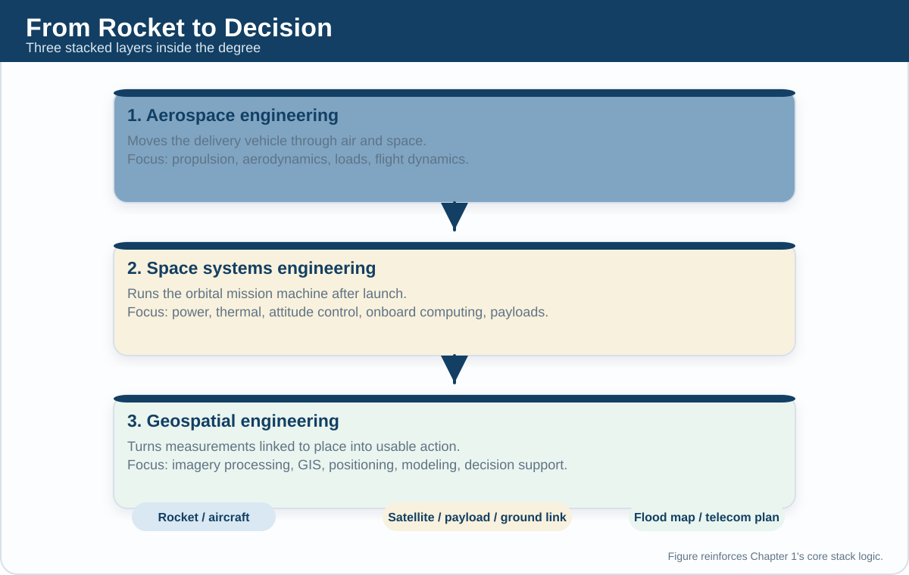
2. Why the Apollo Era Is Not the Best Mental Model Anymore
Many students still imagine space through the Apollo frame: giant state-funded rockets, national prestige, a few flagship missions, heroic astronauts, and hardware so expensive that failure is politically traumatic. That frame is historically important, but it is a poor default model for a student deciding whether this degree is economically sensible in Thailand in the 2020s.
NASA’s current Apollo overview makes the program’s intent explicit: Project Apollo was not just about putting humans on the Moon; it was about establishing technology, achieving national preeminence, conducting scientific exploration, and developing the human capability to work in the lunar environment. That is classic Cold War space logic. Large budgets, state direction, few missions, massive systems, and a strategic rivalry context defined the era.
That older logic matters because it created the public image of “space engineering†as something dominated by crewed exploration and super-heavy launch systems. But for labor markets, that image is misleading. Most engineers in the modern space economy are not working on Moon landings. They are working on Earth observation, communications satellites, navigation systems, launch operations, mission software, spectrum management, data platforms, ground infrastructure, and downstream analytics.
Low Earth orbit changed the economic tempo
Low Earth orbit, or LEO, is where many of these newer commercial systems live. NASA currently defines LEO as Earth-centered orbits up to 2,000 kilometers altitude. Why does that matter? Because LEO is close enough to Earth to support observation, communication, transportation, and resupply with shorter travel times, lower latency, and more frequent revisit opportunities than deeper-space missions. If you want to monitor crops, image coastlines, test small satellites, or provide broadband from a constellation, LEO is often the most practical operating zone.
That practicality changed the market. When access to LEO becomes cheaper and more routine, the center of gravity shifts. The key economic question stops being “Can a nation prove that it can reach space?†and becomes “What useful service can be delivered reliably from orbit?†This is one of the main reasons geospatial and data applications moved closer to the center of commercial value.
CubeSats changed who can participate
NASA describes CubeSats as a class of nanosatellites using a standardized form factor, with a basic 1U unit measuring roughly 10 x 10 x 10 centimeters. That single standard sounds minor, but it changed access. Standardized small satellites reduce barriers for universities, startups, and smaller countries because design, integration, launch accommodation, and mission planning become more modular. A satellite no longer needs to be a once-in-a-decade national monument to be useful.
This does not mean CubeSats are toys. It means mission design became more segmented. A university can build a technology demonstrator. A startup can launch a remote-sensing payload. A national agency can test a sensor or communications concept without betting everything on one enormous spacecraft. This modularity widened the educational pipeline. It also widened the talent pipeline. Students could now learn mission operations, payload integration, attitude control, embedded computing, or imaging workflows on smaller, faster-cycle systems.
Reusable launch made “more missions†economically plausible
The second major shift is reusability. SpaceX did not invent the idea of reusable rockets, but it made routine booster recovery commercially credible at scale. Once launch providers show that hardware can fly, land, and fly again, the mental model of launch changes from one-off consumption to higher-cadence transport. Even when a student never works for a launch company, the downstream effect still matters. More missions mean more satellites, more sensors, more data, more ground operations, more analytics, and more companies built around operational services rather than prestige alone.
This is the core difference between the Apollo era and what is often called New Space. Apollo logic asked whether a nation could do something grand. New Space logic asks whether a service, platform, or data product can be repeated, scaled, financed, and sold. A Thai student deciding on KMITL should care more about the second logic than the first.
| Dimension | Apollo-era logic | New Space logic | Why the difference matters to a student |
|---|---|---|---|
| Funding | Mostly state-led, prestige and national strategy driven | Mixed public-private, more service and product driven | Jobs expand beyond government labs into operators, analytics, software, and supply chains |
| Mission size | Large, rare, expensive | More frequent, smaller, modular | Creates more entry points for universities, SMEs, and junior engineers |
| Success metric | Mission accomplishment and prestige | Repeatable service delivery and unit economics | Skills tied to operations and data become more employable |
| Talent profile | Heavy emphasis on elite hardware programs | Broader mix: hardware, software, telecom, data, GIS, operations | The degree is more viable when the student can move across adjacent skill stacks |
3. The Neighboring Fields: Similar Names, Very Different Careers
One of the biggest traps in university selection is name confusion. “Aerospace,†“space systems,†“satellite communications,†“remote sensing,†and “GIS†sound adjacent because they are adjacent. But adjacency is not sameness. Different programs produce different portfolios, different employer signals, and different fallback options.
Aerospace engineering
Aerospace engineering focuses on vehicles that move through air and space. If you study aircraft stability, propulsion, control surfaces, combustion, airframes, and launch vehicle dynamics, you are in aerospace territory. In Thailand, the relevant employers may include aviation, defense, maintenance, certain R&D units, and selected aerospace-adjacent manufacturing environments. The point is that aerospace is vehicle-centric.
Space systems engineering
Space systems engineering focuses on the mission machine after the flight environment question is handled. A satellite bus, its onboard computer, power subsystem, star tracker, communication subsystem, payload, and operations concept all sit here. This is closer to systems integration than pure vehicle design. Many students who think they want “space†actually mean this layer.
Satellite-focused telecommunications engineering
This field concentrates on moving signals reliably through space-linked communication systems. It deals with RF, antennas, link budgets, modulation, coding, propagation, spectrum, ground stations, navigation and surveillance systems, and the interface between terrestrial and satellite networks. For employability in Thailand, this is often more practical than romanticized spacecraft work because telecom, connectivity, and positioning have real operational markets.
Remote sensing
Remote sensing is about acquiring information from a distance, usually using satellite- or aircraft-based sensors. A remote-sensing specialist asks what a sensor measures, how the atmosphere or surface affects the measurement, how to correct the data, and what physical meaning can be extracted from it. If a student likes physics, spectra, radar, image correction, and Earth observation, this field is a natural fit.
GIS and geospatial analytics
USGS defines GIS as a computer system that analyzes and displays geographically referenced information. That sounds plain, but it is economically powerful because it translates data into location-based action. GIS is where imagery, survey points, roads, administrative boundaries, demographic layers, utilities, and business data become usable together. A telecom planner uses GIS to optimize tower placement. A logistics firm uses GIS to redesign routes. A city uses GIS to track PM2.5 exposure or flood-prone zones. A defense user uses GIS to fuse terrain, imagery, and unit movement.
| Field | Main unit of value | Typical tasks | Representative tools or methods | Thai labor-market interpretation |
|---|---|---|---|---|
| Aerospace engineering | Vehicle performance | Structures, propulsion, flight dynamics, testing | CAD, simulation, controls, structural analysis | Prestige-heavy, narrower locally than broad engineering fields |
| Space systems engineering | Mission-capable spacecraft or subsystem | Subsystem integration, power, attitude control, payload ops | Embedded systems, systems engineering, mission analysis | Higher upside, but fewer direct entry-level roles in Thailand |
| Satellite telecom engineering | Reliable signal and network performance | RF design, link budgets, antennas, ground systems | MATLAB, RF tools, spectrum analysis, network planning | More immediately market-linked because telecom and connectivity already exist |
| Remote sensing | Usable Earth-observation measurements | Image correction, classification, change detection, sensor interpretation | ENVI, SNAP, Python, raster processing, SAR and multispectral workflows | Relevant to agriculture, disaster response, environmental monitoring, national agencies |
| GIS / geospatial analytics | Decision-ready location intelligence | Mapping, overlay analysis, routing, spatial statistics, dashboards | QGIS, ArcGIS, PostGIS, Python, web maps | Broadest local safety net because many sectors need location-driven decisions |
The reason this comparison matters for KMITL is that the program title hides a strategic compromise. It is not promising to be Thailand’s version of a pure astronautics degree. It is promising a hybrid. That hybrid can be powerful if the student understands where the real market gravity lies. It can be dangerous if the student mistakes breadth for guaranteed employability.
4. Mechanism Matters: How a Space-to-Geospatial Value Chain Actually Works
A degree becomes easier to judge when you can picture an end-to-end workflow instead of memorizing subject names. So let us take a real type of problem: flood monitoring and forecasting in Thailand, especially in and around the Chao Phraya basin.
At first glance, a flood seems like a civil engineering or hydrology problem. In reality, it is also a space and geospatial problem because the central operational questions are location-sensitive and time-sensitive. Which districts are inundated? Which roads are cut? How fast is water moving? Which embankments, pumps, industrial estates, rice fields, or residential zones are exposed? How do authorities prioritize response?
Step 1: Acquire data from above
GISTDA explains its flood monitoring workflow in practical terms. It uses satellite data from Thailand’s own systems such as Thaichote and THEOS-2 as well as partner systems such as Sentinel-1A and Radarsat-2. THEOS-2, launched on 9 October 2023, provides high-resolution optical imagery; GISTDA states that it began providing high-resolution imagery in May 2024. Sentinel-1 and Radarsat-2 bring radar capability, which matters because radar can see through cloud cover and operate day or night. In flood season, that is not a minor technical detail. It is the difference between having situational awareness and being blind under heavy cloud conditions.
Step 2: Convert raw measurement into interpretable evidence
Raw satellite data is not automatically a decision product. Optical imagery must be corrected and interpreted. Radar data must be processed to distinguish water, land, vegetation, and built surfaces based on backscatter behavior. Analysts compare current scenes to previous baselines to determine what has changed. This is where remote-sensing expertise enters. A student who only likes “space†in the abstract but dislikes data cleaning, signal interpretation, and uncertainty handling will struggle here.
Step 3: Bring the data into a geospatial system
Once the imagery is processed, the result enters a GIS environment. This is where the map becomes a decision machine. Flood extent is overlaid with administrative boundaries, road networks, hospitals, industrial estates, river gauges, terrain models, land-use categories, and population layers. Now the question is no longer “What does the satellite image look like?†It becomes “Which tambons need warning first?†“Which transport corridor is threatened?†“Which pumping stations are most relevant?†“Which agricultural areas may suffer crop loss?â€
Step 4: Add models if you want forecasting, not just observation
This is where many students confuse monitoring with prediction. A satellite image shows what is already happening or what happened recently. Forecasting requires models. In 2024 research on the Greater Chao Phraya River Basin, a near-real-time flood forecasting system combined rainfall-runoff-inundation modeling into an operational workflow capable of multi-day forecast support. That matters because the economically useful output is often not a beautiful image. It is a lead time advantage. If the system tells authorities or operators what is likely to happen over the next several days, they can move pumps, sandbags, logistics, emergency teams, and public warnings before losses compound.
Step 5: Deliver to users who can act
Only at the final stage does value appear. GISTDA notes that flood products are provided to key workers and organizations involved in planning and response. The actual users may include agencies like the Royal Irrigation Department, Bangkok Metropolitan Administration, provincial disaster offices, infrastructure operators, and national-level coordination bodies. In some cases, public-facing applications also matter. The technical chain is only justified if somebody downstream changes behavior because the information arrived in usable form.
This flood example is important because it explains why “space + geospatial†is not a gimmick title. The space layer provides the sensor platform and the observation capability. The geospatial layer transforms that observation into a location-specific operational product. If you remove the first layer, you lose a major source of timely data. If you remove the second, you have expensive pixels without decisions.
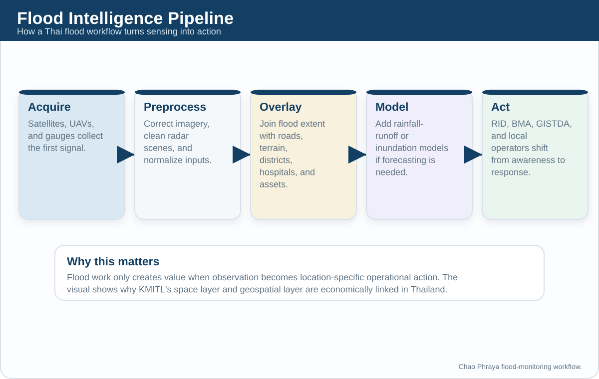
5. Why KMITL Would Combine Space with Geospatial Instead of Teaching Them Separately
The official KMITL page identifies the degree as a Bachelor of Engineering in Space and Geospatial Engineering and places it under the Department of Telecommunications Engineering. The same page lists elective groupings in communications and signal processing, navigation and space communications, and subjects tied directly to space and geospatial work. That institutional placement is not trivial. It reveals the logic behind the program.
Inference from the official program structure: KMITL appears to be framing space not as an isolated astronautics niche, but as a systems problem connected to communications, radar, positioning, signal processing, remote sensing, and location analytics. That is a rational design choice for Thailand. A country does not need its own heavy launch vehicle industry to need satellite communications, navigation, Earth observation, flood monitoring, land intelligence, and geospatial decision systems.
The strongest argument for the combination
The strongest pro-KMITL argument is that the degree combines a high-aspiration domain with a practical application layer. Space hardware by itself can be too narrow for a small domestic market. GIS by itself can drift into a less engineering-heavy identity if it is not connected to sensing systems, navigation, communications, or rigorous technical foundations. Put together well, the degree can produce a student who understands the sensor, the signal, the platform, and the decision workflow.
That is valuable because many real-world employers do not care whether a graduate can give a perfect textbook definition of spacecraft subsystems. They care whether the graduate can contribute to a system that works. Can the person integrate GNSS data with mapping workflows? Can the person understand why radar is useful in cloudy monsoon conditions? Can the person explain link constraints to a non-specialist while also cleaning and visualizing spatial data? A hybrid engineer can be unusually useful if the curriculum and the student’s portfolio are both disciplined.
The strongest argument against the combination
The strongest anti-KMITL argument is breadth risk. Hybrid programs can create graduates who are literate across several domains but not competitive against specialists in any of them. A pure telecom engineer may be stronger in RF and networks. A pure computer science student may be stronger in software engineering. A pure GIS specialist may be more experienced in spatial databases and land-use workflows. A pure aerospace student may have deeper mechanics and vehicle exposure. If the hybrid degree lacks depth, the graduate can end up with a sophisticated vocabulary but a weak hiring signal.
That risk becomes more serious when students are passive. A broad curriculum only becomes a strategic advantage if the student actively selects a direction, builds projects, learns tools beyond minimum coursework, and can show employers a real output. Without that, “interdisciplinary†becomes a polite word for “unclear.â€
Reasoned judgment
The combination makes strategic sense, but only under a disciplined interpretation. The safest reading of the degree is not “I will become a rocket engineer.†The safer reading is “I will learn an engineering base connected to satellites, sensing, positioning, communications, and spatial data, then specialize into the segment that the labor market actually pays for.†In Thailand, that usually means the geospatial, remote-sensing, telecom, navigation, and data application side is the safer base case. The hardware-heavy pure-space path can still be worth pursuing, but it is the narrower and higher-friction path.
6. What This Degree Is Not
It is not astronaut training. That should sound obvious, but many students quietly carry a pop-culture image of space careers that has almost nothing to do with daily engineering work.
It is not the same thing as a pure aerospace degree. If your deepest interest is airframes, propulsion, jet engines, launch vehicle structures, or aerodynamic testing, then you are looking at a different academic center of gravity.
It is not just “making maps.†Modern geospatial work involves databases, positioning systems, coding, image processing, spatial analysis, uncertainty, model design, and the operational constraints of the organization using the output.
It is not a guaranteed ticket into a Thai private-sector space hardware boom, because Thailand’s private hardware market is still limited. That does not make the degree worthless. It makes selectivity and positioning crucial.
It is not a degree where interest in science fiction can substitute for tolerance of mathematics, physics, coding, and systems thinking. If a student dislikes technical abstraction and quantitative reasoning, the title alone will not save the experience.
7. Deep Analysis: Why This Chapter Already Hints at the Degree’s Real Viability
The most important conclusion from this chapter is that the degree’s viability depends on which side of the title does the real economic work. In Thailand, the answer is usually the geospatial side, supported by telecom, sensing, and navigation skills. That does not mean the space component is fake. It means the space component is most valuable when it strengthens the student’s understanding of how data is generated, transmitted, calibrated, and operationalized.
This distinction is crucial for decision-making. If a student chooses the degree because they want to feel close to the word space, that is too weak a reason. If they choose it because they want to work at the intersection of satellite systems, Earth observation, positioning, mapping, and decision support, that is a much stronger reason. The first motive is aesthetic. The second motive is economic.
A second important conclusion is that KMITL’s program title is strategically smarter than it may look at first glance. A purely space-branded undergraduate degree in Thailand would face a difficult absorption problem unless backed by a much larger local spacecraft manufacturing ecosystem than currently exists. By combining space with geospatial engineering, KMITL potentially broadens employability into disaster management, geospatial analytics, positioning, digital infrastructure, telecom planning, environmental monitoring, land intelligence, and government technology functions.
But that same breadth creates a hidden selection pressure. Students who do well are unlikely to be the ones who remain generalists forever. The likely winners are students who use the first two years to build foundation and the later years to lock into a monetizable lane: remote sensing and Earth observation, GIS and spatial analytics, GNSS and positioning, satellite communications, data engineering for spatial systems, or a more hardware-heavy subsystem route if they can find the right projects and mentors.
So the answer to “What are we even talking about?†is now precise. We are talking about an engineering degree built around a full chain: sensing and communications infrastructure above Earth, plus the spatial data systems below that convert signals into decisions. The degree is viable if the student understands that chain, respects its technical demands, and does not confuse a broad title with automatic career clarity.
8. Chapter Takeaway
Space engineering builds or operates the machine. Geospatial engineering extracts decision value from location-based data. KMITL’s degree matters because it tries to connect those two layers. That connection can be strategically strong in Thailand, but only if the student understands from the beginning that the labor-market logic is driven less by fantasy-space identity and more by sensing, communications, positioning, and geospatial problem-solving.
Sources
These sources were used to verify program framing and foundational concepts. Analytical judgments in the chapter combine these sources with reasoned interpretation.
- KMITL Department of Telecommunications Engineering: Bachelor of Engineering overview
- KMITL Department of Telecommunications Engineering: Space and Geospatial Engineering program page
- NASA: The Apollo Program
- NASA: Commercial Low Earth Orbit Frequently Asked Questions
- NASA: What are SmallSats and CubeSats?
- NASA Earthdata: Remote Sensing
- USGS: What is a geographic information system (GIS)?
- GISTDA: How does GISTDA use satellite data to monitor flooding in Thailand?
- Journal of Hydrology: Near real-time flood forecasting system for the Greater Chao Phraya River Basin
Chapter 2: The Macro Space Economy (Global & Thai Focus)
This chapter moves from definitions to industrial reality. The key question is not whether space is exciting. The key question is where the Thai market actually has money, infrastructure, procurement power, and recurring demand, and whether those conditions are strong enough to make KMITL’s degree a rational investment.
Executive Summary
Thailand does participate in the space economy, but not in the same league as Japan, India, or China. JAXA, ISRO, and CNSA sit inside national systems that can launch, manufacture, operate, and commercialize across multiple layers of the value chain. Thailand is much narrower. Its strongest current capabilities are Earth observation, geospatial applications, ground infrastructure, satellite communications interfaces, data services, and public-sector use cases. Its weakest areas are large-scale domestic spacecraft manufacturing, sovereign launch capability, and a thick private customer base for high-volume space hardware.
That distinction matters because students often ask the wrong question. They ask whether Thailand “has a space sector.†The better question is which parts of the space value chain are real, funded, and hiring. The answer is uneven. Public institutions such as GISTDA and the surrounding policy ecosystem matter heavily. Telecom and ground-segment players such as Thaicom and National Telecom matter more than many students expect. Emerging firms such as mu Space matter as indicators of ambition, but they do not yet erase the structural fact that Thailand’s space economy remains government-shaped and procurement-sensitive.
The strongest argument for KMITL’s degree is that Thailand does not need a huge launch industry to need satellite communications, Earth observation, GNSS-enabled systems, and geospatial analytics. The strongest argument against it is that the domestic market is still thin in pure hardware roles and can be cyclical, project-based, and politically dependent. The most honest macro judgment is this: the Thai space economy is real, but it is not broad. It is safest for students who can position themselves toward geospatial data, remote sensing, telecom-ground systems, and hybrid digital roles rather than betting everything on a narrow spacecraft-manufacturing dream.
1. Where Thailand Sits in the Global Hierarchy
Thailand is part of the space economy, but it is not a full-stack sovereign space power. That distinction has to be stated early because many students unconsciously compare Thailand’s future with the public image of Japan, India, or China. Those countries do not merely “use satellites.†They operate national ecosystems with deep industrial layers, persistent public funding, institutional memory, and clearer pathways from research to deployment.
Japan’s JAXA sits in a system that includes launch capability, Earth observation, navigation services, industrial primes, and long-lived mission continuity. JAXA’s H3 launch vehicle program exists because Japan has enough sovereign ambition and industrial backing to treat launch as a national capability rather than a one-off experiment. JAXA also supports positioning infrastructure through the broader Michibiki or Quasi-Zenith Satellite System ecosystem, which aims to improve precision and resilience for positioning services in Japanese conditions. This matters for students because it means Japan’s space labor market is not just about scientists. It includes manufacturing, systems integration, navigation applications, launch operations, component supply, and data services.
India’s ISRO represents another model. ISRO publicly emphasizes that India has three active operational launch vehicles, including PSLV, GSLV, and LVM3. That one fact already tells the student something decisive: India can carry payloads into space on its own vehicles across different mission classes. On top of that, the Chandrayaan-3 mission gave India the distinction of becoming the first country to land successfully near the lunar south pole. Whether or not a Thai student ever works in India, this matters analytically because it shows the level of national commitment and ecosystem thickness required before a country can sustain a genuinely broad space engineering job base.
China, through CNSA and adjacent state entities, sits on yet another scale entirely. The BeiDou Navigation Satellite System is described on the CNSA English site as an independently constructed and operated system providing global positioning, navigation, and timing services. That means China is not merely consuming foreign GNSS services; it owns a national temporal-spatial infrastructure with military, civil, industrial, and consumer spillovers. The same official ecosystem is capable of headline missions such as Chang'e-6 retrieving 1,935.30 grams of lunar samples from the far side of the Moon in 2024. Again, the point is not prestige for its own sake. The point is labor-market consequence. A country operating navigation constellations, lunar missions, and large state-backed programs necessarily creates more roles in manufacturing, mission software, controls, payload engineering, operations, and downstream commercial applications.
Thailand’s space system is much narrower. Thailand has achieved meaningful sovereign capability in Earth observation and national geospatial infrastructure through GISTDA and the THEOS program. Thailand is also building ground-segment relevance through telecom and satellite gateway infrastructure. But Thailand does not currently sit in the same category as JAXA, ISRO, or CNSA for launch autonomy, industrial depth, or breadth of mission portfolio. A student who misunderstands that gap may overestimate the number of domestic pure-space engineering roles that exist right after graduation.
Thailand is not absent. It is specialized.
The correct way to position Thailand is not as “behind in everything,†but as selectively active in the segments it can realistically support. Thailand’s real strengths today are:
- Earth observation access and applications through GISTDA and THEOS-2.
- Geospatial data platforms and public-sector decision support.
- Satellite communications and gateway infrastructure through incumbents such as Thaicom and National Telecom.
- Cross-border cooperation, standards participation, and regional service positioning.
- A growing policy vocabulary around space economy, commercialization, and ecosystem building.
Its weaker points are equally important:
- No sovereign launch stack comparable to JAXA or ISRO.
- No national navigation constellation comparable to BeiDou or Japan’s broader sovereign positioning architecture.
- A much thinner domestic supplier base for flight hardware.
- A smaller venture and procurement environment for scaling private space manufacturing.
- Heavy dependence on state agencies and a small number of anchor organizations.
| Country / ecosystem | Operational proof points | What this says about industrial depth | Implication for a Thai student |
|---|---|---|---|
| Japan / JAXA | H3 launch vehicle, Earth observation missions, high-precision positioning ecosystem | Launch, manufacturing, navigation, and application layers are all present | Japan represents a mature benchmark that Thailand does not yet match in breadth |
| India / ISRO | PSLV, GSLV, LVM3, Chandrayaan-3, customer launches | Strong sovereign mission stack with growing commercial interfaces | Shows what a serious launch-enabled ecosystem looks like when the state commits over decades |
| China / CNSA and allied system | BeiDou, lunar sample return, broad national space infrastructure | Very high state capacity, scale, and application spillover | Represents a scale Thailand should not be casually compared against |
| Thailand / GISTDA, Thaicom, NT, emerging private firms | THEOS-2, national geospatial platforms, satellite gateways, telecom-space interfaces | Real but narrow strengths; strongest in data, services, ground systems, and public use cases | The degree is more viable when aimed at these stronger segments, not when imagined as a direct path into a huge hardware market |
The strongest argument for comparing Thailand with JAXA, ISRO, and CNSA is that it prevents fantasy. The strongest argument against making the comparison too harshly is that Thailand does not need to replicate those systems in order to offer viable careers. A country can have a meaningful space-linked labor market without building a Falcon 9 competitor or a lunar program. The right conclusion is more specific: Thailand is viable in the downstream and enabling layers first, not in the full sovereign stack.
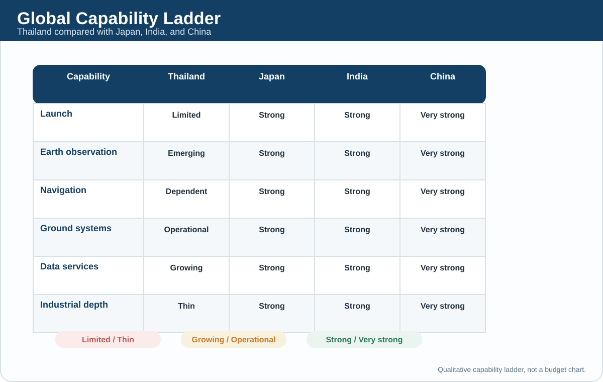
2. The Thai Public-Sector Core: Why Government Still Shapes the Market
If Japan, India, and China show what a thick sovereign ecosystem looks like, Thailand shows what a narrower state-centered system looks like. The Thai space economy is still anchored by public institutions, public missions, public procurement, and public-policy signaling. That matters for students because it means the health of the labor market depends heavily on government continuity, budget timing, and whether agencies can turn strategic language into operational programs.
GISTDA is the central institutional node
GISTDA is not just another agency in the ecosystem. It is the central node around which much of Thailand’s practical space and geospatial activity is organized. Its importance comes from three functions at once. First, it owns and manages national geospatial and remote-sensing capability. Second, it acts as a policy and ecosystem shaper. Third, it operates as a platform provider for downstream users who are not themselves “space companies.â€
The THEOS-2 program is the clearest expression of this role. Airbus described THEOS-2 as giving Thailand sovereign and independent Earth-observation capability with 50-centimeter class optical data. GISTDA’s own 2024 updates marked the public release of the satellite’s first detailed images of Bangkok after the 9 October 2023 launch and in-orbit validation process. That is not a symbolic milestone only. It means Thailand can access high-resolution imagery through a national asset rather than depending entirely on foreign commercial feeds for every strategic need.
But the more important labor-market insight is what happens after launch. THEOS-2 creates demand not only for satellite specialists, but for image processing, mission operations, calibration, data distribution, application design, policy coordination, training, and user support. That is why students should not think of public-sector space work as only “building satellites.†In Thailand, a large portion of the economically relevant work is translating state-owned sensing capability into usable products for ministries, disaster agencies, planners, utilities, environmental users, and security institutions.
National data platforms matter more than students expect
GISTDA’s National Space Data Center is especially important for understanding where Thai employment can emerge. Its own platform language describes it as a space information service center with integrated satellite image and space-data support, including sandbox, API, and learning-content layers. This is a strong signal. Thailand is not only trying to possess data; it is trying to operationalize access, experimentation, and application building. For a KMITL student, that matters because jobs can emerge at the interface of data engineering, APIs, remote sensing, GIS, user enablement, and sector-specific analytics.
In other words, the public sector does not only generate “government jobs.†It also creates technical demand around public data infrastructure. When a state platform exposes imagery, spatial layers, APIs, or sandbox services, it lowers the barrier for researchers, startups, contractors, and digital teams to build applications on top of it. That is one of the few realistic ways a smaller country can widen its space-linked labor market without first building a giant launch-and-manufacturing apparatus.
RTAF Space Operations Center shows the security layer
The Royal Thai Air Force also matters because space is not only an economic story. It is a national-security story. Public RTAF material around the Space Operations Center emphasizes mission areas such as training and exercise, interoperability, and information sharing. For a student, the takeaway is straightforward: Thailand’s space activity is partially embedded in defense, surveillance, communications resilience, and strategic awareness. That creates a layer of demand for secure communications, geospatial intelligence, positioning, mission support, and operational integration.
However, defense-linked demand has its own constraints. It can be less transparent than civilian demand, more security-cleared, more procurement-driven, and more cyclical. It may produce opportunities for certain engineers, but it rarely behaves like a broad consumer-tech labor market. Students should view this as a specialized path, not the default career outlet for an entire graduating class.
The policy architecture is still developing
Thailand has spent years discussing a formal space-activity legal framework. Public analysis around the draft national space legislation noted that the National Space Policy Committee had approved a draft regime intended to address registration, supervision, and debris-related issues, while also preparing Thailand for greater private participation. More recent GISTDA ecosystem language on the SAPACE platform still describes functions such as drafting space affairs policies and plans, promoting investment, and building business networks with leading private companies. The important conclusion is that Thailand’s policy architecture is still in build-out mode rather than in the fully mature, settled phase seen in older space powers.
This matters because policy uncertainty directly affects investment appetite. If licensing, supervision, liability, orbital-registration procedures, and public-private coordination remain in gradual formation, private capital becomes more cautious. Large industrial bets become harder. Startups become more dependent on memorandum-of-understanding theater and pilot projects rather than scaled execution. For the student, that translates into a market where public-sector and quasi-public anchors remain disproportionately important.
Space diplomacy is real, but diplomacy is not the same as a labor market
Thailand’s 2026 selection to chair the Scientific and Technical Subcommittee of UN COPUOS is a meaningful diplomatic signal. It shows Thailand is active and respected in international forums. GISTDA has also been explicit in discussing international cooperation strategy and, more recently, collaboration with organizations such as the OECD on the economics and governance side of space development. These are useful signs of seriousness. They help legitimacy, standards alignment, and access to networks.
But diplomacy should not be mistaken for an industrial base. A student cannot live on diplomatic prestige. The question remains whether these policy and international activities generate enough repeated domestic demand to employ graduates. The answer is yes in some areas, but still uneven. The primary payoff is strongest where policy turns into datasets, programs, procurements, facilities, or technical service demand. It is weakest where policy remains aspirational language without budget follow-through.
| Public-sector pillar | What it actually does | Most realistic job families created | Main weakness or constraint |
|---|---|---|---|
| GISTDA / THEOS-2 / NSDC | Earth observation, data distribution, national geospatial services, ecosystem coordination | Remote-sensing analyst, GIS engineer, mission support engineer, data engineer, application specialist, policy-program staff | Still highly state-centered; growth depends on public budgets and inter-agency adoption |
| RTAF Space Operations Center | Security-oriented space operations, interoperability, information-sharing, defense-space coordination | Defense communications, geospatial intelligence, secure operations, systems support | Narrow intake, specialized access, and lower transparency than civilian markets |
| Space-policy apparatus | Draft rules, standards, investment promotion, international coordination | Regulatory, policy, legal, strategy, standards, ecosystem support roles | Creates fewer engineering seats directly unless policy converts into funded projects |
The strongest argument for Thailand’s public-sector core is that it gives the country a real center of gravity. The strongest argument against it is that over-reliance on government slows market diversification. Both statements are true. For students, the practical reading is that public-sector capability creates the market floor, but not necessarily a very thick market ceiling.
3. Thai Private Sector: Real Businesses, Uneven Depth
The Thai private sector does participate in the space economy, but not all participation is equal. Some firms are recurring operators with real infrastructure and recurring customers. Some are technology integrators and downstream users. Some are ambitious pioneers trying to create new domestic capability. For a student, these categories matter because they imply very different probabilities of stable employment.
Thaicom: still one of the most important anchors
Thaicom is one of the clearest examples of a Thai company that operates in the actual center of gravity of the national market: communications, infrastructure, managed services, and increasingly data-linked space services. The company is not just a nostalgic “satellite TV†name. Recent public disclosures show a broader strategic transition. In 2025, Thaicom discussed satellite replacement financing for THAICOM-10 and disclosed approximately USD 184.5 million in financing support tied to the satellite project. That number matters because it reminds the student that serious space-linked infrastructure is capital intensive, and only a small number of firms in Thailand can even contemplate such projects.
Thaicom’s current positioning also shows where the market is moving. Public company releases in 2025 describe progress in space-tech innovation, Earth-observation partnerships, and geospatial intelligence use cases. The company highlighted agreements involving ICEYE and GISTDA for applications including border security, disaster monitoring, and pollution monitoring. It also discussed enterprise use cases with organizations such as SCG Cleanergy, Global Green Chemicals, and the Office of the Cane and Sugar Board. This is a crucial point for KMITL students: one of the most realistic Thai pathways is not “designing a moon lander,†but building or supporting services where satellite capacity and Earth-observation data become enterprise tools.
In labor-market terms, Thaicom matters because it creates and supports roles around network operations, satellite service engineering, enterprise solutions, ground systems, geospatial product development, partner management, and technical sales. It is one of the rare Thai firms with enough operational scale to turn space-linked technology into continuing business rather than episodic demonstration.
National Telecom: the ground-segment opportunity is more important than it looks
National Telecom Public Company Limited is easy for students to underestimate because its brand sounds like legacy infrastructure rather than frontier space. That would be a mistake. NT is important precisely because the real Thai market often sits at the intersection of terrestrial telecom and satellite connectivity. Its 2025 opening of the Eutelsat OneWeb Satellite Network Portal Gateway at Sirindhorn is a strong example. NT described the facility as integrating with the Eutelsat OneWeb LEO constellation and called it the most advanced LEO satellite network portal in ASEAN. Earlier public material also described NT Satellite as operating fourteen antennas and three satellite gateways. These are not science-fair assets. They are operational ground infrastructure.
Why does this matter for a KMITL student? Because ground-segment work is one of the least glamorous but most employable parts of the ecosystem. Satellites are useless without gateways, earth stations, backhaul integration, regulatory coordination, and customer-facing service delivery. A country like Thailand can support meaningful work in this layer even if it does not manufacture large numbers of spacecraft domestically. Roles here can include RF engineering, ground-station operations, network integration, systems monitoring, service assurance, satellite access operations, and hybrid telecom-space solution design.
The strongest argument for NT as an employer type is that it sits close to real infrastructure with continuing operational need. The strongest argument against it is that state-affiliated telecom environments can be bureaucratic, slower-moving, and less glamorous than startup narratives. For career durability, however, slow-moving infrastructure often beats theatrical innovation.
mu Space: real ambition, but students should read it with discipline
mu Space is probably the company that captures student imagination most strongly because it is one of the few Thai firms that has publicly talked in the language of new-space ambition, satellite manufacturing, launch-adjacent aspiration, and deep-tech growth. Public reporting over the past several years has described factory investments, plans to support a regional space supply chain, and partnerships with firms such as Telehouse Thailand and Interlink Telecom. In 2021, industry reporting described the company’s new factory and a long-horizon plan to expand high-tech employment. In 2024, partnership language was still emphasizing LEO connectivity expansion and ecosystem building.
That is the positive case. The negative case is that ambition should not be confused with a fully proven, broad-based domestic hiring engine. Public company-facing evidence is stronger on announcements, partnerships, and roadmap statements than on a thick, transparent stream of large recurring Thai manufacturing contracts. That does not mean the company is unimportant. It means students should evaluate it as a frontier employer: potentially high-upside, potentially exciting, but structurally more uncertain than an incumbent operator with established cash flows and installed infrastructure.
Reasoned inference from available public signals: mu Space is strategically important as a proof that Thailand can produce entrepreneurial space ambition, but it should not be treated as evidence that Thailand already has a deep, diversified private spacecraft-manufacturing labor market. For a student, that means mu Space-type opportunities are real but scarce, competitive, and riskier than data, telecom, or ground-infrastructure paths.
The hidden center of gravity: enterprise buyers of downstream space data
The private sector story is not only about companies that call themselves “space companies.†It is also about companies that buy satellite-linked intelligence because it solves a business problem. This is where many students miss the real economic engine. When Thaicom talks publicly about enterprise collaborations involving SCG Cleanergy, Global Green Chemicals, or the Office of the Cane and Sugar Board, it is signaling the demand side of the market. Those organizations are not launching rockets. They are paying for insight.
That distinction matters because downstream demand creates broader employability than upstream manufacturing. A carbon-management program, an agricultural monitoring service, a land-use verification workflow, a border-monitoring dashboard, or a pollution surveillance system can employ GIS analysts, remote-sensing specialists, data engineers, software developers, account managers, and solution architects. These roles can sit inside a satellite operator, a systems integrator, a consulting firm, or the end user itself.
For Thailand, this is likely the more realistic medium-term growth path. Not dozens of private spacecraft factories, but more organizations using Earth observation, location intelligence, connectivity, and AI-assisted interpretation in everyday operations.
| Private-sector player | Core role in the ecosystem | Most plausible graduate pathways | Reality check |
|---|---|---|---|
| Thaicom | Satellite operator, service provider, enterprise and geospatial solutions partner | Network operations, solution engineering, remote-sensing product support, business development, partner integration | One of the strongest private anchors, but still concentrated in a limited number of business lines |
| National Telecom | Ground infrastructure, gateways, telecom-space integration | RF and gateway operations, NOC-style work, systems integration, service assurance | Stable infrastructure logic, but not a high-volume “new space startup†environment |
| mu Space | Emerging private space-tech and manufacturing ambition | Advanced hardware, systems, test, integration, business development in frontier projects | High upside, but public evidence still suggests a thinner and more uncertain demand base than incumbent operators |
| Enterprise users such as SCG Cleanergy, GGC, OCSB | Buyers of downstream space-data and geospatial services | Spatial analytics, remote sensing, ESG and land monitoring, product implementation | This is often where the broadest non-hardware demand emerges |
The strongest argument for the Thai private sector is that it already contains real operators and real enterprise buyers. The strongest argument against it is that the number of anchor employers is still small. This is why the degree should be evaluated less like a mainstream IT degree with hundreds of absorbers and more like a niche engineering degree that can still work if the student aims at the right slices of the market.
4. Where Jobs Actually Exist: Hardware vs Data vs Telecom vs Analytics
This is the most practical section of the chapter because it answers the student’s real anxiety: if I study this degree, where is the labor market thick enough to catch me?
The answer is not “equally everywhere.†Thailand’s space-linked job market is uneven. If a student visualizes four broad layers of opportunity, the relative depth is currently clearest in data and applications first, telecom and ground systems second, public mission support third, and pure hardware manufacturing fourth.
Layer 1: Data, remote sensing, and geospatial applications
This is currently the safest and broadest layer. Why? Because many organizations can use geospatial intelligence without becoming space companies. Flood monitoring, agricultural observation, land-use verification, pollution tracking, carbon and ESG monitoring, utility planning, logistics optimization, and security surveillance all create demand for location-linked analysis. The infrastructure can begin with GISTDA, Thaicom partnerships, or external data suppliers, but the employment can sit in many different kinds of organizations.
Typical entry-level or early-career roles in this layer may include geospatial analyst, GIS engineer, remote-sensing analyst, Earth-observation product specialist, spatial data engineer, and application consultant. The tools are more likely to include Python, QGIS, ArcGIS, raster processing libraries, APIs, and cloud-based data workflows than clean-room assembly benches. This is one reason the geospatial side of KMITL’s degree acts as the labor-market safety net.
Layer 2: Ground systems, telecom, and satellite-enabled connectivity
This is the next strongest layer. Thailand has real need for gateways, earth stations, RF support, connectivity integration, satellite backhaul, and network-service operations. Operators such as Thaicom and National Telecom sit here, and this layer often connects more directly to existing commercial demand than spacecraft manufacturing does. Students with strength in communications engineering, RF, signal processing, networks, and systems operations may find this layer more stable than they first expected.
Representative roles include RF engineer, ground-station engineer, network operations engineer, satellite communications engineer, systems integration engineer, and service assurance engineer. These are less cinematic than “spacecraft designer,†but for employability they are often more realistic in Thailand.
Layer 3: Mission support, public programs, and policy-linked technical work
Public agencies, research centers, and defense-linked units generate another important but narrower layer. Here the work may involve mission operations, remote-sensing product development, platform management, standards, data governance, procurement support, or inter-agency technical coordination. These roles can be prestigious and strategically important, but they do not usually absorb large numbers of graduates every year. They are often constrained by civil-service structures, project budgets, or specialized intake channels.
Layer 4: Space hardware and advanced manufacturing
This is the layer that attracts the most romantic interest and currently offers the smallest broad-based domestic demand. Thailand does have meaningful signs of growth: national satellite assembly and test capability, frontier private firms like mu Space, and university-linked engineering activity. But the market is still thin compared with telecom, GIS, or software-adjacent roles. A student who wants this path should assume high competition, limited seat count, and a need to build a stronger-than-average technical portfolio.
Typical roles here can include systems integration engineer, payload engineer, embedded engineer, test engineer, mechanical design support, and environmental test support. These are real roles, but they do not yet exist at Thai scale in the way that generalist software, telecom, or geospatial analysis roles do.
| Opportunity layer | Current Thai depth | Representative employers or demand sources | Example job titles | Judgment |
|---|---|---|---|---|
| Geospatial data and applications | Highest | GISTDA-linked projects, Thaicom Earth-observation work, enterprise users, consultancies, agencies | GIS engineer, remote-sensing analyst, spatial data engineer, geospatial product specialist | Best safety net for most students |
| Ground systems and telecom-space integration | High | Thaicom, NT, gateway operations, telecom integrators | RF engineer, satellite communications engineer, gateway engineer, systems operations engineer | Strong if the student likes communications and infrastructure |
| Public mission support and defense-linked work | Moderate but narrow | GISTDA, RTAF-linked functions, public labs, policy units | Mission support engineer, geospatial intelligence specialist, program engineer, standards analyst | Important, but not a mass absorber |
| Space hardware manufacturing | Lowest broad-based depth | Specialized labs, AIT-related capability, frontier private firms such as mu Space | Subsystem engineer, embedded engineer, payload integration engineer, test engineer | Viable for top performers, risky as the default plan |
Why this hierarchy matters for KMITL specifically
KMITL’s program sits under a telecommunications department, which is actually a strategic clue. The Thai market is telling students where the repeat demand lies: communications, signals, positioning, sensing, and data use. A student who embraces that logic can turn the degree into a practical asset. A student who ignores it and fixates exclusively on rare spacecraft-manufacturing roles may end up disappointed.
This does not mean students should abandon ambition. It means they should sequence ambition correctly. Build the geospatial, remote-sensing, telecom, and systems base first. Then, if hardware opportunities appear, compete for them from a position of strength. This sequencing increases survivability in a smaller market.
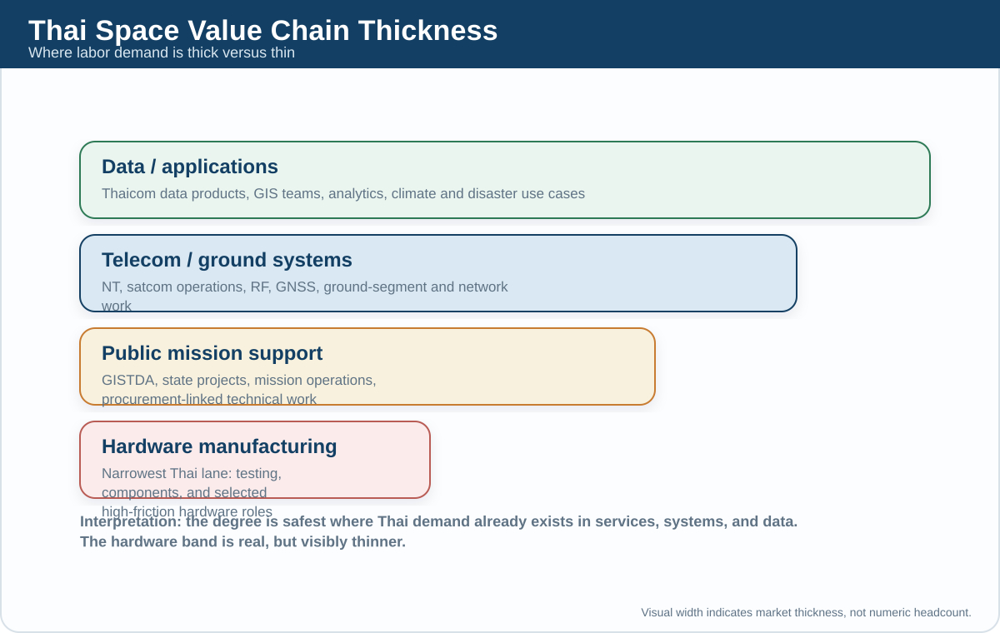
5. Funding Bottlenecks, Procurement Cycles, and Why the Market Feels Smaller Than the Headlines
Students often read press releases and conclude that a large industry must be forming. The Thai space economy does have genuine momentum, but it also has structural bottlenecks that reduce the number of roles available at any given time. Understanding those bottlenecks is essential for making an honest degree decision.
Bottleneck 1: capital intensity
Space infrastructure is expensive. Thaicom’s disclosed financing support of roughly USD 184.5 million for THAICOM-10 is a useful reminder. Large satellites, gateways, control systems, testing infrastructure, and national data platforms require capital that only a small number of Thai entities can mobilize. This automatically narrows the employer base. Even when the sector is strategically important, it does not behave like a light-capex software market where small firms can multiply rapidly with modest initial funding.
The implication for students is simple: the number of employers able to fund serious space-linked engineering is limited. That is one reason why a hybrid degree becomes safer when it also aligns with broader data, telecom, and analytics markets.
Bottleneck 2: procurement cycles are slow and lumpy
Much of Thailand’s high-value space-related demand is public or quasi-public. That means decisions often move through budget cycles, ministry alignment, state-enterprise timelines, legal reviews, and procurement procedures. Instead of a continuously expanding private market with dozens of venture-backed customers, the sector can move in jumps: a satellite program, a gateway expansion, a national platform upgrade, a defense initiative, or a new service partnership.
Lumpy procurement creates a misleading public narrative. During announcement periods, the industry looks larger than it feels on the ground. Then there may be quieter periods where hiring slows because the next budget or project phase has not yet materialized. This is not unique to Thailand, but it is more pronounced in smaller ecosystems where a few anchor projects account for a large share of visible activity.
Bottleneck 3: dependence on the state as anchor customer
The Thai market still depends heavily on government as an anchor customer, coordinator, and legitimizer. GISTDA, public platforms, defense-linked activities, and state-involved telecom infrastructure all illustrate this. The benefit of this model is that strategic sectors can still exist before private demand is fully mature. The downside is that the market’s growth ceiling remains constrained if private industry adoption does not broaden fast enough.
This is why downstream enterprise adoption matters so much. Every time an organization such as SCG Cleanergy, Global Green Chemicals, a sugar-sector agency, or a logistics or environmental user buys geospatial or Earth-observation capability for an operational purpose, the market becomes less dependent on state patronage alone. For students, that broadening is good news because it creates more pathways and less concentration risk. But the transition is incomplete.
Bottleneck 4: the private sector often buys services, not deep engineering teams
Another hidden reality is that many private firms do not want to build large in-house space teams. They prefer to buy connectivity, imagery, analytics, or managed services from operators and integrators. This means demand can be real but indirect. Jobs may accumulate at Thaicom, NT, GISTDA-linked contractors, software vendors, or analytics teams rather than inside the final customer. Students who expect many corporations to advertise “space engineer†vacancies may misunderstand how the market is structured.
In practice, the hiring often occurs through more ordinary titles: data analyst, GIS specialist, solution engineer, telecom engineer, remote-sensing specialist, product engineer, or technical consultant. The degree can still be relevant, but the job title may not flatter the student’s imagination.
Bottleneck 5: policy maturity is still catching up with ambition
Thailand’s ongoing effort to build out a more complete space regulatory regime is positive, but the very fact that this framework is still evolving tells the student something important. Mature industries are easier to finance because rules are clearer. When an industry is still formalizing its licensing, supervision, liability, debris, and investment architecture, the space for aggressive private capital is narrower. This does not stop activity, but it does slow compounding.
That is why ecosystem platforms such as SAPACE, GISTDA’s policy work, and investment-promotion language matter. They are trying to reduce friction. Still, a student should distinguish between ecosystem-building effort and evidence that the ecosystem is already large.
The strongest argument for optimism
Despite these bottlenecks, there are reasons for genuine optimism. Thailand now has stronger Earth-observation sovereignty than before through THEOS-2. It has visible ground-segment investment through NT and international operators. Thaicom is actively repositioning beyond legacy broadcasting into a more diversified satcom and geospatial posture. Public platforms such as NSDC lower barriers for application building. International cooperation and policy work are increasingly explicit about the “space economy†rather than only “space technology.†These are not imaginary gains.
The strongest argument for caution
The caution case is equally real. A small number of projects can create a large amount of noise without creating a large labor market. Press releases can overstate readiness. Startup ambition can outrun domestic demand. Public agencies can announce strategic directions that take years to convert into predictable hiring. Thailand can absolutely produce excellent engineers in this field, but it cannot yet guarantee a thick domestic market for every graduate who wants a pure-space identity.
| Structural issue | Mechanism | What the student feels later | Strategic response |
|---|---|---|---|
| High capital intensity | Only a few firms or agencies can fund major assets | Small employer pool | Build adjacent skills that also fit telecom, data, and analytics markets |
| Slow procurement cycles | Projects depend on public budgets and staged approvals | Hiring can be irregular and project-based | Keep a flexible portfolio that translates beyond one mission or program |
| State dependence | Government remains anchor customer and ecosystem organizer | Market concentration risk | Target private downstream applications where possible |
| Indirect private demand | Companies buy services instead of building large in-house space teams | Job titles may look more like GIS, telecom, or data than “space engineer†| Judge roles by function, not by glamorous naming |
| Policy still maturing | Regulatory clarity and investor confidence develop gradually | Slower ecosystem scaling | Expect a long game, not an overnight boom |
The decisive lesson is that Thailand’s space economy is not fake, but it is bottlenecked. For the degree decision, that means the student should not reject the field outright. Instead, the student should price in that the market rewards adaptable technical breadth anchored by one employable specialization.
6. Deep Analysis: What This Macro Picture Means for the Degree’s Viability
At the macro level, the viability of KMITL’s Space and Geospatial Engineering degree depends on whether the student interprets the market correctly. If the student imagines Thailand as an emerging full-spectrum space power that will soon generate large numbers of hardware, propulsion, or spacecraft-bus jobs, the degree can look riskier than expected. If the student instead reads the market as a hybrid ecosystem centered on Earth observation, geospatial services, telecom-space infrastructure, public mission support, and downstream analytics, the degree becomes much more defensible.
The strongest pro-degree argument at the macro level is that Thailand’s real needs line up well with the combined structure of the KMITL program. The country needs professionals who understand satellites, signals, positioning, remote sensing, geospatial data, and operational applications. The sector does not need every graduate to become a rocket engineer. It needs people who can work across sensing, communications, and Earth-side decision systems. This is exactly why a hybrid engineering degree can be smart in a country whose strongest demand is downstream and enabling rather than launch-centric.
The strongest anti-degree argument is that a niche ecosystem can punish vague graduates. In a big market, a student can be average and still find a niche. In a smaller market, ambiguity is dangerous. If a KMITL student leaves university as a “little bit of everything†candidate with no clear specialization in geospatial analytics, remote sensing, telecom, embedded systems, or data workflows, the market may not know where to place them. The degree itself does not solve this. The student has to solve it.
Another macro conclusion is that the Thai public sector remains both a blessing and a constraint. It is a blessing because it gives the ecosystem continuity, legitimacy, and expensive national assets such as THEOS-2 and NSDC. It is a constraint because the market still waits on public spending, regulatory maturation, and adoption by other agencies and enterprises. In practical terms, this means the market can be real without being broad.
There is also a timing issue. The Thai space economy in 2026 looks more credible than it did a decade earlier because national imagery capability, LEO gateway infrastructure, and enterprise-facing Earth-observation use cases are more visible. But “more credible†is not the same as “fully mature.†Students entering a four-year degree now are not betting on a finished market. They are betting that the market will continue to thicken modestly while they build skills that also transfer into GIS, telecom, data, and digital infrastructure if pure-space hiring remains narrow.
This is why the geospatial half of the degree is so important. It acts as a market bridge. Even if Thailand’s pure-space manufacturing base remains limited, geospatial capabilities remain useful across agriculture, urban planning, climate and ESG work, disaster management, utilities, logistics, telecom planning, defense support, and digital public infrastructure. In macro terms, the degree’s viability is therefore not driven by the question “Does Thailand have enough space companies?†It is driven by the question “Does Thailand have enough organizations that need satellite-linked data, communications, and location intelligence?†The answer to that second question is much more favorable.
Reasoned judgment: Chapter 2 supports a conditional yes. The market is viable enough to justify the degree, but only under a disciplined strategy. The student should assume the Thai macro market is narrow at the hardware frontier, medium-strength in public and strategic institutions, and strongest in downstream geospatial and telecom-linked applications. If the student builds toward those stronger segments, the degree can be a smart and differentiated choice. If the student builds toward a fantasy of a large domestic spacecraft-manufacturing boom, the risk rises sharply.
7. Chapter Takeaway
Thailand has a real but narrow space economy. Its strongest zones are Earth observation, geospatial services, satellite communications, ground infrastructure, and public-sector applications. That means KMITL’s degree is macroeconomically viable when treated as a pathway into those stronger layers, not as a blind bet on a large domestic spacecraft-manufacturing boom.
Sources
These sources were used to anchor the macro analysis in current public signals. Several judgments in the chapter are explicit inferences from the activity mix and institutional structure shown by these sources.
- JAXA: H3 Launch Vehicle announcement
- JAXA: MICHIBIKI and positioning services
- ISRO: Launchers
- CNSA: BeiDou Navigation Satellite System
- CNSA: Chang'e-6 lunar sample return update
- GISTDA: Annual report 2568
- GISTDA National Space Data Center
- GISTDA: Thailand chairs the 63rd STSC of UN COPUOS
- TPN National News: GISTDA unveils first detailed Bangkok images from THEOS-2
- Thaicom: Q3 2025 results and space-tech expansion
- Thaicom: Q2 2025 results and THAICOM-10 financing
- National Telecom: Eutelsat OneWeb satellite network portal gateway launch
- SES: mu Space, SES Networks, and Hughes partnership in Thailand
- Asia Centre: Thailand’s draft national space act analysis
Chapter 3: The Geospatial & Data Boom (The Safety Net)
This chapter makes the report’s most important employability argument. The claim is simple: in Thailand, GIS, remote sensing, location intelligence, and spatial data work form a much larger and safer market than pure space hardware. The chapter’s job is to prove that claim with Thai examples, current hiring signals, and concrete mechanisms.
Executive Summary
The geospatial and data layer is the strongest economic argument for studying Space and Geospatial Engineering at KMITL. Thailand does not yet offer a thick domestic market for pure spacecraft hardware. It does, however, offer a much broader market for spatial analytics, remote sensing, GIS, location intelligence, telecom planning, environmental monitoring, logistics optimization, and smart-city operations. This difference matters because it changes the degree from a risky niche bet into a more flexible technical platform.
Thai examples make the point clearly. In agriculture, companies and ecosystems linked to CP Group, Chia Tai, and Mitr Phol are already using drones, precision farming, and digital farm-management systems that depend on maps, field boundaries, yield zones, and data integration. In ESG and BCG work, organizations such as Thaicom, TGO-aligned CarbonWatch, SCG-linked businesses, Global Green Chemicals, and the Office of the Cane and Sugar Board are using satellite and geospatial methods for carbon accounting, land verification, crop-burn detection, and environmental surveillance. In logistics and urban services, Shopee-linked SPX Express, Flash Express, and LINE MAN Wongnai all sit on top of routing, service-area design, geocoding, and data platforms. In urban management, Bangkok’s flood and telemetry systems, PM2.5 tools, and 5G deployment by AIS and True all rely on spatial reasoning whether or not the job title explicitly says “GIS.â€
The strongest argument for the degree is therefore not “Thailand is becoming a space superpower.†The stronger argument is “Thailand already needs people who can work with location-aware data systems.†The strongest argument against complacency is that students still need a real specialization. GIS is broader than hardware, but broad does not mean automatic. The winners will be the students who translate geospatial training into agriculture tech, ESG MRV, logistics intelligence, telecom planning, or civic-tech operations.
1. Core Thesis: Why GIS Is Larger, Safer, and More Immediate Than Space Hardware
This chapter’s central claim is blunt: for a Thai student, the geospatial layer is the degree’s labor-market safety net. That is not because hardware is unimportant. Hardware matters enormously. But hardware demand in Thailand is narrow, expensive, and concentrated in a small number of institutions and frontier firms. Geospatial demand is different. It appears wherever organizations need to answer a question that depends on where something is, how it changes across time, and what action should follow.
That sounds abstract until it is translated into business mechanics. A sugar producer wants to know which fields are ready to harvest, where burn risk is emerging, and which supplier plots are underperforming. A logistics platform wants to know how to place service points, route drivers, cluster demand, and predict delivery times. A telecom operator wants to know where demand is dense, where coverage is weak, which rooftops or towers have the best propagation trade-offs, and how traffic moves by hour and district. A city wants to know which roads are flooding, which districts have dangerous PM2.5 exposure, and where sensors or pumps should be prioritized. None of these organizations need to call themselves “space companies.†All of them need geospatial thinking.
This is why GIS and location intelligence are larger than the narrow Earth-observation sector alone. A remote-sensing engineer may begin with satellite imagery, but a GIS engineer often works at the point where imagery meets roads, parcels, weather, demographics, telecom assets, delivery zones, and business rules. That is where employability widens. The same spatial core can travel into agriculture, utilities, insurance, transport, telecom, environmental consulting, property analytics, and government operations.
Esri Thailand’s own market framing supports this breadth. In a February 2026 article, Esri Thailand described ArcGIS as a location-intelligence platform used by more than 400 organizations in Thailand across public and private sectors. That single number is strategically important. Even if it does not translate one-to-one into 400 employers hiring fresh graduates, it shows the spatial stack is not a tiny niche locked inside one agency. It is already diffused into many organizations.
The strongest argument for the safety-net thesis
The strongest case in favor of GIS as the degree’s safety net is market multiplicity. Space hardware requires a relatively small set of specialized employers with sufficient capital and infrastructure. Geospatial work can emerge inside far more organizations because the barrier to use is lower. A company does not need a clean room to buy satellite data, license ArcGIS, run QGIS, or build a spatial dashboard in Python. As more organizations digitize field operations, asset management, routing, ESG reporting, and local decision-making, the demand for spatial workflows spreads outward.
The strongest argument against overconfidence
The strongest objection is that “broad geospatial demand†does not always appear under glamorous job titles. Many firms will advertise for data analysts, BI engineers, operations analysts, telecom planners, environmental consultants, or product analysts even when the work contains a heavy location component. A student who insists on seeing only vacancies labeled GIS engineer may underestimate the market. But the reverse risk also exists: a student may overestimate their readiness if they know only map software and not enough coding, databases, automation, or business context.
Reasoned judgment
The right conclusion is not that GIS automatically guarantees employment. The right conclusion is that it multiplies the number of sectors where the degree can still make economic sense. In Thailand, that difference is decisive. A narrow hardware market can be survived if the graduate also has access to a broader location-intelligence market.
| Question | Pure space hardware path | Geospatial and data path | Why it matters for KMITL |
|---|---|---|---|
| How many employer types can use the skill? | Few | Many | Geospatial skills travel across sectors more easily |
| Capital needed by the employer | Very high | Moderate to low | Lower barriers create more adoption points |
| How quickly can value be demonstrated? | Often slow and project-based | Often immediate through dashboards, maps, forecasts, and routing gains | Immediate business value supports broader hiring |
| Fallback options outside “space†branding | Limited | Strong | This is the real safety net of the degree |
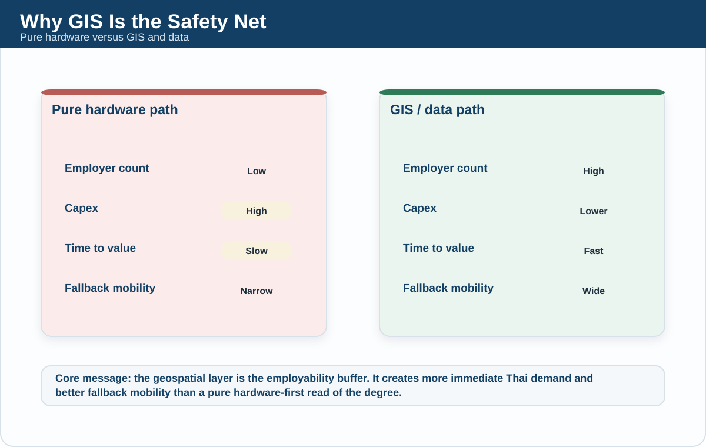
2. Agriculture and AgriTech: The First Big Safety Net
If a student wants the fastest answer to “Where will geospatial skills be useful in Thailand?â€, agriculture is one of the first places to look. Thailand is still deeply tied to land, crop cycles, water risk, sugar, rice, cassava, rubber, fruit, and food processing. That means spatial data is not optional. It is fundamental. Fields have boundaries. Harvest windows vary by location. Water stress is geographic. Disease spread is spatial. Burn scars are spatial. Yield variation is spatial. Supply chains begin on land parcels and move through roads, mills, and warehouses. This alone creates more recurring demand than many students expect.
CP Group ecosystem: precision agriculture is a location problem before it is a software problem
Within the broader CP Group ecosystem, Chia Tai offers a cleaner lens than vague “innovation†branding because it shows how agri-tech reaches the farm edge. In 2024 Chia Tai launched the “Chia Tai Experience,†presenting precision agriculture tools such as autonomous agricultural drones through a partnership with XAG Thailand. That is not just gadget marketing. Drones in agriculture are valuable only when tied to field geometry, treatment zones, spraying routes, terrain constraints, and crop conditions. Every serious drone workflow eventually becomes a geospatial workflow.
The mechanism is straightforward. A farm operation or agronomy team first needs to know where each plot begins and ends. Then it needs to classify crop stage, estimate input needs, map weeds or disease hotspots, and send a machine or labor team to the correct area. A drone can spray or capture imagery, but the operational intelligence comes from georeferenced boundaries, tasking layers, and records of what happened on which plot. That creates roles for GIS support, image processing, agronomy data analysis, field-operations mapping, and farm-management systems.
A student does not need to be employed directly by CP Group headquarters to benefit from this market. The work may sit inside seed companies, drone-service providers, agri-input distributors, food processors, precision-agriculture startups, consultants, or digital teams working on farm platforms. The employer label may vary; the spatial logic stays the same.
Mitr Phol: sugarcane proves that spatial data is economically serious
Mitr Phol is one of the strongest Thai examples because sugarcane is a scale business, and scale punishes bad field intelligence. The company’s sustainability materials state that it is Thailand’s number-one sugar producer and the world’s fourth largest. Its “Modern Farm†model has been explicit for years about using digital innovation and technology to improve farming productivity and lower greenhouse-gas emissions. In 2024 the company reported precision-farming activity covering 471,754 rai and cited 45,600 tons of carbon dioxide equivalent avoided from precision-farming and cane-leaf management measures.
This matters because it links geospatial work directly to money and emissions. Precision agriculture at sugarcane scale is not about making a pretty dashboard. It is about deciding which plots should be planted, fertilized, irrigated, cut, or trucked at what time, and with what expected yield. The larger the land base, the greater the need for boundary management, route optimization, crop-condition monitoring, burn detection, terrain analysis, and mill-supply coordination. GIS, GNSS, drone data, and remote sensing all have natural roles here.
For employability, the key takeaway is that agri-geospatial work can exist under multiple job names:
- Precision agriculture analyst
- GIS officer or GIS engineer
- Remote-sensing analyst
- Agronomy data analyst
- Digital farming product specialist
- Spatial operations analyst for supply and harvest planning
The tools may include QGIS, ArcGIS, drone mission software, Python, SQL, mobile data collection, GNSS devices, and raster processing. The critical point is that the domain knowledge sits on top of the spatial stack. A student who can speak both the language of maps and the language of farm operations becomes much more valuable than a generic analyst.
Why agriculture is safer than students think
The strongest argument for agriculture as a safety net is persistence. Crops, weather, water, and land management do not disappear when one startup fails or one satellite program slips schedule. Agriculture is slow, operational, and recurring. The weakest part is that some agricultural employers can pay less than glamorous urban tech brands, especially in field-heavy entry roles. But the trade-off is that the sector offers a large volume of spatial problems that are not going away. For a young graduate, persistence often matters more than branding.
The strongest argument against treating agriculture as a perfect fallback is that students who dislike field conditions, provincial travel, or messy operational data may find the work less attractive than the idea. This is not a “clean lab only†career. Many roles require messy coordinates, imperfect farmer records, satellite cloud cover issues, mobile forms, GPS drift, and the politics of working with operations teams. But these practical constraints are also what make the skill set defensible.
| AgriTech use case | Thai example | What the geospatial worker actually does | Why it creates jobs |
|---|---|---|---|
| Field boundary and machine tasking | Chia Tai and XAG drone-supported farming workflows | Map plots, prepare task layers, track treatment coverage, integrate imagery | Drones and precision tools fail commercially without spatial operations support |
| Yield and harvest planning | Mitr Phol precision farming | Analyze crop zones, estimate readiness, support logistics to mills | Small improvements compound at plantation and mill scale |
| Burn and environmental monitoring | Sugarcane and biomass supply-chain monitoring | Detect hotspots, verify parcels, support compliance reporting | Environmental rules and ESG pressure increase the need for traceability |
| Water and risk analysis | Irrigation, rainfall, flood-sensitive crop zones | Overlay weather, hydrology, land use, and crop data | Climate volatility makes spatial risk intelligence more valuable over time |
3. ESG, BCG, Carbon Tracking, and Land Verification: The New Compliance Market
One of the most important reasons geospatial employability is expanding is that spatial data is no longer only about operations. It is increasingly about compliance, financing, and proof. Companies now need to show where an asset is, what happened there, whether a claim is verifiable, and how environmental impact is measured over time. This is where ESG, BCG policy, carbon markets, and land verification create new demand for geospatial work.
CarbonWatch: a Thai example of geospatial MRV becoming a product
Thaicom’s CarbonWatch is one of the clearest examples of a Thai company trying to turn remote sensing and geospatial analytics into an ESG-grade service. Public materials describe CarbonWatch as using satellite and AI technology to estimate carbon stock and changes over time. In Thaicom’s Q2 2024 management discussion, the company stated that on 11 July 2024 CarbonWatch received certification from the Thailand Greenhouse Gas Management Organization for its forest carbon-sequestration assessment tool, making it the first platform of its kind in Thailand and ASEAN under the T-VER framework. That sentence is strategically important. It means geospatial analysis is not just “nice to have visualization.†It is moving into the monitored-reportable-verifiable layer of climate claims.
The mechanism matters. A carbon or forestry project must establish project boundaries, track land cover over time, detect changes, estimate biomass or carbon stock, and provide evidence that can survive audit or certification review. Every one of those steps is spatial. If the boundary is wrong, the credit claim can be wrong. If deforestation or degradation is not detected, the accounting can fail. If data cannot be reproduced, the method becomes weak. That creates demand for remote-sensing analysts, GIS engineers, carbon MRV specialists, data scientists, and technical auditors who understand spatial evidence.
Enterprise ESG is already using the stack
Thaicom’s 2025 public updates also showed that this is not limited to one carbon product. The company cited collaboration with SCG Cleanergy, Global Green Chemicals, Concrete Products and Aggregate Co., Ltd., and the Office of the Cane and Sugar Board for use cases such as monitoring palm plantation areas, assessing carbon sequestration, monitoring crop burning, tracking PM2.5 impacts, and observing encroachment or emission-relevant land activity. These examples are crucial because they connect geospatial analysis to real Thai corporate and quasi-public workflows rather than abstract climate rhetoric.
Take palm plantation monitoring as an example. Why does a geospatial analyst matter here? Because a company or investor may need to know whether the plantation area matches reported land extents, whether expansion has occurred, whether vegetation condition is changing, and whether carbon uptake assumptions are credible. That requires satellite data, parcel boundaries, time-series comparison, classification logic, and careful reporting. This is not done by a generic office assistant with Excel alone.
Land verification is becoming a business function, not just a map exercise
Land verification sounds simple until money depends on it. Once a project is tied to carbon crediting, ESG reporting, sustainable sourcing, biomass procurement, or environmental compliance, a wrong boundary can mean a wrong invoice, a wrong declaration, or reputational risk. That is why geospatial work often moves from the “planning†budget to the “risk and compliance†budget. When that happens, the work becomes stickier.
For a graduate, this is a major positive signal. Sticky work is safer work. A company can postpone a flashy innovation pilot. It is harder to postpone the monitoring and evidence systems required to satisfy regulators, investors, export markets, or internal sustainability targets. This is exactly why the geospatial layer matters in Thailand’s BCG and ESG environment.
The PM2.5 and crop-burn link is especially important in Thailand
Thailand’s PM2.5 problem creates another direct bridge between geospatial analysis and employability. In July 2025 Thaicom announced a collaboration with the Office of the Cane and Sugar Board using geospatial data combined with AI to monitor sugarcane burning and expand this model across other agricultural sectors contributing to air pollution. This is an excellent Thai-specific example of why spatial analytics matter. Air pollution is atmospheric, but the intervention problem is spatial: where did burning happen, on which plots, near which communities, under what wind conditions, and with what likely downstream exposure?
The technical chain here can involve hotspot detection, parcel overlay, time-stamped imagery, model-assisted interpretation, and dashboard delivery for officials or enterprise users. The worker who can connect these pieces is employable not because they know the word geospatial, but because they help an organization detect, document, and act on a costly environmental problem.
The strongest argument for this market
The best argument for the ESG/BCG market is that it creates demand from both sides: operations and compliance. A company can use spatial analysis to optimize land and supply chains, and then use the same or related systems to prove environmental claims. That dual-use logic is powerful. It makes geospatial tools harder to cut from the budget.
The strongest argument against overestimating it
The risk is that some sustainability projects are still pilot-heavy and consultant-heavy. Not every announcement becomes a large permanent in-house team. Some companies buy reports or vendor services rather than building their own geospatial unit. This is why students should learn to work in both product and consulting modes. Sometimes the employer is the end user. Sometimes the employer is the vendor, platform provider, or advisory firm doing the work for many end users.
| ESG / BCG workflow | Real Thai example | Spatial mechanism | Likely roles |
|---|---|---|---|
| Carbon stock monitoring | Thaicom CarbonWatch and T-VER acceptance | Define project area, monitor land-cover change, estimate biomass and verify time series | Remote-sensing analyst, carbon MRV specialist, GIS engineer |
| Plantation verification and sequestration analysis | Global Green Chemicals collaboration | Track plantation extents and vegetation behavior across time | Geospatial analyst, environmental data analyst, Earth-observation product specialist |
| Crop-burn and air-pollution surveillance | Thaicom and Office of the Cane and Sugar Board | Detect hotspots, match to parcels, support intervention and reporting | Spatial AI analyst, GIS developer, public-sector application specialist |
| Low-carbon asset planning | SCG-linked clean energy and industrial sustainability contexts | Overlay land, energy assets, logistics routes, and environmental constraints | Location-intelligence consultant, geospatial engineer, planning analyst |
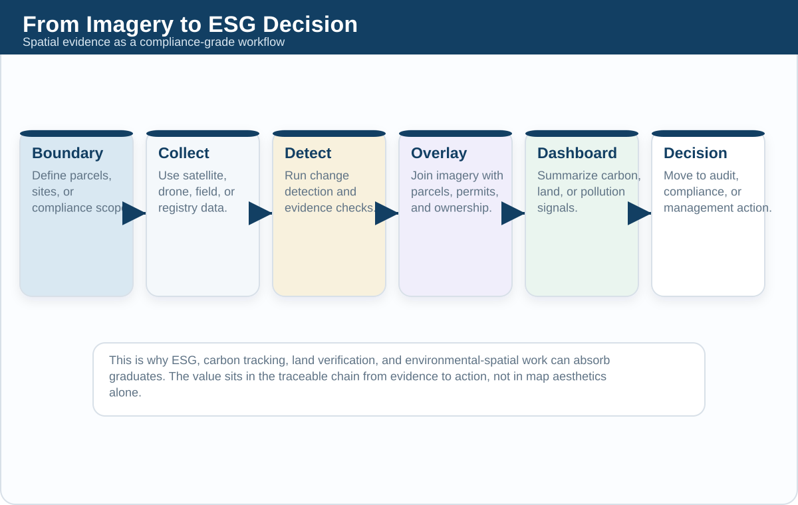
4. Logistics, Last-Mile Delivery, and Platform Operations: Spatial Work Hiding in Plain Sight
Students often miss one of the biggest geospatial labor pools because it does not wear the word space anywhere in the title: logistics and on-demand platform operations. Thailand’s e-commerce and delivery sectors are built on geocoding, service-area logic, route optimization, branch placement, dispatch, ETA prediction, and location-aware fraud or anomaly checks. This is geospatial work even when the vacancy is posted under data, operations, or platform engineering.
Shopee-linked logistics through SPX Express
SPX Express, Shopee’s logistics arm in Thailand, publicly emphasizes nationwide coverage, parcel tracking, and service points. Those customer-facing features sound ordinary, but they are spatially intensive underneath. A service-point network only works when branches and pickup points are placed in locations that balance population density, driver efficiency, parcel volume, road access, and delivery-time commitments. Real-time tracking is not just a barcode problem. It is a geospatial time-and-location problem.
The mechanism here is practical. A delivery company needs to cluster addresses, reduce failed drops, assign riders or drivers to zones, forecast route duration, and decide where to place or close service points. It also needs to clean messy addresses. Thai address data is not always perfect, and many logistics problems become data-cleaning plus geocoding problems before they become algorithm problems. This creates roles for operations analysts, routing analysts, data engineers, platform engineers, and location-intelligence teams even if the company does not label them that way.
Flash Express: nationwide network means continuous spatial optimization
Flash Express publicly highlights branch and service coverage across Thailand. Again, that is not just a sales line. A nationwide branch network creates a continual optimization problem: where should hubs sit, how should parcels flow between them, how should route zones be redrawn as demand shifts, and how should service standards be maintained during rain, floods, holidays, and peak-commerce periods? These are fundamentally spatial operations problems.
The strongest reason this matters for employability is that logistics is recurring and volume-driven. Unlike a one-off consultancy map, parcel movement never stops. When a sector runs every day at national scale, it continuously produces data pipelines, dashboards, exception handling, demand forecasting, and geographic performance analysis. This makes the logistics layer more durable than many students assume.
LINE MAN Wongnai: a direct proof that the Thai digital platform economy hires data teams
LINE MAN Wongnai is especially useful as a case because it gives explicit hiring and organizational evidence. Its careers site describes the company as a data-driven organization and says its Data Analytics and Platform team includes Data Engineers, Data Platform Engineers, Data Scientists, and Business Intelligence Analysts supporting smarter decisions and operational excellence across the organization. That statement is powerful for this chapter because it confirms that major Thai platform firms already treat data infrastructure as a core business function, not a side utility.
Even when the listing says Data Platform Engineer rather than Geospatial Engineer, the business itself is spatial. Food delivery, grocery delivery, ride-hailing, merchant clustering, and service-time prediction all depend on place. Which restaurants serve which zones? Which roads are congested at lunch? Which districts have poor courier supply? Which neighborhoods justify promotions, dark stores, or service expansion? These are not generic spreadsheet questions. They rely on coordinates, map layers, travel-time modeling, and location-aware experimentation.
The important career insight is that a KMITL student can enter this world from the geospatial side if they also acquire data skills. A student who knows QGIS but cannot write SQL or Python may struggle to break into platform companies. A student who can clean coordinates, build spatial joins, work with APIs, and explain geography-driven business metrics becomes much more competitive.
Why logistics is a hidden fallback pathway
The strongest pro-logistics argument is that it converts spatial reasoning into everyday business value. Companies can measure whether route changes improved delivery time. They can measure whether branch placement improved conversion. They can measure whether dispatch logic reduced cancellation. That means the return on geospatial work can be shown quickly.
The strongest argument against treating logistics as a perfect fit is that the work may be branded as mainstream tech or operations rather than as “geospatial.†Students who emotionally need a space-themed identity may feel disappointed. But from a career-design perspective, this is exactly the kind of fallback pathway that makes the KMITL degree safer. The title on the job card matters less than the quality of the technical runway.
| Platform or logistics context | Real Thai example | Hidden geospatial problem | Relevant job families |
|---|---|---|---|
| E-commerce parcel network | SPX Express | Service-point placement, route zones, address cleaning, parcel flow analysis | Operations analyst, routing analyst, data engineer, service-network planner |
| Nationwide courier network | Flash Express | Branch siting, hub performance, route efficiency, peak-demand response | Spatial operations analyst, BI analyst, network planner |
| On-demand food and mobility platform | LINE MAN Wongnai | Dispatch, ETA, merchant clustering, travel-time patterns, service-area design | Data engineer, data scientist, product analyst, platform analyst |
5. Smart Cities, PM2.5, Telecom Planning, and Flood Mapping: Urban Geospatial Demand Is Already Here
If agriculture proves that geospatial work matters beyond Bangkok, urban systems prove that it matters in high-density infrastructure too. Smart-city rhetoric can be vague, so this section focuses only on practical spatial functions: pollution mapping, flood telemetry, road-risk monitoring, telecom coverage planning, and data-rich urban operations.
PM2.5 tracking: from environment problem to location-intelligence workflow
Thailand’s PM2.5 issue is one of the clearest reasons spatial analysis matters in public life. Public reporting on GISTDA’s “Dust Check†system in December 2025 described hourly PM2.5 levels across provinces and Bangkok districts together with short-term projections. Telecom-linked and enterprise PM2.5 initiatives also show that air-quality monitoring is no longer confined to a single public dashboard. This is an ideal employability example because it shows the full chain: data acquisition, model processing, spatial display, and user-facing decision support.
Why is this a geospatial job and not merely an environmental-science job? Because harmful exposure is uneven by district, road, wind pattern, topography, and time. Monitoring requires interpolation, hotspot mapping, layer integration, and clear communication to decision-makers or the public. A spatial analyst can contribute to geocoding sensor feeds, validating model outputs, building map services, and converting raw measurements into usable alerts. This can create work in public agencies, civic-tech vendors, consulting firms, telecom-linked data teams, and environmental product teams.
BMA flood systems: Bangkok already runs map-based operational telemetry
The Bangkok Metropolitan Administration’s own monitoring inventory makes the spatial nature of city operations unmistakable. The city publicly documents telemetered rainfall data, road-surface flood monitoring at 101 watch points, canal and river flow measurement, weather data, and an integrated water-management environment that aims to display multiple systems overlaid on a single map to support decision-making. This is not future talk. It is operational infrastructure.
The mechanism here is exactly the sort of geospatial systems work a KMITL graduate could support. Sensor points must be mapped, validated, and linked to dashboards. Rainfall, road flooding, and flow data must be layered together. Forecasts have to be visualized by district and by road segment. Response teams need interfaces that tell them where pumps, crews, warnings, and traffic intervention should go. None of this requires a spacecraft factory. It requires spatial systems engineering in the city itself.
5G planning: telecom is a geospatial employer even when it does not call itself one
AIS and True provide another important lesson: telecom planning is geospatial whether or not the job title says so. AIS has publicly framed 5G as national digital infrastructure, emphasizing smart-network development, industrial solutions, and high-density IoT use cases. True’s recent public materials show AI-driven network automation, readiness planning for high-usage events, and dense-area network reinforcement, while other company material highlights 5G smart-station and AI-security deployments. These are all location-sensitive systems.
The reason is mechanical. Radio coverage is geographic. Capacity is geographic. Tower siting is geographic. Backhaul constraints are geographic. User demand is geographic. A telecom planner uses propagation models, drive-test data, building density, traffic patterns, and land-use information to decide where infrastructure should go and how it should be tuned. The software stack may include RF planning tools such as Atoll or Planet, along with GIS, Python, SQL, and dashboards. A student who understands both communications engineering and spatial data has a credible route into this market.
This is one of the hidden strengths of the KMITL program being housed in a telecommunications department. It makes it easier for a graduate to move into the intersection of maps and networks. That intersection is employable.
Smart-city demand is broader than “smart city†branding
The strongest argument for the smart-city segment is that urban systems produce endless spatial data problems: asset management, drainage, traffic, utilities, emergency response, telecom densification, pollution exposure, and district-level service planning. The strongest argument against over-romanticizing the segment is that some smart-city programs are branding-heavy and procurement-heavy. Not every pilot becomes a permanent internal team. But the underlying functions are real, and many of them survive under ordinary department names such as drainage, network planning, operations analytics, or environmental monitoring.
| Urban use case | Thai example | What spatial work is required | Who may hire |
|---|---|---|---|
| PM2.5 and hotspot monitoring | GISTDA Dust Check and related private-sector air-quality initiatives | Map sensor and model outputs, manage alerts, communicate exposure by area | Telecom-data teams, environmental vendors, public agencies |
| Flood telemetry and drainage response | BMA flood and rainfall monitoring systems | Integrate telemetry layers, visualize risk, support operational decisions | BMA, contractors, civic-tech integrators, consulting firms |
| 5G and urban network planning | AIS and True network deployments | RF planning, site selection, demand heatmaps, coverage optimization | Telecom operators, vendors, network planners, optimization teams |
| Urban asset and smart-facility operations | 5G smart station and AI security environments | Map assets, connect feeds, monitor events by location | Telecom operators, system integrators, smart-city contractors |
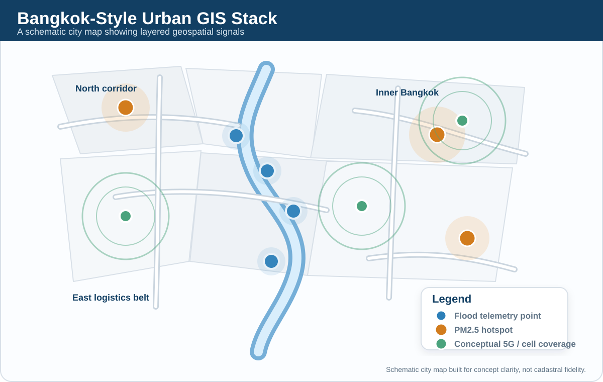
6. Employability Proof: Current Signals, Job Families, and Fallback Pathways
The previous sections showed where spatial data creates value. This section answers the harder question: does that value translate into credible jobs for a graduate in Thailand? The answer is yes, but the roles are spread across multiple labels and sectors rather than concentrated under one clean title.
Current Thai job signals already show the breadth
Current 2026 postings and organizational signals are enough to make the argument concrete. In March 2026, RIMES advertised a GIS Specialist role in Pathum Thani requiring work such as integrating and analyzing remote-sensing data and developing maps, dashboards, and visualization materials. In the same period, ERM listed a GIS Consulting Associate role in Bangkok, reflecting demand from the environmental and advisory side. SCG’s digital organization also surfaced an Associate Spatial AI Engineer role in Bangkok, indicating that industrial groups now see spatial AI as a real functional niche. At the same time, LINE MAN Wongnai’s careers page openly describes a data-and-analytics organization staffed by data engineers, platform engineers, data scientists, and BI analysts. Taken together, these signals matter because they come from different slices of the economy: regional resilience, environmental consulting, industrial digital transformation, and platform tech.
These examples do not prove that every graduate will receive offers automatically. What they prove is more important: geospatial capability can be monetized through several different employer logics. That is exactly what a safety net is supposed to do.
| 2026 signal | Employer type | What it proves |
|---|---|---|
| RIMES GIS Specialist, Pathum Thani | Regional disaster and resilience institution | Remote-sensing and GIS visualization work is directly employable in risk and early-warning contexts |
| ERM GIS Consulting Associate, Bangkok | Environmental and sustainability consulting | Geospatial capability is useful in ESG, impact, and compliance-heavy advisory work |
| SCG Associate Spatial AI Engineer, Bangkok | Industrial digital transformation | Large Thai industrial groups are beginning to recognize spatial AI as a discrete capability |
| LINE MAN Wongnai data and analytics organization | Thai platform and logistics-tech company | Spatially intensive digital businesses hire data engineers and analysts even when the title is not explicitly “GIS†|
The tool stack explains why these pathways connect
A KMITL student should think in stacks, not in labels. The stack that unlocks the broadest fallback market usually looks something like this:
- Spatial tools: QGIS, ArcGIS, web maps, coordinate systems, layer management
- Remote sensing: satellite imagery interpretation, raster workflows, change detection
- Data engineering basics: Python, SQL, data cleaning, API consumption, tabular-spatial joins
- Databases and analytics: PostgreSQL or PostGIS, dashboards, BI tools, notebooks
- Domain overlay: agriculture, environment, logistics, telecom, or public operations
The reason this stack is powerful is that it allows a graduate to move laterally. If a pure remote-sensing role is scarce in one year, the same person may still qualify for a data-analyst role with spatial responsibilities, a telecom planning role, a GIS consulting role, or a civic-tech mapping role.
Indicative entry pathways and salary logic
Precise salary data for Thai GIS roles is patchier than for mainstream IT roles, so ranges should be treated as reasoned estimates rather than false precision. Public Thai salary guides, such as Adecco Thailand’s 2025 guide, show junior data-analyst and data-engineer type roles commonly landing from the low-30,000s to around 50,000 to 70,000 THB per month depending on sector and capability. Geospatial-specialist roles in Thailand are often narrower and may begin below mainstream data-engineering pay, especially in public, NGO, or field-oriented contexts. But once geospatial capability is paired with data engineering, analytics, or domain specialization, compensation can move closer to broader tech and consulting ranges.
The important lesson is not the exact number. It is the direction of value. Pure map production alone is a weaker salary story. Spatial analysis plus coding, automation, and business usefulness is the stronger story.
| Fallback pathway | Employer type | What the graduate actually does | Tools commonly used | Indicative entry pay in Thailand (THB/month) |
|---|---|---|---|---|
| GIS / geospatial analyst | Consulting firms, agencies, utilities, NGOs, city projects | Build maps, clean coordinates, run overlays, produce dashboards and decision layers | QGIS, ArcGIS, Excel, SQL, dashboards | 25,000-40,000 estimated |
| Remote-sensing analyst | GISTDA-linked projects, environment firms, agri-tech, disaster and risk teams | Process imagery, detect change, interpret land cover, support monitoring reports | QGIS, ArcGIS, Python, raster tools, ENVI-class workflows | 30,000-45,000 estimated |
| Spatial data / BI analyst | Platform firms, logistics, industrial groups, smart-city teams | Combine business data with location layers, build KPIs, improve operations | SQL, Python, BI tools, GIS, notebooks | 30,000-55,000 estimated |
| Junior data engineer with spatial strengths | Platform companies, digital teams, telecom, consulting | Build pipelines, clean geospatial datasets, support APIs and production dashboards | Python, SQL, cloud tools, ETL, PostGIS | 35,000-60,000 estimated; broader data-engineering benchmarks can rise higher |
| Telecom / RF planning analyst | AIS, True, vendors, network contractors | Support site planning, coverage analysis, traffic heatmaps, optimization reporting | RF planning tools, GIS, Python, Excel, SQL | 30,000-50,000 estimated |
| Carbon MRV / ESG geospatial specialist | Climate-tech vendors, industrial groups, consulting, enterprise sustainability teams | Verify boundaries, monitor land change, support carbon and compliance reporting | Remote sensing, GIS, Python, reporting tools | 35,000-60,000 estimated depending on technical depth |
How the fallback ladder actually works
The most useful way to think about the degree is as a ladder of increasing generality. At the top is the student’s preferred niche, perhaps satellite remote sensing, mission support, or geospatial intelligence. If that niche is unavailable immediately, the student can step one rung down into a related space-data role such as GIS analyst or Earth-observation product support. If that is still tight, the next rung may be platform data, logistics analytics, telecom planning, or BI work with a location component. The degree becomes viable because the rungs are connected.
This is the strongest argument for KMITL’s hybrid design. A student who can only do hardware has few fallback rungs. A student who can move between sensing, mapping, analytics, telecom, and Python-based data work has many more. The student may not enter the labor market through the dream role on day one, but they can still enter the market without abandoning the discipline entirely.
Deep Analysis
Chapter 3 proves something essential for the final university decision: geospatial employability in Thailand is not speculative. It is already visible across agriculture, ESG, urban operations, telecom, logistics, consulting, and platform analytics. The market is fragmented, but fragmentation is not always bad. In this case, fragmentation means there are multiple access points. That is exactly what a niche engineering degree needs in order to remain economically rational.
The strongest conclusion for the degree is that the geospatial layer reduces downside risk dramatically. The strongest caution is that students must not mistake that safety net for permission to stay shallow. If a student graduates knowing only how to click around in map software, the safety net weakens. If the student graduates able to code, automate, handle remote-sensing data, and explain spatial decisions in a business context, the safety net becomes strong enough to justify the degree much more confidently.
7. Chapter Takeaway
GIS, remote sensing, and spatial data are the degree’s economic shock absorbers. In Thailand, they already connect to agriculture, carbon and compliance work, logistics, platform tech, telecom planning, PM2.5 monitoring, and city flood operations. That makes the degree materially safer than its space-themed branding alone would suggest, provided the student builds real technical depth.
Sources
These sources were used to establish current Thai market signals, not to outsource the chapter’s judgment. Salary ranges in the chapter are explicitly labeled as estimates because Thai GIS compensation data is thinner than mainstream IT salary reporting.
- Esri Thailand: ArcGIS Location Intelligence Platform used by more than 400 organizations in Thailand
- Chia Tai Group: Launch of “Chia Tai Experience†smart agriculture hub
- Mitr Phol Group Sustainability: company scale, digital innovation, and sustainability positioning
- Thaicom: Q2 2024 Management Discussion and Analysis including CarbonWatch
- Thaicom: 2025 news archive including OCSB sugarcane-burn monitoring update
- GISTDA “Dust Check†application
- Pattaya Mail: reporting on GISTDA Dust Check PM2.5 data and projections
- SPX Express Thailand
- Flash Express Thailand
- LINE MAN Wongnai: company background
- LINE MAN Wongnai: Data and Analytics careers page
- AIS: smart 5G network and infrastructure development
- True Blog: 5G readiness, AI-driven network automation, and nationwide coverage planning
- Bangkok Metropolitan Administration monitoring systems inventory
- Bangkok Metropolitan Administration drainage and weather monitoring portal
- RIMES GIS Specialist job posting (March 2026)
- ERM GIS Consulting Associate / Senior Associate, Bangkok
- SCG Career: Associate Spatial AI Engineer, SCG Digital Office
- Adecco Thailand Salary Guide 2025
Part 2
The Academic Reality & Insider Scoop
Chapters 4-5
Assesses KMITL's institutional positioning, likely culture, faculty environment, and how the program compares with Thai competitors.
Chapter 4: The Academic Ecosystem & Competitor Takedown
This chapter asks the university-decision question that marketing pages avoid: if a Thai student is choosing KMITL’s Bachelor of Engineering in Space and Geospatial Engineering, what are the serious alternatives, what do those alternatives signal to employers, and where does KMITL truly win or lose once the branding is stripped away?
Executive Summary
KMITL’s Space and Geospatial Engineering program is strategically interesting because it tries to do something few Thai programs do explicitly: combine satellite systems, positioning, remote sensing, and geospatial applications inside a Bachelor of Engineering. The strongest case for it is not prestige alone. It is positioning. The program sits under a telecommunications department, carries an engineering label, lists electives in radar, navigation, satellite communications, image processing, space law, and control, and is priced on KMITL’s curriculum site at 25,000 THB per semester. For a student who wants a hybrid of space systems and practical geospatial work, this is a real differentiator.
The strongest case against it is that it is new, niche, and still unproven in the market. The 2025 intake on KMITL’s curriculum page showed a small total seat count across TCAS rounds, which implies boutique scale but also limited alumni history. The official public material is more convincing on ambition than on long-run graduate outcomes. That matters, because Thai hiring culture is not neutral. Prestige bias, institutional familiarity, and program maturity still influence how easily a graduate is understood by employers.
The competitor picture is uneven. Chulalongkorn’s Survey Engineering is the strongest prestige-and-geomatics benchmark. KU and KMUTNB are stronger if the student really wants conventional aerospace identity. SUT and Burapha offer geospatial depth but less engineer signaling. AIT is an excellent geospatial benchmark, but mainly as a postgraduate destination rather than a direct bachelor substitute. The right verdict is not “KMITL beats everyone†or “KMITL loses to brand names.†The right verdict is sharper: KMITL is best for a student who wants an engineering-branded hybrid and is willing to accept new-program risk. It is a worse choice for students who want maximum Thai prestige, maximum classical aerospace depth, or maximum pure geomatics credibility.
1. KMITL’s Institutional Reality: Strong Engineering DNA, New Program Risk
KMITL should not be analyzed like an unknown provincial private college. It is a recognized Thai engineering institution with a real technical identity and a stronger engineering reputation than many generalist universities. That baseline matters. A KMITL engineering degree carries more signal than a generic degree in a new fashionable niche. But Chapter 4 is not about broad institutional admiration. It is about whether this specific program is the right strategic choice.
The telecommunications department is not a minor detail
KMITL’s official Space and Geospatial Engineering page makes one structural fact obvious: the program is housed inside the Department of Telecommunications Engineering. That is not cosmetic. It tells you what kind of “space†KMITL is likely to teach well. The public page emphasizes elective clusters in communications and signal processing, navigation and space communications, radar and positioning, control systems, image processing, cybersecurity, and aviation-related communication, navigation, and surveillance. In plain language, KMITL is not approaching space from the side of aircraft structures or propulsion. It is approaching space from the side of signals, sensing, positioning, and system integration.
This is strategically intelligent for Thailand. A telecom-rooted department has a natural line of sight to GNSS, satellite communications, radar, RF thinking, Earth observation data transmission, and operational networks. That means KMITL’s “space†identity is less cinematic and more infrastructure. In the Thai market, that can be an advantage, because the real local demand is stronger in data, geospatial applications, ground systems, and communications than in pure spacecraft manufacturing.
The curriculum signal is hybrid, not pure
KMITL’s curriculum site is unusually useful because it strips away some ambiguity. The official description explicitly lists areas such as spacecraft systems design, orbital mechanics, satellite communication, remote sensing, geospatial technology, positioning and location-based services, and the ecosystem of space regulation and standards. It also states a tuition fee of 25,000 THB per semester and, for the 2025 intake cycle, listed 20 seats in TCAS1, 15 seats in TCAS2, and 5 seats in TCAS3. That intake profile matters more than it seems.
A small cohort can be positive. It may mean more direct faculty access, closer studio or project supervision, and a stronger cohort identity. But it also signals fragility. A program with only a few dozen students per intake is still in the market-validation phase. It does not yet possess decades of alumni placement evidence. It may still be refining curriculum balance, industry linkages, and employer understanding. For a student, that means higher upside for differentiation but also higher risk of being the one who helps the program prove itself rather than the one who benefits from a long-established pipeline.
KMITL’s own 10 May 2024 announcement strengthens the pro-case by stating that the curriculum was jointly developed with GISTDA and positioning it as the first program of its kind in ASEAN. That collaboration signal matters because it ties the degree to Thailand’s central public geospatial-space institution rather than leaving it as a purely internal academic experiment. Still, collaboration language is not the same as guaranteed placement. It improves credibility, but it does not remove new-program risk.
The department’s history is older than the degree
This distinction is important. KMITL’s telecommunications department itself is not new. The host department clearly predates this degree by decades and already carries its own laboratories, faculty routines, and technical culture. That matters because the program is not emerging from an academic vacuum. It inherits a telecom engineering base rather than trying to invent one from scratch.
But inherited department credibility is not identical to program maturity. A strong host department can reduce risk, but it cannot instantly create what time creates: employer recognition of the specific degree title, a thick alumni network, graduate-placement anecdotes, and a settled external perception of what these graduates can actually do.
The most important hidden strength: KMITL is selling a labor-market story, not just a curriculum
The curriculum page explicitly markets pathways such as Satellite Engineer, Geographic Information System Engineer, and Space Engineer. This is useful because it reveals the program’s intended labor-market identity. It wants to position graduates as engineers, not merely spatial analysts or science majors. In Thailand, that identity matters. The word engineer can make it easier for employers in infrastructure, telecom, industrial systems, or public technical agencies to understand where the graduate fits.
This is also where the department’s telecom influence becomes decisive. A geospatial degree emerging from a humanities or science context may be stronger in mapping or social-environmental analysis. KMITL is trying to give the spatial layer an engineering shell. If it executes well, that is powerful. If it executes poorly, the result can be a graduate who is not competitive enough against either engineers or pure geospatial specialists. That is the central risk of the program.
The most important hidden weakness: new-title risk in Thai hiring culture
Thai hiring is not perfectly meritocratic in the abstract. It is interpretation-heavy. Employers often prefer degree titles they already understand. Mechanical Engineering is understood. Electrical Engineering is understood. Computer Engineering is understood. Even Survey Engineering has an established identity. Space and Geospatial Engineering is more novel. Novelty can help in forward-looking organizations, but it can also create friction. A recruiter or line manager may not know whether the graduate is stronger in RF, GIS, orbital mechanics, Python, remote sensing, or general systems work.
This matters most in the first job. Once the graduate has a portfolio, internship record, or demonstrated skill set, ambiguity shrinks. But for initial placement, ambiguity is expensive. That is why KMITL students in this program will likely need stronger portfolios than students in more easily recognized degrees.
| KMITL factor | Why it helps | Why it hurts | Net judgment |
|---|---|---|---|
| Host department: Telecommunications Engineering | Strong fit for GNSS, satcom, radar, signals, and systems | May underweight classical geomatics depth or pure aerospace mechanics depth | Real advantage if the student likes hybrid space-data-infrastructure work |
| Program positioning | Hybrid identity is differentiated in Thailand | Can be harder for employers to interpret than standard degrees | High upside, high explanation burden |
| Tuition signal | 25,000 THB/semester is still public-university territory, not premium international pricing | Lower cost does not eliminate opportunity-cost risk if outcomes are unclear | Reasonable value if the student actually exploits the program |
| Small intake size | Potentially better faculty access and closer cohort | Limited alumni proof and thinner network | Good for mentoring, risky for outcome certainty |
| KMITL engineering brand | Better technical signal than many non-engineering geospatial alternatives | Still below Chulalongkorn in broad Thai prestige signaling | Solid, but not dominant |
2. Engineering-Branded Rivals: KU, Chula, and KMUTNB
The first competitor group consists of programs that send a stronger immediate signal to Thai employers when the word engineering is the main sorting mechanism. These are not all direct content matches for KMITL. That is exactly the point. In Thai higher education, students are often hired not only for exact curricular match but also for institutional reputation, disciplinary clarity, and how easily employers can imagine them in a role.
Kasetsart University: stronger if the student wants aerospace identity, weaker if the student wants geospatial depth
Kasetsart’s public aerospace signal is very real. The Faculty of Engineering’s public materials show an active Aerospace Engineering department, including visible involvement in advanced-air-mobility conferences. The clearest publicly accessible flagship is the International Double Degree Program in Aerospace Engineering and Business Management with RMIT University. That page is revealing in two ways. First, it confirms that KU’s aerospace ecosystem is internationally oriented and explicitly tied to aerospace identity. Second, it shows the cost structure: 89,100 THB per semester at KU, plus very substantial RMIT tuition once the program transitions abroad.
That makes KU a very different proposition from KMITL. If the student’s core dream is aircraft, flight systems, or conventional aerospace identity with international exposure, KU may be the more coherent brand. It is cleaner. Employers can understand it immediately. But for the student who wants satellite systems plus geospatial analytics, KU is not obviously better. It is better only if the student values aerospace prestige and possibly international mobility more than geospatial breadth.
The hidden risk with KU, especially the publicly visible IDDP route, is cost. The difference between KMITL’s 25,000 THB per semester and KU’s 89,100 THB per semester at home, before overseas tuition, is not small. If the family is not financially strong, this alone changes the decision. The second risk is topical mismatch. KU aerospace is more likely to reward students who want aircraft and aerospace identity, not students who want GIS, remote sensing, and downstream spatial applications.
Chulalongkorn University: the hardest prestige benchmark for KMITL to beat
Chulalongkorn is the most serious benchmark for KMITL in terms of Thai prestige signaling combined with relevant technical overlap. Chula’s Department of Survey Engineering is not space-branded, but it is deeply relevant. The department publicly describes its undergraduate curriculum as covering surveying, mapping, GIS, remote sensing, photogrammetry, and global positioning systems. It also states that the Bachelor of Engineering in Survey Engineering was the first engineering program in Thailand accredited by TABEE in 2021. That is a very strong quality signal.
The faculty bench visible on Chula’s public site also matters. Faculty profiles show expertise in GIS, Open GIS, web-based GIS, mobile GIS, SAR, airborne laser scanning, remote sensing, and geomatics. This tells the student something important: Chula’s geospatial engineering side is mature, visible, and academically legible. Employers already know what Survey Engineering is. The curriculum may sound more traditional than KMITL’s shiny hybrid, but the market often rewards what it understands.
Here is the blunt judgment. If the student wants the strongest prestige signal in Bangkok and a safer geospatial engineering identity, Chula is probably harder to beat than KMITL. The case against Chula is not quality; it is fit. Chula does not package itself around space systems in the same explicit way. A student obsessed with satellites, orbital systems, or telecom-space integration may find KMITL’s framing more exciting and more future-oriented. But if the student cares most about broad employer recognition, alumni gravity, and a mature geomatics bench, Chula is the more conservative and probably more powerful choice.
KMUTNB: better if the student wants classical engineering toughness and clearer aerospace mechanics
KMUTNB is the most underrated competitor in this comparison because it can look less glamorous than Chula and less novel than KMITL. That would be a mistake. Its Mechanical and Aerospace Engineering Department is a structured engineering environment with clearly visible COE accreditation information, research centers, capstone project infrastructure, and public signals of space and aerospace expertise among faculty. It also sits in a lower visible tuition band than KMITL’s program, based on public department and university materials reviewed for this chapter.
This makes KMUTNB a formidable competitor for any student who actually wants engineering hardness more than branding novelty. If the student likes mechanics, thermodynamics, structures, CAD, manufacturing, aerospace systems, and a more traditional capstone-and-co-op culture, KMUTNB may be a more honest fit than KMITL. Publicly visible cost signals also suggest a lower-fee profile than premium international aerospace paths, which helps its value proposition.
The weakness is obvious: KMUTNB is not built around geospatial breadth. If the student wants Earth observation, GIS, and downstream spatial analytics as the employability buffer, KMUTNB is less aligned. Its strength is engineering clarity. KMITL’s strength is hybrid positioning. So the question is not which school is “better†in the abstract. The question is whether the student wants a sharper aerospace/mechanical identity or a broader space-data identity.
| Engineering rival | Main strength | Main weakness versus KMITL | Who should prefer it |
|---|---|---|---|
| Kasetsart University | Cleaner aerospace identity and visible international route through RMIT-linked IDDP | Much weaker geospatial logic and much higher visible cost in the flagship international path | Students who want aerospace branding and can absorb the financial burden |
| Chulalongkorn University | Strongest prestige and mature geospatial engineering bench; TABEE-accredited Survey Engineering | Less explicit space-systems branding; more traditional geomatics identity | Students who want elite Thai prestige plus a proven geospatial engineering route |
| KMUTNB | Clearer classical engineering culture, long aerospace history, co-op and accreditation visibility, lower visible tuition | Less geospatial breadth and less explicit satellite-data hybridization | Students who want tough conventional engineering and are less interested in GIS as a safety net |
3. Geospatial-Depth Rivals: SUT, Burapha, and AIT
The second competitor group is academically important because it exposes a core tension in KMITL’s degree. KMITL promises a hybrid engineering identity. But what if a student cares less about the word space and more about becoming genuinely strong in GIS, remote sensing, geomatics, or geospatial analysis? In that case, the real competitors are not always aerospace schools. They are the institutions with longer or more focused geospatial ecosystems.
Suranaree University of Technology: stronger scientific geospatial seriousness than many people realize
SUT is often under-discussed in Bangkok-centric decision-making, but that is a mistake. SUT’s geoinformatics ecosystem has existed long enough to have real identity, and the university’s engineering culture is generally respected in technical circles. Public materials show geoinformatics activity under the Institute of Science while the engineering side also contains strong geotechnology programs. This is useful because it highlights SUT’s fundamental character: technically serious, but not always packaged in the same urban prestige language as Chula or KMITL.
The case for SUT is strongest when the student wants geospatial substance more than branding performance. A student who wants to work on remote sensing, spatial data, environmental applications, or GIS-heavy research could plausibly build a stronger science-oriented geospatial base there than in a program that splits attention between satellites, telecom, and geospatial branding. The case against SUT is that the geoinformatics signal is less obviously engineer-coded in the Thai labor market than a B.Eng. title from a Bangkok engineering faculty. That matters for first-job interpretation.
In blunt terms: SUT may be better for the student who wants real geospatial depth and does not care much about social prestige. KMITL may be better for the student who wants the geospatial layer wrapped in an engineering-and-space identity that is easier to market to industry.
Burapha University: practical geospatial tooling, weaker brand outside the niche
Burapha’s geospatial ecosystem deserves more respect than it usually gets. The Department of Geo-Informatics publicly presents undergraduate curriculum, research dashboards, personnel, and equipment. Its official equipment page is especially revealing: the lab inventory includes ArcGIS, ENVI, eCognition, ERDAS, Trimble GNSS survey equipment, UAVs, and other relevant hardware and software. That is a practical tooling environment, not merely a theoretical geography curriculum.
This makes Burapha a legitimate option for students who know they want geospatial work more than classical engineering status. A student who values software exposure, remote-sensing workflows, and hands-on GIS environments may find Burapha more directly aligned than expected. The problem is market signaling. Outside the geospatial niche, a Burapha geo-informatics degree is less likely to trigger immediate engineering respect from large industrial employers than a Chula or KMITL engineering degree.
The strongest argument for Burapha is focus. The strongest argument against it is ceiling. It can be a very sensible choice for a student who is already committed to geospatial practice and perhaps values Chonburi-EEC proximity or specific lab work. But if the student wants the broadest cross-sector engineering interpretation, KMITL has the stronger brand shell.
AIT: excellent benchmark, but mostly the wrong timing for a high school student
AIT is a crucial comparator, but it must be handled correctly. It is not a like-for-like undergraduate rival. It is better understood as a benchmark for what serious geospatial specialization in Thailand and the region can look like at postgraduate level. AIT’s Geoinformatics Center publicly presents expertise in climate, land and water resources, environmental monitoring, hazard mapping, urban planning, and geospatial decision support. The old admissions cost page also makes the financial structure explicit: master’s study in the relevant schools is expensive by Thai public-university standards, with total fees far above ordinary domestic bachelor programs.
The practical lesson is that AIT often makes more sense as a next step than as a substitute for KMITL. A student can take a lower-cost Thai bachelor’s degree and later use AIT as a specialized postgraduate launchpad, especially if they decide the geospatial path is stronger than the hardware path. That makes AIT strategically relevant without making it a direct undergraduate competitor in the normal household decision set.
However, AIT does create one uncomfortable comparison for KMITL. If a student’s real goal is high-level geospatial science, climate mapping, land-use analytics, or regional development applications, then AIT’s ecosystem shows what mature specialization looks like. KMITL’s hybrid undergraduate model cannot fully replace that depth. It can only prepare the student to enter it later.
The hidden split: engineer shell versus geospatial substance
This is the most important conclusion from the geospatial-rival group. KMITL is probably not the purest geospatial program in this comparison set. Chula Survey Engineering and AIT have stronger mature geomatics or geoinformatics identities, while Burapha may show more explicitly geospatial lab tooling than many outsiders assume. KMITL’s advantage is not purity. It is packaging. It packages geospatiality inside an engineering title and alongside satellite and telecom content.
Whether that packaging is a strength or a weakness depends on the student’s target. If the student wants to be legible to telecom, infrastructure, systems, and engineering-adjacent employers, packaging matters a lot. If the student wants to become the deepest geospatial specialist possible, packaging matters less than depth.
| Geospatial rival | Main strength | Main weakness versus KMITL | Who should prefer it |
|---|---|---|---|
| SUT | Technically serious geoinformatics culture with stronger science orientation than outsiders assume | Weaker engineer-title signaling and less Bangkok prestige effect | Students who care more about geospatial substance than brand theater |
| Burapha University | Visible practical tool stack and explicit geospatial lab environment | Lower broad-market prestige and weaker engineering shell | Students who want hands-on GIS and remote sensing more than engineering identity |
| AIT | Excellent regional benchmark for advanced geoinformatics specialization | Mostly a postgraduate destination; expensive and not a normal undergraduate substitute | Students who want to treat the bachelor’s degree as step one and specialize later |
4. Engineer vs Scientist: Why Degree Labeling Changes Salary and Positioning
This issue is easy to underestimate in high school and expensive to underestimate later. In Thailand, the difference between emerging as an engineer-coded graduate and a scientist-coded graduate does not determine everything, but it influences the first few years of your career significantly. It affects which job families feel “natural†to recruiters, which management tracks open faster, and whether you are interpreted as an infrastructure builder, a researcher, an analyst, or a specialist.
Why the engineer label matters
Engineering degrees fit more easily into Thai industrial and state-enterprise hiring structures. Employers in telecom, utilities, industrial technology, manufacturing, infrastructure, and systems integration already have salary ladders, department names, and headcount logic built around engineering roles. Adecco Thailand’s 2025 salary guide, for example, still organizes many technical salary pathways through clearly named engineering positions such as estimation engineer, design engineer, electrical engineer, and related technical roles. The exact numbers vary by industry, but the structural point is more important than any one salary cell: engineering is a well-understood employment language.
This gives KMITL an advantage over science- or geography-branded geospatial programs. A KMITL graduate can more plausibly present themselves for GIS engineering, telecom planning, systems integration, satellite-support engineering, RF-adjacent work, or technical consulting than a graduate whose degree title reads more like a science or social-science pathway. This does not guarantee higher pay immediately, but it widens the set of roles where the graduate’s résumé looks sensible before the employer has to work hard to interpret it.
Why the scientist route can still be strong
Science-oriented geospatial programs have a different advantage. They may allow deeper immersion in remote sensing, environmental analysis, spatial statistics, land systems, or research methods. That can be excellent for students who want to move into environmental consulting, research institutions, climate analytics, or postgraduate specialization. In these environments, the graduate may be judged more by method, software fluency, and domain knowledge than by whether their degree says engineering.
The trade-off is that a science-coded graduate may need to work harder to cross into industrial engineering ecosystems. A manufacturing company, telecom operator, or technical infrastructure employer may more naturally sort applicants by engineering labels before evaluating finer geospatial nuance. This is not intellectually fair, but it is behaviorally real.
Indicative pay logic in Thai reality
Exact salary comparisons between “engineer†and “scientist†titles are difficult because Thai geospatial jobs are fragmented and not all are tracked cleanly in salary guides. So the cleanest approach is to use ranges and mechanisms. Entry-level or early-career engineering roles in mainstream Thai sectors often start in a recognizable structured band and can scale upward more quickly when tied to infrastructure, industrial operations, or telecom. In contrast, geospatial-science or GIS roles often start in analyst, specialist, or project-support bands unless they are paired with coding, data engineering, ESG MRV, or consulting leverage.
Reasoned estimate: a fresh graduate entering a plain GIS analyst or geospatial officer role in Thailand may often begin around the mid-20,000s to high-30,000s THB per month, while stronger engineering-coded roles or spatial roles attached to data engineering, telecom planning, or consulting can move into the low-30,000s to 50,000+ THB range more easily. These are ranges, not promises. The main variable is not the school name alone. It is whether the graduate is entering a role seen as infrastructure, engineering, or high-value analytics rather than low-complexity mapping support.
Where KMITL gains ground
This is exactly where KMITL’s hybrid B.Eng. title helps. It can let the graduate compete in geospatial jobs without being trapped in a non-engineering interpretation. A KMITL graduate can say, with some legitimacy, “I am not only a map user. I am an engineering graduate who understands satellite systems, positioning, communications, remote sensing, and geospatial applications.†If the portfolio supports the claim, this can be a powerful early-career positioning advantage.
Where KMITL can still lose
The danger is superficiality. If the graduate’s skills are not visibly engineering-grade, then the engineering label becomes weaker. Employers will not pay engineering-adjacent salaries forever just because the diploma says B.Eng. If the student cannot code, cannot automate, cannot interpret imagery properly, cannot work with data pipelines, and cannot explain technical decisions, then the degree label alone will not save them. In that case, a Chula, SUT, or AIT-style deeper specialist may outperform them despite having a less hybrid title.
| Dimension | Engineer-coded path | Scientist-coded path | KMITL implication |
|---|---|---|---|
| Recruiter interpretation | Easier fit for industry, infrastructure, systems, telecom | Often sorted toward research, analysis, environment, specialist work | KMITL benefits if the student wants broad technical legibility |
| Salary ladder clarity | Usually clearer in Thai industrial structures | Often more fragmented by project type or niche | B.Eng. title can help early-career bargaining power |
| Depth in pure geospatial methods | Can be shallower if the program is too broad | Can be stronger if the program is focused | KMITL must compensate with self-driven specialization |
| Mobility into telecom or systems roles | Generally stronger | Generally weaker unless paired with strong technical portfolio | This is one of KMITL’s best structural advantages |
5. The Comparison Table: What Each School Actually Buys You
The table below is intentionally blunt. It is not a ranking of which university is “best†overall. It is a matrix of what the student is actually buying in exchange for four years of life, tuition, and opportunity cost.
| School / program | Program identity | Public cost signal | Brand signal in Thai hiring | Space depth | Geospatial depth | Main advantage | Main risk |
|---|---|---|---|---|---|---|---|
| KMITL Space & Geospatial Engineering | Hybrid B.Eng. under Telecommunications Engineering | 25,000 THB/semester on curriculum page | Strong technical signal, but weaker than Chula on prestige and still new as a title | Good for satcom, GNSS, remote sensing, orbital exposure | Moderate; stronger than aerospace schools, weaker than pure geomatics benchmarks | Best explicit hybrid of space systems plus geospatial engineering in the Thai bachelor market | New-program ambiguity and thin alumni proof |
| Chulalongkorn Survey Engineering | Mature B.Eng. geomatics / surveying / GIS route | Official cost not prominently shown on the public department pages reviewed | Strongest prestige signal in this comparison | Lower explicit space branding | High; proven GIS, GPS, remote sensing, photogrammetry bench | Elite employer recognition plus mature geospatial engineering identity | Less aligned if the student specifically wants a satellite-space narrative |
| KU aerospace ecosystem / IDDP flagship | Aerospace-first, internationally branded route | 89,100 THB/semester at KU in IDDP, plus major RMIT tuition later | Strong and clean for aerospace identity | High in aerospace framing | Low | Clearer aerospace story and international pathway | Costly and not a geospatial safety-net degree |
| KMUTNB Aerospace | Conventional aerospace engineering with co-op and accreditation visibility | Public materials reviewed suggest a lower visible fee band than KMITL, but the exact aerospace figure was not clearly displayed on the main department pages reviewed | Solid engineering credibility, especially for hands-on technical culture | High for classical engineering path | Low | Cheap, tough, clear engineering identity | Weak fallback into GIS and spatial analytics |
| SUT geoinformatics ecosystem | Science-oriented geospatial seriousness | Public cost not clearly shown on the program pages reviewed | Respected technically, but lighter Bangkok prestige effect | Low to moderate | High in focused geospatial work | Good for students who want substance over branding | Weaker engineer-shell signaling in industry hiring |
| Burapha Geo-Informatics | Focused applied geospatial route with visible lab tooling | Public cost not clearly shown on the program pages reviewed | Niche-respectable, lower broad-market prestige | Low | Moderate to high in practice-oriented geospatial workflows | Hands-on GIS and remote-sensing environment | More limited general engineering recognition |
| AIT Geoinformatics Center benchmark | Postgraduate and research-oriented specialization environment | Master's total fees publicly shown far above public bachelor cost bands | Strong specialist and international signal | Not an undergraduate space path | High | Excellent step-two specialization target | Usually the wrong timing and price point for first-degree comparison |
| Student priority | Best-fit school | Why |
|---|---|---|
| I want the strongest Thai prestige signal with relevant geospatial engineering | Chulalongkorn | Employer recognition and program maturity are hardest to beat |
| I want the cleanest aerospace identity | KU or KMUTNB | They are easier to read as classical aerospace paths than KMITL’s hybrid degree |
| I want the strongest explicit space-plus-geospatial hybrid at bachelor level | KMITL | This is the core niche KMITL is trying to own |
| I care more about geospatial method depth than engineering title | Chula, SUT, or Burapha depending prestige and location priorities | These routes can be cleaner for pure geospatial orientation |
| I want a cost-conscious conventional engineering option | KMUTNB | It offers strong value if the student really wants conventional engineering toughness |
| I want a postgraduate geospatial specialization target after bachelor’s | AIT | Best treated as step two, not step one |
6. Deep Analysis: Who Should Choose KMITL and Who Should Avoid It
At this point, the chapter can stop being diplomatic. KMITL is not the universal best choice. It is a very specific choice for a very specific student type.
Who should choose KMITL
KMITL is a strong choice for a student who genuinely wants a hybrid between satellite systems, communications, positioning, remote sensing, and geospatial applications, and who does not want to lock themselves into a pure aerospace-only or pure GIS-only identity. It is especially suitable for a student who is comfortable with engineering mathematics and signals, but also likes data, mapping, and practical applications such as disaster monitoring, telecom planning, or spatial analytics.
It is also a strong choice for a student who thinks strategically about the Thai labor market. Such a student understands that the safer demand base is geospatial and telecom-adjacent, not pure rocket glamour. For this kind of student, KMITL’s telecom host department is a feature, not a bug. The student is not buying a fantasy. They are buying a hybrid platform.
Who should avoid KMITL
A student should probably avoid KMITL if their real desire is one of the following:
- Maximum Thai prestige and employer familiarity above all else. Chula is harder to beat on that criterion.
- Maximum classical aerospace depth. KU or KMUTNB are cleaner choices.
- Maximum pure geospatial or geomatics specialization without the space-branding overhead. Chula, SUT, Burapha, and later AIT may fit better.
- A low-ambiguity degree title that recruiters already understand instantly. KMITL’s title still needs explanation.
- A passive student experience. This program likely punishes passive students more than mature mainstream programs do.
The decisive trade-off: differentiation versus certainty
The whole KMITL decision can be summarized as one trade-off. KMITL offers differentiation. Chula offers more certainty. KMUTNB offers more classical engineering clarity. KU offers more aerospace identity. SUT and Burapha can offer more pure geospatial focus. KMITL’s value lies in not being any one of those. That is both its promise and its risk.
Differentiation is valuable only if the student can carry it. A disciplined student can use KMITL to build a résumé that looks uncommon and forward-looking: satcom, GNSS, remote sensing, spatial data, and engineering projects in one package. A weak student can leave the same program looking vague: not enough aerospace for aerospace employers, not enough GIS depth for geospatial specialists, and not enough software depth for data roles. The degree amplifies the student. It does not rescue the student.
The role of prestige bias in the final verdict
This report would be dishonest if it ignored prestige bias. Thai employers do notice school names. Chulalongkorn still benefits from this most strongly. KMITL benefits from being a respected technical institution, but not to the same extent. In competitive shortlisting, especially outside very specialized niches, prestige can act as a tiebreaker. This does not make KMITL a bad decision. It just means the KMITL student must often compensate with stronger project evidence and clearer self-presentation.
The best KMITL student will likely outperform weaker students from higher-prestige schools in the actual space-geospatial niche. But average-versus-average, prestige still matters. That is the uncomfortable truth.
Reasoned judgment
If the student already knows that they want a hybrid engineering path at the intersection of satellites, geospatial data, positioning, and communications, KMITL is one of the most interesting bachelor-level choices in Thailand. If the student is undecided and mainly wants the safest institutional bet, Chula is safer. If the student wants old-school engineering with clearer mechanics and co-op logic, KMUTNB is safer. If the student wants pure aerospace branding and perhaps international ambition, KU may be more coherent. Therefore the verdict is conditional:
KMITL is a yes for a targeted, technically serious, self-driven student who wants the hybrid niche.
KMITL is a no for the student who wants prestige certainty, classical aerospace identity, or a passive ride into the labor market.
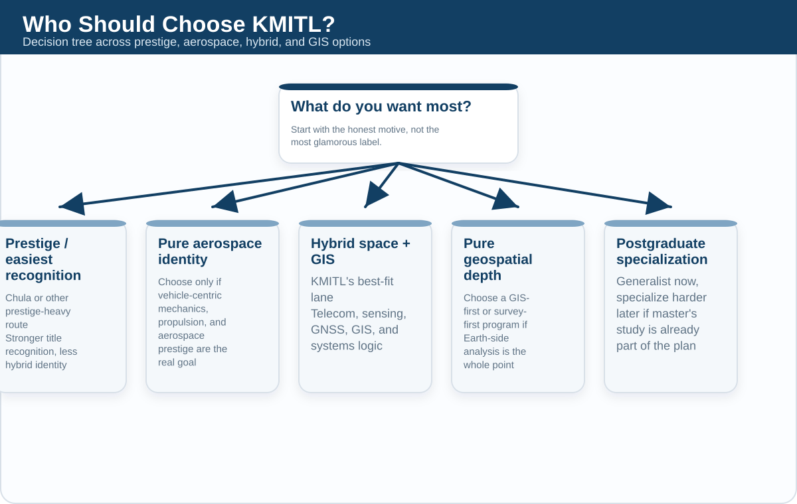
7. Chapter Takeaway
KMITL is not the default winner in this field. Chula is stronger on prestige and mature geomatics credibility. KU and KMUTNB are cleaner for classical aerospace. SUT, Burapha, and later AIT can be stronger for pure geospatial depth. KMITL wins only when the student specifically wants the hybrid of space systems, telecom logic, and geospatial engineering, and is willing to work hard enough to make that hybrid legible to employers.
Sources
These sources were used to ground the competitor comparison in official program positioning wherever possible. Some judgments in this chapter, especially on prestige bias and employer interpretation, are explicitly reasoned inferences from Thai hiring behavior rather than direct quotations from the institutions themselves.
- KMITL Department of Telecommunications Engineering: Space and Geospatial Engineering program page
- KMITL Curriculum: Space and Geospatial Engineering major page
- KMITL Telecom Department: May 10, 2024 announcement on the new curriculum co-developed with GISTDA
- KMITL Department of Telecommunications Engineering: Bachelor of Engineering overview
- Kasetsart University IDDP: Aerospace Engineering and Business Management overview
- Kasetsart University IDDP: Tuition fees and scholarships
- Kasetsart University Faculty of Engineering: Advanced Air Mobility / Aerospace activity
- Chulalongkorn University Faculty of Engineering: Department of Survey Engineering
- Chulalongkorn University: Survey Engineering faculty profile with GIS and web-GIS research interests
- Chulalongkorn University: Survey Engineering faculty profile with remote-sensing expertise
- KMUTNB Mechanical and Aerospace Engineering Department
- KMUTNB Faculty of Engineering: Accreditation page
- KMUTNB faculty profile: Thada Suksila, Ph.D. (spacecraft and propulsion expertise)
- SUT Geoinformatics program site
- SUT Geoinformatics: official contact and institutional placement
- Burapha University Geo-Informatics: research dashboard and program navigation
- Burapha University Geo-Informatics: departmental e-book and official materials hub
- Asian Institute of Technology: Geoinformatics Center
- Asian Institute of Technology: estimated costs and expenses
- Adecco Thailand Salary Guide 2025: engineering salary reference point
Chapter 5: Faculty Culture & The "Word on the Street"
This chapter separates verifiable institutional evidence from pattern-based inference. The goal is not to invent gossip about KMITL. The goal is to answer the real student question: if you join the Bachelor of Engineering in Space and Geospatial Engineering, what kind of academic culture, pressure, support, bureaucracy, and hidden friction are you likely to experience in practice?
Executive Summary
KMITL’s Space and Geospatial Engineering degree will likely feel like a Thai engineering program first and a "space dream" second. That is not an insult. It is one of the most important reality checks a prospective student needs. The public evidence shows that the degree is hosted by the Department of Telecommunications Engineering, shares the department’s laboratories and faculty ecosystem, and sits inside an institution that already runs on engineering discipline, formal procedures, and project-oriented technical training. The visible labs are real. The partners are real. The institutional environment is also real, and that means deadlines, self-study, uneven course experiences, and administrative consequences when students fall behind.
The strongest argument in favor of the program’s culture is that it does not look fake. KMITL publicly shows serious lab infrastructure such as the Earth-Space Communication and Technology Lab, the Excellence Center on GNSS and Space Weather, Huawei- and ZTE-supported network labs, and an Esri-supported digital photogrammetry lab. The program committee is anchored inside a telecom department with actual technical people, not generic marketing copywriters. GISTDA appears visibly in curriculum and lecture activities. NICT appears in a long-running research relationship. This means the student is entering a real technical ecosystem.
The strongest argument against the culture is that real technical ecosystems are not automatically smooth. The degree is new. The committee is broad relative to the scope of the promised hybrid. Public pages show strong administrative machinery for leave, reinstatement, and status maintenance, which is a warning sign that slippage is a normal enough part of engineering life to require constant formal handling. The most honest judgment is this: a proactive student can do very well here, but a passive student can get buried. The biggest threats are not glamorous failure modes. They are workload accumulation, uneven teaching quality, late help-seeking, and bureaucracy arriving exactly when the student is already tired.
1. Thai Engineering Pressure Culture: What the Program Will Probably Feel Like
The first thing to understand is that KMITL’s Space and Geospatial Engineering program should not be imagined as a soft interdisciplinary degree where students mainly discuss the future of satellites and climate data in broad conceptual terms. The official departmental structure points in the opposite direction. The program is housed under the Department of Telecommunications Engineering. The department’s public "About" page frames itself through communications engineering, wireless systems, network technologies, and aeronautical communications. The public Space and Geospatial Engineering page lists elective clusters in digital systems, signal processing, radar and positioning, aviation CNS, cybersecurity, space law, and space-weather applications. In other words, the culture is rooted in engineering systems work.
That host department matters because departments carry habits. They shape how labs are run, how assignments feel, what counts as serious work, and how much ambiguity students are expected to absorb on their own. A telecom-based department usually values precision, technical correctness, and the ability to work through mathematically or systemically dense material without constant emotional hand-holding. That does not mean the environment is hostile. It means the burden of keeping up is likely to fall heavily on the student.
The lab map tells you what kind of pressure to expect
KMITL’s public lab pages are more revealing than many prospectuses. The department openly lists advanced facilities such as the Earth-Space Communication and Technology Lab, the Antenna and Electromagnetic Application Research Lab, the Excellence Center on GNSS and Space Weather, the Space Research Lab, and multiple communications-oriented research spaces. Its "Labs with Industry" page names a Huawei-supported Computer Network Lab, a ZTE-supported Mobile Network Lab, and a Digital Photogrammetry lab supported by Esri. These are not decorative buzzwords. They imply a training culture where instruments, software environments, demonstrations, and project deliverables matter.
Students often misunderstand what this means operationally. Lab-heavy departments rarely create pressure only through final exams. They create pressure through cumulative obligations: pre-lab preparation, attendance, reports, debugging, group coordination, presentations, hardware setup, software installation problems, and the time needed to repeat work when the first attempt fails. A student who looks only at lecture hours will underestimate the total load badly.
This is especially important for a hybrid degree. In a conventional single-domain program, students eventually become fluent in the rhythm. In a hybrid program, the rhythm changes from course to course. One week the student may be solving a signals problem set. Another week may involve spatial software. Another may involve a seminar, project demonstration, or field-style interpretation task. The transitions themselves create fatigue.
Thai engineering pressure is usually accumulation-based, not drama-based
Many students fear the wrong thing. They imagine a single terrifying professor or one legendary exam that destroys the whole cohort. That can happen anywhere, but the more common Thai engineering pressure pattern is quieter. It is accumulation. A missed report, an unclear concept in calculus or electromagnetics, a weak lab partner, a late fee payment, an unfinished coding task, and an ignored message from an academic office do not look catastrophic individually. Together, they become catastrophic.
This is where the phrase "word on the street" needs to be translated into something useful. In Thai engineering contexts, what seniors often mean by a program being "หนัà¸" or "เหนื่à¸à¸¢" is not necessarily that instructors are abusive or impossible. It usually means the program constantly demands forward motion. Even students who are not failing can feel squeezed because the margin for disorganization is low.
KMITL’s public information environment fits this pattern. The faculty pages, labs pages, and event pages project a department that expects students to operate inside a technical machine. There is nothing in the public evidence suggesting a relaxed liberal-arts rhythm. The default expectation appears to be that students will absorb structure, learn tools, attend activities, and manage themselves.
Hierarchy is likely real, even when support exists
No public page will say, "our culture is hierarchical," but Thai engineering programs often function with clear professor-student distance, especially in technical departments with established seniority structures. KMITL’s department is not a start-up training camp. It is a formal engineering unit with professors, research centers, program committees, academic procedures, and institutional language that is more structured than casual. That usually produces a culture where students who wait passively for help often get less than they need, while students who ask specific, timely, technically informed questions tend to receive much better support.
This is a reasoned inference rather than a quoted rule, but it is a strong one. The combination of a traditional engineering department, technically diverse faculty, and visible administrative machinery strongly suggests that student agency will matter more than personality fit. A shy but disciplined student can survive. A charismatic but disorganized student is at real risk.
The practical translation is simple: this program will probably reward students who behave like junior engineers early. That means tracking deadlines, documenting work, escalating problems before they become crises, and treating labs and projects as serious deliverables rather than optional enrichment.
2. Grading Curves, Failure Risk, and Repeat-Year Reality
There is a temptation, when discussing engineering culture, to make dramatic claims about brutal grading curves. That would be careless here. No public KMITL Space and Geospatial Engineering page reviewed for this chapter disclosed a department-specific grading-curve policy, and this report should not invent one. A student should therefore avoid believing unsourced horror stories about guaranteed mass failure unless real departmental evidence emerges.
But rejecting gossip is not the same as declaring the risk low. The failure risk is still real, and the evidence comes from a different direction: the administrative architecture around students who fall behind.
The academic office pages show that slippage is institutionally expected
The Faculty of Engineering’s undergraduate academic office publishes explicit procedures for status maintenance, leave of absence, resignation, and reinstatement. Those pages are extremely revealing because universities only formalize repeated processes when those processes actually happen. The official page on maintaining student status states that students who have completed required credits but still have special projects, similar coursework, or other remaining requirements can formally maintain status and pay a 3,000 THB fee within three weeks of semester opening. That is already a signal that incomplete trajectories are normal enough to require standard processing.
The leave-of-absence rules are even more important. The official page states that students who do not pay tuition within the required time must file for leave in that semester or risk losing student status. It also states that if a student does not return and does not keep filing leave requests, more than three years of overall absence results in loss of status. The reinstatement page then explains that students who lost status because of resignation, non-registration, failure to take leave, failure to maintain status, or failure to pay fees may apply to return, and it gives a formal processing time of up to 45 days after submission.
This administrative system should be read as a warning, not because KMITL is unusually cruel, but because engineering paths often generate enough academic friction that bureaucracy becomes part of student life. The "repeat-year reality" in Thailand is often less cinematic than people imagine. It does not always mean repeating an entire cohort from the beginning. More often it means accumulated backlog, delayed graduation, extra fees, delayed internships, and emotional fatigue as friends move ahead.
Hybrid degrees can punish one-sided motivation
A student who loves only the space brand but dislikes math, coding, system thinking, or technical discipline is vulnerable here. So is the student who loves only GIS dashboards but dislikes engineering abstraction. A hybrid degree creates more ways to become academically lopsided. One cluster of courses can feel intuitive while another cluster quietly turns into debt.
This is why the absence of public curve data does not make the program "safe." Safety depends less on official grading rhetoric and more on how quickly students detect weakness. If a student recognizes early that circuits, signals, programming, or spatial analysis are not sticking, they can still recover. If they realize this only after multiple semesters, the recovery path gets more administrative and more expensive.
| Risk area | Official system visible in KMITL pages | Practical meaning for the student |
|---|---|---|
| Backlog risk | Status-maintenance rules for students who have completed credits but still owe projects or similar requirements | Falling behind is administratively manageable, but it still costs time, fees, and momentum |
| Loss of status | Students who fail to pay tuition and also fail to file leave can lose status | Administrative negligence can become academically existential |
| Long absence | More than three years of overall absence without proper status handling results in loss of student status | Problems do not disappear by waiting; they harden into formal exclusion risk |
| Reinstatement | Official reinstatement pathway exists, with a posted processing time of up to 45 days | Recovery is possible, but it is slow and bureaucratic, not instant |
| Timeline slippage | Formal leave, status, and re-entry mechanisms are all published and structured | "Repeat-year" often means delayed graduation and fragmented course sequencing rather than one dramatic reset |
The honest reading of failure risk
The correct interpretation is not "KMITL is uniquely dangerous." The correct interpretation is that this is a real engineering environment where failure and recovery have enough frequency that the institution has an extensive administrative grammar for them. That alone should change how a prospective student evaluates fit. Students who assume they can improvise their way through will be exposed quickly. Students who treat the degree as a managed long-term campaign will have a much better chance.
3. Workload and Burnout: The Hidden Daily Cost of a Hybrid Program
Burnout in this program is unlikely to come from one single source. It will more likely come from collision. The student is attracted by space. The timetable then fills with mathematics, engineering basics, software tools, reports, group work, and organizational friction. On paper, all of this is normal. In lived experience, it can feel like the inspiring identity of the degree gets buried under maintenance work. That emotional mismatch is one of the most common ways students lose motivation in hybrid technical programs.
The hybrid structure creates switching costs
A conventional degree already asks students to juggle multiple classes. A hybrid degree does something harder: it asks them to think across multiple professional logics. Space and geospatial engineering at KMITL is not just "more subjects." It is an attempt to combine systems thinking, telecommunications logic, sensing, positioning, and geospatial interpretation. Even if the curriculum is well designed, that still means repeated context switching.
Context switching is a real burden because different tasks drain different mental muscles. A student who spends hours on equations, signal models, or coding bugs does not instantly pivot into a careful geospatial workflow with fresh concentration. Likewise, a student doing mapping, image interpretation, or spatial software work may then need to return to formal engineering reasoning without much recovery time. Burnout is often the tax paid for this constant reconfiguration.
The most dangerous misconception is that interest eliminates fatigue. It does not. A student can be genuinely fascinated by satellites and still become exhausted by the work required to make that interest legible in an engineering degree.
Project culture adds invisible load on top of normal coursework
KMITL’s departmental event stream suggests a culture that values projects, competitions, external lectures, and industry-facing activities. Public posts around the program and department include the new curriculum launch with GISTDA involvement, visits from external experts, study visits, internship announcements, and other events that signal a department trying to build momentum. That is positive for opportunity, but it also means students may experience a "double curriculum": the official courses plus the unofficial expectation that ambitious students should also attend, present, compete, or network.
Students often underestimate how much time the unofficial layer consumes. A CANSAT-related activity, a seminar on systems engineering, an external lecture, or an internship application is not neutral. Each requires preparation, travel time, coordination, follow-up, or portfolio work. The ambitious student gets more leverage from the department, but they also carry more load.
This creates a harsh but important trade-off. The students who extract the most value from a new niche program are often the same students who are most vulnerable to burnout, because they are trying to convert every opportunity into future employability. If they do not manage energy carefully, the portfolio strategy that should help them can become the mechanism that breaks them.
Bureaucracy amplifies exhaustion when the student is already tired
This is one of the least glamorous but most important insights in the entire chapter. Administrative tasks are not equally painful at all times. They are most painful when the student is already overloaded. In KMITL’s case, the public rules on leave, reinstatement, student status, and fee-based status maintenance mean that academic trouble can quickly become paperwork trouble. Once that happens, the student is no longer dealing only with learning problems. They are dealing with process problems.
That matters psychologically. It is one thing to be tired from a difficult course. It is another to be tired while also tracking deadlines for forms, documents, office windows, and approval sequences. Engineering students often tell themselves they will "fix it later." The official KMITL pages suggest that later can become expensive very quickly.
Support infrastructure exists, but it is infrastructural, not magical
KMITL is a large institution, not an academic wilderness. The university and faculty do publish student-facing information and support resources. Quiet study or support-oriented spaces also exist in the wider KMITL ecosystem. This matters, because it means the student is not abandoned in principle. But students should not romanticize this. Infrastructure helps only when students use it early. It does not erase a backlog, solve weak fundamentals, or reverse burnout after months of denial.
The practical question is therefore not "does support exist?" but "how early will the student convert support into action?" In demanding programs, the winning students usually escalate before they feel fully comfortable doing so. They ask seniors for past patterns. They ask faculty or teaching assistants precise questions. They talk to advisors before the registration situation becomes ugly. They do not wait for rescue.
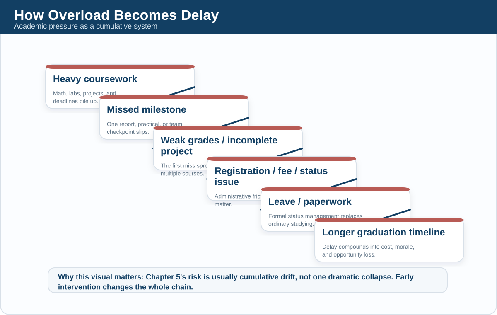
4. Partner Leverage: What These Names Can Actually Do for a Student
One of the most important jobs of this chapter is to stop students from using partner logos as emotional decoration. A partner matters only if it changes what a student can learn, build, or access. KMITL’s public ecosystem is strong enough that these names should be taken seriously. But they should be interpreted mechanistically, not romantically.
GISTDA is the strongest visible public signal
The clearest partnership evidence in the reviewed material comes from GISTDA. KMITL’s May 10, 2024 departmental announcement explicitly states that the new Space and Geospatial Engineering curriculum was developed together with GISTDA. That is not a minor detail. GISTDA is Thailand’s core state geospatial-space agency, and curriculum co-development gives the program more legitimacy than a normal university press release.
The link does not stop there. The department also posted a December 17, 2024 event involving the director of GISTDA’s Space Technology Research Center speaking in the course "Space and Geospatial Technology for Daily Life." Another departmental post from April 5, 2024 highlighted a GISTDA Award received by a student from the department. These are meaningful because they show repeated institutional contact rather than one ceremonial memorandum.
For a student, the real value of GISTDA is not that it guarantees employment. It does not. The value is that it can tighten the translation from coursework to national-use cases: Earth observation, disaster monitoring, geospatial platforms, satellite-data applications, and public-sector technical networks. It also helps the degree sound less speculative when the student explains it to parents or recruiters.
Esri is highly practical because it touches tools, not only branding
The Esri signal is useful for a different reason. The department’s "Labs with Industry" page explicitly names a Digital Photogrammetry lab supported by Esri. The department also posted on May 29, 2024 about collaboration with Esri Thailand in relation to curriculum development. This matters because Esri is not just a prestige logo. It represents a dominant commercial GIS ecosystem.
That has immediate employability value. Students who touch Esri-supported workflows are closer to the language used in Thai government agencies, utilities, consulting firms, and enterprise mapping environments. Even if a student later chooses QGIS, Python, or cloud-geospatial tools, having exposure to the Esri world gives them market literacy. This is one of the strongest "money skill" bridges in the whole program.
The caution is that software-adjacent partnerships are only as good as student output. A lab name does not create a portfolio by itself. The student still needs to produce maps, analysis, photogrammetry outputs, or workflow evidence that an employer can inspect.
NICT is valuable, but likely selective in its direct payoff
KMITL’s public material shows a real NICT connection. A 2019 departmental post documented the first Thai space-weather radar station at KMITL with NICT involvement. A May 6, 2025 post described a study visit to NICT and ENRI in Tokyo involving a KMITL telecom faculty member, researchers, and students from an international communications-and-data program. This is credible and meaningful, especially for students interested in propagation, ionospheric effects, navigation, or radio-related space-environment work.
But students should read the leverage correctly. NICT-type relationships usually benefit high-performing students more than the median student. They are excellent for signaling that the department has real research-level connections. They are not evidence that every student will automatically obtain a Japan-facing pathway. The right use of NICT in decision-making is to see it as proof of ecosystem seriousness, not proof of a mass-placement pipeline.
NARIT and mu Space require stricter honesty
NARIT matters in Thailand’s astronomy and broader space ecosystem, and any ambitious student should understand what it does. However, in the public sources reviewed for this chapter, NARIT did not appear as a clearly documented formal integration partner of the Space and Geospatial Engineering program in the way GISTDA and Esri did. That means the report should not overclaim. NARIT should be treated as an ecosystem opportunity and a possible networking target, not as a verified pipeline built into the degree.
The same caution applies to mu Space. The company is relevant to Thailand’s private space ambition, and outside reporting has covered its satellite factory and ground-station collaboration. But the reviewed public KMITL sources did not show mu Space as a core curricular partner on the same evidentiary level as GISTDA or Esri. Therefore mu Space is best treated as aspiration value for students tracking the private sector, not as a guaranteed pathway embedded in the program.
| Partner or ecosystem name | What the public evidence proves | Likely student benefit | Hidden caveat |
|---|---|---|---|
| GISTDA | Visible curriculum co-development and repeated event presence | Legitimacy, public-sector use-case relevance, and better alignment with Thai geospatial-space work | Still not a guaranteed hiring channel |
| Esri Thailand | Named support for digital photogrammetry lab and curriculum collaboration visibility | Direct exposure to enterprise GIS tooling and market language | Value collapses if the student never turns tool exposure into portfolio evidence |
| NICT | Longer-term research connection and Japan-linked technical activities | Strong signal for students targeting research seriousness or advanced technical niches | Probably most useful to high performers rather than the whole cohort |
| NARIT | Ecosystem relevance, but no equally clear direct program integration found in reviewed sources | Networking and awareness of Thailand’s broader space-science landscape | Should not be counted as a built-in degree advantage without new evidence |
| mu Space | Private-sector sector relevance outside the core KMITL source base | Aspiration value and sector awareness for students watching Thailand’s commercial space story | Not a documented core program pipeline in the reviewed official sources |
5. Hidden Realities: Uneven Teaching Quality, Bureaucracy, and Student Survival Strategies
This section is where many reports become either dishonest or melodramatic. The right approach is neither. New interdisciplinary programs often generate mixed student experiences even when the institution is serious. That is not because anyone is malicious. It is because consistency is hard when a degree promises breadth across domains that normally live in separate departments or professional tracks.
Uneven teaching quality is a reasonable risk in a new hybrid degree
KMITL’s public program-committee and faculty pages show a technically credible but broad group. The visible ecosystem includes faculty with backgrounds related to satellite communications and propagation, GNSS and space-weather work, communications and data systems, antennas and electromagnetics, and other telecom-linked specialties. That breadth is useful because it means the degree is not being carried by one person. But breadth also creates an inevitable risk: not every course in a new hybrid program will feel equally polished, equally integrated, or equally intuitive from the student’s perspective.
This is not a criticism unique to KMITL. It is a structural property of new multidisciplinary degrees. Some subjects will align naturally with the department’s long-developed strengths. Others will still be in the process of finding the right teaching rhythm, project format, or industry framing. Students should therefore expect variation. One instructor may be excellent on technical depth but less skilled at explaining beginner transitions. Another may be conceptually strong but less operationally sharp. Another may be great when students approach proactively but not especially nurturing by default.
The danger is not that one bad class ruins everything. The danger is that students read unevenness as a sign to disengage. In a new program, the winning move is usually the opposite: treat uneven delivery as a signal to self-organize harder and extract value anyway.
Bureaucracy is part of the operating environment, not a side issue
The public academic-office pages show that KMITL’s engineering administration is detailed, rule-based, and process-heavy. That is not unusual in Thai universities, but it matters more in demanding technical degrees because academic trouble and administrative trouble often arrive together. A student who is already behind on coursework is also the student most likely to miss a form, a payment, or a registration window.
What makes bureaucracy dangerous is not merely inconvenience. It fragments attention. Once a student is tracking office requirements, proof documents, payment deadlines, and reinstatement procedures, fewer cognitive resources remain for actual learning. The student begins operating in repair mode. That is why high-performing seniors often sound obsessed with small administrative details. They are not being fussy. They know that paperwork errors can convert a recoverable academic wobble into a semester-scale setback.
The smart survival strategies are boring, but they work
The "word on the street" version of student survival usually sounds informal: find good seniors, do not miss deadlines, choose teammates carefully, and never let problems pile up. Underneath the informality, those are highly rational strategies. In a program like this, smart students do several things early:
- They build a peer group in the first year, because hybrid degrees create many moments when someone else understands a tool or concept before they do.
- They ask seniors which courses are conceptually difficult versus administratively annoying, because those require different preparation.
- They treat partner events as leverage, not extracurricular decoration, and turn them into contacts, project themes, or résumé lines.
- They convert labs and course projects into portfolio assets immediately rather than promising themselves they will organize everything later.
- They learn academic paperwork early, including what happens if payment, registration, or project completion slips.
- They repair backlog fast. A weak midterm or one missing submission is addressed immediately rather than emotionally avoided.
The students who struggle often follow the opposite pattern. They assume enthusiasm for space is enough. They underestimate geospatial software rigor because mapping looks easier than engineering. They overfocus on one dream employer or one prestigious internship and ignore foundational competence. They wait too long to admit confusion. They treat small admin issues as minor until those issues begin controlling the semester.
| Student behavior | Likely outcome | Why it matters in this program |
|---|---|---|
| Builds peer network early | Better resilience during heavy technical weeks | Hybrid programs create many tool and concept gaps that peers can help close quickly |
| Waits for perfect clarity before asking for help | Higher backlog risk | By the time clarity arrives naturally, the semester may already be structurally damaged |
| Uses lab and partner exposure to build portfolio pieces | Stronger employability signal | The degree title is new; visible output reduces employer ambiguity |
| Ignores academic administration | Risk of avoidable status or registration trouble | KMITL’s formal systems are manageable only if tracked carefully |
| Romanticizes space but neglects fundamentals | High chance of disillusionment | The daily work is still math, systems, tools, and deliverables |
The most realistic "word on the street" conclusion is therefore not that KMITL is secretly dysfunctional. It is that the program likely feels promising, demanding, and somewhat uneven at the same time. Students who can tolerate that mix may get a lot from it. Students who need every course to be smooth and every process to be effortless should be careful.
6. Deep Analysis: The Students Who Thrive Here and the Students Who Suffer Here
This chapter becomes truly useful only when it stops talking about the program in the abstract and starts talking about student types. KMITL’s Space and Geospatial Engineering degree is not simply "good" or "bad." It is highly sensitive to fit. The same environment that energizes one student can quietly damage another.
The students who thrive
The students most likely to thrive are structurally resilient rather than merely enthusiastic. They are willing to do unglamorous work for long periods without instant validation. They can survive a semester where the coolest visible topic is not the same thing as the most time-consuming task. They also understand early that "space" in Thailand often means ground systems, GNSS, satellite communications, radar, Earth observation workflows, disaster applications, and infrastructure logic more than rockets and heroic hardware mythology.
These students usually show several behaviors. They do not panic when the program feels broad, because they expect to specialize by building evidence over time. They are comfortable learning from incomplete conditions. They can read a faculty ecosystem for leverage, identify which labs or partner events matter, and then convert those openings into projects, internships, or portfolio pieces. They do not confuse novelty with easy opportunity. They know a new program gives visibility, but only to students who actually produce.
A small cohort can help this type of student. In a large mainstream program, average students can disappear. In a smaller niche program, a serious student may become visible faster to faculty, advisors, and external partners. That can be powerful if the student is disciplined enough to turn visibility into trust.
The students who suffer
The students most likely to suffer are not necessarily weak. Many are simply mismatched. One common type is the prestige-oriented student who chose the program because "space sounds impressive" but who would have been better served by a more conventional degree title with clearer market recognition. Another is the student who loves maps, Earth, or astronomy in a general sense but does not actually enjoy mathematics, coding, systems work, or technical troubleshooting. A third type is the student who is smart enough academically but disorganized enough administratively that a manageable setback turns into a semester problem.
These students often experience the same pattern. Early novelty hides structural strain. Then the work stops feeling cinematic and starts feeling operational. Motivation weakens, but the timetable does not. Once small misses accumulate, the student becomes psychologically defensive. That is when bureaucracy becomes dangerous. The student starts postponing conversations with faculty or offices precisely when those conversations are most needed.
There is also a financial version of suffering that families should not ignore. Public tuition is not extreme by private-university standards, but any delay in graduation raises the real cost of the degree through extra living expenses, delayed income, and possible status-maintenance or related fees. A family that can comfortably absorb one extra semester is in a different risk position from a family whose plan assumes a perfectly on-time graduation. This is not a reason to reject the degree automatically, but it is a reason to treat survivability as an economic issue, not only an emotional one.
The strongest argument for the program’s culture
The strongest case in favor of KMITL is that the environment appears real and technically grounded. The labs are not fictional. The partners are not random. The department clearly has a technical backbone and has made visible effort to position the degree inside a meaningful Thai ecosystem through GISTDA, Esri, NICT, industry labs, and a telecom-engineering infrastructure. That matters more than polished marketing. A student who wants authentic exposure to a difficult hybrid field is likely to respect this environment more than a softer but shallower option.
Another advantage is that the program seems to force clarity through work. Students are less likely to graduate under the illusion that interest alone equals competence. If they survive and perform, they will probably have a more realistic sense of what the sector demands.
The strongest argument against the program’s culture
The strongest case against KMITL is that self-direction does not appear optional. In a more mature or more prestige-protected program, average students can often benefit from institutional momentum, thicker alumni networks, and clearer employer understanding even when they are not especially strategic. KMITL’s hybrid niche likely offers less of that automatic cushioning. The student may need to explain the degree, build proof faster, and navigate unevenness more actively.
That makes the culture risky for students who need a highly curated educational experience. If someone learns best in programs where course sequencing, mentoring, and identity are already very settled, a new interdisciplinary degree can feel exhausting. The work itself may be manageable, yet the total friction may still be too high.
Balanced judgment
The balanced judgment is not "choose KMITL only if you are superhuman." That would be lazy. The better judgment is more precise: choose KMITL if you want challenge with structure, not challenge with chaos. The institution appears structured. The department appears real. The ecosystem appears credible. But the student must meet that structure halfway. KMITL does not look like the kind of program that carries sleepy students to a good outcome on its own.
For the right student, that is exactly why the degree is attractive. It provides a technically serious environment in a niche that is still differentiated inside Thailand. For the wrong student, the same environment becomes a slow grind of unclear identity, uneven experiences, and administrative friction. The decision, therefore, should not be based on whether the student likes the idea of space. It should be based on whether the student can tolerate the real mechanics of becoming useful in this field.
7. Chapter Takeaway
The most honest picture of KMITL’s Space and Geospatial Engineering culture is that it is neither a toxic myth nor an easy launchpad. It looks like a demanding Thai engineering environment with real labs, real partners, real opportunities, and real friction. That combination can be excellent for a disciplined, self-directed student who wants to grow quickly. It can also be punishing for a student who is passive, administratively loose, or attracted mainly by the branding of space rather than the daily work of engineering and geospatial problem-solving.
Sources
The chapter’s claims about labs, partners, academic procedures, and institutional structure come from the public sources below. Claims about likely pressure culture, unevenness, and student survival patterns are reasoned inferences based on those structures and on common Thai engineering operating realities; they are explicitly not presented as fabricated anonymous gossip.
- KMITL Department of Telecommunications Engineering: About
- KMITL Department of Telecommunications Engineering: Space and Geospatial Engineering overview
- KMITL Department of Telecommunications Engineering: Space and Geospatial Engineering program page
- KMITL Telecom Department: Space and Geospatial Engineering program committee
- KMITL Telecom Department: Faculty listing
- KMITL Telecom Department: Fundamental Labs
- KMITL Telecom Department: Advanced Labs
- KMITL Telecom Department: Labs with Industry
- KMITL Telecom Department: May 10, 2024 announcement on the new curriculum with GISTDA
- KMITL Telecom Department: December 17, 2024 GISTDA-related lecture post
- KMITL Telecom Department: April 5, 2024 GISTDA Award student achievement post
- KMITL Telecom Department: May 29, 2024 Esri-related collaboration post
- KMITL Telecom Department: 2019 post on the space-weather radar station with NICT involvement
- KMITL Telecom Department: May 6, 2025 NICT and ENRI study-visit post
- KMITL Telecom Department: ZTE Thailand internship post
- KMITL Faculty of Engineering: student information hub
- KMITL Faculty of Engineering Academic Office: student-status maintenance / leave information
- KMITL Faculty of Engineering Academic Office: reinstatement information
- KMITL Faculty of Engineering: undergraduate student services page A29
- KMITL Faculty of Engineering: undergraduate student services page A33
- KMITL library learning space page
- KMITL DSpace record relevant to engineering student support context
- Satellite Today: mu Space opens satellite factory in Thailand
- Satellite Today: mu Space ground-station collaboration update
Part 3
The Micro-Curriculum Teardown
Chapters 6-7
Breaks the curriculum into weed-out courses, money skills, tool stacks, and the gap between coursework and what employers actually reward.
Chapter 6: Year 1 & 2 (The Weed-Out Phase)
This chapter treats the first half of KMITL's Space and Geospatial Engineering degree as a filtering system, not just a timetable. The question is not only what subjects appear in Year 1 and Year 2. The real question is what those subjects are testing, where students are most likely to break, and whether a Thai high school student should interpret the early curriculum as survivable, excessive, or strategically fair.
Executive Summary
The first two years of KMITL's Bachelor of Engineering in Space and Geospatial Engineering are not designed mainly to make students feel like space specialists. They are designed to test whether students can survive an electrical-and-telecommunications style engineering foundation while carrying enough curiosity to stay motivated through geospatial and space-facing topics. This distinction is crucial. A student who chooses the degree because they like satellites, maps, or astronomy in a general sense may be surprised by how much of Year 1 and Year 2 is really about mathematics, circuits, signals, programming, electromagnetics, lab discipline, and project reliability.
Year 1 is the habits-and-foundation filter. The visible threats are calculus, physics, mechanics, programming, digital logic, and the sudden discovery that laboratory and project work consume more time than the timetable suggests. Year 2 is the abstraction-and-systems filter. This is where linear algebra, differential equations, signals and systems, orbital mechanics, circuit analysis, electromagnetics, embedded systems, remote sensing, and space electronics begin stacking on top of each other. In practical terms, Year 2 is where the telecom-engineering DNA of the degree becomes undeniable.
The strongest argument for this structure is that it prevents the degree from becoming fake. Students who reach Year 3 should already have a meaningful base in math, code, hardware logic, and system thinking. The strongest argument against it is that the filter may be harsher on students whose long-term strengths are applied geospatial analysis or project creativity rather than pure early-semester abstraction. The right judgment is that these weed-out years are academically logical, but only for students who enter with realistic expectations and enough preparation in algebra, trigonometry, physics reasoning, study discipline, and software habits. For underprepared students, the first two years will feel less like exploration and more like impact.
1. What "Weed-Out" Means in This Degree
The phrase weed-out phase is often used loosely, as if it refers only to cruel exams or professors who enjoy failing students. That is too simplistic. In engineering education, especially in Thailand, weed-out usually means something more structural: the curriculum is arranged so that weak mathematical foundations, poor study habits, weak time management, and shallow motivation are exposed early, before students reach the more specialized and expensive part of the degree.
KMITL's Space and Geospatial Engineering curriculum fits that pattern clearly. Even from the public program pages, the degree is framed through spacecraft systems, orbital mechanics, satellite communications, remote sensing, geospatial technology, and location intelligence. But the course sequence the user supplied, which aligns with KMITL's published program identity and elective structure, shows something deeper. The degree begins from the same kind of spine one would expect in a telecommunications-rooted engineering program: calculus for electrical engineering, general physics, engineering mechanics, digital circuits, programming, linear algebra, differential equations, electric circuits, signals and systems, engineering electromagnetics, embedded systems, and space electronics. That is not accidental. It is the academic filter.
The early curriculum is selecting for three abilities at once
First, it selects for abstraction tolerance. Can the student work with mathematical objects they cannot visualize easily, such as functions, vectors, transforms, fields, system models, and probability structures? Second, it selects for operational reliability. Can the student complete labs, debug code, show up prepared, handle tools, and keep track of deadlines? Third, it selects for motivation durability. Can the student stay committed even when the coursework does not feel glamorous?
These three filters matter more in this degree than in some others because the future specialization is hybrid. By Year 3 and Year 4, the student is supposed to handle GIS, GNSS, spatial AI, spacecraft systems, ground-station thinking, and satellite communications in a way that looks employable. That only works if the early years have already forced them to build mathematical discipline and tool fluency.
The weed-out logic is academically rational, but emotionally rough
The strongest case for this design is straightforward. If KMITL skipped the hard early years, the later "space and geospatial" label would become marketing. Students would arrive at remote sensing, GNSS, or spacecraft systems without enough foundation to understand what they were doing. The degree would look exciting and produce weak graduates.
The strongest case against the design is also legitimate. Early engineering filters are not perfectly fair to every talent type. A student may eventually become very strong in geospatial applications, disaster analytics, location intelligence, or operational satellite-data work, yet still struggle in the first four semesters because calculus, circuits, or electromagnetics hit them before they have built confidence. So the weed-out phase protects quality, but it can also discard students whose strengths mature later.
The decision implication is clear: the prospective student should not ask only, "Do I like space?" They should ask, "Can I handle two years of engineering filtration before I get to the more obviously space-facing reward?" If the honest answer is no, this degree is risky even if the topic sounds perfect.
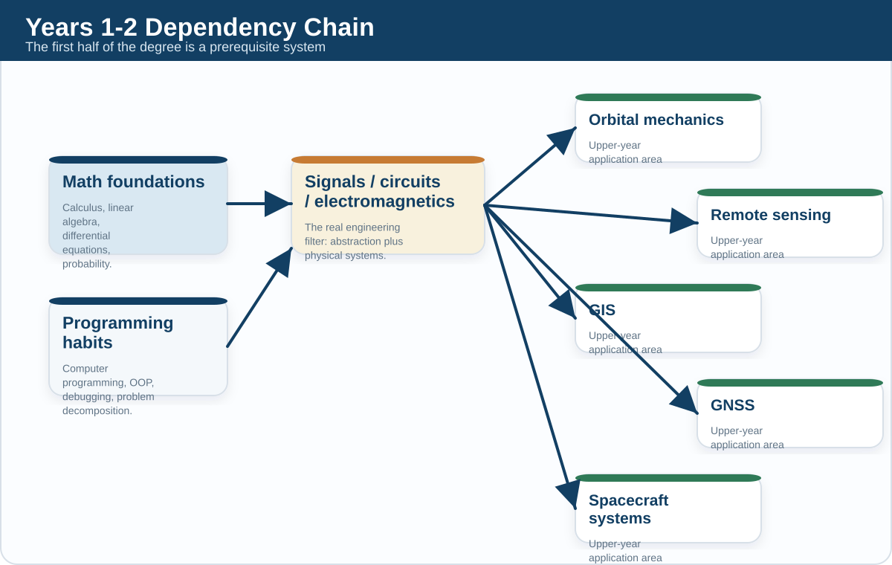
2. Year 1, Semester 1: The Student Is Being Rebuilt
Many high school students imagine first semester as a gentle adjustment period. In this curriculum, that would be the wrong expectation. Year 1 Semester 1 is not yet the heaviest semester in the degree, but it is psychologically important because it begins replacing school-style learning with engineering-style learning. The student is not only studying new content. They are learning a new way of being evaluated.
Introduction to Calculus for Electrical Engineering is the first real filter
When a degree names the course specifically for electrical engineering, students should pay attention. This is not general-service mathematics taught for broad literacy. It is mathematics taught as a language for later engineering subjects. That changes the stakes. The student is not simply trying to pass a math course. They are building the machinery needed for circuits, signals, electromagnetics, control, orbital motion, and parts of data interpretation later on.
The difficulty for Thai students is usually not that derivatives or integrals are conceptually impossible. The difficulty is pace and translation. High school mathematics often allows students to succeed through procedural repetition. Engineering calculus punishes that strategy because later steps require the student to recognize which representation matters and why. Students who enter with weak algebra, weak trigonometry, or inconsistent comfort with functions often discover very quickly that the problem is deeper than "I need to study harder." The problem is that they are trying to do university calculus on top of unstable high school structure.
General Physics 1 and Engineering Mechanics create the first physics shock
Physics 1 and its lab, together with Engineering Mechanics, form the second major filter. In theory these courses are still introductory. In practice they teach students whether they can move between equations, diagrams, and physical interpretation without panic. Engineering Mechanics especially matters because it trains the student to convert a physical situation into a simplified model and then solve it rigorously. That habit does not disappear. It reappears later in circuits, orbital mechanics, remote sensing interpretation, and systems reasoning.
The trap here is that students often underestimate mechanics because the word sounds familiar from high school. University engineering mechanics is not just "more physics." It is a discipline of forces, equilibrium, idealization, and representation. If a student cannot set up the problem properly, calculation skill alone will not save them.
Engineering Drawing is not conceptually brutal, but it is a time-cost trap
Engineering Drawing is usually not the course that destroys confidence academically, but it can quietly damage a semester by consuming time and patience. It trains accuracy, spatial representation, and the discipline of producing something legible to others. Those are useful professional habits. But from a student-survival perspective, the main danger is misclassification. Students often treat drawing as "easy" because it feels less abstract than calculus or physics. Then they discover that neat output, iteration, and correction take far longer than expected.
This matters because the weed-out phase is not driven only by intellectual difficulty. It is driven by time conflict. A course that is only medium-difficulty but highly time-consuming can still push a student into backlog if they budget poorly.
The soft-looking courses are not irrelevant
Digital Citizen, Application Software for Business, Pre-Activities for Engineers, and Introduction to English Communication Skills are not the academic center of this semester. But they matter in a different way. They occupy calendar space. They create attendance and submission obligations. They also reveal whether the student can treat "small" courses professionally rather than dismiss them and then lose easy grades or create preventable stress.
For many first-year students, the first semester lesson is not "I am bad at engineering." It is "I do not yet know how to manage multiple courses with different rhythms." That is a fixable problem, but only if the student notices it early.
| Year 1 Semester 1 course cluster | Main academic function | What it is really filtering | Common mistake |
|---|---|---|---|
| Calculus for Electrical Engineering | Mathematical language for later engineering | Algebra strength, symbolic discipline, pace tolerance | Trying to memorize procedures without understanding function behavior |
| General Physics 1 + Lab | Physical reasoning and measurement discipline | Ability to connect equations with real systems | Treating theory and lab as separate worlds |
| Engineering Mechanics | Model-building and force reasoning | Problem setup skill | Rushing into algebra before drawing the system correctly |
| Engineering Drawing | Precision, representation, and output quality | Patience and workflow control | Underestimating time required for corrections |
| Supporting and communication courses | Attendance, discipline, language, and software basics | Calendar management | Ignoring "small" courses until they become administrative noise |
3. Year 1, Semester 2: The Degree Stops Pretending to Be Generic
Second semester is where many students receive the first honest preview of the degree's identity. The curriculum is no longer just math and basic science. It starts mixing foundation with program flavor: Advanced Calculus for Electrical Engineering, Computer Programming, Space and Geospatial Technology for Daily Life, Digital Photogrammetry, Digital Circuit and Logic Design with lab, and Team-Project 1. This looks exciting on paper, and in some ways it is. It is also the point where false confidence often begins to break.
Advanced Calculus is the first compounding course
By the time students hit advanced calculus, weak understanding from the first semester becomes expensive. This is why the course is dangerous. It is not a fresh start. It compounds every earlier gap in algebra, trigonometry, basic calculus fluency, and study discipline. Students who survived the first calculus course through last-minute patching often get exposed here because the next layer assumes actual fluency, not temporary survival.
In telecom-rooted engineering programs, advanced calculus is not ornamental. It supports future reasoning in signals, systems, electromagnetics, orbital motion, probability models, and sometimes even parts of image and spatial data interpretation. When students tell themselves, "I just need to get past math," they are misunderstanding the curriculum. Math is not a gate they walk through once. It becomes the floor beneath later subjects.
Computer Programming begins the software sorting process
Programming in first year is one of the best reality checks in the entire curriculum. A student can love space, maps, and technology in an abstract sense and still dislike debugging, syntax, logic, and stepwise thinking. The course matters because later GIS, spatial AI, embedded systems, and automation-heavy workflows all benefit from software fluency. The weed-out function here is not that every student must become an elite coder immediately. It is that students must prove they can think procedurally, tolerate errors, and improve through iteration instead of frustration.
Programming also introduces an emotional challenge. For many students, this is the first subject where failure does not always look like getting a wrong final answer. Failure can mean the program does not run, the logic fails only on some inputs, or the student cannot even locate the mistake. That kind of feedback is mentally different from mathematics, and some students react badly to it.
Digital Photogrammetry and the Daily-Life space course are morale boosters, but not safety nets
Space and Geospatial Technology for Daily Life is strategically important because it gives students a reason to keep going. It reminds them why the degree exists. Digital Photogrammetry is also highly significant because KMITL's department publicly lists Digital Photogrammetry as an industry-supported lab area with Esri involvement. This is one of the first courses that likely feels visibly connected to the degree's market story.
But students should not make the classic mistake of assuming the interesting-looking courses compensate for weakness in the hard ones. They do not. In fact, they can make the semester harder by creating extra project, software, or interpretation work on top of calculus, programming, and digital logic. In other words, the "fun" courses are not relaxation. They are identity-building courses inside a still-demanding engineering semester.
Digital Logic and Team-Project 1 reveal whether the student can build, not just study
Digital Circuit and Logic Design, with its associated lab, is the first clear sign that the degree expects hardware-adjacent engineering habits. This is useful even for students who later prefer GIS or data-oriented work because digital logic teaches structure, state thinking, truth-table reasoning, and the discipline of implementation. It also forces students to link theory to laboratory behavior.
Team-Project 1 is a small but meaningful signal from KMITL's curriculum philosophy. The public curriculum site explicitly says students are pushed to do projects from Year 1 onward, and the course structure confirms it. This is good design from an employability standpoint, but it raises the workload ceiling early. A first-year student is therefore learning content and learning how to function in a project team at the same time. If the team is weak, passive, or unbalanced, the project becomes a stress amplifier.
4. The Prerequisites a Student Really Needs Before Entering
KMITL may or may not formally state every survival prerequisite in marketing language, but the curriculum makes many of them obvious. These are not entrance-exam topics in the narrow sense. They are operational prerequisites. A student who lacks them can still enroll, but the first two years will become far more painful.
Mathematics prerequisites
The student should be comfortable, before day one, with algebraic manipulation, functions, graphs, trigonometric identities, basic vectors, and unit consistency. Not perfect. Comfortable. If they still freeze when rearranging equations or moving between symbolic and graphical views, calculus for electrical engineering will feel like being thrown into moving water without a stable stroke. The most underrated prerequisite is not calculus itself. It is algebra speed and cleanliness. Slow algebra creates errors everywhere else.
Physics prerequisites
The student needs more than formula memory. They should already have some ability to interpret force, motion, energy, and basic physical relationships conceptually. Students who solve physics only by pattern-matching example problems are at risk, because university mechanics and later remote-sensing or orbital topics require model selection, not just substitution. If a student cannot explain why an equation fits a situation, they are walking into Year 1 with hidden debt.
Software and computer-hygiene prerequisites
This is often ignored in Thai high school planning. A student entering this degree should already be comfortable managing files, installing software carefully, typing consistently, and using a computer as a work environment rather than as a social device. They do not need to arrive as a programmer. But they should not be the kind of student who becomes helpless when a compiler, IDE, driver, or lab software package behaves unexpectedly. The degree moves quickly into programming, digital logic, labs, embedded work, and later GIS and spatial software. Weak computer hygiene makes all of that harder than it should be.
English prerequisites
The curriculum includes formal English and intercultural communication courses, but students should not rely on those alone. Technical documentation, software interfaces, command-line errors, academic papers, and guest lectures often appear first in English. A student with weak listening or reading confidence will therefore suffer extra cognitive load. They may understand the engineering idea eventually, but only after slower decoding. Over four semesters, that delay matters.
Temperament prerequisites
The hardest prerequisite to admit is temperament. A student should be capable of doing boring things repeatedly without losing all motivation. That includes practice problems, report formatting, bug fixing, lab cleanup, rework after mistakes, and asking questions before embarrassment turns into avoidance. The first two years reward reliability more than brilliance. A very smart student with unstable habits is often in more danger than a merely solid student with disciplined routines.
| Prerequisite | Why it matters in Year 1 and 2 | What happens if it is weak |
|---|---|---|
| Algebra and trigonometry fluency | Supports calculus, mechanics, signals, circuits, and orbital reasoning | The student spends too much energy on manipulation and cannot focus on concepts |
| Basic physics reasoning | Needed for physics, mechanics, remote sensing foundations, and later systems thinking | Courses feel like disconnected formulas instead of interpretable models |
| Computer hygiene | Supports programming, labs, software setup, documentation, and project work | Technical friction multiplies and consumes time that should go to learning |
| English reading confidence | Helps with documentation, software, seminars, and technical terminology | The student learns every tool and concept more slowly |
| Routine discipline | Prevents small misses from becoming backlog | The student enters repair mode by mid-semester |
5. Year 2, Semester 1: This Is Where the Degree Gets Honest
If Year 1 tests adaptation, Year 2 Semester 1 tests structural fitness. The course list is unusually revealing: Linear Algebra and Differential Equations, Object Oriented Programming, Signals and Systems, Orbital Mechanics, Electric Circuit Analysis with lab, and English communication. This is the semester where KMITL's telecom base and its space ambition collide in full view.
Linear Algebra and Differential Equations are not side mathematics
This course is often misread as just another math requirement. That is a mistake. Linear algebra and differential equations are among the deepest enabling tools in the degree. Linear algebra underlies transformations, coordinate reasoning, state representation, data structures, image operations, and parts of GNSS and spatial computation later. Differential equations support dynamics, signals, systems behavior, electromagnetics, orbital motion, and control-style reasoning.
The hazard is that students may pass earlier calculus while still thinking mathematically in a narrow one-variable procedural way. Year 2 mathematics forces a broader view. If the student cannot think in vectors, systems, matrices, rates of change, and model behavior, this semester becomes a conceptual wall rather than a normal course load.
Signals and Systems is the first truly telecom-coded subject
Signals and Systems is one of the clearest markers that this degree is not merely a geospatial program with a space label. It is a telecom-and-systems program with a geospatial and space destination. This course trains the student to think about inputs, outputs, transformations, time and frequency behavior, filtering, and mathematical representation of system response. Even when specific later courses do not look like "signals" courses on the surface, the cognitive style remains relevant.
For many students, Signals and Systems feels like the moment engineering becomes less intuitive. The quantities are more abstract. The mathematics becomes more structural. The pictures help, but only if the student understands what the pictures represent. Students who relied on verbal intuition in Year 1 may start slipping here if they have not built stronger mathematical habits.
Orbital Mechanics is attractive and dangerous
Orbital Mechanics is one of the most emotionally risky courses in the first two years because it looks like a dream course. It is also mathematically unforgiving. A student may be excited to finally touch explicit space content, then discover that actual orbital reasoning depends on vectors, motion, coordinate frames, and differential thinking. This can be psychologically rough because it attacks motivation directly. The student finally reaches a visibly "space" subject and still gets punished for weak fundamentals.
That is why this course is such a strong filter. It separates students who like the idea of space from students who can work inside the mathematics of space systems. In a serious degree, that separation is necessary. But prospective students should understand in advance that Orbital Mechanics is not a reward semester. It is a proof semester.
Object Oriented Programming plus Circuit Analysis creates multi-front pressure
OOP and Electric Circuit Analysis do not merely add more content. They create a dual-load problem. Programming demands logic, debugging, and software persistence. Circuit analysis demands symbolic reasoning, physical interpretation, and procedural rigor. Add a lab on top of that, and the student is managing at least three different failure modes in the same semester: wrong code, wrong model, and wrong or incomplete laboratory execution.
This is why Year 2 Semester 1 is a classic separation point. It does not let a student hide inside one strength. A student who is decent at programming but weak in math gets exposed. A student who is decent at math but weak in implementation gets exposed. A student who is conceptually strong but disorganized with labs gets exposed. The semester is academically fair in the sense that every course supports later work. It is still harsh in the sense that weakness has fewer places to hide.
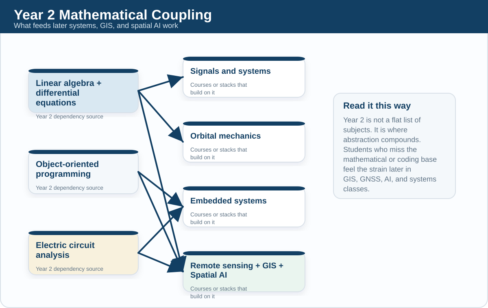
6. Year 2, Semester 2: Abstraction, Hardware, and the Illusion of Relief
Students sometimes expect the second semester of Year 2 to feel easier because they have already "proven" they belong. In this curriculum, that expectation is dangerous. Probability and Statistics for Electrical Engineering, Engineering Electromagnetics, Embedded Systems and Applications with lab, Remote Sensing, Space Electronics with lab, Team-Project 2, and English communication together create a semester that is less obviously mathematical than Semester 1 but often more draining in practice.
Engineering Electromagnetics is a conceptual shock course
Electromagnetics is hard for a reason that differs from calculus or circuits. It deals with invisible fields, abstract representations, and physical intuition that students often have not built yet. Even strong students can feel disoriented because the subject requires them to trust mathematical structure before everyday intuition becomes reliable. In a telecom-rooted department, electromagnetics is not optional background. It supports antennas, RF systems, propagation, radar thinking, and several later topics in communications and sensing.
The failure pattern here is usually not laziness. It is false partial understanding. Students think they sort of understand fields because they can repeat definitions, but when asked to reason through a configuration or connect mathematics to physical behavior, the understanding collapses. This makes electromagnetics one of the most deceptive courses in the weed-out phase.
Remote Sensing is not a break from engineering
Remote Sensing may look like the first course where geospatially minded students can finally relax. That would be the wrong interpretation. Serious remote sensing is not just pretty satellite images. It relies on physics, spectral reasoning, sensor concepts, data interpretation, error awareness, and often software workflows. In other words, it rewards students who have already survived the earlier foundation. It does not magically bypass that foundation.
This course is strategically important because it begins showing students the downstream application logic that makes the whole degree marketable in Thailand: disaster management, land use, agriculture, environment, urban observation, and data products. But as a course, it still punishes shallow thinking. Students who only memorize image examples without understanding sensing mechanisms may do worse than expected.
Embedded Systems and Space Electronics make the hardware claim real
Embedded Systems and Applications with its lab, together with Space Electronics and its lab, signal that KMITL is not merely producing GIS users. It is still trying to produce engineering graduates who understand real devices, interfaces, constraints, and implementation. For students who prefer hardware-adjacent work, this is a major strength. For students who imagined the degree as mostly digital maps and satellites from afar, it can feel like a second identity crisis.
Labs make these courses particularly expensive in time. Hardware courses rarely fail students only through written examinations. They create friction through setup errors, incomplete understanding, debugging loops, incompatible assumptions within teams, and the very normal fact that physical or embedded systems often do not work on the first try. This is where emotional discipline becomes as important as raw intelligence.
Probability and Statistics is quieter, but it matters more than students think
Probability and Statistics for Electrical Engineering can look less dramatic beside electromagnetics or embedded labs, but that is misleading. Probability thinking becomes important in communications, error analysis, uncertainty, signal behavior, remote-sensing interpretation, and later data-oriented work. Students who treat statistics as a side requirement may discover later that they handicapped themselves for analytics-heavy roles.
The semester therefore has a subtle cruelty: some of the courses that feel most urgent are not the only ones shaping the student's long-term ceiling. Ignoring the "quieter" course can still damage later performance.
7. Failure Patterns and Traps in the First Two Years
Students usually do not fail hybrid engineering programs through one dramatic flaw. They fail through recognizable patterns. The value of identifying those patterns now is that many are preventable if the student sees them early.
Trap 1: The romance trap
This is the classic Space and Geospatial Engineering error. The student loves the degree title, the imagined future job, or the visible application layer, but they emotionally disengage from the electrical-engineering foundation underneath. They begin treating math, circuits, and electromagnetics as temporary pain rather than core infrastructure. The result is predictable: by the time the visibly exciting subjects arrive, the student does not have enough underlying strength to benefit from them fully.
Trap 2: The lab-underestimation trap
Students budget around lecture content and then get surprised by how much time labs consume. Digital logic labs, electric-circuit labs, embedded labs, space electronics labs, physics labs, and project preparation all create time spillover. The student thinks they are behind only in one course, but in reality they are behind in every course that depends on disciplined weekly execution.
Trap 3: The programming drift trap
Some students survive early programming through copying patterns they do not deeply understand. That can work briefly. It becomes dangerous once object-oriented programming, embedded work, GIS scripting, spatial AI, or automation-heavy tasks appear later. The student has technically "passed programming" but never became computationally comfortable. This is a hidden weakness that often appears too late.
Trap 4: The compartmentalization trap
Students often mentally separate courses that are actually linked. They think calculus is one box, circuits is another, signals is another, and orbital mechanics is another. That is cognitively expensive because the curriculum is built on reuse. A student who does not consciously connect the mathematics across subjects ends up relearning similar ideas under new labels and feels constantly overwhelmed. The stronger students notice that the courses are speaking to each other.
Trap 5: The group-project dependency trap
Team-Project 1 and Team-Project 2 are valuable because they begin portfolio formation early. They are also dangerous because team quality is uneven. A weak student can hide inside a strong team and reach later semesters with inflated confidence. A strong student can be drained by carrying weak teammates and lose performance in core academic subjects. Either way, project work distorts the student's perception unless they are honest about what they personally can and cannot do.
Trap 6: The admin-lag trap
Chapter 5 already showed that KMITL's engineering administration is formal enough that registration, leave, and student-status management matter. In the first two years, the specific risk is delay. The student knows something is going wrong, but they postpone action because they are embarrassed or busy. By the time they ask for help, the problem has crossed from academic weakness into timetable or registration weakness. That is when one bad semester starts threatening the larger degree plan.
| Trap | Why it happens | Practical consequence | Best countermeasure |
|---|---|---|---|
| Romance trap | Student is motivated by the idea of space more than engineering process | Foundations collapse just before advanced subjects become interesting | Treat math, circuits, and code as part of the space path, not as obstacles outside it |
| Lab-underestimation trap | Student plans only around lecture time | Backlog spreads across multiple courses | Schedule weekly lab and report time as fixed workload |
| Programming drift trap | Student passes without internalizing logic | Later GIS, AI, embedded, and automation work become harder than they should be | Rebuild fundamentals immediately after the first weak programming signals |
| Compartmentalization trap | Student studies each course in isolation | Everything feels harder and more repetitive | Actively map how math and system ideas recur across subjects |
| Group-project dependency trap | Uneven teammate capability | False confidence or burnout | Track personal contribution honestly and keep individual evidence of work |
| Admin-lag trap | Student avoids paperwork or difficult conversations | Small issue turns into semester-scale problem | Escalate early to advisors, faculty, or offices before the situation hardens |
8. Deep Analysis: What the First Two Years Are Actually Selecting For
The most useful way to judge KMITL's Year 1 and Year 2 is not to ask whether they are "too hard." The better question is what kind of graduate the curriculum is trying to produce by imposing this shape. The answer is that the first two years are selecting for students who can function across multiple technical languages without falling apart operationally.
Strongest argument for the weed-out structure
The strongest argument in favor is quality control. By forcing students through calculus, programming, circuits, signals, electromagnetics, mechanics, remote sensing, and project work before Year 3, KMITL increases the chance that students who survive will be genuinely useful later. A later course such as GNSS technology, GIS for geospatial engineering, spatial computing and AI, or spacecraft systems design is much more meaningful if the cohort has already proved it can handle technical fundamentals. This is exactly how a serious engineering degree protects its later specialization from becoming superficial.
There is also a labor-market benefit. Thailand's geospatial job market is safer than pure space hardware, but even geospatial roles increasingly reward people who can handle data structures, sensors, system logic, hardware interfaces, or programming. A graduate who survived this foundation may be more adaptable than a graduate from a softer program that taught applications without enough technical base.
Strongest argument against the weed-out structure
The strongest argument against it is not simply stress. It is selection bias. Early engineering filters tend to favor students who were already well prepared in mathematics and technical habits before university. That means the degree may under-reward students whose deeper strengths lie in application design, problem framing, communication, or operational geospatial work, especially if those students came from weaker school systems. In other words, the curriculum may be selecting partly for prior preparation, not only for long-term potential.
There is also an opportunity-cost concern. If too much of Year 1 and Year 2 feels like generic electrical or telecom engineering pain, some students may reasonably ask whether they should have chosen a more standard degree and specialized later. That is a valid question. The answer depends on whether the student truly values the integrated space-geospatial identity or merely the later job outcomes.
Reasoned judgment
The reasoned judgment is that KMITL's weed-out phase is academically coherent, but it is not beginner-friendly in the emotional sense. It is fairer than a fake niche program that promises space prestige without technical substance. It is harsher than a student may expect if they arrive imagining a lighter interdisciplinary experience. That tension is exactly why a dossier like this matters.
For the right student, these first two years are not a sign to run away. They are evidence that the degree has a real spine. For the wrong student, they are a warning that enthusiasm alone will not be enough. The decision therefore comes down to readiness. If the student can arrive with decent math, decent physics reasoning, tolerable English, and disciplined study habits, the weed-out phase is survivable and arguably worthwhile. If they arrive already fragile in those areas, the first two years are where the degree is most likely to exact its price.
9. Chapter Takeaway
KMITL's Year 1 and Year 2 sequence is not decorative. It is a deliberate filter that tests mathematics, programming, physical reasoning, lab discipline, and persistence before the student reaches the program's more obviously space-facing and geospatially marketable years. That makes the degree more credible, not less. It also means the student should choose it only if they are genuinely prepared for two years of engineering foundation work rather than only attracted to the later image of satellites, GIS, and location intelligence.
Sources
The detailed semester-by-semester course sequence analyzed in this chapter was provided by the user in-thread in markdown form. It was cross-checked against KMITL's official program identity, curriculum landing page, published elective structure, and public program materials. Where the exact required-course list is not fully exposed in plain HTML on the public site, this chapter avoids pretending that every course title was independently scraped from a single official webpage.
- KMITL Department of Telecommunications Engineering: Space and Geospatial Engineering overview
- KMITL Department of Telecommunications Engineering: Space and Geospatial Engineering program page
- KMITL Curriculum: Space and Geospatial Engineering major landing page
- Linked curriculum PDF from the official KMITL program page
- KMITL Telecom Department: Fundamental Labs
- KMITL Telecom Department: Advanced Labs
- KMITL Telecom Department: Labs with Industry
- KMITL Telecom Department: CANSAT and innovation activity post
Chapter 7: Year 3 & 4 (The Money Skills Phase)
This chapter analyzes the part of the degree where KMITL's Space and Geospatial Engineering program either becomes economically useful or remains academically attractive but commercially vague. The focus is not only on the course list. It is on which tools, project patterns, internships, and final-year decisions actually translate into employability in Thailand.
Executive Summary
Year 3 and Year 4 are where KMITL's Space and Geospatial Engineering degree stops being mainly a filter and starts becoming a labor-market proposition. The official public signals around the department support this interpretation. KMITL visibly has an Esri-supported digital photogrammetry lab, an Excellence Center on GNSS and Space Weather, a Space Research Lab, an Earth-Space Communication and Technology Lab, industry-supported network labs, seminar activity around system engineering and LEO satellite communications, internship activity with ZTE Thailand, student innovation exposure at KMITL Innovation Expo 2025, and study-visit visibility tied to companies such as Thaicom. That is a real upper-year ecosystem.
The strongest part of the Year 3 and Year 4 curriculum is that the course titles finally become economically legible: Geographic Information Systems 1 and 2, Satellite and Space Communications, GNSS Technology and Location Intelligence, Spatial Computing and Artificial Intelligence, Ground Station System and Technology, Spacecraft Systems Design, and an explicit summer Industrial Training slot. These are exactly the kinds of labels that a student can turn into portfolio assets, internship stories, and interview narratives.
The strongest warning is that the public pages do not prove that every valuable industry tool will be handed to the student in a neat package. ArcGIS-type exposure is directly signaled through Esri involvement. GNSS and space-weather capability are directly signaled through faculty and lab infrastructure. But tools such as Python, C++, MATLAB, QGIS, STK, and ENVI should be treated as a strategic stack the student must deliberately assemble, not a stack the degree automatically guarantees. The correct judgment is therefore blunt: Year 3 and Year 4 can be the money-skills phase, but only if the student behaves like a portfolio builder rather than a course collector. Otherwise the degree remains interesting but under-monetized.
1. Why Year 3 and Year 4 Are the Real Test of Degree Value
The earlier years answer one question: can the student survive engineering? The upper years answer a different question: can the student now convert that survival into marketable usefulness? This is why Year 3 and Year 4 matter disproportionately in a new hybrid degree like KMITL's Space and Geospatial Engineering program. Employers do not hire "good feelings about space." They hire proof that the student can build, analyze, automate, communicate, and ship work inside a real technical environment.
The curriculum becomes legible to employers here
The Year 3 and Year 4 sequence the user provided is revealing because it contains the first cluster of course names that an employer in Thailand can immediately connect to work: RF Systems, GIS for Geospatial Engineering 1 and 2, Satellite and Space Communications, GNSS Technology and Location Intelligence, Spatial Computing and Artificial Intelligence, Ground Station System and Technology, Space and Geospatial Laboratory, professional seminars, industrial training, and the final capstone or cooperative education choice. This is the stage where the degree can finally produce evidence that maps to real roles such as GIS engineer, geospatial analyst, GNSS engineer, satellite systems support engineer, network engineer, remote-sensing analyst, or systems integration engineer.
That is why calling these years the "money skills" phase is correct. Not because they automatically pay money, but because they are the first part of the curriculum that can be converted directly into economic storylines. Before this stage, the student mainly has prerequisites. After this stage, the student can potentially show outcomes.
This is also where the degree can still fail commercially
Upper-year specializations often create false confidence. Students finally see exciting course titles and assume the degree is now self-explanatory. It is not. In Thailand, the employer still wants translation. What exactly did the student do in GIS? Did they only make classroom maps, or did they automate a workflow, fix coordinate-system issues, build a land-use analysis, or integrate remote-sensing layers? What exactly did they do in satellite communications? Did they calculate a link budget, understand propagation constraints, and interpret RF behavior, or did they only remember lecture definitions?
The upper years therefore do not remove ambiguity by themselves. They only give the student the raw material to remove ambiguity. That is why portfolio strategy, internship choice, tool ownership, and final-year decision-making matter so much more than in a generic degree.
2. Year 3 Semester 1: The Degree Finally Shows Its Economic Shape
Year 3 Semester 1 is where the hybrid starts looking coherent. RF Systems, GIS for Geospatial Engineering 1, Spacecraft Systems Design, Communication Systems, Data Communications and Networking, and Ground Station System and Technology form a highly specific mix. This is not a random list. It says the program wants a student who can move between geospatial software, satellite-system logic, and telecom infrastructure without becoming useless in any one of them.
RF Systems and Communication Systems keep the telecom spine alive
The curriculum is telling the student something important here. Even in the upper years, KMITL is not surrendering its telecommunications identity. RF Systems and Communication Systems are not side dishes. They are the reason the degree can plausibly claim engineering legitimacy in satellite and ground-system work. Without this spine, the program would risk collapsing into a geospatial applications degree with a space label.
For employability, these courses matter most for students who may later target Thaicom, National Telecom, satellite-adjacent infrastructure work, RF testing environments, or ground-segment and communications support roles. They also help GIS-leaning students more than they may realize, because many real geospatial systems are inseparable from how sensing data is transmitted, corrected, positioned, or integrated into operational networks.
GIS for Geospatial Engineering 1 is where employability becomes safer
This course is one of the most important "safety net" moments in the degree. GIS is the broadest, safest, and most immediately monetizable labor-market layer available to many graduates in Thailand. Once the student reaches formal GIS coursework in the upper years, the degree can finally produce work that resembles what employers in consulting, utilities, state agencies, digital mapping, environmental firms, logistics platforms, and location-intelligence teams actually consume.
The crucial warning is that GIS 1 should not be treated as merely a software familiarization course. If the student only learns where buttons are in a GIS interface, they are not yet employable. GIS becomes valuable when the student understands data layers, coordinate systems, vector and raster logic, joins, geoprocessing chains, map design, attribute integrity, and how to explain a spatial decision in Thai business or public-sector language. This is exactly where portfolio thinking must start.
Spacecraft Systems Design and Ground Station System and Technology are the differentiation courses
These two subjects are where KMITL's unique proposition starts looking credible. GIS alone would make the degree safer, but not unique. Spacecraft Systems Design and Ground Station System and Technology give the student an identity that most generic GIS graduates do not have. They create the possibility of talking about payloads, subsystems, mission constraints, communication links, and operational support rather than only mapping outputs.
The value here is not that Thailand has a huge pure spacecraft manufacturing market. It does not. The value is that these courses make the student more legible to employers or projects operating near satellite operations, system integration, satcom support, mission planning, or technical consulting. In labor-market terms, this is differentiation, not mass demand. It becomes powerful only if it is packaged with a portfolio that proves the student can do more than admire satellites.
| Year 3 Semester 1 course | Main skill outcome | Real job translation | Hidden warning |
|---|---|---|---|
| RF Systems | RF reasoning, propagation awareness, system constraints | Satellite communications support, RF testing, telecom infrastructure roles | Without math fluency, the course can become memorized jargon |
| GIS for Geospatial Engineering 1 | Spatial data handling and applied map workflow | GIS engineer, geospatial analyst, mapping and planning support | Software familiarity alone is not a portfolio |
| Spacecraft Systems Design | System-level thinking across mission components | Systems engineering language, satellite-adjacent project credibility | Thailand has limited pure spacecraft demand, so proof matters more than course title |
| Communication Systems | Core telecom model literacy | Network, communications, and satcom-adjacent roles | Students may underestimate how often this supports later space work |
| Data Communications and Networking | Practical network logic and system integration awareness | Network engineer, systems support, telecom operations | Useful fallback path if pure space hiring is thin |
| Ground Station System and Technology | Ground-segment operational understanding | Satellite operations support, infrastructure and systems roles | Highly differentiating but only if the student can explain it concretely |
3. Year 3 Semester 2: This Is Where the Degree Becomes Sellable
If Semester 1 builds shape, Semester 2 builds pitch. GIS for Geospatial Engineering 2, Satellite and Space Communications, GNSS Technology and Location Intelligence, Spatial Computing and Artificial Intelligence, Space and Geospatial Laboratory, Professional Space and Geospatial Engineering Seminars, and Team-Project 3 together form the most commercially important semester in the whole degree.
GNSS Technology and Location Intelligence is a direct bridge to Thai demand
This course sits unusually close to real-world value because GNSS and location intelligence connect immediately to logistics, transport, aviation support, surveying-adjacent work, telecom optimization, fleet monitoring, agriculture, and urban systems. KMITL's public ecosystem reinforces this. The department openly lists an Excellence Center on GNSS and Space Weather, and program-committee member Dr. Jirapoom Budtho publicly lists GNSS, GBAS, and ionospheric effects on navigation and communication among his research areas. That is not decorative. It means the course is backed by visible institutional capability.
For the student, this matters because GNSS is one of the few areas where space and geospatial engineering translate very cleanly into practical Thai use cases. Unlike pure spacecraft aspiration, positioning and location intelligence touch sectors that already exist. That makes this course one of the strongest employability anchors in the entire curriculum.
Spatial Computing and Artificial Intelligence is a high-upside course with high bluff risk
The title sounds modern and valuable because it is. But it is also one of the easiest places for students to bluff themselves. Spatial AI can mean a lot of things: classification, object detection, geospatial data pipelines, feature engineering on location data, computer vision on aerial or satellite imagery, or decision-support models layered on maps. A student who finishes the course with only broad conceptual exposure has not gained the market value that the title suggests.
This is where the Python question becomes unavoidable. Even if the public pages do not specify the language used in this course, spatial AI work in practice strongly rewards Python fluency because the surrounding ecosystem often involves data handling, notebooks, machine learning libraries, geospatial scripting, and reproducible experimentation. A student who exits the course without a Python-based artifact is leaving money on the table.
Satellite and Space Communications plus Space and Geospatial Lab create the proof environment
Satellite and Space Communications is economically useful because it extends the telecom foundation into explicitly space-facing territory. Ground station concepts, satellite link understanding, frequency behavior, transmission constraints, and systems integration all become easier to narrate to relevant employers. The lab component matters because the labor market trusts artifacts and demonstrations more than course titles.
KMITL's visible environment supports this interpretation. The department publicly shows an Earth-Space Communication and Technology Lab, a Satellite and Space Lab, and a Space Research Lab. It also hosted a seminar on LEO satellites for 5G and Beyond 5G Communications and has visible ties to satcom and GNSS researchers. This does not prove that every student will graduate with production-grade tools, but it does prove that the department is not fabricating the upper-year space layer.
Seminars and Team-Project 3 are not fluff
Professional seminars are often treated by students as low-stakes attendance courses. That is a mistake in a new hybrid degree. KMITL's public event stream shows why. There are visible activities such as the GISTDA lecture to program students, the "HOW TO System Engineer" seminar featuring telecom alumni working as system engineers at Stream I.T. Consulting, LEO satellite communications talks, and departmental visits to industry environments such as Thaicom and submarine cable infrastructure. These events are not just inspirational. They teach the student how industry talks, what job titles sound like, and which competencies are actually legible outside the classroom.
Team-Project 3 is equally important because it is likely the point where a student can produce a portfolio artifact that looks much closer to a final professional sample than the earlier project courses. If Team-Project 3 is weak, the student enters industrial training and Year 4 with less leverage than they should have.
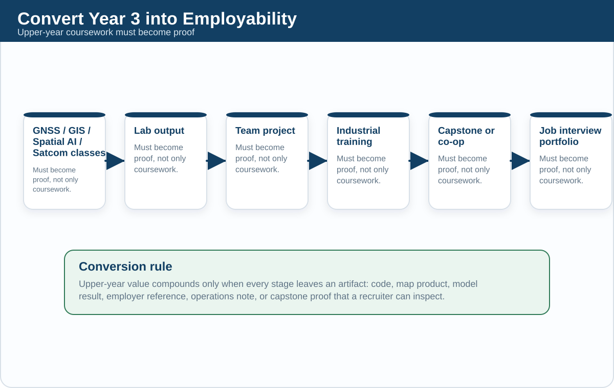
4. The Tool Stack: What the Degree Signals, What the Student Must Build
The upper-year curriculum is where tool reality becomes decisive. This chapter has to be careful here, because not every useful software package is explicitly named on the public KMITL pages. The correct response is not to pretend certainty. The correct response is to separate the stack into three categories: directly signaled by official KMITL evidence, strongly implied by the course structure, and strategically essential even if the student has to self-learn it.
ArcGIS is the clearest officially signaled commercial GIS tool
The strongest direct tool signal visible on KMITL's public pages is the Esri-supported Digital Photogrammetry lab. Combined with the May 29, 2024 Esri collaboration post, this gives ArcGIS-family tooling a much firmer evidentiary basis than many other software names. A student should therefore assume that commercial GIS workflows are part of the program's intended ecosystem, even if the exact software version or course-specific deployment changes over time.
This matters because ArcGIS remains widely legible in Thai government, utilities, enterprise mapping, and consulting environments. Knowing ArcGIS or ArcGIS Pro does not make a student superior to everyone else, but it does make them more easily interpretable by employers who operate in Esri-heavy workflows.
QGIS is the practical hedge every serious student should own
QGIS is not visibly branded on the official department pages reviewed for this chapter, but it is strategically important anyway. Students should learn it because it is free, widely used, portable after graduation, and excellent for portfolio continuity when campus licenses or internship environments differ. In Thailand, many smaller organizations and cost-conscious teams cannot assume enterprise-licensed software everywhere. A graduate who only knows one paid interface is more fragile than a graduate who can move between ArcGIS and QGIS comfortably.
Python is the most important self-owned tool in the upper years
The public curriculum sequence clearly includes Computer Programming, Object Oriented Programming, Embedded Systems, Spatial Computing and Artificial Intelligence, GIS courses, and project courses. But the public pages do not prove which exact programming language dominates each one. That ambiguity should not lull the student into passivity. In labor-market terms, Python is the safest upper-year bet because it serves GIS automation, notebook-based analysis, remote-sensing workflows, spatial AI, API work, data cleaning, dashboard back ends, and general reproducibility.
If a student finishes Year 4 without a Python-based artifact, they are accepting unnecessary risk. Even students targeting more hardware-leaning roles benefit from Python because it is the fastest way to show data handling and automation competence in interviews.
C++ and MATLAB are powerful, but they are path-dependent
C++ is most valuable for students leaning toward embedded systems, performance-heavy logic, hardware-adjacent engineering, or simulation environments where lower-level control matters. It is not the first language every student must master deeply, but it is especially useful for the hardware-facing subgroup of this degree. MATLAB, meanwhile, remains highly valuable in signal processing, RF, communications, controls, and prototyping. In telecom-rooted departments, MATLAB literacy is often advantageous even when it is not loudly advertised on public marketing pages.
The honest warning is that students should not assume formal, deep, course-by-course mastery of either tool unless they verify current syllabi. A smart student treats both as accelerants: MATLAB for simulation and signal-heavy thinking, C++ for hardware and performance-oriented credibility.
STK and ENVI are differentiation tools, not safe assumptions
STK is one of the most logical tools for a degree that includes Orbital Mechanics, Ground Station System and Technology, Spacecraft Systems Design, and Satellite and Space Communications. ENVI is equally logical for remote-sensing and imagery-heavy work. But logical does not mean guaranteed. The open public sources reviewed for this chapter did not clearly show STK or ENVI by name. That means a student should not assume the school will automatically provide deep training in either package.
This is exactly where self-direction separates strong graduates from average ones. If a student wants to stand out for mission analysis, ground-segment reasoning, satellite visibility, or imagery classification, STK and ENVI can be extremely useful. But they should be treated as deliberate enhancement tools, not baseline promises.
| Tool | Evidence level in KMITL public ecosystem | Main value to the student | Judgment |
|---|---|---|---|
| ArcGIS / ArcGIS Pro | High, because Esri-supported Digital Photogrammetry is publicly listed | Enterprise GIS credibility, photogrammetry and spatial workflow familiarity | Treat as core commercial GIS exposure |
| QGIS | Low direct public evidence, but high practical relevance | Free, portable, resilient GIS capability after graduation | Self-learn as a mandatory hedge |
| Python | Medium by curricular implication, not explicit on public pages | GIS automation, data pipelines, spatial AI, reproducible analysis | Most important student-owned tool |
| C++ | Medium by embedded and systems implication, not explicit on public pages | Embedded, hardware-adjacent, performance-oriented credibility | Important for the hardware-leaning path, optional for the pure GIS path |
| MATLAB | Medium by telecom-course logic, not explicit on public pages | Signal processing, RF, communications simulation, fast technical prototyping | Highly useful, but verify actual access and teaching depth |
| STK | Low direct public evidence, high conceptual fit | Mission analysis, orbit and ground-station visualization, systems storytelling | Differentiating add-on if the student can access it |
| ENVI | Low direct public evidence, high remote-sensing fit | Imagery analysis, classification, remote-sensing depth | Useful specialist tool, not a safe baseline assumption |
The strategic conclusion is simple: the degree gives the student enough structure to justify building a serious stack, but it does not remove the responsibility to build one. Waiting for the school to hand over every tool neatly is a mistake. The better approach is to use the official ecosystem as permission and then self-assemble the missing pieces aggressively.
5. Key Classes That Actually Translate Into Hiring
Not every upper-year course carries equal labor-market weight. Some are intellectually valuable but commercially indirect. Others can be converted almost immediately into roles, internships, and interview stories. Students need to know the difference.
GIS for Geospatial Engineering 1 and 2 are the safest employability anchor
The GIS pair is the most stable hiring bridge in the curriculum. It links naturally to employer types that already exist in Thailand: GISTDA, provincial planning units, utilities, survey and mapping firms, logistics platforms, environmental consultancies, telecom planning teams, property-data groups, and enterprise GIS environments. If a student does not know what specialization to choose, GIS is the safest answer because it is broad, visible, and easier to convert into demonstrable work than pure hardware ambition.
GNSS Technology and Location Intelligence is the most underappreciated upper-year asset
Students often underestimate GNSS because it sounds narrower than AI or spacecraft design. That is a mistake. Positioning, navigation, correction, and location intelligence sit close to transport, aviation, fleet systems, agriculture, smart-city services, network planning, and disaster response. In other words, GNSS is one of the least glamorous but most commercially grounded course areas in the entire degree.
Spatial Computing and Artificial Intelligence has the highest upside if the student can execute
This course has strong upside because employers increasingly respond to applied AI narratives. But upside depends on execution. A vague AI course title without a concrete artifact is weak. A student who can show land-use classification, geospatial object detection, road-network analysis, PM2.5 interpolation, flood-risk mapping, or Thai-language spatial dashboard integration has a much stronger story. This is a course where the difference between "I took it" and "I built with it" is enormous.
Satellite and Space Communications, Ground Station System and Technology, and Spacecraft Systems Design are the identity triangle
These three courses matter because they make the degree different from a standard GIS path. They do not create a huge Thai job market by themselves. What they create is a more defensible engineering identity around space infrastructure, systems, and operations. This is valuable when speaking to satcom, telecom, ground-segment, defense-adjacent, or systems integration audiences. It is also useful when applying internationally for specialized master's programs or internships later.
| Course cluster | Closest job titles | Employer types | Best supporting portfolio output |
|---|---|---|---|
| GIS 1 and 2 | GIS Engineer, Geospatial Analyst, Mapping Analyst | GISTDA, utilities, consultancies, logistics platforms, government planning units | Interactive map, geoprocessing workflow, Thai case-study analysis |
| GNSS and Location Intelligence | GNSS Engineer, Location Intelligence Analyst, Positioning Systems Engineer | Transport, telecom, aviation-support, geospatial firms, infrastructure operators | Positioning accuracy project, route intelligence dashboard, correction analysis |
| Spatial Computing and AI | Geospatial Data Scientist, Spatial Analyst, Applied AI Engineer | AgriTech, ESG analytics, urban-tech teams, remote-sensing projects | Python notebook, model evaluation report, reproducible spatial AI pipeline |
| Satcom, Ground Station, Spacecraft Systems | Satellite Systems Support Engineer, Systems Engineer, Ground Segment Engineer | Thaicom, NT, satcom integrators, research labs, state technical agencies | Link-budget report, mission concept study, ground-station operations demo |
6. The Gap Between School and Industry: Where Students Still Get Surprised
The upper-year curriculum is strong enough to produce useful graduates, but it still does not erase the classic school-versus-industry gap. This gap matters because students often assume that once the course titles look professional, the hard part is over. In reality, the hard part changes form.
School rewards completion; industry rewards reliability under mess
In school, problems are usually cleaner. Data has been prepared. Lab goals are scoped. The timetable tells you roughly what should happen next. In industry, especially in Thai operational environments, data arrives incomplete, coordinate systems are inconsistent, field metadata is missing, shapefiles are broken, APIs fail, vendors use different assumptions, and clients change what they want after the work has started. The difference is not only technical. It is operational.
This means a student can perform well in GIS coursework and still struggle in a real GIS or location-intelligence job if they have never practiced messy data handling, documentation, version control, and communication with non-academic stakeholders. The same is true on the telecom and space side. A student may understand link concepts or system architecture in class yet still be weak at reading vendor documentation, preparing handover notes, validating assumptions, or working around hardware constraints.
The software gap is often bigger than the theory gap
Theory is not the only gap, and often not the biggest one. The bigger problem is that students know concepts but do not have repeatable workflows. They can use GIS software when an instructor gives the sequence, but they cannot set up a clean project folder, document assumptions, automate steps, or reproduce a result later. They know AI terminology, but they cannot package a notebook, explain training data choices, or version a model experiment. They know satcom ideas, but they cannot turn a system concept into a polished technical brief.
This is why the upper years should be judged not only by classes taken but by workflows mastered. A graduate with fewer topics but stronger workflow discipline is often more employable than a graduate with more topic exposure and weaker execution habits.
Seminars and industrial exposure are valuable because they teach language, not only facts
KMITL's public event history supports a practical view of seminars. The department has hosted system-engineering talks, LEO communications talks, external lectures from GISTDA, internship orientations, and visible industry visits. These events matter because they expose students to professional vocabulary, role definitions, and the way practitioners describe problems. This sounds minor, but it is not. One of the biggest reasons new graduates interview poorly is that they cannot narrate their own work in industry language.
A student who listens carefully in these seminars and then rewrites their own project summaries accordingly gains an advantage that is not visible on a transcript. They become easier to hire because they sound less like a confused student and more like a junior engineer or analyst.
7. Industrial Training, Capstone, or Co-op: The Decision That Shapes First Employment
The curriculum structure after Year 3 is strategically strong on paper. There is an explicit summer Industrial Training period, and Year 4 Semester 1 is reserved for either Engineering Capstone Project or Cooperative Education. This is excellent design if the student uses it intelligently. It is wasted design if they drift into it unprepared.
The summer industrial training should be treated as reconnaissance, not as decoration
Students often think of industrial training as a small requirement to clear before final year. That is too weak an interpretation. In a new hybrid degree, summer training should be used to answer three questions before the final-year decision arrives. First, which side of the degree feels more commercially natural: geospatial data, telecom and networks, GNSS and location systems, or satcom and space systems? Second, what tools are actually used in a real Thai workplace? Third, which employers turn students into observers and which turn them into contributors?
KMITL's visible ecosystem provides clues here. The department publicly posted a ZTE Thailand internship orientation for ten KMITL students in 2025. It also showed study visits to Thaicom and related infrastructure environments. These are signals that the department can expose students to real settings. But a student still has to judge the placement quality. A recognizable company name is not enough if the work is administratively passive or too generic.
Capstone is better for students who need a flagship artifact
A capstone project is the stronger option when the student lacks a clearly valuable internship employer, wants to control topic quality, or needs one polished piece of work that unifies the degree. This is especially true for students aiming at master's applications, research-oriented pathways, or geospatial and AI roles where a strong technical artifact may impress more than a weak workplace placement.
A good capstone topic in this degree should not be abstract for the sake of sounding advanced. It should solve a visible Thai problem with a clear technical stack. Examples include flood susceptibility mapping for a Bangkok district, GNSS accuracy analysis under urban conditions, satellite-image classification for agricultural monitoring, PM2.5 spatial modeling, or a ground-station support dashboard. The point is not simply to finish. The point is to produce an artifact that employers can understand within five minutes.
Co-op is better when the employer and role are truly aligned
Cooperative education is stronger when the student already has access to a serious employer and the work is close to a likely first job. In the Thai context, that usually means a real seat in a telecom operator, a geospatial or GIS environment, a government technical agency, a satellite communications setting, or a data team that will let the student handle meaningful tasks. When these conditions hold, co-op has one huge advantage over capstone: it can collapse the distance between graduation and first employment.
The risk is equally clear. A weak co-op can waste the most important semester in the degree. If the employer uses the student as cheap general support, document formatting labor, or shadow staff without technical ownership, the student may graduate with a famous name on paper but very little proof of capability. That is worse than a good capstone.
| Option | Best for | Main upside | Main risk |
|---|---|---|---|
| Capstone Project | Students needing a strong portfolio centerpiece or planning for graduate study | Full control over topic, clearer artifact quality, easier thematic coherence | Can become academically neat but commercially weak if topic is too vague |
| Cooperative Education | Students with access to a real technical employer and meaningful work scope | Direct job translation, workplace references, faster employment pathway | Bad placements can waste time and produce little demonstrable technical output |
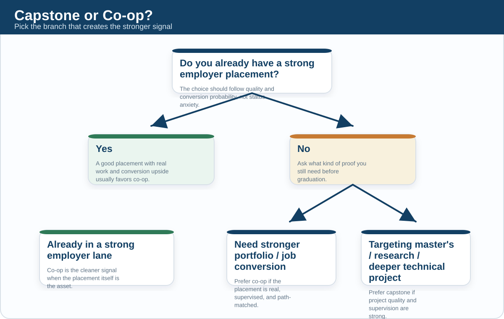
Year 4 Semester 2 is not a victory lap; it is a profile-patching semester
The curriculum structure leaves Year 4 Semester 2 with two Space and Geospatial Engineering electives, two general-education courses, and two free electives. Many students will be tempted to treat this as the easy landing zone after capstone or co-op. That would be a mistake. In a hybrid degree, the final elective choices are often where the student closes the last gap between transcript and employability.
KMITL's official Space and Geospatial Engineering page publicly lists three elective groups: Communication and Signal Processing; Navigation and Space Communication; and Space Engineering and Geospatial related. That is strategically useful because it allows the student to patch by direction. A hardware-leaning student can strengthen with Digital Systems Design on FPGA, Control Systems, Radar and Positioning Technology, or CNS technology for aviation. A GIS and imagery student can use Image Processing or Special Topics to sharpen analytical depth. A student worried about broader market safety can use Cybersecurity or Network Management to improve fallback strength. A student interested in regulation or policy-facing work can use Space Regulations and Law to build a rare narrative around governance and the Thai space ecosystem.
The right way to think about these electives is not "what sounds interesting?" but "what hole in my profile still needs to be closed before graduation?" Students who answer that question honestly use Semester 2 well. Students who do not often leave with a transcript that is broad but still slightly blurry.
8. Portfolio Strategy: How to Graduate With More Than a Transcript
The most important upper-year strategy is coherence. Students in hybrid degrees often graduate with many small disconnected activities: one map here, one coding assignment there, one lab report, one seminar certificate, one internship photo, one half-finished AI notebook, one hardware demonstration. That is not a portfolio. It is a pile. Employers do not want to sort the pile for the student.
The student should pick one dominant story and one backup story
The dominant story is the main identity the student wants to project. For most KMITL students, the strongest dominant stories are likely to be one of four types: GIS and geospatial analytics; GNSS and location intelligence; satcom and ground systems; or spatial AI and remote-sensing analytics. The backup story should be a safer adjacent path. For example, a satcom-leaning student should still be able to show enough GIS or data skill to survive a thin hardware market. A GIS-leaning student should still show enough engineering structure to avoid being dismissed as only a map user.
This is what the best students in hybrid programs do differently. They let the curriculum stay broad, but they make the portfolio narrow enough for employers to understand.
A strong Year 3 and Year 4 portfolio should usually contain four artifacts
- A spatial analysis artifact: for example a flood map, land-use classification, logistics optimization layer, PM2.5 exposure map, or Thai case-study dashboard.
- A code artifact: ideally Python, showing reproducibility, data handling, or geospatial or AI automation.
- A systems artifact: such as a link-budget brief, GNSS positioning analysis, ground-station concept, satellite communications study, or engineering design report.
- An industry-facing artifact: an internship summary, capstone poster, technical slide deck, or polished project brief written in language a Thai employer can understand quickly.
Thematic examples that fit Thai market realities
The student should choose themes that connect naturally to Thailand rather than copying generic global projects. Better examples include flood analysis for the Chao Phraya basin, PM2.5 mapping for Bangkok, crop-condition monitoring for sugarcane or rice areas, route and delivery intelligence for urban logistics, location planning for telecom infrastructure, GNSS performance under Bangkok urban canyons, or remote-sensing support for land verification and ESG reporting. These themes sound concrete because they are concrete. They also help employers imagine where the student would fit.
There is no rule that the portfolio must look flashy. It must look trustworthy. Clean data handling, explicit assumptions, Thai case context, concise documentation, and reproducible code are far more valuable than visual drama with weak engineering substance.
9. Deep Analysis: Do Year 3 and Year 4 Justify the Degree?
The upper-year design is where the degree has its best argument. If the early years were only math, circuits, and pain, the program would not be distinctive enough. The reason the earlier hardship can be defended is that the later years finally offer a coherent set of economically meaningful subjects and activities: GIS, GNSS, spatial AI, satcom, ground systems, laboratory work, industry seminars, industrial training, and a final decision between capstone and co-op.
Strongest argument for the upper-year design
The strongest case in favor is that the upper years create a rare hybrid platform in Thailand. A student can leave with GIS capability, location intelligence exposure, systems-engineering vocabulary, and at least some satcom or ground-system understanding. That is a stronger mix than many narrowly branded programs offer. It also matches the reality that Thai hiring is safer in downstream geospatial and infrastructure work than in pure spacecraft manufacturing. In other words, the upper years finally reveal why the program was designed this way.
KMITL's public ecosystem supports this case. Esri-backed photogrammetry exposure, GNSS and space-weather capability, industry-supported network labs, internship visibility with ZTE, industry visits, and system-engineering seminar activity all strengthen the argument that the upper years are plugged into something real rather than isolated classroom fantasy.
Strongest argument against the upper-year design
The strongest case against it is that the degree still leaves too much translation work to the student. The public pages prove ecosystem seriousness, but they do not prove that every student will leave with strong Python, mature GIS automation habits, STK fluency, ENVI fluency, or polished portfolio outputs. This means the curriculum can be excellent in structure and still produce uneven outcomes if students behave passively. In a more mature, more narrowly understood program, the average student may need less self-direction to become employable.
There is also a sequencing risk. Because capstone or co-op arrives in Year 4 Semester 1, students who postpone portfolio building until late Year 3 may already be behind. The degree rewards students who start acting like professionals before the final-year choice arrives.
Reasoned judgment
The reasoned judgment is that Year 3 and Year 4 are strong enough to justify the degree, but not strong enough to rescue a passive student. For an active student, the upper years can turn the KMITL program into a highly practical launchpad with a stronger hybrid identity than many Thai alternatives. For a passive student, the same upper years can produce a transcript full of impressive-sounding courses but too little proof of competence.
That is the central truth of the money-skills phase. The curriculum opens the door. The student still has to walk through it with tools, projects, and employer-readable evidence.
10. Chapter Takeaway
Year 3 and Year 4 are the part of KMITL's Space and Geospatial Engineering degree that can finally justify the struggle of the first half. The course titles, labs, seminars, and internship structure create a credible bridge to GIS, GNSS, spatial AI, satcom, and ground-system work. But the bridge is not self-operating. Students who actively build Python, GIS, and portfolio evidence can turn these years into real employability. Students who remain passive may graduate with an interesting degree and a weak market signal.
Sources
The detailed Year 3 and Year 4 course sequence analyzed in this chapter comes from the user-provided markdown curriculum in-thread. It was cross-checked against KMITL's official Space and Geospatial Engineering page, published electives, department labs, faculty research pages, and public event or internship posts. Tool-specific judgments are separated into direct evidence, curricular implication, and strategic recommendation so the chapter does not falsely claim that every software package is formally guaranteed by the program.
- KMITL Department of Telecommunications Engineering: Space and Geospatial Engineering program page
- KMITL Curriculum: Space and Geospatial Engineering major landing page
- KMITL Telecom Department: Labs with Industry
- KMITL Telecom Department: Advanced Labs
- KMITL Telecom Department: Fundamental Labs
- KMITL Telecom Department: Dr. Jirapoom Budtho faculty page
- KMITL Telecom Department: Esri-related collaboration post
- KMITL Telecom Department: ZTE Thailand internship post
- KMITL Telecom Department: CANSAT and innovation activity post
- KMITL Telecom Department: LEO satellites for 5G and Beyond 5G Communications seminar post
- KMITL Telecom Department: GISTDA lecture post
- KMITL Telecom Department: HOW TO System Engineer seminar summary
- KMITL Telecom Department: Thaicom visit post
Part 4
The Daily Reality of the Job
Chapters 8-9
Shows what hardware and geospatial-data work look like in practice, including work style, environments, routines, and hidden friction.
Chapter 8: Hardware Path
This chapter answers the fantasy-versus-reality question that many students avoid asking early enough: if you choose the hardware-oriented side of KMITL's Space and Geospatial Engineering degree, what will your working life actually look like? The focus here is on physical environments, daily tasks, physical and mental strain, and how much of Thailand's real hardware market sits in clean-room assembly versus RF labs, ground systems, testing, and satcom operations.
Executive Summary
The hardware path attached to KMITL's Space and Geospatial Engineering degree is real, but students should interpret it correctly. In Thailand, the hardware path is much more likely to mean RF systems, antennas, GNSS stations, ground segment work, satellite communications infrastructure, environmental testing, integration support, and telecom-adjacent engineering than a daily life spent building complete spacecraft inside a giant clean room. KMITL's public ecosystem reflects this clearly. The Department of Telecommunications Engineering openly lists an Earth-Space Communication and Technology Lab, an Antenna and Electromagnetic Application Research Lab, a Space Research Lab, an Excellence Center on GNSS and Space Weather, and industry-supported lab environments. Thaicom's public materials show operational demand around satellite gateways, teleport and ground-system technology, satellite operations, and 24/7 network operations support. GISTDA's public infrastructure pages show that Thailand now has real assembly, integration, vibration, thermal cycling, thermal vacuum, and clean-room capabilities. But those capabilities are narrow, specialized, and not the same thing as a large broad-based spacecraft manufacturing labor market.
The strongest argument for the hardware path is that it gives a graduate a harder technical shell. A student who can work with RF equipment, wiring, connectors, link budgets, test setups, ground systems, vibration campaigns, environmental qualification logic, and system documentation often becomes more technically credible than a student who stays entirely in software or mapping interfaces. The strongest argument against it is that Thailand's pure hardware absorption is limited and uneven. The work is also less cinematic than many applicants imagine. Long stretches of hardware life are spent debugging, measuring, calibrating, documenting, waiting for test slots, following contamination rules, or supporting operations rather than inventing spacecraft from scratch.
The correct judgment is that the hardware path is worth it only for a student who genuinely likes instrumentation, physical systems, and slow technical problem-solving. It is not a good path for someone who wants the prestige aura of hardware without the daily patience it requires. In Thailand, the best version of the hardware path is usually hybrid: enough hardware depth to be useful in satcom, ground systems, GNSS, and test engineering, while still retaining enough software, GIS, or data skill to survive a narrow market.
1. What the Hardware Path Actually Means in Thailand
Students often hear the phrase hardware path and immediately imagine spacecraft assembly, high-security facilities, white suits, and precision manufacturing lines. That picture is not entirely false, but it is misleading if treated as the default Thai outcome. In Thailand's current space and geospatial ecosystem, hardware work is concentrated much more heavily in a few specific domains: RF and antenna work, satellite communications infrastructure, GNSS and space-weather instrumentation, ground station and gateway systems, telecom hardware and network support, environmental qualification and testing, and some narrower spacecraft-component development or integration activities.
Thailand's hardware market is real, but it is not broad
This distinction matters. Thailand does have serious infrastructure. GISTDA's public Space Affairs Promotion and Services pages describe a National Satellite Development Excellent Center with clean rooms, shaker vibration capability, thermal cycling, thermal vacuum, and mass-property measurement. The same public material explains that the center is open to private and educational sectors in Thailand and ASEAN, which means the country now has real AIT infrastructure rather than only theoretical ambition. Thaicom's public materials show operational hardware-adjacent work through teleport and gateway design, satellite operations, ground system technology, and a first LEO gateway in Thailand with Globalstar at Thaicom Satellite Station in Pathum Thani. mu Space has been publicly reported as building factory infrastructure for satellite components and power systems. KMITL itself is visibly positioned closer to the RF and ground-segment side through its telecom-rooted labs.
But none of that automatically creates a deep hardware labor market. The market remains narrower than software, data, GIS, or even broader telecom. A student choosing hardware should therefore understand that they are moving toward a technically respectable but thinner path. That can still be the right choice. It just changes the risk profile.
KMITL's hardware path is telecom-space hardware, not aerospace-mechanics hardware
This is one of the most important framing points in the whole chapter. KMITL's host department is Telecommunications Engineering, and the department's public lab map makes its strengths visible. The Advanced Labs page lists the Earth-Space Communication and Technology Lab, the Antenna and Electromagnetic Application Research Lab, the Excellence Center on GNSS and Space Weather, the Space Research Lab, and other communications-oriented research spaces. That means the most natural hardware path from this degree is not aircraft structures or propulsion. It is instrumentation, RF, propagation, antennas, positioning infrastructure, communications systems, and the ground-segment side of space.
For the student, this is actually good news if interpreted correctly. Thailand has more realistic demand for these areas than for glamorous spacecraft-bus manufacturing. But it also means the student should not choose KMITL expecting the same hardware identity as a classical mechanical-aerospace program.
| Hardware sub-path | Where it exists in Thailand | How KMITL aligns | Market depth |
|---|---|---|---|
| RF, antenna, and propagation work | KMITL labs, telecom companies, satcom environments | Strong alignment through telecom department and lab structure | Moderate |
| GNSS and space-weather instrumentation | KMITL GNSS center, GISTDA, aviation and positioning projects | Strong alignment through faculty and rooftop GNSS infrastructure | Moderate but specialized |
| Ground stations, gateways, and teleport systems | Thaicom, NT, satcom operators, gateway projects | Good alignment through satcom and ground-system curriculum logic | Moderate |
| Satellite assembly and environmental testing | GISTDA AIT infrastructure, narrow private-sector manufacturing activity | Relevant but not the department's largest visible default track | Low to moderate |
| Classical spacecraft manufacturing | Narrow and project-dependent | Indirect alignment only | Low |
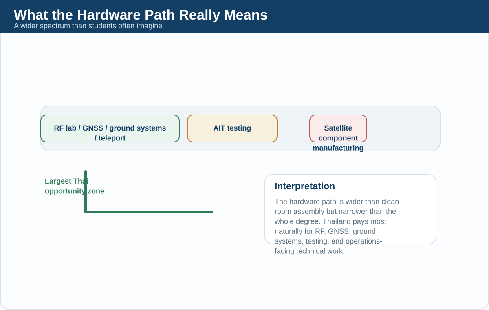
2. The Physical Environments: What the Student Should Picture
One reason students misjudge hardware careers is that they do not visualize the environments accurately. They imagine either a glamorous clean room or a generic office. Real hardware work is much more varied than that.
Clean rooms are real, but they are not the default daily setting
Thailand now has real clean-room and AIT infrastructure. GISTDA's public National Satellite Development Excellent Center page lists clean rooms in storage, loading, and integration areas, with clean-room classes 100 and 100,000 and temperature control around 22+/-3 degrees Celsius. That is real aerospace infrastructure. GISTDA also publicly describes vibration, thermal cycling, thermal vacuum, and mass-property capabilities at the same center. These are exactly the kinds of facilities that make hardware work feel serious and high stakes.
But students should not leap from "these facilities exist" to "this is where most graduates will work every day." Clean-room time is valuable, specialized, procedural, and often intermittent. Many engineers touch the clean room as part of integration, inspection, or controlled assembly campaigns rather than living there full-time year after year. For most Thai graduates, especially early in their careers, clean-room exposure is more likely to be project-linked than permanent.
RF labs and antenna benches are a much more realistic default
If a KMITL student follows the hardware path, a more realistic everyday environment is the RF lab or instrumentation bench. KMITL's department openly lists the Earth-Space Communication and Technology Lab and the Antenna and Electromagnetic Application Research Lab. These names matter because they imply exactly the kind of work students should expect: test equipment, bench setups, connectors, signal paths, interference concerns, calibration, antenna behavior, propagation questions, and a lot of debugging that is less visual than clean-room work but more common.
This environment is not glamorous in the cinematic sense, but it is highly educational. It teaches students to respect real signals rather than textbook signals. Cables degrade, connectors loosen, measurements drift, assumptions break, and electromagnetic behavior refuses to obey a student's emotional schedule. That is how hardware engineers become competent.
Testing environments are controlled, procedural, and slower than students expect
GISTDA's public satellite-testing pages are useful because they make the testing environment concrete rather than abstract. The agency describes vibration testing, thermal cycling, and thermal vacuum testing with explicit payload and temperature ranges. Those numbers matter because they show that hardware work often includes qualification logic, not just design logic. A component or subsystem is not valuable merely because it looks well designed. It has to survive vibration, temperature cycling, vacuum conditions, RF access requirements, and measurement procedures.
This means the testing environment is fundamentally procedural. There are mounting steps, sensor placements, documentation requirements, safety checks, environmental limits, and approval sequences. Students who like improvisation but dislike procedure often find this part of hardware work surprisingly frustrating.
Teleport, gateway, and operations sites are hardware too
One of the biggest conceptual mistakes students make is separating "hardware" from "operations." Thaicom's public materials show why that separation is wrong. The company publicly discusses satellite program management, launch service, satellite control, in-orbit and service operations, and teleport projects including communication gateway design and ground system technology. It also launched Thailand's first LEO satellite constellation gateway with Globalstar at its satellite station in Pathum Thani. These are hardware-adjacent or hardware-intensive environments even if they do not look like a semiconductor fab or a spacecraft clean room.
For many Thai students, this kind of site is actually the more realistic hardware destination: antennas outside, racks inside, operations screens, monitoring tools, maintenance planning, fault escalation, and a relationship between field hardware and network performance that is continuous rather than project-based.
3. What the Daily Work Actually Looks Like
The hardware path is often over-romanticized by people who have never watched a serious engineer spend three hours isolating a fault that turns out to be a connector, a grounding issue, a damaged cable, an environmental assumption, or a documentation mismatch. Daily hardware work is usually built from smaller actions than students imagine, but those actions have higher consequence than they expect.
Bench work is repetitive, methodical, and skill-building
In RF, antenna, electronics, or system-integration environments, a surprising amount of daily life happens at the bench. The engineer sets up equipment, checks calibration, reviews expected values, confirms power and signal paths, measures outputs, changes one variable at a time, documents observations, and repeats. This is not a sign that the job lacks sophistication. It is what sophistication looks like in physical systems. Real systems are not convinced by confidence. They are convinced by measured behavior.
Students who enjoy touching equipment, tracing fault chains, and using instruments to answer technical questions often find this satisfying. Students who need novelty every hour often do not.
Integration work is often about interfaces more than invention
One of the harshest but most useful truths about hardware careers is that engineers spend less time inventing isolated components from scratch than students imagine. Much more time is spent making interfaces work: payload to bus, antenna to feed, sensor to controller, cable to rack, board to housing, device to test fixture, subsystem to ground support equipment, and vendor specification to local implementation reality.
This is especially true in a Thai market where many systems are assembled from mixed-origin technologies, procured components, or externally defined standards. The graduate who likes interface discipline and can tolerate working within constraints has a much better hardware future than the student whose ego depends on always doing something visibly original.
Documentation is not a side task; it is part of the work
Students often underestimate this because university labs sometimes let them get away with minimal reporting. Professional hardware environments do not. Every serious hardware path involves some combination of test reports, setup logs, parameter tables, maintenance records, deviation notes, calibration references, or handover documentation. In satcom and operational environments, poor documentation can waste expensive time or create repeat faults.
This is one reason internship pages matter. Thaicom's internship page states that interns receive meaningful and challenging assignments with mentors from technical teams. That wording is useful because it suggests that even at the internship level, the company expects students to do more than observe. In a company like Thaicom, meaningful assignments are unlikely to be meaningful without documentation and disciplined technical communication.
Operations support and test support are real hardware careers
Another common student mistake is assuming that "real hardware" means only design or assembly. In practice, many early-career roles are support-heavy: RF test support, ground-station support, network hardware support, environmental test support, field deployment assistance, equipment monitoring, or junior systems engineering. These roles can sound less glamorous, but they are often the actual doorway into more advanced work. They teach the engineer how the system behaves when exposed to users, schedules, faults, weather, and real-world constraints.
For KMITL students, this matters because the department's telecom DNA naturally aligns with exactly these kinds of roles. A graduate may not walk directly into "satellite architect." They may begin closer to systems support, satcom operations, RF measurement, GNSS infrastructure work, or integration support. That is not failure. It is a normal hardware ramp.
| Environment | Typical daily tasks | Tools or equipment | Most common frustration |
|---|---|---|---|
| RF or antenna lab | Measurement setup, calibration, parameter checking, fault tracing | Spectrum analyzer, vector network analyzer, signal generator, cables, fixtures | Signal behavior does not match the clean theory |
| GNSS or rooftop instrumentation site | Receiver setup, data capture, alignment checks, environmental monitoring | GNSS receivers, antennas, timing references, logging tools | Data quality is affected by conditions outside the engineer's control |
| Teleport or gateway operations site | Monitoring, escalation, maintenance coordination, service checks | Operations consoles, racks, test ports, monitoring software, network tools | Hardware and operations problems are mixed together |
| AIT or environmental test center | Fixture preparation, test sequencing, instrumentation, reporting | Shaker systems, thermal chambers, thermal vacuum chamber, sensors | Test campaigns are slow and highly procedural |
| Component or electronics development bench | Assembly checks, debug loops, interface validation, design revisions | Oscilloscope, soldering tools, power supplies, firmware tools | Small faults consume large amounts of time |
4. Physical Workload Versus Mental Workload
Hardware work looks more physical than software work, but students often misunderstand the balance. The real burden is usually mental first and physical second, with the physical component arriving through environment, repetition, and procedural discipline rather than heavy manual labor.
The physical load is real, but it is usually controlled rather than athletic
In clean-room or test environments, the physical strain often comes from standing for long periods, wearing PPE, moving carefully around sensitive equipment, following contamination rules, and maintaining concentration under procedural constraints. In RF and field environments, it may come from moving equipment, routing cables, climbing access points, working in heat, or spending time in equipment rooms and rooftop setups. In operations sites, it may come from shifts, alert fatigue, and sustained vigilance rather than muscular effort.
This means students should not imagine hardware work as either sedentary office life or dramatic industrial labor. It usually sits in the middle. The engineer may not be carrying heavy loads all day, but they are also not free to drift between coffee and code the way some remote software roles allow.
The mental load is dominated by consequence and ambiguity
The real stress in hardware work comes from consequence. When physical systems fail, the failure is rarely elegant. The engineer may have incomplete visibility into what is wrong, yet the cost of being careless is high: wasted test time, damaged equipment, a missed maintenance window, a false diagnosis, or an operations disruption. This creates a form of stress that many students have not experienced yet. It is not merely "hard homework." It is technical responsibility under imperfect information.
This is why hardware engineers often appear calmer than they feel. The work rewards deliberate thinking, not emotional volume. A student who enjoys solving pressure through method will adapt better than a student who panics when the correct answer is not immediately visible.
The ratio changes by sub-path
A clean-room or AIT path tends to be procedure-heavy and mentally exacting, with moderate physical discomfort. An RF path is often mentally dense because measurements, matching, and signal behavior can be stubbornly unintuitive. A teleport or gateway path may carry more operational urgency because it involves service continuity, alarms, and monitoring. An electronics bench path may produce the most debugging frustration per hour because the problems can be tiny and persistent.
Students should therefore stop asking whether hardware is "harder" than software in the abstract. The better question is whether they prefer stress that comes from physical systems, instrumentation, uncertainty, and procedure rather than stress that comes from open-ended coding and information overload.
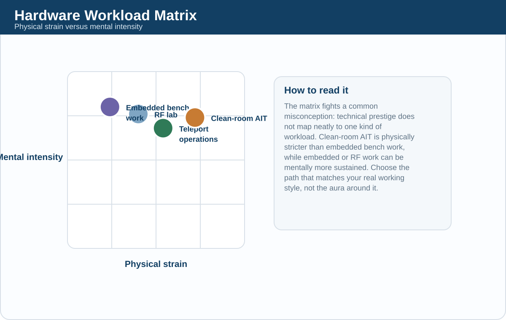
5. Clean Rooms, RF Labs, and Testing Campaigns: Reality Versus Expectation
This section is where student fantasies need the most correction. The hardware path is not fake. But the way students imagine the work is often wrong.
Expectation: clean rooms are the center of the career
Reality: clean rooms are usually one specialized part of a larger system life cycle. GISTDA's clean-room and test infrastructure is real, impressive, and strategically important. It is exactly the kind of national capability Thailand needs. But even there, hardware careers do not consist of standing inside a clean room all day every day doing visually dramatic assembly. Much of the surrounding work happens outside the clean room: planning, interface checks, configuration control, instrumentation, analysis, documentation, scheduling, and post-test interpretation.
Expectation: hardware means building things from scratch
Reality: much of the work is support, integration, verification, modification, maintenance, or operations. In Thailand especially, the engineer is often working around imported systems, mixed vendors, limited test slots, specific customer requirements, and long procurement cycles. Original design still exists, but it is not the only source of value. A student who thinks support or integration work is beneath them will struggle to build a career.
Expectation: the physical environment is the exciting part
Reality: the physical environment is only one layer. The harder part is the discipline the environment imposes. Clean-room rules, ESD discipline, controlled test procedures, cable management, connector care, fixture alignment, calibration, and documentation are not secondary details. They are the work. Students who crave the aesthetics of serious hardware but dislike serious discipline are choosing the wrong path.
Expectation: hardware engineers spend less time on computers
Reality: hardware engineers often spend enormous amounts of time on screens. They read manuals, inspect plots, compare measurements, prepare reports, review logs, configure instruments, check network dashboards, and document results. Physical systems do not remove computer work. They add physical context to computer work.
The decision lesson is simple: the hardware path is best for students who like controlled environments, instrumentation, documentation, and slow technical certainty. It is a poor fit for students who only like the symbolic prestige of touching "real hardware."
6. Which Employers and Roles Actually Fit the Hardware Path
The hardware path becomes much easier to judge once students attach it to real employers instead of abstract sectors. In Thailand, hardware-leaning graduates from KMITL's Space and Geospatial Engineering program are most plausibly translated into a small set of environments.
Thaicom and satcom-ground segment environments
Thaicom is one of the clearest examples because its public materials make the operational side visible. The company publicly describes satellite program management, launch service, satellite control, in-orbit operations, communication gateway design, ground-system technology, and satellite operations. Its satellite distribution page also highlights 24/7 NOC support. In practical employment terms, this points toward roles such as satellite operations engineer, satellite communications engineer, ground systems support engineer, gateway engineer, teleport engineer, or junior systems engineer. These roles are hardware-adjacent even when they involve as much monitoring and procedure as physical manipulation.
The direction of travel also still matters. Thaicom's public announcements around its Globalstar gateway and, more recently, its April 6, 2026 agreement to distribute Amazon Leo services in Thailand show that the Thai satcom-ground segment is not only a legacy GEO story. It is increasingly a mixed GEO-LEO infrastructure story. For a student, that means hardware relevance is shifting toward gateways, terminals, integration, service operations, and hybrid network support rather than disappearing.
KMITL students are also not starting from nowhere here. The department publicly posted a faculty visit to Thaicom focused on satellite technology, laboratories, and communications equipment, which strengthens the logic that Thaicom is part of the department's real reference ecosystem.
GISTDA and state-linked technical infrastructure
GISTDA matters because it sits at the intersection of space ambition, public-sector mission, and real infrastructure. Its National Satellite Development Excellent Center and AIT capabilities make it a natural target for students who want testing, integration, national satellite projects, or engineering support linked to Thai Earth-observation programs. The challenge is that these roles are limited in number and often more selective than students expect. The advantage is that they are among the few pathways where a Thai student can credibly get close to satellite hardware qualification and integration without leaving the country.
Telecom and network hardware environments
Some students will follow the hardware path and then discover that their most realistic first job is not in a "space company" at all. It may be in telecom infrastructure, network hardware, RF optimization, mobile-network equipment environments, or communications systems support. KMITL's public lab ecosystem already points toward this through its Huawei-supported Computer Network Lab and ZTE-supported Mobile Network Lab. The department also publicized a 2025 ZTE internship program for KMITL students. For a hardware-leaning graduate, these pathways are not a compromise. They are one of the most practical ways to monetize the telecom side of the degree while remaining adjacent to satcom or systems work later.
Narrow private-space manufacturing and component paths
The private manufacturing path exists, but it is the narrowest and most volatile part of the hardware route. mu Space is the most obvious Thai example in the public narrative, with public reporting on a dedicated aerospace manufacturing facility and satellite-component ambitions. But this should be read as proof that the path exists, not proof that it is broad or stable. A student who wants this route should assume high competition, narrow openings, and the need for unusually strong evidence in electronics, testing, systems, or component-level work.
| Employer type | Real job titles | What the work likely involves | How well KMITL hardware training fits |
|---|---|---|---|
| Satellite operator / teleport company | Satellite Operations Engineer, Ground Systems Engineer, Gateway Engineer | Monitoring, support, testing, ground systems, service continuity, satcom troubleshooting | High fit for telecom-space hardware path |
| Public technical space agency | AIT/Test Engineer, Satellite Integration Engineer, Payload Support Engineer | Testing, integration, instrumentation, procedure, documentation | Moderate to high fit, but with limited seat count |
| Telecom infrastructure company | RF Engineer, Network Engineer, Systems Support Engineer | Equipment support, RF analysis, operations, implementation | High fit and stronger fallback safety |
| Private satellite or component venture | Electronics Engineer, Test Engineer, Integration Engineer | Subsystem work, qualification support, component validation | Fit depends on unusually strong proof of technical depth |
7. The Hidden Risks of Choosing the Hardware Path
The hardware path carries prestige, but it also carries several hidden risks that students rarely price in correctly.
Risk 1: the market is thinner than the work looks
The existence of clean rooms, gateways, labs, and satellite programs can create the illusion of a large hiring base. That is false. Thailand's hardware ecosystem is meaningful, but it is still narrow enough that students cannot assume broad absorption the way a computer science student might assume broader software demand. This means competition matters more and portfolio quality matters earlier.
Risk 2: hardware cycles are slow
Software students can often produce visible output weekly. Hardware students may spend much longer on setup, waiting, verification, vendor issues, procurement delays, or approval sequences. This can be psychologically difficult because the student may feel they are working hard without producing portfolio-ready artifacts at the same speed. The answer is not to abandon hardware. The answer is to document the work intelligently so that slower cycles still produce visible evidence.
Risk 3: one-dimensional hardware students can become fragile
In Thailand, the safest hardware graduate is usually not a pure hardware purist. They are someone with enough software, scripting, data handling, or GIS awareness to function when the pure hardware path narrows. A student who refuses all software because they want to be "real hardware" is making a strategic mistake. Hardware plus Python, hardware plus GIS, or hardware plus data logging is a much safer combination than hardware alone.
Risk 4: the work can be less emotionally rewarding than the idea of it
This is a fit risk rather than a market risk. Some students love the identity of hardware more than the process of hardware. They enjoy saying they work with satellites or RF systems, but they do not enjoy calibration, logs, repeated tests, ESD discipline, configuration control, or patient fault isolation. These students often become disillusioned after the romance layer fades.
8. Deep Analysis: Who Should Actually Choose the Hardware Path
The hardware path from KMITL is not for everyone, and saying that clearly is a service to the student, not an insult.
The best-fit student
The best-fit student enjoys physical systems enough to tolerate slow progress. They like instrumentation, real measurements, signal behavior, devices, and constrained environments. They do not need instant visible output every day to feel productive. They also understand that in Thailand the strongest hardware careers are often hybrid careers: satcom plus operations, RF plus measurement, GNSS plus data, ground systems plus software support, or testing plus documentation.
This student also has the right psychological profile. They can remain calm while debugging. They do not get offended by procedure. They can accept that careful support work is sometimes more valuable than flashy invention. They are willing to build enough software or data skill to stay employable.
The wrong-fit student
The wrong-fit student is usually not unintelligent. They are mismatched. They want the prestige of hard tech but prefer fast, flexible, digital-only work. They dislike repetition, instrumentation, and procedural environments. They become impatient when a fault takes hours to isolate. Or they want a wide labor market immediately and are uncomfortable with narrow, equipment-heavy roles. For this student, the data or GIS path is often a better decision because it rewards a different work temperament and offers broader fallback options.
Strongest argument for the hardware path
The strongest case in favor is that it produces a harder technical identity. Students who come through KMITL's telecom-space hardware corridor and can genuinely operate in RF labs, ground systems, GNSS environments, or test campaigns often become difficult to fake and difficult to replace. Their competence is physically grounded. In interviews, this can create more credibility than purely theoretical coursework.
Strongest argument against the hardware path
The strongest case against it is that the market is narrow enough that many students would be taking extra risk for an identity they do not even truly enjoy. If a student mainly wants employability and flexibility, then the GIS-data path is usually safer in Thailand. The hardware route should therefore be chosen from genuine fit, not from prestige anxiety.
Reasoned judgment
The correct recommendation is conditional. Choose the hardware path if the student truly likes instrumentation, RF, ground systems, physical devices, and patient debugging, and if they are willing to remain hybrid enough to survive a narrow market. Avoid it if the student wants the image of serious engineering more than the repetitive, procedural, consequence-heavy daily life that serious engineering actually requires.
9. Chapter Takeaway
The hardware path attached to KMITL's Space and Geospatial Engineering degree is serious, credible, and narrower than many applicants think. In Thailand, it points most naturally toward RF labs, satcom and teleport operations, GNSS infrastructure, ground systems, and testing environments, with clean-room and component-manufacturing exposure as a smaller, more selective layer. It is a strong path for students who truly enjoy physical systems and disciplined technical work. It is a weak path for students who want hardware only as an identity signal.
Sources
This chapter relies primarily on official KMITL, GISTDA, and Thaicom sources to define real Thai hardware environments. Where private-sector manufacturing examples are used, they are labeled through public reporting and treated cautiously as ecosystem signals rather than broad labor-market guarantees.
- KMITL Department of Telecommunications Engineering: Advanced Labs
- KMITL Department of Telecommunications Engineering: Labs with Industry
- KMITL Telecom Department: Thaicom visit post
- KMITL Telecom Department: ZTE Thailand internship post
- KMITL Telecom Department: Dr. Jirapoom Budtho faculty page
- KMITL Department of Telecommunications Engineering: About
- GISTDA: National Satellite Development Excellent Center
- GISTDA: Satellite testing service details
- GISTDA: THEOS Constellation and National Satellite AIT Center update
- Thaicom: LEO gateway launch with Globalstar
- Thaicom: Satellite distribution and 24/7 NOC support page
- Thaicom: Internship page
- Thaicom: next-generation software-defined HTS procurement announcement
- Thaicom: April 6, 2026 Amazon Leo agreement
- Grow Your Business / public summary of mu Space satellite manufacturing facility
- Satellite Today: mu Space ground-station collaboration update
Chapter 9: Data/GIS Path
This chapter examines the working life most students will actually encounter if they lean toward the geospatial-data side of KMITL's Space and Geospatial Engineering degree. The focus is on office and hybrid reality, Python and machine-learning workflows, GIS pipelines, stakeholder communication, and the real flexibility of this path in Thailand.
Executive Summary
The data/GIS path is the safest and most immediately employable side of KMITL's Space and Geospatial Engineering degree, but students should understand what that safety actually looks like. It is not usually a dreamy fully remote career spent making beautiful maps in isolation. Current Thai market signals suggest something more grounded: full-time roles in Bangkok or nearby, often on-site or hybrid, involving spatial data processing, remote-sensing interpretation, dashboards, field-linked validation, client coordination, and increasingly Python-based automation. A recent Thaicom geospatial job posting explicitly asked for Python, machine learning, GeoPandas, Rasterio, Google Earth Engine, and GIS software such as QGIS or ArcGIS, while describing the role as full-time and on-site in Bangkok. Current Jobsdb snapshots also show GIS roles that are hybrid, such as CDG Group's GIS Business Support position, as well as roles that are clearly field-linked, such as Nila Solutions' Assistant GIS Engineer position requiring GIS/GNSS, ArcGIS, QGIS, Pix4D, and fieldwork readiness.
The strongest argument for this path is that it matches how the Thai market is actually modernizing. GISTDA now runs the National Space Data Platform with imagery, APIs, sandbox functions, and use cases; Esri Thailand openly markets ArcGIS Online, Cloud GIS, GeoAI, Imagery and Remote Sensing, managed cloud services, and professional consulting; and private-sector employers are clearly looking for people who can bridge imagery, GIS, Python, and business workflows. This means the data/GIS path is not merely safer than hardware. It is closer to the center of real operational demand.
The strongest argument against the path is that students can underestimate how office-heavy, stakeholder-heavy, and workflow-heavy it is. Much of the job is not heroic modeling. It is cleaning data, fixing CRS mismatches, automating repetitive steps, validating outputs, making dashboards legible to nontechnical teams, and turning imperfect spatial information into decisions someone will actually use. The correct judgment is that the data/GIS path is excellent for students who like structured problem-solving, software tools, and applied analysis, and who are comfortable living between technical detail and business or public-sector communication. It is less ideal for students who want pure coding isolation or pure scientific research without operational pressure.
1. What the Data/GIS Path Actually Is
Students often describe the data/GIS path too vaguely. They say they want to "work with maps," "do remote sensing," or "use satellite data." Those phrases are not wrong, but they are too soft to help with a university decision. The real path is more specific. It is a workflow profession built around geospatial data ingestion, cleaning, transformation, analysis, visualization, automation, delivery, and communication.
This is not only a map-making path
Map-making is visible, but it is not the whole job. A modern geospatial analyst or GIS engineer is often doing at least one of the following: integrating spatial and nonspatial data, managing geodatabases, processing imagery, extracting features from satellite or drone datasets, building web maps, writing Python to automate geoprocessing, packaging dashboards for decision-makers, or working with cloud services and APIs. Esri Thailand's public pages make this explicit. ArcGIS Online is described as a cloud GIS environment for mapping, analysis, sharing, apps, and dashboards. ArcGIS Platform is positioned as PaaS for developers building location-enabled apps. Cloud GIS pages emphasize web services, app development, and cloud deployment. GeoAI pages emphasize automated extraction, classification, predictive analysis, and spatial problem-solving.
That is the real shape of the job: maps plus systems, analysis plus delivery, spatial reasoning plus software operations.
The Thai version of this path is highly practical
The Thai labor market tends to reward geospatial work when it solves a clear operational problem. GISTDA's public positioning is instructive here. The agency explicitly frames itself as an organization providing value from space and geospatial technology to society, with geoinformatics data services, research, and public applications. Its National Space Data Platform offers image data, space data, APIs, sandbox tools, and use cases rather than only academic content. That is a practical service architecture. It implies that real work on this path often involves platforms, products, and applied workflows rather than isolated scientific curiosity.
This is why the data/GIS path is safer than many students think. Thailand does not need huge numbers of spacecraft builders to create demand for geospatial analysts, GIS engineers, or location-intelligence staff. It needs people who can turn location data into useful operations across disaster management, utilities, agriculture, infrastructure, logistics, sales intelligence, ESG, and planning.
KMITL fits this path better than many students realize
Students sometimes assume KMITL's telecom identity makes it weaker for data/GIS work. That is only partly true. It may not be the purest survey-geomatics tradition in Thailand, but KMITL's combination of remote sensing, GIS, GNSS, photogrammetry, spatial AI, ground systems, and programming can produce a geospatial graduate who understands both data and infrastructure. In Thailand, that hybrid can be commercially valuable because many real geospatial systems are inseparable from satellites, sensors, location services, and networks.
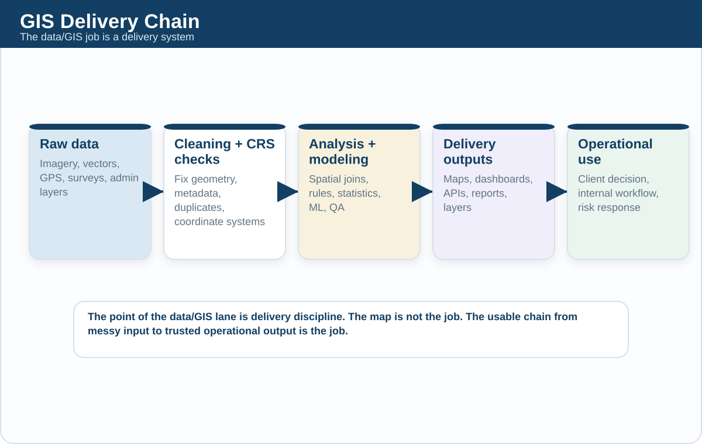
2. Office, Hybrid, and Remote Reality
The data/GIS path is more flexible than the hardware path, but students should not exaggerate that flexibility. The current Thai signal, as of April 12, 2026, looks more like full-time office or hybrid work than full remote freedom.
Current Thai job signals skew on-site or hybrid
The clearest current signal comes from visible jobs. A recent Thaicom LinkedIn posting for "Geospatial Data Analyst (Python & Machine Learning)" described the job as a full-time, on-site role based in Bangkok. Current Jobsdb snapshots for ArcGIS- and GIS-related searches show hybrid and on-site roles, including CDG Group's "GIS Business Support" role in Bangkok marked hybrid and Nila Solutions' "Data analyst (Assistant GIS Engineer)" role in Phaya Thai, Bangkok marked full-time and clearly field-linked. The Jobsdb ArcGIS search interface also explicitly offers on-site, hybrid, and remote refinements, but the visible Thai geospatial listings reviewed for this chapter skewed much more strongly toward on-site or hybrid than toward fully remote analytical work.
This does not mean remote work is impossible. It means that the mainstream Thai market does not currently behave like a pure work-from-anywhere geospatial economy.
Why this path is not fully remote by default
The reason is structural. Geospatial work usually depends on internal data, licensed systems, coordination with operations teams, public-sector approvals, or field truthing. Even when the analysis itself could technically be done from home, the workflow around it often cannot. A GIS engineer supporting utility data, an analyst working with satellite imagery for a geospatial product team, or a consultant preparing deliverables for a government client is often tied to shared systems, meetings, QA procedures, or in-person stakeholder review.
Field-linked roles reduce flexibility even further. Nila Solutions' current GIS-related job signal explicitly mentions UAV imagery, GIS/GNSS, Pix4D proficiency, and fieldwork readiness. That is a good example of why students should not confuse "data path" with "never leaves the desk." Many GIS roles still touch the field indirectly or directly.
Where flexibility actually appears
The data/GIS path becomes more flexible under certain conditions. First, later-career specialists who already have trust and process maturity may negotiate hybrid arrangements more easily than fresh graduates. Second, implementation or consulting roles inside organizations that already use cloud GIS, web dashboards, and shared services may support a partial remote model. Esri Thailand's public Cloud GIS and ArcGIS Online materials make this technically plausible because they emphasize secure cloud access, device flexibility, web services, and app sharing. Third, freelancers and independent consultants can sometimes work remotely for parts of the workflow, especially on map production, Python scripting, dashboard configuration, or data cleaning. But those options are usually not the default first job.
| Work style | How common it appears in current Thai signals | What usually enables it | Main limitation |
|---|---|---|---|
| On-site | High | Access to internal systems, cross-team coordination, field or operations linkage | Lower day-to-day flexibility |
| Hybrid | Moderate | Cloud tools, mature processes, employer trust, business-support orientation | Still tied to meetings, deadlines, and office coordination |
| Fully remote | Low in visible Thai mainstream listings reviewed | Freelance work, later-career consulting, international contracting, mature product teams | Harder for fresh graduates to enter directly |
The practical implication is that a student should choose the data/GIS path because they like the work itself, not because they assume it guarantees Silicon Valley style remote freedom. The flexibility is real, but it is earned and uneven.
3. Python and ML Workflows: What the Daily Analytics Stack Really Looks Like
The data/GIS path is now much more computational than many students imagine. The Thai market signal is explicit enough that this report does not need to guess. Thaicom's recent geospatial analyst posting asked for Python, machine learning, GeoPandas, Rasterio, Google Earth Engine, and GIS software such as QGIS or ArcGIS. That is already a meaningful workflow snapshot.
Python is the backbone, not a bonus
Python matters because geospatial work becomes much more valuable when it stops being manual. Manual clicking is fine for learning. It is weak as a professional identity. Python lets the analyst automate repetitive geoprocessing, clean spatial data, batch imagery tasks, link APIs, run reproducible analyses, and bridge GIS with machine learning. In practical job terms, Python is what turns a student from "can use software" into "can build and maintain workflows."
This is especially important in Thailand because many employers are not hiring large specialist teams. They want one person who can do several adjacent things well enough: work with GIS software, handle Python, read satellite or drone data, prepare a dashboard, and explain a result. The data/GIS path rewards that kind of hybrid competence.
Machine learning in geospatial work is usually applied, not abstract
Students often imagine geospatial ML as a glamorous deep-tech path. In most real roles, it is more applied. The analyst is classifying imagery, detecting objects, estimating change, predicting spatial risk, or improving an operational workflow. Esri Thailand's GeoAI page is useful here because it frames GeoAI through extraction, classification, predictive analysis, and domain-specific use cases such as state and local government, natural resources, national mapping, public safety, insurance, AEC, and business. This matches how Thai employers are likely to consume geospatial AI: not as AI theater, but as a faster way to derive useful spatial signals.
The danger for students is shallow ML. If the student only knows model vocabulary without owning the pipeline from data preparation to evaluation to delivery, they are not yet useful in a real team.
Typical upper-end workflow pattern
A realistic applied workflow might look like this. The analyst acquires imagery or vector data from GISTDA's NSDC, a drone campaign, or an employer dataset. They clean and standardize it, confirm projection and metadata, use Python libraries such as GeoPandas and Rasterio or cloud tools such as Google Earth Engine, generate features or labels, run classification or detection logic, validate the outputs, then publish the results into ArcGIS Online, an internal dashboard, or a report. That final step matters. The workflow is not complete when the model runs. It is complete when the result becomes decision-ready.
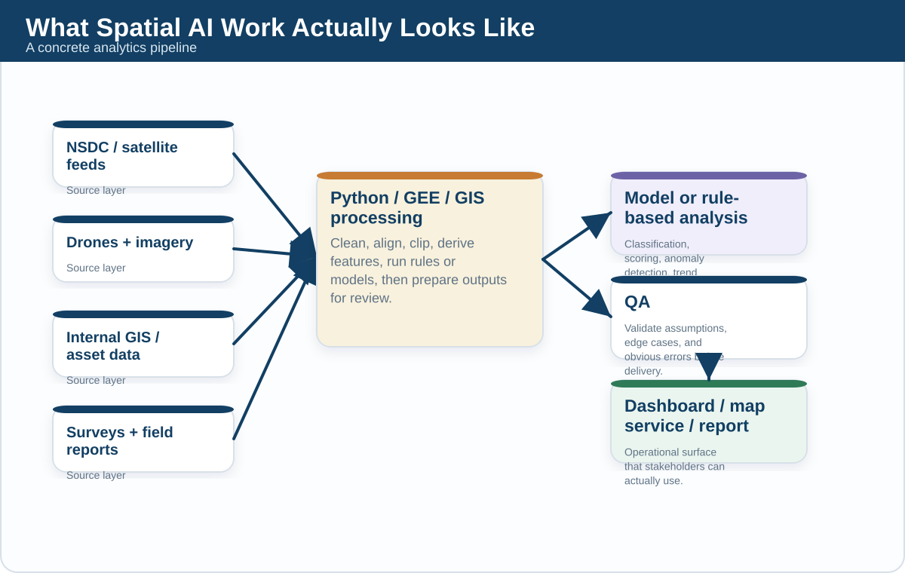
4. GIS Pipelines: The Real Work Is in the Middle
If hardware work is often misimagined as clean rooms, data/GIS work is often misimagined as final maps. In reality, the hardest and least glamorous part of the path sits in the middle of the pipeline.
Data ingestion and cleaning consume more time than students expect
Real geospatial data arrives messy. Coordinate systems conflict. Field names are inconsistent. Raster tiles have gaps or unclear acquisition timing. Administrative boundaries do not match business areas. Geometry can be broken. Survey data may lack metadata. Even when the source is high quality, the integration problem remains. This is why GIS roles are as much about data hygiene as about visualization.
Esri Thailand's Data Collection and Management positioning is revealing because it emphasizes collecting, crowdsourcing, storing, accessing, sharing, and integrating data from business systems. That language is important. It confirms that modern GIS work is not only about analysis after data is ready. It includes building and maintaining the conditions under which analysis is even possible.
Pipeline work is where the engineer mindset matters
This is one place where KMITL's engineering identity can become a real advantage. A student trained to think systematically about inputs, transformations, errors, and outputs may do better in pipeline-heavy GIS work than a student who learned only cartographic or software-interface habits. Pipeline work rewards repeatability. It rewards people who can ask: where did this layer come from, what assumptions does it embed, how do we rerun it, and what breaks if a data source changes?
That is the real logic behind GIS engineering. It is not just GIS plus an engineering title. It is GIS approached as a system.
Dashboards and web delivery are not cosmetic
ArcGIS Online and ArcGIS Platform matter because they make the delivery layer visible. A large amount of Thai geospatial value is not extracted at the moment of analysis but at the moment of distribution: a dashboard used by a manager, a layer consumed by an operations team, a web map used by a planner, or a service endpoint used by another application. Students who can only analyze locally but cannot publish, package, or operationalize results are stopping halfway through the real job.
This is one reason the data/GIS path is often stakeholder-heavy. Someone has to make the output usable, not merely correct. That is where many strong technical students become weaker than they should be, because they do not enjoy shaping deliverables for actual users.
| Pipeline stage | Typical tasks | Common tools | Main failure mode |
|---|---|---|---|
| Data acquisition | Pull imagery, vector data, APIs, field surveys, drone outputs | NSDC, ArcGIS, QGIS, APIs, cloud storage | Bad source assumptions or incomplete metadata |
| Cleaning and standardization | Fix CRS, schemas, geometry, timestamps, naming | Python, GeoPandas, Rasterio, QGIS, ArcGIS geoprocessing | Silent errors that corrupt later outputs |
| Analysis and modeling | Spatial joins, overlays, classification, interpolation, ML tasks | Python, GEE, ArcGIS Pro, GeoAI tools, notebooks | Weak validation or overconfidence in model outputs |
| Publishing and delivery | Maps, dashboards, feature services, reports, app integration | ArcGIS Online, ArcGIS Platform, web tools, BI or dashboard layers | Outputs are technically correct but not operationally usable |
| Maintenance | Update data, rerun scripts, fix broken dependencies, support users | Version control, scripts, cloud services, shared geodatabases | Pipeline degrades because no one owns repeatability |
5. Work Style: Quiet Analysis, Constant Coordination
Students often choose the data/GIS path because they imagine a calmer life than hardware. That is partly true. The path is generally cleaner, more office-friendly, and less physically constrained. But it is not socially quiet in the way many introverted students imagine.
The day often alternates between solo work and stakeholder translation
A GIS or geospatial analyst may spend the morning cleaning data, writing scripts, or checking imagery outputs, then spend the afternoon in meetings translating the work for managers, planners, clients, business teams, or operations staff. This pattern exists because geospatial output is usually consumed by someone who did not create it. The analyst is therefore not paid only to think spatially. They are paid to make spatial thinking useful to others.
This is one reason Esri consulting and technical-service roles are informative even when they are not Thai listings. Esri's imagery and remote-sensing consulting roles are framed around design, implementation, customer support, and working closely with users. That style of work is very close to how many Thai enterprise and public-sector GIS roles operate in practice.
The path is usually less physically tiring but more interruption-heavy
Compared with hardware, the data/GIS path usually reduces physical strain. There are fewer controlled environments, fewer equipment constraints, and less procedural fatigue from physical systems. But the trade-off is more interruption. Analysts may be pulled into requests for "quick maps," dashboard changes, data explanations, ad hoc layers, boundary corrections, management presentations, or client clarifications. The work can therefore feel intellectually fragmented even when it is physically comfortable.
Flexibility depends on whether the team trusts your process
One underappreciated theme in this path is trust. Managers are far more willing to grant flexibility to analysts whose workflows are documented, reproducible, and easy to hand over. If an analyst keeps everything in messy local files and undocumented scripts, remote or hybrid arrangements become harder because the team cannot see or reuse the work cleanly. If the analyst uses shared services, versioned scripts, clear naming, and clean outputs, flexibility rises.
This means lifestyle in this path is not determined only by company policy. It is also determined by technical maturity.
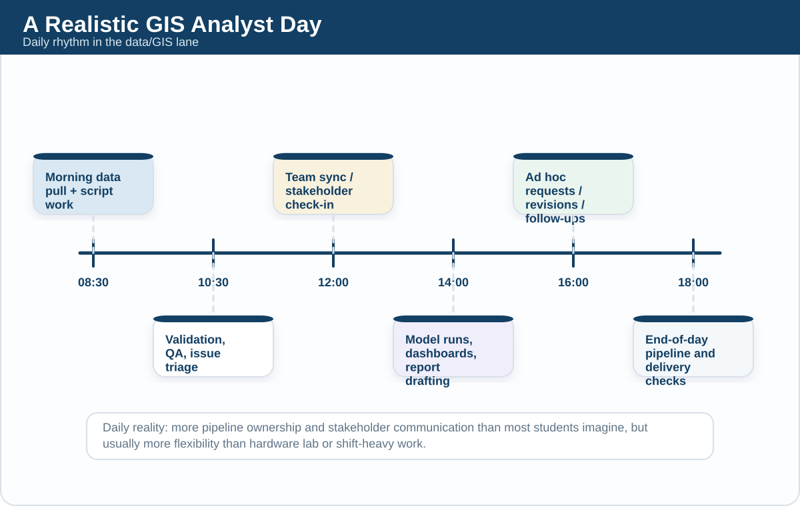
6. Fieldwork, Drones, and the Myth of the Pure Desk Job
Students often divide career options too sharply: hardware equals field or lab, while GIS equals desk. That is wrong. The data/GIS path is more desk-centered overall, but it still contains field-linked work.
Field validation remains part of many real roles
Nila Solutions' current GIS-related job signal is useful here because it explicitly connects GIS processing, UAV imagery, mapping, GIS/GNSS skills, ArcGIS, QGIS, Pix4D, and fieldwork readiness. That is a very concrete example of a Thai geospatial role where the analyst is not simply sitting in an office drawing polygons. The role sits between data, imagery, and field conditions.
This pattern appears in many sectors. Agriculture, utilities, infrastructure, urban planning, environmental assessment, and drone services often require analysts to confirm what the data means on the ground. Sometimes that means the analyst goes to site. Sometimes it means coordinating with field teams and then integrating the field feedback into the pipeline. Either way, the job remains tied to real terrain.
This is usually good for employability
Students should not fear this. Field-linked GIS work is often more employable because it produces a graduate who understands both data and context. In interviews, a student who can say "I processed UAV imagery, validated the output against field reality, and then delivered the map in a usable format" sounds much stronger than a student who only says "I used GIS software in class."
The real question is not whether fieldwork exists, but how much
Most data/GIS students will not be doing constant fieldwork. The better mental model is that the path ranges from desk-heavy analytics to mixed desk-and-field implementation, depending on sector. Enterprise GIS, SaaS, and dashboard-heavy roles skew more desk-based. Drone, survey-adjacent, utility, and infrastructure roles skew more mixed. The student should decide which side they prefer before building a portfolio.
7. Same Stack, Different Sectors: Why the Daily Rhythm Changes So Much
One reason the data/GIS path confuses students is that the same core tools can support very different lives. Python, ArcGIS, QGIS, remote sensing, dashboards, and spatial analysis appear across sectors, but the daily rhythm changes depending on who is paying for the work.
Consulting and impact-assessment work
Consulting-heavy roles, such as the current Bangkok GIS consulting openings visible at ERM, often combine map production, environmental and social data interpretation, remote-sensing support, and client-facing delivery. This kind of work is usually deadline-driven, documentation-heavy, and presentation-heavy. The analyst may touch many projects quickly, but the trade-off is less control over pace and more exposure to revisions.
Telecom-space and product work
Thaicom's current public geospatial analyst posting shows a different rhythm. The role combines satellite data, machine learning, remote sensing, product or platform thinking, and cross-functional work with engineers and domain experts. Compared with consulting, this kind of role may feel more product-oriented and technically iterative. Compared with pure data science, it is still heavily constrained by real geospatial use cases and organizational objectives.
Enterprise GIS and business-support roles
Jobsdb snapshots also show roles like CDG Group's hybrid GIS Business Support position. This points toward an enterprise-delivery style of work where the analyst helps coordinate GIS solutions, AI-agriculture initiatives, retail use cases, or implementation workflows. These roles are often less research-like and more operational. The student spends more time aligning teams, documentation, and implementation steps than building novel models from scratch.
Sector-specific operational roles
The broadest Jobsdb snapshots are especially instructive because they show GIS surfacing in places students may not expect: retail expansion at Lotus's, rubber-related GIS support at Southland Rubber, environmental engineering support at SVL, conservation-adjacent field support, and GNSS or photogrammetry-related support engineering. That means the data/GIS path does not feed one employer archetype. It feeds many. The student therefore needs to choose not only a tool stack but also a problem environment: environmental, commercial, agricultural, infrastructure, or platform-based.
| Sector style | Typical daily emphasis | Best-fit personality | Most likely pain point |
|---|---|---|---|
| Consulting / impact assessment | Maps, reports, deadlines, client revisions, cross-project work | Students who can switch context fast and communicate clearly | Revision pressure and fragmented attention |
| Telecom-space product or analytics | Python, remote sensing, platform thinking, cross-functional delivery | Students who enjoy building and iterating with engineers | Technical ambiguity and faster learning demands |
| Enterprise GIS support | Implementation, dashboards, team coordination, internal services | Students who like operational usefulness and stable business systems | Can feel less glamorous than advanced analytics |
| Field-linked sector GIS | UAV data, GNSS, mapping, validation, mixed office and field rhythm | Students who want real-world context without going full hardware | Travel, site constraints, and inconsistent data quality |
8. The Hidden Risks of the Data/GIS Path
The data/GIS path is safer than the hardware path in Thailand, but "safer" does not mean frictionless. It has its own traps.
Risk 1: the interface trap
The biggest hidden risk is becoming an interface operator instead of a problem solver. A student can learn ArcGIS or QGIS menus well enough to produce classroom outputs and still be weak in data logic, automation, and reproducibility. This kind of graduate looks competent until a workflow breaks or a task must be repeated at scale. Then the weakness becomes obvious.
Risk 2: the dashboard trap
Dashboards and story maps are powerful, but they can create false confidence. A visually attractive output can hide weak analysis, poor data quality, or a brittle workflow. Students who get addicted to the presentation layer without respecting the pipeline layer often struggle when employers ask for repeatability, not just appearance.
Risk 3: the communication drain
Many technically oriented students choose this path because they prefer tools to people. That is understandable, but the job often forces communication anyway. When the analyst cannot explain methodology, limitations, or results clearly, their output becomes less valuable. The work is therefore not socially intense in the same way as sales, but it is still communication-dependent.
Risk 4: flexibility can be overstated
Students sometimes pick the data/GIS path because they imagine a permanently flexible digital lifestyle. As the current Thai signals suggest, that expectation can be too optimistic. Hybrid work exists, but full remote is not the obvious default for fresh graduates. A student who chooses this path only for imagined remote freedom may be disappointed.
| Risk | Why it happens | What it looks like in practice | Best defense |
|---|---|---|---|
| Interface trap | Student learns software clicks without systems thinking | Cannot automate, debug, or scale work | Build Python and workflow discipline early |
| Dashboard trap | Student overvalues visuals and undervalues data quality | Pretty deliverables with weak analytical integrity | Document sources, assumptions, and QA every time |
| Communication drain | Student expects purely technical isolation | Struggles in meetings, client reviews, and cross-team delivery | Practice explaining results in plain Thai and English |
| Flexibility illusion | Student mistakes digital work for fully remote work | Feels frustrated by office, hybrid, or field-linked demands | Choose the path for the work itself, not only the lifestyle image |
9. Deep Analysis: Who Should Actually Choose the Data/GIS Path
The data/GIS path from KMITL is broad enough that many students will be tempted to choose it by default. That is understandable, but the decision is still a fit question, not just a market question.
The best-fit student
The best-fit student likes structured problem-solving and digital tools, but not only in a narrow coding sense. They are comfortable living in messy data. They can tolerate repetitive cleanup work because they understand that clean output depends on it. They enjoy finding patterns, building pipelines, and turning information into something other people can use. They do not need constant physical interaction with equipment to feel like a "real engineer."
This student also tends to be psychologically flexible. They can spend part of the day deep in Python or GIS processing and then switch into explanation mode for a meeting, report, or dashboard review. They do not resent the delivery layer of the work. They understand that analysis only matters when it becomes usable.
The wrong-fit student
The wrong-fit student often likes the idea of data more than the process. They want exciting AI or satellite analytics stories, but they dislike cleaning data, documenting pipelines, and adjusting outputs for users. Or they want a fully solitary coding life and become annoyed by the client-facing or cross-functional nature of GIS work. Another wrong-fit type is the student who wants to avoid all ambiguity. Spatial data is rarely clean enough to support that preference.
Strongest argument for the data/GIS path
The strongest case in favor is practical safety. This path aligns closely with what Thai organizations already buy and operate: ArcGIS platforms, location intelligence, cloud GIS, remote-sensing services, geospatial dashboards, drone processing, applied ML, and platform-based geospatial delivery. It also produces more flexible career pivots than the hardware path. A strong GIS-and-Python graduate can move toward analytics, consulting, product implementation, urban tech, ESG, agri-data, telecom planning, or platform operations more easily than a narrowly trained hardware graduate can move across domains.
Strongest argument against the data/GIS path
The strongest case against it is that the work can feel less prestigious and less physically tangible than hardware. Some students want to feel close to devices, signals, stations, or satellite systems in a concrete way. The data/GIS path may feel too screen-based for them. It can also become frustratingly service-oriented if the role is dominated by urgent map requests, dashboard maintenance, or stakeholder revisions rather than deep technical growth.
Reasoned judgment
The correct recommendation is that the data/GIS path is the best default route for most students in this degree, but not because it is easy. It is the best default because it offers the strongest balance of Thai employability, hybrid technical depth, and long-term flexibility. Choose it if the student likes software-enabled analysis, data systems, and operational delivery. Avoid it only if the student genuinely prefers physical systems, instrumentation, and the slower but more tangible logic of hardware environments.
10. Chapter Takeaway
The data/GIS path is the most commercially defensible side of KMITL's Space and Geospatial Engineering degree. It typically leads to office or hybrid work, not unlimited remote freedom, and the daily job is built from pipelines, QA, Python, GIS delivery, dashboards, field-linked validation, and stakeholder communication rather than map aesthetics alone. For students who like structured analysis and software-enabled problem-solving, it is usually the strongest path in the whole degree.
Sources
This chapter combines official platform and product sources with current public job-market signals reviewed on April 12, 2026. Job listings are snapshots rather than permanent truths, so they are used here as market indicators for work style, tools, and delivery patterns rather than as timeless evidence.
- GISTDA official English homepage and services overview
- National Space Data Platform (NSDC)
- Esri Thailand: ArcGIS overview
- Esri Thailand: ArcGIS Online
- Esri Thailand: Cloud GIS
- Esri Thailand: GeoAI
- Esri Thailand: ArcGIS Platform
- Esri Thailand: services and consulting overview
- Jobsdb Thailand: ArcGIS jobs snapshot
- Jobsdb Thailand: GISTDA / GIS-related jobs snapshot
- Jobsdb Thailand: Nila Solutions GIS-related job snapshot
- Jobsdb Thailand: GIS Engineer jobs snapshot
- LinkedIn: GIS jobs in Thailand snapshot
- LinkedIn: Thaicom Geospatial Data Analyst (Python and Machine Learning) listing
- LinkedIn: ERM GIS Consulting Associate / Senior Associate listing
- Esri career example: Technical Consultant - Imagery and Remote Sensing
Part 5
Career Progression & Economics
Chapters 10-12
Covers the Thai job hunt, promotion mechanics, salary growth, and the international constraints that shape long-term career economics.
Chapter 10: Job Hunt
This chapter answers the hardest practical question in the whole dossier: once the student is close to graduation, what does the Thai job hunt actually look like? The focus here is not on idealized career paths. It is on who posts jobs, which titles appear, what employers really screen for, why many applicants get filtered out, and whether KMITL's Space and Geospatial Engineering degree is legible enough to survive the first-job market.
Executive Summary
The Thai job hunt for a KMITL Space and Geospatial Engineering graduate is real, but it is translation-heavy. Employers do not usually post jobs that say "Bachelor of Engineering in Space and Geospatial Engineering required." They post titles such as Geospatial Data Analyst, GIS Consultant, GIS Business Support, Assistant GIS Engineer, Satellite Control Engineer, Technical Data Management, or even Sales - Geospatial Intelligence. This matters because the graduate is not mainly competing on degree novelty. They are competing on whether they can translate the degree into a familiar problem statement and tool stack.
Current public market signals, reviewed on April 12, 2026, support a clear conclusion. There are real openings in Thailand for geospatial and satellite-adjacent work, but they are concentrated in Bangkok and nearby, clustered around operators such as Thaicom, GIS and system-integration groups such as CDG / GIS Company, consulting firms such as ERM, field-and-UAV-oriented firms such as Nila Solutions, state-linked or public organizations such as GISTDA, and selected enterprise users such as Lotus's or PTTEP. The safer side of the market still lives in GIS, geospatial analytics, remote sensing, location intelligence, and implementation-heavy roles. The narrower but real side lives in satcom operations, satellite control, and ground-segment or technical-space roles.
The strongest argument for the degree is that the market now clearly contains roles that can absorb its hybrid skill set, especially when the student has Python, ArcGIS or QGIS, remote-sensing literacy, and enough engineering structure to speak to systems or satellite contexts. The strongest argument against it is that the first-job market is noisy and unforgiving. Search results are messy, good roles are often experience-filtered, public-sector windows are irregular, and many employers still understand job titles better than they understand interdisciplinary degrees. The correct judgment is therefore conditional: the job hunt is viable for a well-prepared student, but it is not self-propelling. A graduate without a portfolio, tool evidence, and strong title translation will feel the friction immediately.
1. What the Thai Job Hunt Actually Feels Like for This Degree
The first thing a student needs to know is that the Thai job hunt for this degree is not a neat pipeline. There is no obvious mass-recruitment category called "space and geospatial engineer" waiting to absorb graduates. Instead, the market behaves like a patchwork of adjacent needs. Some openings are clearly geospatial. Some are clearly telecom or satcom. Some are enterprise implementation roles that want GIS literacy. Some are data roles where spatial skill is a differentiator rather than the entire job. This patchwork structure creates both opportunity and friction.
The market hires problems, not degree names
This is the single most important point in the chapter. A graduate may hold a very modern degree title, but the employer is still hiring for a specific problem. Thaicom's recent listing was not for "Space and Geospatial Engineer." It was for Geospatial Data Analyst (Python & Machine Learning). ERM's visible Bangkok listing was not for "Space and Geospatial Engineer." It was for GIS Consulting Associate / Senior Associate and a separate GIS Consultant (Entry Level). Nila Solutions was not looking for a generalist degree title either; it listed Data analyst (Assistant GIS Engineer). CDG Group posted GIS Business Support. Thaicom also had a current Jobsdb listing for Sales - Geospatial Intelligence (Solution & Platform Commercialization). PTTEP's visible role was Officer, Technical Data Management. Even the narrower satellite-side example on Jobsdb appeared as Satellite Control Engineer at Thaicom.
This is why students who rely on the degree title alone struggle. The market is not hostile to the degree. It is simply indifferent to degree branding unless that branding can be mapped onto a recognizable job function.
The search process itself is noisy
There is another friction point that students often notice too late: job-search keywords are messy. On April 12, 2026, LinkedIn's Thailand page for GIS jobs showed 24 listings, while its broader Geographic Information Systems page showed 75 results. Jobsdb's GIS Engineer page showed 11 jobs in Thailand. But the most revealing example is the satellite side. LinkedIn's "Satellite Engineer" page showed 56 results, yet many of the visible results were not actually space roles at all. They included automotive durability test engineers, semiconductor test engineers, and generic system-engineer roles. The real space-adjacent result visible on Jobsdb was Thaicom's Satellite Control Engineer, which explicitly welcomed new graduates with telecommunications or electrical engineering backgrounds.
This search noise is not a minor annoyance. It is part of the real job hunt. Students must learn quickly that keywords such as satellite, GIS, geospatial, intelligence, data, system, remote sensing, GNSS, location, and platform overlap imperfectly. A weak applicant gets lost in that noise. A smart applicant learns to search by employer type, workflow, and tool stack rather than by dream title alone.
Bangkok concentration is still real
The current job signals remain geographically concentrated. Thaicom roles are Bangkok and Pathum Thani. CDG Group's GIS Business Support role is Bangkok hybrid. Nila Solutions is in Phaya Thai, Bangkok. ERM's GIS consulting roles are Bangkok. PTTEP's technical data management role is Bangkok. Lotus's property-expansion role with GIS preference is Bangkok. Even when GISTDA has technical infrastructure in Chonburi and a headquarters presence in Bangkok, the overall market logic still pulls strongly toward the Bangkok metropolitan zone.
For students from outside Bangkok, this matters financially and psychologically. The labor market is not only skill-selective. It is location-selective.
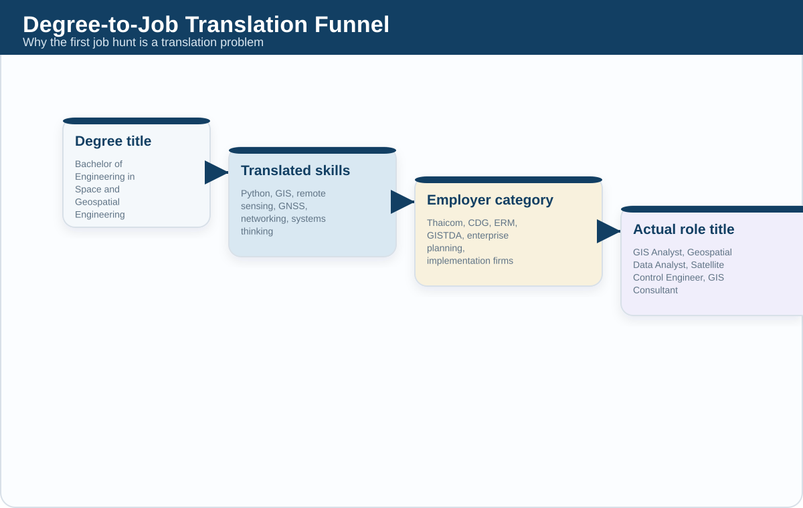
2. Where Jobs Actually Appear: The Current Employer Map
Students need a realistic employer map more than they need generic encouragement. The reviewed April 2026 signals suggest at least six employer clusters that matter.
Cluster 1: Satellite operator and space-tech commercialization environments
Thaicom is the clearest example because it currently shows several distinct ways a graduate can enter the market. Current Jobsdb snapshots show Geospatial Data Analyst (Python & Machine Learning), requiring Python, machine learning, GeoPandas, Rasterio, Google Earth Engine, ArcGIS or QGIS, remote-sensing knowledge, and English. Recent hiring history also shows geospatial-data-science demand around the same business area. On Jobsdb, Thaicom also showed Sales - Geospatial Intelligence (Solution & Platform Commercialization), which is highly revealing because it proves the space-data market is not hiring only pure engineers. It is also hiring commercialization staff who can connect GIS technology with revenue and platform adoption. On the satellite-operations side, Jobsdb's satellite-engineer results showed Thaicom's Satellite Control Engineer role in Pathum Thani welcoming new graduates in telecommunications or electrical engineering.
This cluster matters because it demonstrates the degree's hybrid viability. Thaicom is not recruiting from one narrow academic lane. It is recruiting across analytics, platform, commercialization, and operations.
Cluster 2: GIS system integrators and implementation firms
CDG Group and its GIS Company ecosystem are extremely important, even if students overlook them because they sound less glamorous than "space tech." The official GIS Company page on CDG's site describes integrated geospatial solutions across software, image processing, mapping, field surveys, satellite or aerial imagery analysis, logistics platforms, and implementation for government agencies, state enterprises, educational institutions, and private businesses. Current Jobsdb signals show CDG's GIS Business Support role in Bangkok hybrid mode, explicitly tied to GIS solutions, AI agriculture, location-based business solutions, disaster use cases, and implementation support.
This cluster is one of the strongest first-job pathways because it rewards students who can work across tools, stakeholders, and deliverables rather than only performing narrow research.
Cluster 3: Consulting and environmental-spatial analysis
ERM's current Bangkok listings show how consulting absorbs geospatial talent. Its GIS Consulting Associate / Senior Associate posting and separate GIS Consultant (Entry Level) posting involve GIS, remote sensing, spatial analysis, map preparation, and capital delivery projects. Importantly, the entry-level version explicitly states graduate or up to 2 years of experience, which makes it one of the clearer accessible routes for a fresh graduate. The role also asks for English fluency and values Python, R, or VBA, which tells the student exactly where friction appears: this is not a pure local-language drafting job.
This cluster is useful because it rewards strong communication and applied analysis, but it can also be demanding because consulting expects revision tolerance, deadline discipline, and client-facing clarity.
Cluster 4: Field, UAV, mapping, and mixed implementation firms
Nila Solutions is a strong current example because its Jobsdb listing for Data analyst (Assistant GIS Engineer) is unusually concrete. It asks for GIS or similar education, GIS or GNSS knowledge, ArcGIS, QGIS, Pix4D, UAV and mapping familiarity, strong communication skills, and willingness to travel or work in the field. This is valuable because it shows a real Thai employer asking for exactly the hybrid practical profile many KMITL students could build: GIS plus field reality, software plus survey-like awareness, and technical work plus personal flexibility.
This cluster is one of the best reminders that geospatial jobs are not only white-collar dashboard jobs. They can also be implementation and field-linked delivery jobs.
Cluster 5: Public-sector and state-linked space-geospatial organizations
GISTDA matters not only as a symbol but as an employer. Its official recruitment portal was live and updated in March 2026, with contact details for HR and internships. That proves the agency remains an active hiring channel rather than a merely ceremonial institution. The challenge is not whether GISTDA hires. The challenge is that public and quasi-public organizations often hire through formal windows, project logic, and administrative procedures rather than through a smooth consumer-style job market. This can make them harder for underprepared students to access quickly.
Internationally linked public-sector work exists too, but it is often even less entry-level. For example, UNOPS had a current Bangkok-based GIS Senior Analyst - Retainer signal, which is clearly not a graduate role. This is useful as a market signal: advanced GIS work exists in international development and public-sector delivery, but students should not confuse its existence with immediate accessibility.
Cluster 6: Enterprise users of GIS and location intelligence
Some of the most important jobs for graduates are not in "space companies" at all. Current Jobsdb signals show Department Manager - Domestic Expansion & Asset Development - Small Format at Lotus's, where GIS and spatial analysis are listed as preferred skills for network strategy and site selection. That role itself is not a fresh-graduate geospatial analyst role, but it proves a crucial point: geospatial literacy is embedded inside commercial decision-making. Similar patterns appear in retail, logistics, utilities, real estate, agriculture, and risk management. These environments may hire under business, planning, or operations titles rather than geospatial titles, which creates both opportunity and ambiguity.
Cluster 7: Energy and large technical organizations
PTTEP's visible Officer, Technical Data Management role is a useful example of a good long-term target but a weak immediate target. The posting asks for GIS data governance, standards, Python, and over ten years of relevant experience. It is therefore not a first-job destination. But it proves that large Thai technical organizations do value spatial-data discipline deeply enough to create specialized roles around it. This matters because it shows the path's upward ceiling, even if it does not solve the graduate's first-year employment problem.
| Employer cluster | Current example | Real signal | Entry-level friendliness |
|---|---|---|---|
| Satellite operator / space-data company | Thaicom Geospatial Data Analyst, Satellite Control Engineer, Sales - Geospatial Intelligence | Hybrid market exists across analytics, operations, and commercialization | Mixed; some roles are graduate-friendly, others are not |
| GIS implementation / system integration | CDG Group GIS Business Support | Strong demand for practical delivery and coordination | Moderate to high |
| Consulting | ERM GIS Consultant (Entry Level), GIS Consulting Associate | GIS and remote sensing are used in serious project delivery | Moderate, if English and documentation are strong |
| Field / UAV / mapping | Nila Solutions Assistant GIS Engineer | Practical geospatial work remains field-linked in parts of Thailand | High for students with mixed software-and-field portfolios |
| Public-sector / state-linked | GISTDA recruitment portal | Real hiring channel exists, but windows are formal and limited | Moderate, but slower and less predictable |
| Enterprise location intelligence | Lotus's property-expansion role with GIS preference | Spatial analysis is embedded in business decisions outside pure GIS teams | Low for fresh graduates unless translated well |
| Large technical enterprise | PTTEP Technical Data Management | High-end spatial-data governance roles exist | Low for fresh graduates; mostly long-term target |
3. Real Job Titles the Graduate Should Actually Search
Because the market hires by problem title, the search strategy must reflect that reality. A student who searches only for "space engineer" or "geospatial engineer" will miss a large part of the actual market. The better strategy is to build a title basket.
The core geospatial basket
The most reliable titles include GIS Analyst, GIS Engineer, Assistant GIS Engineer, Geospatial Data Analyst, GIS Consultant, Remote Sensing Analyst, Location Intelligence Analyst, and GIS Business Support. These titles align with what current Thai employers are visibly posting, and they connect to tools that KMITL students can plausibly own by graduation: ArcGIS or QGIS, Python, remote sensing, dashboards, GNSS awareness, and applied spatial analysis.
The satellite and systems basket
Students who want the more explicitly space-facing path should search titles such as Satellite Control Engineer, Satellite Operations Engineer, Ground Systems Engineer, Satellite Communications Engineer, and Systems Engineer. But they should do so carefully. This basket is smaller and noisier. Search results often include unrelated test-engineering or generic system roles. The student must therefore filter by employer and task description, not title alone.
The adjacent business-and-product basket
One of the most underappreciated job-hunt opportunities for this degree is the business-adjacent spatial role. Thaicom's Sales - Geospatial Intelligence (Solution & Platform Commercialization) listing is the clearest current signal. It proves that geospatial and satellite data markets also hire for platform commercialization, solution selling, and customer-facing technical roles. Students who are strong communicators should not ignore this basket, especially if they like technology but do not want purely back-end analytical work.
| Search basket | Useful titles | Why it matters |
|---|---|---|
| Core geospatial | GIS Analyst, GIS Engineer, Geospatial Data Analyst, GIS Consultant, Remote Sensing Analyst | This is where most entry-level opportunity sits |
| Satellite and systems | Satellite Control Engineer, Ground Systems Engineer, Satellite Operations Engineer, Systems Engineer | This is where the degree's differentiating identity appears, but the market is thinner |
| Location intelligence and product | Location Intelligence Analyst, Geospatial Product Specialist, Sales - Geospatial Intelligence | Useful for students who can connect technical content with business value |
| Mixed implementation | GIS Business Support, Assistant GIS Engineer, Technical Support, Solutions Consultant | Often the easiest route into real workflows and employers |
4. Who Usually Does Not Hire This Degree Directly
Job-hunt strategy improves when students know where not to waste energy. Several categories matter here.
Pure aerospace fantasy targets
Thailand's pure spacecraft-manufacturing or glamorous space-hardware market is too narrow to be treated as the default first-job destination. That does not mean students should never apply. It means they should not build their whole first-job plan around it. A student who applies only to the thinnest, most identity-rich space employers is taking unnecessary risk.
Generic software companies without spatial need
Large software or digital companies can absolutely hire KMITL graduates, but they will not do so because the degree title sounds interesting. They will hire if the graduate looks like a legitimate Python, analytics, cloud, or product candidate. If the student's portfolio is not translated out of the geospatial wrapper, many generic software employers will simply prefer more standard computer science or data-science candidates.
Senior-only data governance and strategy roles
PTTEP's Technical Data Management role is a perfect example. It is an attractive long-term target but a poor first-job target. The same is true of many high-level planning, data governance, or international-development GIS roles. Students should interpret these roles as evidence of career ceiling, not evidence of immediate access.
Organizations without a persistent spatial problem
Some companies may admire the degree but have no continuing need for spatial systems, remote sensing, GNSS, or geospatial dashboards. In such environments, the degree's value is weak unless the graduate can reframe themselves into a generic operations, analytics, or systems candidate. This is why job hunt efficiency depends on targeting employers with actual location-based pain.
5. Hiring Bottlenecks: Why Graduates Still Get Stuck
A viable market does not guarantee an easy job hunt. Several bottlenecks appear repeatedly in the current Thai signals.
Bottleneck 1: degree-title ambiguity
The degree name sounds modern, but it is still not a standard hiring category. Recruiters and line managers often understand tasks before they understand interdisciplinary branding. That means the graduate has to do extra explanatory work during screening. A Chulalongkorn Survey Engineering graduate, a Computer Engineering graduate, or a straightforward GIS candidate may sometimes benefit from easier title recognition even before the interview begins.
Bottleneck 2: tool-stack mismatch
This is the most common practical barrier. Thaicom's current geospatial analyst signal asks for Python, machine learning, GeoPandas, Rasterio, Google Earth Engine, and ArcGIS or QGIS. ERM values Python, R, or VBA on top of GIS and remote sensing. Nila Solutions asks for ArcGIS, QGIS, Pix4D, UAV or mapping familiarity, GIS or GNSS, and field readiness. CDG's hybrid role implies GIS solutions, agriculture AI, disaster, and implementation support. None of these employers are buying a transcript alone. They are buying a stack.
Students who graduate with course exposure but no stack evidence often misdiagnose the problem. They think the market is unfair. Sometimes it is simply unconvinced.
Bottleneck 3: English and professional communication
Thai employers vary in English intensity, but the stronger and more upward-mobile roles often screen for it. ERM explicitly wants English fluency. Thaicom's technical roles are English-facing by tool ecosystem and company context. Public-sector or international coordination roles also often require document literacy beyond conversational English. A student who can analyze well but cannot explain methods, limitations, or outputs clearly in Thai and English is narrowing their own ceiling.
Bottleneck 4: the experience trap
Some of the most attractive roles are not entry-level, even when they appear close to the student's dream path. PTTEP's Technical Data Management role asks for more than ten years of experience. UNOPS' GIS Senior Analyst Retainer signal is obviously senior. Even within geospatial consulting or product companies, some positions blend entry-level and experienced applicants into the same search environment. Students therefore need to distinguish carefully between "this is a real target later" and "this is a realistic first step now."
Bottleneck 5: location and cost-of-entry
Because so much of the market is clustered in Bangkok and nearby, the first job hunt often includes a hidden mobility cost. Rent, commuting, relocation, internship access, and informal networking all become easier for students already close to the metropolitan zone. This does not make the market inaccessible to provincial students, but it does raise the threshold slightly.
Bottleneck 6: keyword and platform noise
As already discussed, search platforms are noisy. "GIS" returns business-support, environmental, and implementation roles. "Satellite engineer" returns unrelated engineering noise alongside real satcom openings. "Geospatial" returns both serious analyst roles and platform-commercialization roles. A student who does not understand this noise can waste weeks applying badly.
| Bottleneck | Mechanism | How it hurts the graduate | Best countermeasure |
|---|---|---|---|
| Degree ambiguity | Employers understand tasks better than novel degree titles | CV gets filtered because the role fit is unclear | Rewrite resume around job titles, tools, and projects rather than degree branding alone |
| Tool-stack mismatch | Employers buy Python, GIS, GEE, GNSS, or field capability, not only coursework | Graduate looks theoretical rather than operational | Build public or interview-ready artifacts proving the stack |
| Communication weakness | GIS and consulting roles require explanation and coordination | Graduate underperforms in interviews and client-facing roles | Practice concise Thai and English project narratives early |
| Experience trap | Senior roles dominate the most attractive employer pages | Graduate targets roles that were never realistic first jobs | Separate immediate targets from long-term targets explicitly |
| Bangkok concentration | Most relevant employers sit in Bangkok or nearby | Higher cost and weaker access for non-Bangkok students | Intern early in Bangkok-linked firms and plan financially |
| Search noise | Keywords overlap with unrelated roles | Wasted applications and bad interpretation of the market | Search by employer cluster, tool stack, and function |
6. Deep Analysis: Is the Job Hunt Strong Enough to Justify the Degree?
This is the chapter's core judgment question. A degree can be intellectually attractive and still fail the job-hunt test. KMITL's Space and Geospatial Engineering degree does not fail that test, but it does not pass it effortlessly either.
Strongest argument for the job-hunt case
The strongest argument in favor is that the Thai market now clearly contains multiple real channels that can absorb the degree if the student is prepared. The April 2026 signals are not imaginary or aspirational. Thaicom is visibly hiring geospatial and satellite-related roles. ERM is visibly hiring GIS consulting roles in Bangkok, including an entry-level pathway. CDG is visibly hiring a hybrid GIS support role connected to agriculture, disaster, retail, and implementation. Nila Solutions is visibly hiring a mixed GIS or GNSS field-linked role. GISTDA has a live recruitment portal and internship contact. LinkedIn and Jobsdb both show a nontrivial flow of GIS, geospatial, and location-related openings in Thailand.
That means the degree is not pointing into a void. It points into a fragmented but genuine labor market.
Strongest argument against the job-hunt case
The strongest argument against it is that the degree does not enjoy automatic recognition, and the best jobs often ask for more than the average student casually accumulates. Python, machine learning, GeoPandas, Rasterio, Google Earth Engine, ArcGIS or QGIS, Pix4D, English fluency, field readiness, business support, client coordination, and domain context all appear in the current market. In other words, the good roles are demanding. A weak or passive graduate will experience this as a market problem, but it is partly a preparation problem.
There is also a structural issue. The market is denser on the geospatial side than on the pure space side. If a student enters KMITL specifically hoping for a large Thai space-hardware job market, the job hunt will disappoint them. If they enter hoping for a hybrid geospatial, satellite-data, GNSS, satcom, or systems path, the market looks much healthier.
Reasoned judgment
The most honest judgment is this: the Thai job hunt is strong enough to justify the degree for a student who uses the degree strategically, but not strong enough to forgive weak execution. That is a very different statement from saying "the market is booming." The market is not booming in a mass-employment sense. It is simply real enough, diverse enough, and commercially grounded enough that a good student should be able to land if they bring the right stack and search intelligently.
For the average unstrategic student, the degree will feel harder to sell than a more standard major. For the strong, portfolio-driven student, the job hunt is viable and often better than outsiders assume, especially on the GIS, remote-sensing, GNSS, and hybrid satcom-data side.
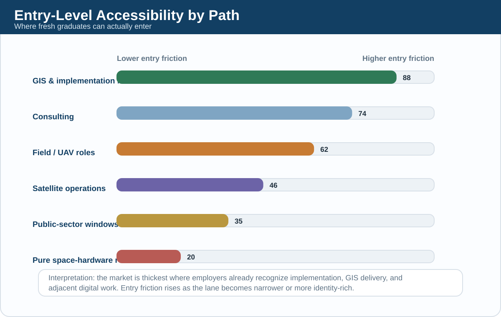
7. Chapter Takeaway
The Thai job hunt for KMITL's Space and Geospatial Engineering graduates is viable but translation-heavy. Real employers exist, real titles exist, and the market is more concrete than skeptics assume. But it is not a frictionless pipeline, and it does not reward passive graduates. Students who build a visible stack, search by function rather than fantasy title, and accept that the geospatial side is the primary labor-market engine will be in a much stronger position than those who rely on the degree name alone.
Sources
This chapter is grounded in current public job-market signals reviewed on April 12, 2026. Job listings are time-sensitive and may close or change; they are used here as snapshots of hiring behavior, role naming, and skill demand. Official employer and recruitment pages are included where available to reduce reliance on aggregators alone.
- Thaicom: internship and early-career page
- Jobsdb: Thaicom Geospatial Data Analyst (Python and Machine Learning) snapshot
- Jobsdb: Thaicom jobs in Bangkok Metropolitan Region snapshot
- Jobsdb: Satellite Engineer jobs in Thailand snapshot
- CDG Careers: explore and apply
- GIS Company / CDG official site
- Jobsdb: CDG Group jobs snapshot including GIS Business Support
- ERM official careers search: GIS
- ERM official careers: GIS Consulting Associate / Senior Associate
- LinkedIn: ERM GIS Consultant (Entry Level)
- Jobsdb: Nila Solutions jobs snapshot
- GISTDA official recruitment portal
- Jobsdb: GISTDA and GIS-related jobs snapshot
- UNOPS official vacancy: GIS Senior Analyst - Retainer
- Jobsdb: Lotus's property-expansion role with GIS preference
- LinkedIn: PTTEP Officer, Technical Data Management
- LinkedIn: GIS jobs in Thailand snapshot
- LinkedIn: Geographic Information Systems jobs in Thailand snapshot
- Jobsdb: GIS Engineer jobs in Thailand snapshot
Chapter 11: Career Progression
This chapter asks what happens after the first job. It is not enough for KMITL's Space and Geospatial Engineering degree to produce a viable entry point. The real decision question is whether the graduate can grow over 5 to 10 years into stronger pay, stronger title leverage, and stronger bargaining power inside Thailand's geospatial, satcom, and hybrid engineering market.
Executive Summary
Career progression for a KMITL Space and Geospatial Engineering graduate in Thailand is real, but it is not a straight conveyor belt. The market is too fragmented for that. Current public evidence reviewed on April 12, 2026 shows clear entry rungs such as Thaicom's Geospatial Data Analyst, Thaicom's Satellite Control Engineer, ERM's GIS Consultant (Entry Level), CDG Group's GIS Business Support, and Nila Solutions' Assistant GIS Engineer. It also shows higher rungs that reveal the structure above them: ERM's GIS Consulting Associate / Senior Associate, UNOPS' GIS Senior Analyst, PTTEP's Officer, Technical Data Management role leading and mentoring team members, and manager-level geospatial platform or technical-data roles on the private side. That is enough to see the ladder shape.
The strongest argument for the degree's long-term progression case is that it supports several possible ladders rather than one: geospatial analysis, remote-sensing consulting, location-intelligence product work, satcom and operations, technical data management, and business-facing geospatial solution roles. This diversification is a real advantage in a market where no single sub-sector is large enough to absorb everyone. The strongest argument against the degree is that progression is highly strategy-dependent. Title inflation, small specialist teams, and uneven employer understanding mean that graduates often need lateral moves to accelerate. Internal promotions alone may be too slow.
The right judgment is therefore practical. Over ten years, a strong graduate can build a respectable Thai career and even cross into management, specialist consulting, or platform leadership. But the ceiling rises fastest for graduates who combine three things: a visible stack, domain specialization, and the ability to lead projects or people. Students who remain generic analysts with weak communication and weak ownership often plateau earlier than they expect.
1. What Career Progression Actually Looks Like in This Market
Career progression in this field should not be imagined as a simple ladder where each year automatically unlocks the next title. In Thailand's space-geospatial market, progression is better understood as a branching system. The first few years usually determine the branch more than the starting salary does.
The market branches earlier than students expect
A graduate may begin in what looks like a narrow role, then discover they are actually entering one of several longer tracks. A geospatial data analyst can become a senior analyst, a technical consultant, a product specialist, a platform lead, or a data-management specialist. A satellite-control or ground-systems engineer can become a senior operations engineer, systems lead, technical support lead, or commercial specialist around satellite services. A GIS implementation person can move toward consulting, solution architecture, product delivery, or business development. The degree supports this branching because it is broad. That is both a strength and a risk.
Progression is often driven by lateral movement, not only internal promotion
This is especially important in Thailand. Many geospatial and location-intelligence employers are not huge organizations with dozens of formal promotion steps. Esri Thailand's public LinkedIn page shows a Thailand organization in the 201 to 500 employee range. GIS Co., Ltd.'s LinkedIn page shows around 80 employees. Bedrock Analytics' LinkedIn page shows around 98 employees. These are serious businesses, but they are not massive bureaucracies with endless title layers. Small and midsize specialist teams can be excellent for learning, but they often create promotion bottlenecks.
The practical consequence is that many of the biggest career jumps come from changing employer, changing subdomain, or changing business function, not merely waiting for annual reviews. This is one reason Chapter 10 emphasized translation. A graduate who can translate their skills across adjacent functions has more upward mobility than one who is trapped in one narrow interpretation of the degree.
The Thai context rewards "owner" behavior more than pure topic accumulation
Many students imagine progression as a function of how many technical topics they know. In practice, promotions often come when a person stops being seen as a task executor and starts being seen as the owner of a workflow, client relationship, product area, operational process, or technical standard. The PTTEP role reviewed in April 2026 is highly instructive here. Its Officer, Technical Data Management role is not simply about knowing GIS. It is about leading data policy, data governance, integration, automation, database modernization, and mentoring team members. That is a very different level of responsibility.
This means the student's long-term objective should not be "collect more software." It should be "become the person who can safely own something important."
2. A Reasoned 10-Year Ladder: Data and GIS Track
The data and GIS track is the strongest default progression route for most graduates of this degree. The reason is not only that it is safer at entry level. It is also that the ladder is easier to see.
Years 0-2: junior analyst, implementation, or consulting entry
The visible current entry layer includes Thaicom's Geospatial Data Analyst (Python & Machine Learning), ERM's GIS Consultant (Entry Level), CDG Group's GIS Business Support, and Nila Solutions' Data analyst (Assistant GIS Engineer). These roles reveal the real entry mechanisms: applied analytics, implementation support, UAV or field-linked mapping, client or internal coordination, and increasingly Python-centered geospatial work. At this stage, the graduate is proving they can operate inside real workflows without supervision collapsing.
Years 2-5: senior analyst or consultant emergence
This is the stage where differentiation begins. The graduate either becomes a stronger domain-specific analyst or remains generic. Public market signals show the shape of the next layer. ERM's GIS Consulting Associate / Senior Associate role is one example. UNOPS' GIS Senior Analyst role, although not truly entry level, shows what a semi-senior public or development-facing role expects: coordination, dashboard delivery, standardized outputs, data organization, and capacity strengthening. A graduate who reaches this stage successfully usually has stronger English, cleaner documentation habits, and clearer domain depth in one of the following: environment, utilities, remote sensing, location intelligence, agriculture, infrastructure, or public-sector data.
Years 5-8: lead, specialist, or product-facing growth
Between five and eight years, the main split usually appears. One group becomes technical specialists: advanced remote-sensing analysts, lead GIS consultants, platform specialists, technical data managers, or location-intelligence specialists in a commercial domain. Another group becomes hybrid delivery leads, owning projects, customers, or solution rollouts. The older Thaicom Geospatial Data Analyst posting is useful here because the role description already included product strategy, cross-functional translation, and market adoption language. Those are mid-career growth signals, not only analyst tasks.
At this stage, a person who remains only a clean map-maker is at risk of plateauing. The stronger professionals have usually added domain ownership, mentoring, or product logic.
Years 8-10+: manager, platform lead, principal specialist, or data-governance owner
The visible higher-end current signal comes from PTTEP's Officer, Technical Data Management role, which requires over 10 years of experience and includes team leadership, governance, automation, modernization, and oversight responsibilities. Public market signals on the private side also show that manager-level geospatial platform and solution roles exist in Thailand. These titles matter because they reveal what upper-career progression looks like: less button-clicking, more architecture, governance, people development, cross-functional influence, and business responsibility.
| Career stage | Likely titles | Main responsibility shift | What unlocks the next stage |
|---|---|---|---|
| 0-2 years | GIS Analyst, Assistant GIS Engineer, Geospatial Data Analyst, GIS Consultant (Entry Level), GIS Business Support | From coursework to operational delivery | Reliable workflow execution and stack proof |
| 2-5 years | Senior Analyst, GIS Consulting Associate, Remote Sensing Specialist, Location Intelligence Analyst | From task execution to problem ownership | Domain depth, communication, and repeatable delivery |
| 5-8 years | Lead Analyst, Product Specialist, Technical Consultant, Project Lead, Solutions Lead | From problem ownership to workflow or client ownership | Mentoring, stakeholder trust, and business impact |
| 8-10+ years | Platform Manager, Technical Data Management Lead, Principal Consultant, Team Manager | From workflow ownership to organizational leverage | Leadership, governance, automation, and strategic responsibility |
3. A Reasoned 10-Year Ladder: Satcom, Systems, and Hardware Track
The satcom and systems ladder is more selective and less visible in public listings, but it exists. It is just smaller and more operationally concentrated.
Years 0-2: operations or systems entry
Thaicom's current Satellite Control Engineer role is the cleanest public signal because it explicitly states that new graduates in telecommunications or electrical engineering are welcome. This is the kind of role where a KMITL graduate can convert the telecom-space side of the degree into a real entry point. Early-career work here is likely to involve monitoring, operating, troubleshooting, shift discipline, and learning system behavior under live conditions.
Years 2-5: senior operator or systems specialist
Public postings do not reveal this entire layer neatly, but the mechanism is clear from the nature of satellite operations and ground systems. A junior operator who survives well can become a more trusted system engineer, ground-segment specialist, satcom support engineer, or RF-oriented operations engineer. Progression here depends heavily on reliability, incident handling, and documentation discipline, not only on theoretical knowledge.
Years 5-8: lead engineer, integration specialist, or technical supervisor
This is where the ladder becomes narrower than the GIS track. Hardware and operations teams are usually smaller, and leadership seats are fewer. A person can still progress well, but the ceiling is more dependent on employer growth and organizational structure. This is why many satcom or systems professionals add adjacent strengths such as project management, product understanding, customer coordination, or data and automation skills.
Years 8-10+: systems manager, program lead, or technical-commercial bridge
The upper end of this ladder often crosses out of pure engineering execution and into program management, platform leadership, solution architecture, customer-facing engineering, or cross-functional management. Thaicom's own public internship language is revealing here. The company says interns receive meaningful assignments with mentors from technical teams and build practical relationships useful throughout their careers. That kind of environment often produces not only operators but later-stage technical leaders who can guide teams, customers, and system expansions.
The satcom path can be strong, but it is less forgiving than the GIS path because the ladder has fewer visible rungs and less mass demand. This is why the most resilient KMITL graduates on this track are often hybridized with scripting, data analysis, or system-integration skills.
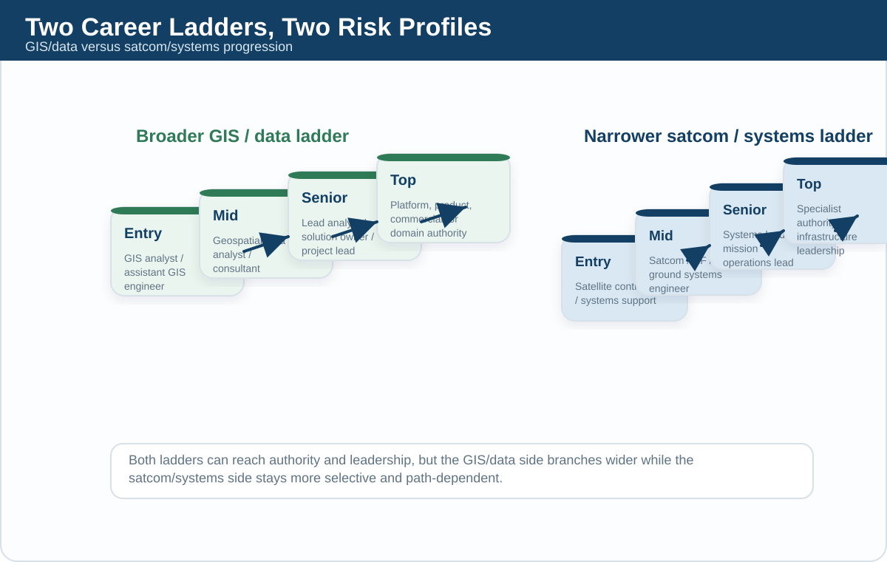
4. Promotion Drivers: What Actually Gets People Advanced
Promotion in this market is not governed by one thing. It is usually an accumulation of trust signals. The graduate who rises fastest is rarely the person who merely stays longest. It is the person who becomes difficult to replace in a commercially or operationally meaningful way.
Driver 1: visible ownership of a stack
At entry level, knowing ArcGIS, QGIS, Python, remote sensing, or GNSS is useful. But promotion begins when the person stops being a tool user and becomes a workflow owner. Thaicom's current geospatial analyst posting is a good example of how employers think: Python, machine learning, GeoPandas, Rasterio, Google Earth Engine, ArcGIS or QGIS, and satellite-data handling are valued together. That is not just a tool list. It is a workflow signature. People who can own such workflows are more promotable than people who can only assist within them.
Driver 2: domain specialization
Generic geospatial knowledge is a starting point, not a long-term moat. The stronger careers usually anchor in a domain: agriculture, environmental consulting, utilities, logistics, telecom, urban planning, land management, or public-sector digital platforms. ERM's GIS consulting roles imply environmental and capital-project contexts. CDG's GIS Business Support role connects to disaster, agriculture, retail, and AI agriculture solutions. Bedrock's own company page emphasizes smart-city and location-intelligence platform use cases. These are all reminders that career depth usually comes from domain context, not just software repetition.
Driver 3: communication and client trust
As careers advance, geospatial and systems roles become less private. They become more cross-functional. Consulting roles need explanation. Enterprise roles need coordination. Platform roles need internal alignment. Public-sector roles need documents and stakeholder patience. This is why English and concise technical communication matter so much. ERM explicitly screens for English. PTTEP's high-end technical data role includes leadership, governance, mentoring, and standardization work that is impossible without communication competence. Promotion follows trust, and trust follows clarity.
Driver 4: automation and repeatability
A person who repeatedly saves time for the organization tends to move up. In geospatial work, that often means automation. A script that replaces a manual process, a reusable dashboard, a cleaner pipeline, a more stable data standard, or a deployment pattern that multiple teams can use has more promotion value than one-off brilliance. This is one reason Python-heavy graduates often outgrow purely manual GIS operators over time.
Driver 5: business or operational leverage
The career ceiling rises fastest when technical work begins affecting revenue, customer retention, operational continuity, or policy significance. Thaicom's Sales - Geospatial Intelligence role is valuable as a signal because it shows one branch of the market where geospatial knowledge touches commercialization directly. PTTEP's data-management role shows another branch, where the value lies in standards, governance, and strategic technical continuity. Students should understand this deeply: high progression does not come only from harder technical puzzles. It often comes from stronger organizational leverage.
| Promotion driver | Why employers care | What it looks like in practice |
|---|---|---|
| Workflow ownership | Reduces supervision and increases reliability | Analyst runs Python plus GIS pipeline end-to-end without hand-holding |
| Domain depth | Makes the employee harder to replace and more commercially useful | Geospatial specialist becomes strong in utilities, ESG, agriculture, telecom, or smart-city work |
| Communication | Supports consulting, leadership, and client trust | Engineer can explain methods and limitations clearly in Thai and English |
| Automation | Creates productivity and organizational memory | Reusable scripts, standards, and dashboards replace repeated manual work |
| Business or operational impact | Links technical work to money, risk reduction, or service continuity | Role expands into product, platform, governance, or customer-facing responsibility |
5. Career Branches After Year 5: Specialist, Manager, or Commercial Bridge
By around five years, the strongest graduates are no longer simply "more senior versions" of their entry-level selves. They usually branch.
Branch A: specialist authority
This branch suits people who want to remain strongly technical. They become advanced analysts, remote-sensing specialists, GNSS specialists, technical consultants, product specialists, or data-governance experts. Their value comes from depth and repeatability rather than formal people management. The ceiling can still be strong, especially in consulting, product, or large-enterprise data environments, but the student must deliberately become known for something specific.
Branch B: team and project management
This branch suits people who become good at mentoring, planning, reviewing deliverables, and coordinating stakeholders. The PTTEP role is the clearest public signal in this chapter because it explicitly includes leading and mentoring officers while governing data modernization and standards. This is not simply a technical branch with extra salary. It is an organizational branch. People who dislike meetings, prioritization, and cross-team friction often should not force themselves into it just because it sounds like "promotion."
Branch C: product, platform, and commercialization
This branch is underrated and often highly valuable. Thaicom's current public role for Sales - Geospatial Intelligence and the recruiter title Geospatial Intelligence Platform Manager both show that the market needs people who can bridge technology with adoption, platform growth, solution packaging, and business value. Students who are technically credible and unusually strong communicators can do very well here. In some cases this branch can outgrow pure technical tracks financially, because revenue-facing roles often receive more aggressive compensation upside.
The important decision lesson is that not all progression is managerial. Some of the best mid-career outcomes come from choosing the right branch rather than chasing the word manager too early.
6. Salary Growth Patterns: How Money Usually Moves Over Time
This chapter is not the main salary chapter; Chapter 12 will go deeper on Thai salary bands by role and level. But progression cannot be understood without looking at how compensation usually moves.
Annual raises are usually modest
Adecco Thailand's 2026 salary guide press release is useful here because it gives broad labor-market movement rather than one-off anecdotes. It states that 82% of respondents received salary increases over the past year, but the most common adjustment was only 2-5%. It also notes that only 15% expect increases above 10% in the next 12 months. This matters because many students imagine salary progression as a smooth staircase. In reality, if a graduate simply stays in one place and waits, early progression can feel slower than expected.
Job moves matter more than students expect
The same Adecco 2026 press release says that job movers, especially those with in-demand skills, continue to command higher salary premiums than typical annual increases. This is one of the most important career-economics facts in the entire dossier. In Thailand's geospatial and hybrid engineering market, meaningful compensation acceleration often happens when a graduate translates their skill stack into a better-scoped role at another employer, not when they remain a polite internal performer forever.
The middle years are where growth becomes non-linear
Adecco also reports that entry-level salaries across the broader Thai market, for up to three years of experience, averaged around 20,000 to 38,000 THB per month, while mid-level professionals with five years of experience and above saw increases of approximately 10-20%. The report also notes that data scientists and data engineers continue to command higher ceilings than average entry roles. This pattern matches the logic of KMITL's stronger branches. A graduate who becomes a credible Python-plus-GIS or geospatial-data specialist can often pull away from the general early-career average faster than a graduate who remains a narrow map operator.
Promotion without leverage can still plateau
The danger is obvious. A graduate who stays inside a small specialist team, does solid work, but never builds strong domain, automation, or client leverage may receive modest annual adjustments without a truly meaningful jump. This is especially likely in small teams where manager seats are scarce. That is why progression in this market is tied so tightly to branching, specialization, and mobility.
| Growth mechanism | Typical pattern | Implication for the graduate |
|---|---|---|
| Annual internal adjustment | Often modest, commonly in the 2-5% range according to Adecco 2026 | Good for stability, weak for aggressive acceleration |
| Lateral job move | Can materially outpace annual increments when stack is in demand | Often the main source of career-speed change in years 2-6 |
| Move into scarce technical specialization | Higher ceiling if the role is Python-heavy, AI-adjacent, or business-critical | Rewards students who build more than basic GIS competency |
| Move into manager or commercial branch | Can create non-linear upside, but only if responsibility actually expands | Title alone is not enough; leverage must increase |
7. Deep Analysis: Is the Long-Term Ceiling Good Enough?
For a Thai student deciding whether this degree is worth four years of effort, the career progression question is really a ceiling question. Not "can I get one job?" but "if I do well, is there a respectable future here?"
Strongest argument for the ceiling
The strongest case in favor is that the degree sits in a part of the labor market where technical complexity and operational usefulness can compound over time. A graduate can start in GIS or geospatial analysis, add Python and domain expertise, then move into consulting, platform work, technical management, or commercialization. Or they can start in satcom or operations, then move into systems leadership or hybrid technical-commercial roles. This flexibility is real and stronger than outsiders often assume.
It also helps that the market is not static. Bedrock's current positioning around location intelligence and AI, Esri Thailand's scale and platform portfolio, and Thaicom's geospatial and geospatial-intelligence commercial roles all show that the Thai market is slowly moving toward more platformized, data-driven spatial services. That creates new upper-career branches that did not exist as clearly a decade ago.
Strongest argument against the ceiling
The strongest case against it is that the ceiling is uneven and can punish passivity. This is not a giant labor market where average people automatically drift upward for ten years. Specialist teams are smaller. Managerial seats are fewer. Public-sector progress can be slower and more bureaucratic. Some companies may use geospatial staff heavily without giving them strong title progression. A graduate who does not deliberately create leverage can remain technically respectable but economically under-advanced.
Reasoned judgment
The long-term ceiling is good enough to justify the degree, but only under one condition: the student must treat the first ten years as an active career-construction project, not a passive ride. This is not a mass-market career where standard compliance is always enough. It is a hybrid technical career where people who build stack, domain, and ownership can do well, while people who remain generic often plateau.
That judgment should not scare the student away automatically. It should simply recalibrate expectations. The upside is real. The automation is not.
8. Chapter Takeaway
Career progression from KMITL's Space and Geospatial Engineering degree is real and potentially respectable over ten years, but it is not automatic. The market rewards stack ownership, domain depth, communication strength, and lateral mobility more than pure tenure. For students who are willing to build those things, the degree can lead not only to a first job but to specialist, managerial, or platform-level careers in Thailand's growing geospatial and satcom-adjacent economy.
Sources
This chapter combines current public job listings, employer pages, and labor-market reports reviewed on April 12, 2026. Some ladder structures are reasoned inferences from real job titles, employer size, and visible role responsibilities rather than formal company-published promotion maps.
- Jobsdb: Thaicom Geospatial Data Analyst (Python and Machine Learning) snapshot
- Jobsdb: Thaicom jobs in Bangkok Metropolitan Region snapshot
- Jobsdb: Satellite Engineer jobs in Thailand snapshot
- Thaicom internship and early-career page
- ERM official careers: GIS Consulting Associate / Senior Associate
- LinkedIn: ERM GIS Consultant (Entry Level)
- UNOPS official vacancy: GIS Senior Analyst - Retainer
- PTTEP jobs page on LinkedIn showing (Senior) Officer, Technical Data Management
- Jobsdb: Nila Solutions jobs snapshot
- Jobsdb: CDG Group jobs snapshot including GIS Business Support
- LinkedIn: Esri Thailand company page
- LinkedIn: GIS Co., Ltd. company page
- LinkedIn: Bedrock Analytics Company Limited page
- Adecco Thailand Salary Guide 2026 press release
Chapter 12: Salary & ITAR Barrier
This chapter deals with the part of the decision that parents and students usually care about most, but often discuss badly: what does this degree actually pay in Thailand, how fast does that pay grow, and how much does U.S. export control law limit the student's access to international aerospace jobs? The analysis is intentionally hard-nosed, because this is where illusion gets expensive.
Executive Summary
The salary reality for KMITL's Space and Geospatial Engineering degree is respectable, but not glamorous at the start. Current Thai salary signals reviewed on April 12, 2026 show that broadly comparable Bangkok roles cluster roughly like this: data analysts average around 35,000 THB per month in Bangkok on Jobsdb; data engineers average around 45,000 THB; systems engineers around 42,500 THB; network engineers around 42,000 THB; and electrical engineers around 35,000 THB. Adecco Thailand's 2025 role benchmarks add more detail: Data Scientist / Data Engineer roles in services or consulting show 30,000-70,000 THB for 0-3 years, 50,000-100,000 THB for 3-7 years, and 100,000-150,000 THB for more than 7 years; Electrical Engineer roles in industrial and manufacturing show 20,000-30,000 THB for 0-3 years and 35,000-90,000 THB for 3-7 years. The message is clear. This degree can lead to good Thai salaries, but usually through the GIS-data and systems side, not through a mythical Thai space salary premium.
The strongest argument in favor is that the degree can compound well. Adecco's 2026 labor-market report says most annual raises remain modest, often 2-5%, but job movers with in-demand skills command higher premiums, and mid-level professionals often see 10-20% gains. That fits this degree perfectly. A graduate who adds Python, automation, GIS delivery, domain expertise, and ownership can accelerate beyond generic engineer pay. The strongest argument against the degree is that the international ceiling most students imagine, especially in the United States, is constrained by export-control law much more than they realize.
The ITAR barrier is not a fake internet rumor, but it is also not a simple blanket ban. Official U.S. sources show that ITAR distinguishes between U.S. persons and foreign persons, and that access by foreign persons to ITAR-controlled technical data generally requires authorization. DDTC guidance also explicitly states that ITAR does not itself require discrimination in hiring or promotion, but access authorization and internal compliance obligations are real. BIS rules create similar friction for EAR-controlled technology through deemed-export rules. The practical result for a Thai student is blunt: direct entry into U.S. defense-heavy aerospace work is structurally difficult. The more realistic international routes are Thailand-first growth, Singapore and other regional downstream roles, master's-first paths, or commercial geospatial and non-defense routes rather than immediate U.S. defense jobs.
1. The Thai Salary Reality: No Space Premium by Default
The first economic truth is that Thai employers do not usually pay extra just because a degree sounds advanced. They pay for useful functions. If the KMITL graduate looks like a strong GIS analyst, data engineer, systems engineer, satcom operations candidate, or implementation specialist, the market will price them as that function. If the graduate looks like a vague interdisciplinary experiment, the market will discount them.
The safest pay floor sits in the data and systems side
Current market benchmarks support this clearly. Jobsdb's March 2026 salary pages show typical Bangkok monthly salaries around 35,000 THB for Data Analysts, 45,000 THB for Data Engineers, 42,500 THB for Systems Engineers, 42,000 THB for Network Engineers, and 35,000 THB for Electrical Engineers. These are not geospatial-exclusive roles, but they are highly relevant anchor points because KMITL's degree competes inside exactly this mixed technical market.
The implication is important. The degree's stronger salary engine is not "space" as branding. It is the student's ability to translate into data, systems, network, remote-sensing, GIS, location-intelligence, and implementation roles that already have market pricing.
Geospatial-specific pay transparency is limited, so ranges must be reasoned
This chapter should be explicit about one data problem: Thai job boards do not expose enough clean salary data for geospatial roles to pretend false precision. Many GIS and geospatial listings do not show pay. Therefore, the most honest approach is to use adjacent role benchmarks and current postings together. Thaicom's Geospatial Data Analyst role, ERM's GIS roles, CDG's GIS Business Support role, and Nila Solutions' Assistant GIS Engineer role show the structure of the market, while Jobsdb and Adecco provide salary anchors from adjacent technical roles. That is why the tables below use ranges and note where the numbers are estimates rather than directly disclosed geospatial salaries.
Hardware-side salaries are respectable, but not usually better than strong data-side salaries
Students often assume that harder or more physical work automatically pays more. In Thailand, this is not reliably true. Hardware and satcom roles can be technically prestigious, but the broader pay engine still often sits with in-demand digital, automation, and data skills. Adecco's 2026 release is revealing on this point because it notes that data scientists and data engineers continue to earn up to 80,000 THB even at entry-level bands in the broader market, outperforming many conventional engineering roles. This does not mean hardware pays badly. It means the most scalable pay growth is often on the more computational side of this degree.
2. Reasoned Thai Salary Ranges by Role and Level
The table below is the most decision-useful salary summary in the chapter. It combines current Thai salary guide data, Jobsdb salary pages, and current hiring signals as of April 12, 2026. Where exact geospatial salary disclosures are missing, the estimates are labeled as reasoned approximations anchored to adjacent Thai roles.
| Role path | Entry level (0-3 yrs) | Mid level (3-7 yrs) | Senior level (7+ yrs) | Evidence status |
|---|---|---|---|---|
| GIS Analyst / Assistant GIS Engineer / GIS Business Support | 25,000-40,000 THB | 40,000-70,000 THB | 70,000-110,000 THB | Estimated from current GIS listings plus Bangkok Data Analyst and Business Analyst benchmarks |
| Geospatial Data Analyst / Spatial Python / Remote Sensing Analyst | 35,000-60,000 THB | 60,000-110,000 THB | 100,000-150,000+ THB | Anchored to Adecco Data Scientist / Data Engineer and Jobsdb Data Engineer / Data Analyst data |
| GIS Consultant / Geospatial Consulting | 30,000-50,000 THB | 50,000-90,000 THB | 90,000-140,000 THB | Estimated from ERM role structure, Adecco consulting-adjacent data, and Bangkok consultant benchmarks |
| Satellite Control / Satcom / Ground Systems / RF or Systems Engineer | 28,000-45,000 THB | 45,000-80,000 THB | 70,000-130,000 THB | Anchored to Jobsdb Systems Engineer, Network Engineer, Electrical Engineer, and satellite-control signals |
| Technical Data Management / Platform Lead / Geospatial Product or Commercial Lead | Not usually true entry-level | 60,000-120,000 THB | 100,000-180,000+ THB | Estimated from PTTEP senior data-management signal, Bangkok manager and project benchmarks, and platform-role structure |
These numbers are monthly base-salary approximations in Thai Baht. They exclude bonuses, overtime, shift allowances, commissions, and non-cash benefits. Because geospatial-specific salary disclosure is sparse, some ranges are modeled rather than directly posted. That is why they are expressed as bands rather than precise claims.
What this means for the student's decision
The degree is not a fast lane to elite Thai compensation in the way top-tier finance, some top software roles, or certain multinational commercial tracks can be. But it is absolutely capable of producing a solid middle-class and later upper-middle technical trajectory, especially if the student pushes toward Python-heavy geospatial analysis, consulting, platform work, or data engineering rather than remaining a narrow manual-GIS operator.
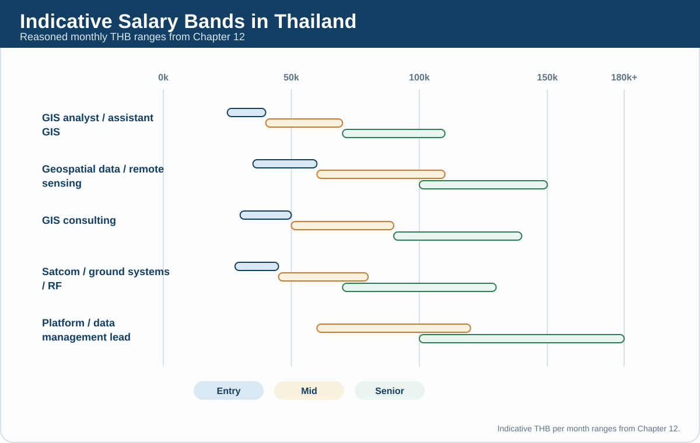
3. How Salary Growth Actually Happens
Students often imagine salary growth as a smooth annual staircase. Thai labor-market evidence does not support that belief strongly.
Internal raises are usually modest
Adecco Thailand's 2026 salary guide press release states that most respondents who received raises over the past year saw only 2-5% increases, and only 15% expected increases above 10% in the next twelve months. This is exactly the kind of data that prevents bad expectations. A graduate who joins a reasonable employer and simply waits may still grow, but usually not dramatically from annual increments alone.
Job moves and scarce skills create the bigger jumps
The same Adecco release says job movers with in-demand skills continue to command higher salary premiums. This is where the KMITL degree can work well if the student uses it strategically. Python plus GIS, remote sensing plus delivery, GNSS plus systems, satcom plus operations, or geospatial plus product or business fluency are all examples of combinations that can justify employer changes and better compensation bands. The salary story therefore rewards mobility and proof, not only loyalty.
The degree's economic winner is the hybrid specialist
The graduate who usually does best economically is not the most romantic. It is the one who is hard to substitute. A person who can only make static GIS outputs is easier to replace than someone who can automate pipelines, explain spatial findings to clients, work with imagery and APIs, and translate location intelligence into business value. A satcom engineer who can also script, analyze logs, and move toward systems leadership may outgrow a purely operational peer. Hybrid value compounds.
4. The ITAR Barrier: What It Actually Is
This is the point where many students make two mistakes at once. First, they underestimate U.S. export-control friction and assume talent alone is enough. Second, they overcorrect and repeat an internet myth that "foreigners cannot work in U.S. aerospace." Both claims are wrong. The honest answer is more technical and more useful.
Start with the legal categories, not the myth
Under 22 CFR 120.62 and 120.63, ITAR draws a formal distinction between a "U.S. person" and a "foreign person." A U.S. person includes lawful permanent residents, protected individuals, and U.S.-incorporated entities. A foreign person includes natural persons who are not lawful permanent residents or protected individuals, as well as foreign companies and governments. For a Thai student who has Thai nationality and no U.S. permanent-resident status, the default category is simple: in ITAR terms, that student is a foreign person.
That classification matters because ITAR is not mainly a rule about prestige or nationality signaling. It is a rule about access, transfer, and control of defense-related items, data, and services. Once a role involves those controlled things, the employer's legal obligations change.
What is actually controlled
At a practical level, students should think of ITAR as covering three operational buckets. First, there are defense articles: hardware, components, subsystems, and related items on the U.S. Munitions List. Second, there is technical data: drawings, specifications, engineering information, software-related controlled information, and similar material that would let someone design, produce, test, maintain, or use controlled defense items beyond what is already public. Third, there are defense services: controlled assistance, training, or technical help tied to those items. The reason this matters for careers is obvious once stated plainly. A graduate does not have to touch a missile physically to create compliance problems. Access to drawings, source material, test procedures, interface data, or support activity can be enough.
Part 125 of the ITAR makes the mechanism clearer. The export controls in that part apply to exports of technical data and classified defense articles, and a DSP-5 license is generally required for exports of unclassified technical data unless an exemption applies. In simple career language, a junior engineer, software developer, systems integrator, test engineer, or mission-operations engineer can become export-control sensitive long before their job title sounds glamorous.
Why ITAR matters in hiring even though it is not a hiring law
The strongest official clarification comes from DDTC's guidance on foreign persons employed by a U.S. person. That document says a foreign person employee access authorization must be obtained for foreign persons who require access to ITAR-controlled defense articles and technical data in the performance of their job responsibilities. It also says the employer must keep internal controls in place to prevent unauthorized access if the foreign person does not have such authorization. This is the operational heart of the problem. The issue is not that a Thai graduate is prohibited from being smart enough or qualified enough. The issue is that the employer may have to license the access, document the scope, maintain procedures, monitor compliance, and accept regulatory risk.
DDTC also makes an equally important point that many people omit: the ITAR does not itself impose requirements on U.S. companies concerning recruitment, selection, employment, promotion, or retention of a foreign person. That sentence matters because it prevents sloppy conclusions. ITAR is not itself a blanket command to discriminate. But it still changes employer incentives. If a role naturally requires broad daily access to controlled technical data, some employers will prefer candidates whose access creates less compliance burden. That is an inference from the compliance mechanism and current industry behavior, not a claim that every employer applies the same policy.
ITAR is not the whole story
A second mistake is to think that anything outside ITAR is automatically easy. It is not. The Bureau of Industry and Security explains that a deemed export can occur when controlled technology or source code is released to a foreign person inside the United States. In other words, even if a program, subsystem, or software stack is controlled under the EAR rather than ITAR, access by a foreign national may still create licensing or compliance questions. BIS also notes that U.S.-origin items can remain subject to the EAR abroad and that some foreign-made items can remain within scope through U.S. content or foreign-direct-product rules.
This matters for space and geospatial students because not all satellite, avionics, sensing, communications, and software work sits on the same legal shelf. Some programs are defense-heavy and ITAR-dense. Some are dual-use and EAR-controlled. Some are commercial and relatively open. The student's international strategy therefore cannot be built on the lazy assumption that "commercial" always means unrestricted, or that "space" is a single job market.
The practical conclusion for this degree
The degree's most internationally realistic routes remain the same ones that were strongest in earlier chapters: downstream geospatial analytics, remote sensing, GIS engineering, platform work, civil earth-observation applications, data infrastructure, and certain non-defense satcom or ground-segment roles. By contrast, direct entry into U.S. defense-heavy aerospace, controlled spacecraft engineering, or highly sensitive hardware roles is high-friction for a Thai student. That does not make such roles impossible in every case. It means they should not be treated as the default economic expectation when choosing the degree.
5. What ITAR Means for a Thai Student Specifically
The student making this university choice does not need a lecture on U.S. law for its own sake. The question is practical: if I study this degree in Thailand, how much does export-control reality shrink my global options?
What ITAR does not mean
It does not mean a Thai national is legally banned from all U.S. aerospace work. It does not mean every satellite or geospatial job in America is closed. It does not mean nationality alone determines every outcome. A Thai graduate can study in the United States, work in commercial software, join non-defense geospatial teams, contribute to earth-observation analytics, and in some cases work in aerospace-adjacent firms where the relevant role does not require controlled access or where authorization is feasible.
What it usually means in practice
It means the student's most romantic target, a direct jump from Thai undergraduate study into U.S. space hardware or defense-adjacent engineering, is usually much less realistic than it sounds. Entry-level roles are often the least flexible, not the most. Junior engineers typically need broad exposure, shared documentation, test data, design reviews, and systems visibility in order to learn. If that environment is export-controlled, the employer must decide whether the administrative and legal effort is worth it for a fresh graduate who still needs training. Many firms answer that question conservatively.
There is also another layer of friction beyond ITAR itself. Some U.S. defense and aerospace roles are tied to government-contract conditions, security-sensitive work, or program structures that narrow the candidate pool further. This chapter treats that as a reasoned market inference rather than a universal legal rule. The important strategic point is that the student should not build a four-year plan around the assumption that U.S. defense aerospace is the natural international exit.
Where the Thai student still has real leverage
The more realistic leverage is on the non-defense and downstream side. A Thai student who becomes strong at Python, geospatial data engineering, remote sensing interpretation, GIS automation, routing, location intelligence, imagery processing, and customer-facing technical delivery can target a much broader international market. Commercial earth-observation firms, mapping and location-data teams, climate-risk analytics, sustainability platforms, logistics intelligence, and certain satcom-ground roles are all more plausible than trying to enter the most controlled part of aerospace immediately.
The clearest message is simple. ITAR should change how the student aims, not whether the student aims internationally at all.
6. International Pathways: Which Ones Are Realistic
International ambition is not irrational for this degree. It just needs to be sequenced correctly. The most important distinction is between aspirational geography and accessible mechanism. The student needs a path that an employer or graduate school can actually say yes to.
Path A: Thailand-first, then regional move
For most students, this is the most credible route. Build employability in Thailand first, ship real work, and then move regionally using proof rather than raw potential. The mechanism is straightforward. A graduate who has already worked on flood mapping, remote-sensing pipelines, spatial Python tooling, GNSS data use, satcom operations, or GIS delivery in Thailand is much easier for a Singapore or regional employer to evaluate than a fresh graduate whose only evidence is coursework.
Singapore is especially relevant because it shows both the opportunity and the limit. ST Engineering Geo-Insights has publicly listed roles such as Geospatial Solutions Developer and positions tied to downstream satellite data, analytics, and ground operations. That is exactly the kind of regional signal that supports this degree's downstream value. But other ST Engineering roles, including an Engineer, Ground Control Station Operations Technologist posting and a Software Developer - Flight & Ground Systems posting, explicitly state "Singaporean only." That is useful evidence, not because it closes the region entirely, but because it proves the market is segmented. Regional movement is more realistic than jumping straight into U.S. defense-heavy aerospace, yet even Singapore filters certain infrastructure-heavy or strategic roles by nationality.
Another strong regional signal is GrabMaps. Grab's current Singapore roles show map intelligence work tied to routing, positioning, traffic forecasting, place search, and geo-commercialization. That is a powerful reminder that the international upside of this degree may come less from spacecraft glamour and more from applied geospatial systems at scale. If the student becomes excellent at spatial data pipelines, ML, map intelligence, and product-facing analytics, Southeast Asia itself offers larger addressable demand than Thailand's small hardware space sector.
Path B: Master's-first route
This is the second-strongest route, especially for students who want to reach more specialized or research-heavy ecosystems. A master's degree can serve four functions at once: it upgrades signaling, creates internship access, deepens technical specialization, and relocates the student into the target labor market. For Japan, Europe, and some advanced commercial space niches, that combination matters a lot.
But the master's-first path is not magic. It costs time and money, and it only works well if the student already has strong technical fundamentals. A weak undergraduate who uses a master's as pure escape may simply pay more to postpone the same employability problem. A strong undergraduate who uses a master's to specialize in remote sensing, navigation, spacecraft systems, geoinformatics, computer vision, or earth observation can change their odds materially.
Path C: Japan
Japan is one of the most emotionally attractive destinations for Thai students who like space. JAXA's official global employment page makes clear that there are real opportunities and internships. But the visible pattern on that page also reveals something important: many opportunities are research-oriented, fixed-term, or tied to professor and project-associate structures rather than mass junior-industry intake. That is a signal, not a bug. It suggests a system where deep specialization, research credibility, and local institutional fit matter heavily.
The practical barrier for a Thai student is therefore not just academic difficulty. It is language, domestic-style recruiting norms, and specialization depth. This chapter's judgment is an inference from JAXA's current hiring presentation and the broader structure of Japan's technical labor market: Japan is realistic mainly for students who deliberately build toward it through Japanese language ability, graduate study, research output, and patience with a more formal institutional culture. It is not the easiest escape hatch for an average undergraduate who simply wants "space abroad."
Path D: Europe
Europe requires even more care because many students collapse the entire continent into ESA. That is strategically sloppy. ESA is important, but it is not the whole European market. As of April 12, 2026, ESA's official career pages and live graduate-trainee postings state that applications can only be considered from nationals of ESA Member States, Associate Members, European Cooperating States, or Canada as a Cooperating State, depending on the program. For a Thai national without another qualifying nationality, the direct ESA staff or graduate-trainee path is therefore usually not realistic.
However, that does not mean "Europe is closed." The more realistic European routes are universities, contractor ecosystems, private geospatial companies, research groups, and startups outside the ESA staff track. In practical terms, the European path often becomes a master's-first or PhD-first route, followed by employer-specific work authorization. That is slower and less romantic than an imagined direct jump into ESA, but it is far more honest.
Path E: U.S. commercial and non-defense geospatial
This is more realistic than U.S. defense-heavy aerospace, but it is still competitive. The student is now fighting two battles instead of one: normal visa and labor-market competition, plus any export-control issue that may still arise in specific teams or technologies. The good news is that the market logic is much healthier here. Commercial geospatial and location-intelligence work exists in civil earth observation, enterprise GIS, mapping, logistics optimization, climate risk, utilities, mobility, and spatial AI. Firms and teams in this lane care much more about what the candidate can build and less about defense-program access.
The relevant lesson is that the student's stack matters more than the degree title. A Thai graduate who can show strong Python, remote sensing, raster and vector processing, cloud workflows, geospatial databases, ML, and delivered products has a real narrative for commercial geospatial roles. A graduate who only has generic engineering coursework and a vague passion for space does not.
| Path | Why it is realistic | Main barrier | Best preparation move | Relative realism |
|---|---|---|---|---|
| Thailand first, then Singapore or regional move | Regional employers can evaluate shipped work in GIS, remote sensing, satcom operations, or location intelligence more easily than raw graduate potential | Nationality filters still appear in some strategic or infrastructure-heavy roles | Build a Thai portfolio with real operational deliverables, not only coursework | High |
| Master's first, then target-country internships and jobs | Improves signal, network, specialization, and local hiring access | High cost and weak return if undergraduate fundamentals are poor | Use undergrad years to become technically strong enough that the master's multiplies value | High for strong students |
| Japan research or specialized space path | Real space ecosystem with clear institutional demand for deep technical work | Language, formal recruiting culture, and specialization depth | Japanese language study plus research-oriented projects and graduate study | Medium |
| Europe outside ESA staff track | Universities, contractors, and private firms can be more accessible than ESA itself | Direct ESA nationality eligibility is usually not available to Thai nationals | Use a university or research route as the entry mechanism | Medium |
| U.S. commercial and non-defense geospatial | Better fit for GIS, location intelligence, earth observation, and software-heavy profiles | Visa competition plus possible EAR or export-control friction in specific teams | Build a strong Python, cloud, data, and geospatial portfolio with business-facing proof | Medium |
| Direct U.S. defense-heavy aerospace entry | Prestige only, not realistic accessibility | ITAR, program-access friction, and related hiring filters | Do not treat this as the default expected outcome | Low |
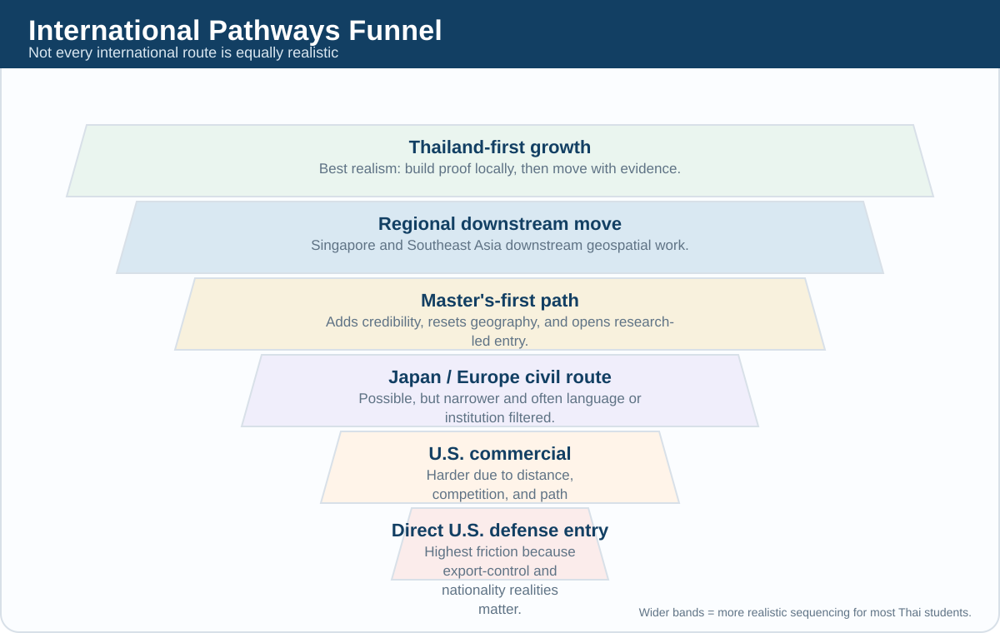
7. Deep Analysis: Is the Degree Worth It Financially?
Chapter 12 should end where it began: not with ideology, but with the student's decision. A university choice is financially worth it if it creates a reasonable downside floor, a believable upside path, and acceptable risk. The degree passes that test only under specific conditions.
The strongest argument for
The degree can absolutely pay off if the student uses it as a technical platform rather than a brand fantasy. The Thai salary floor is real, not imaginary. GIS, remote sensing, satcom systems, data engineering-adjacent roles, and location intelligence can support a stable middle-class start and strong long-run growth. The upside improves sharply if the student becomes a hybrid builder who can code, automate, analyze, and communicate. In that version of the story, the degree is not a narrow space gamble. It is an engineering-plus-data launchpad with regional optionality.
That matters more than it sounds. A strong KMITL student who graduates with Python projects, GIS automation, remote-sensing work, one meaningful internship, and a polished portfolio is not trapped in a tiny Thai space-hardware niche. They can target multiple adjacent markets. That optionality has real economic value.
The strongest argument against
The degree is financially weak if the student buys the marketing story but not the execution burden. There is no automatic Thai salary premium for "space" wording. There is no guarantee of elite international mobility. The hardware market is narrower than many teenagers think. The most prestigious foreign outcomes are exactly the ones with the highest access friction. A passive student can therefore end up in the worst of both worlds: a difficult engineering degree without the portfolio depth needed to monetize its hybrid promise.
This downside is not hypothetical. It is the most realistic failure mode. The graduate may still find work, but the outcome could compress into modest-pay support roles, generic implementation work, or broad engineering positions that do not reward the degree's conceptual ambition. In plain language, if the student is not prepared to become unusually self-directed, the degree's economic story weakens substantially.
Reasoned judgment
The degree is financially worth it for a student who meets three conditions. First, they genuinely like quantitative and technical work enough to survive an engineering curriculum without breaking. Second, they are willing to push toward the geospatial-data and systems side, because that is where Thai and regional employability is strongest. Third, they understand early that international aerospace access is uneven and plan around realistic mechanisms rather than fantasy exits.
The degree is financially not worth it for a student whose main motivation is status, vague love of space, or the assumption that a rare-sounding major automatically leads to rare-salary outcomes. The market does not reward that kind of passivity.
If forced into a blunt answer, the chapter's verdict is this: the degree has a solid but conditional return. It is not a golden ticket. It is a leveraged platform. In the hands of a disciplined student, it can outperform ordinary engineering trajectories because it opens data, GIS, satcom, and regional international routes at the same time. In the hands of a passive student, the same ambiguity becomes a liability.
8. Chapter Takeaway
The financial answer is neither "space pays amazingly" nor "ITAR kills the degree." The honest answer is narrower and more useful. In Thailand, the degree pays like a mixed engineering-and-data credential, with the best upside on the geospatial, software, and systems side. Internationally, export-control rules do not ban Thai students from global careers, but they do make U.S. defense-heavy aerospace a poor default assumption. The degree is worth it only if the student aims at the accessible value pool: GIS, remote sensing, location intelligence, data infrastructure, satcom-ground operations, and carefully sequenced regional or graduate-study pathways.
Sources
Public salary pages and vacancy pages referenced in this chapter were checked on April 12, 2026. Job links are used as market signals and may change or expire.
- Adecco Thailand Salary Guide 2026 press release
- Adecco Thailand 2025 salary guide: Data Scientist / Data Engineer
- Adecco Thailand 2025 salary guide: Data Analyst
- Adecco Thailand 2025 salary guide: Systems Engineer
- Adecco Thailand 2025 salary guide: Network Engineer
- Adecco Thailand 2025 salary guide: Electrical Engineer
- Jobsdb Thailand salary guide: Data Analyst
- Jobsdb Thailand salary guide: Data Engineer
- Jobsdb Thailand salary guide: Systems Engineer
- Jobsdb Thailand salary guide: Network Engineer
- Jobsdb Thailand salary guide: Electrical Engineer
- U.S. DDTC guidance: Licensing of Foreign Persons Employed by a U.S. Person
- 22 CFR 120.62: U.S. person
- 22 CFR 120.63: Foreign person
- 22 CFR Part 125: Licenses for the Export of Technical Data and Classified Defense Articles
- BIS: Deemed exports
- BIS: What is a deemed export?
- JAXA: Employment Opportunities
- ESA: Find your path with ESA
- ESA Graduate Trainee vacancy example showing nationality eligibility language
- ST Engineering: Geospatial Solutions Developer
- ST Engineering: Engineer, Ground Control Station Operations Technologist
- ST Engineering: Software Developer - Flight & Ground Systems
- Grab Careers: Senior Data Scientist (GrabMaps)
- Grab Careers: Principal Product Manager, Geo Commercialisation
Part 6
Safety Net & Action Plan
Chapters 13-15
Explains pivot routes, how to use all four years intelligently, and the final go or no-go decision framework.
Chapter 13: Pivot Strategies
A student choosing this degree should not ask only, "Can I work in space?" The smarter question is, "If the narrowest part of the space market disappoints, what adjacent markets can I enter without wasting four years?" This chapter answers that question directly, with current Thai job signals and a practical translation map from KMITL coursework into employable roles.
Executive Summary
The best hidden advantage of KMITL's Space and Geospatial Engineering degree is not prestige. It is pivotability. As of April 12, 2026, current Thai hiring signals show a major gap between the depth of adjacent technical markets and the much smaller pool of pure geospatial or space-branded openings. Jobsdb currently shows hundreds of Bangkok openings in data engineering, cloud engineering, and network engineering, while GIS-specific openings remain in the single digits to low teens on some searches. That asymmetry matters. It means the degree becomes much safer if the student learns to translate its telecom, programming, GIS, and systems content into broader labor-market language.
The strongest pivot paths are not equal. Data engineering and data science are the largest and economically strongest pivots, but they require the most deliberate upskilling in SQL, Python, ETL, statistics, and cloud data tooling. Telecom and network engineering are the most structurally natural pivot, because the curriculum already leans heavily toward signals, circuits, communications, RF, GNSS, and ground systems. Cloud and platform work is highly attractive because Bangkok demand is broad, but this route rewards students who can think like infrastructure people rather than only app users. GIS consulting is the most identity-consistent pivot and often the easiest narrative transition, but the market is narrower and can cap out more slowly unless the student adds automation, domain expertise, or commercial skill.
The key conclusion is blunt. The degree is much more viable when treated as a launch platform into multiple technical markets than when treated as a one-shot bet on Thai space hardware. The student who learns resume translation, stack translation, and employer-language translation turns a niche-sounding degree into a flexible professional asset. The student who does not may end up with a difficult engineering credential that sounds interesting but is marketed too vaguely.
1. Why Pivotability Is One of the Degree's Main Economic Defenses
Most students and parents treat fallback plans as evidence of weakness. In reality, for this degree, a strong fallback plan is evidence that the student understands the market correctly. Thailand does not yet have a deep enough pure-space hiring base to justify blind specialization at age eighteen. The degree only becomes strategically strong when the student can move between space, telecom, GIS, software, and data language without losing credibility.
The market depth mismatch is real
Current April 2026 Jobsdb signals make the hierarchy clear. Data engineering openings in Bangkok are counted in the hundreds. Cloud engineering openings in Bangkok are also counted in the hundreds. Network engineering openings in Bangkok are counted in the hundreds. Telecommunications engineer openings across Thailand are counted in the high hundreds. By contrast, GIS engineer and GIS analyst openings on the same platform are much smaller, often in the single digits to low teens depending on the exact search. This does not mean GIS is dead. It means the specialized market is narrower than the adjacent technical market.
That is exactly why the degree's mixed structure can be valuable. A student with only remote-sensing identity has a smaller market. A student who can credibly market themselves as a telecom-capable, Python-capable, GIS-capable systems graduate has more entry doors.
The curriculum already contains pivot material
The degree is unusually suited to pivots because its curriculum is not purely about one artifact. It teaches programming, object-oriented programming, signals and systems, orbital mechanics, remote sensing, embedded systems, engineering electromagnetics, communications systems, data communications and networking, GIS, GNSS, spatial computing and AI, and ground station technology. In employer language, that curriculum can be reframed as some combination of software fundamentals, instrumentation, network logic, location intelligence, applied data analysis, and systems integration.
The market does not reward the official curriculum title. It rewards the parts of the curriculum that map to business need. This is why pivot strategy is not a backup appendix. It is central to the degree's value.
| Market lane | Current visible depth signal | Why SGE can enter | Main weakness to fix |
|---|---|---|---|
| Data engineering and data science | Hundreds of visible Bangkok openings | Python, statistics, remote sensing data, spatial AI, sensor data logic | Students often lack production data engineering depth |
| Telecom and network engineering | Hundreds of visible openings in Bangkok and Thailand | Signals, RF, communications, networking, GNSS, ground systems | Must prove practical network implementation and troubleshooting |
| Cloud and platform engineering | Hundreds of visible Bangkok openings | Networking, systems thinking, automation potential, Linux-friendly mindset | Lack of infrastructure-as-code and deployment proof |
| GIS consulting and enterprise geospatial | Smaller but highly relevant market | Direct curriculum fit in GIS, remote sensing, GNSS, spatial analytics | Narrower vacancy pool and slower ceiling for non-technical operators |

2. Pivot A: Data Science and Data Engineering
This is the strongest economic pivot if the student can actually do the work. It is also the path most likely to be romanticized incorrectly. The student should not imagine themselves becoming a fashionable "AI person" just because the curriculum contains spatial AI or programming. The route is real, but only for students willing to become strong in data plumbing, data quality, and statistical thinking.
Why this pivot is attractive
The Thai market is visibly deeper here than in pure geospatial. Jobsdb currently shows hundreds of data-engineering openings in Bangkok and hundreds of data-science openings in Thailand. The employers are also diverse: banks, retailers, insurers, industrial firms, digital platforms, and consulting firms. Current Bangkok examples include SCG hiring a Data Scientist for its cement business, Bank of Ayudhya listing a Data Scientist role, Bangkok Bank listing both Data Scientist and Python-oriented roles, and LEARN Corporation explicitly welcoming fresh graduates for a Data Engineer contract role if they already understand ETL or data engineering fundamentals.
That last signal is especially important. LEARN's listing asks for Python, SQL, PySpark, Apache Spark, Airflow, Databricks, Snowflake, and familiarity with at least one cloud platform such as AWS, GCP, or Azure. This is almost a perfect illustration of how the pivot works. KMITL gives the student enough quantitative and coding foundation to approach the lane, but not enough to be automatically employable. The student must bridge the final distance.
Why SGE students can make this jump
Remote sensing and geospatial workflows are already data work. They involve raster handling, vector data cleaning, coordinate systems, feature extraction, labeling, classification, model output checking, and decision-oriented interpretation. Spatial computing and AI push that further toward ML. GNSS and sensor-related coursework create familiarity with noisy real-world data rather than clean classroom datasets. That matters, because many business datasets are messy, incomplete, and operationally annoying.
The mechanism is simple. A strong SGE student can repackage themselves not as a "space student trying to do data," but as a technical graduate already accustomed to working with large, imperfect, location-linked, time-linked, or sensor-linked datasets. That story is credible if and only if the portfolio proves it.
What the student must add
The missing layer is production discipline. Thai data jobs increasingly ask for skills that do not arise automatically from engineering coursework: writing reliable SQL, designing ETL pipelines, working in notebooks and version control without chaos, using cloud storage and compute, orchestrating jobs, documenting assumptions, and communicating model limitations to non-technical stakeholders. A student who only does Jupyter experiments and classroom scripts will struggle.
The right upskilling sequence is usually:
- SQL strong enough to join, filter, aggregate, and debug business data.
- Python beyond homework, especially pandas, NumPy, scikit-learn, and clean project structure.
- At least one pipeline pattern such as Airflow, scheduled scripts, or ETL on a cloud platform.
- One end-to-end project where raw data becomes a cleaned dataset, model, dashboard, or operational output.
When this pivot works badly
It fails when the student tries to skip foundations and sell themselves as AI-first. Thai employers increasingly know the difference between someone who can really build and someone who has only touched prompt engineering or copied model tutorials. For SGE students, the winning move is to start with data engineering-adjacent credibility, then move upward into analytics, ML, or spatial AI when the fundamentals are strong.
3. Pivot B: Telecom and Network Systems
This is the most natural technical pivot from the degree, because large parts of the curriculum already speak this language. It is not a glamorous fallback, but it is a credible one.
Why it is structurally natural
The program sits inside a telecommunications-influenced environment, and the upper-year curriculum shows that clearly: RF Systems, Communication Systems, Data Communications and Networking, Satellite and Space Communications, GNSS, and Ground Station System and Technology. That means the student is not inventing a pivot from nowhere. They are extending an existing engineering identity.
Current Thai signals support the viability of this lane. Jobsdb currently shows hundreds of network engineering openings in Bangkok and well over one hundred telecommunications engineer openings across Thailand. Current listings include AIS for Core Network Planning Engineer, Huawei Thailand for IP Network Engineer and Core Network-related roles, FBH Technology for telecom technical support tied to FTTx and equipment commissioning, and Zenith for Network Engineer roles welcoming early-career candidates.
Who hires and what they actually need
The relevant employer types are broader than students think. They include mobile operators such as AIS and True, vendors such as Huawei and Hytera, data-center operators such as SUPERNAP, enterprise infrastructure teams, rail and transport communication operators, system integrators, and field-service organizations. The work itself is also broader than "building a satellite link." It may involve network planning, IP design, transmission, FTTx support, commissioning, hardware integration, monitoring, log analysis, escalation, or site troubleshooting.
This matters because a student who imagined aerospace but discovers they actually like networks has not failed. They have found one of the degree's most monetizable adjacent lanes.
What KMITL students must prove
The main weakness is practical operations proof. Employers in telecom and network work care less about conceptual elegance and more about whether the candidate can read network diagrams, understand routing and switching logic, follow procedures, configure equipment safely, document issues, and keep calm when real systems fail. The curriculum gives theoretical support, but students need extra evidence such as lab projects, packet analysis, mini-network builds, SDR or RF experiments, Linux practice, or CCNA-level fluency.
The smart framing here is not to pretend the student already has five years of telecom depth. It is to present a technically serious junior profile: communications systems background, familiarity with RF and GNSS concepts, networking coursework, hands-on troubleshooting habits, and willingness to work in operational environments.
The strongest argument against this pivot
The downside is that some telecom roles can become procedural rather than strategically expansive, especially if the student enters through support-heavy work and does not keep learning. The market is larger than the GIS market, but not every telecom role compounds equally. Students should use this pivot as an entry path into higher-value systems, cloud-network, or architecture work rather than treating first-job stability as the finish line.
4. Pivot C: Cloud and Platform Engineering
This is one of the best pivots for students who like systems more than fieldwork and who are willing to become infrastructure-literate. It is also the pivot where superficial certification-chasing can waste time.
Why the opportunity is real
Bangkok's cloud market is visibly large. Jobsdb currently shows hundreds of cloud-engineering openings in Bangkok. Examples include Bank of Ayudhya's Cloud Engineer / DevOps Engineer role for Krungsri Nimble, which emphasizes managing AWS and OpenShift infrastructure for availability, reliability, and security, and SCB TECH X's Cloud Network & Service Integration Engineer role, which explicitly references AWS, Azure, GCP, multi-cloud networking, infrastructure-as-code, and DevOps pipelines. Bangkok Bank is also hiring for Cloud Engineer work around private and hybrid cloud environments.
The lesson is important. The cloud path is not just for computer science students. It is open to technically disciplined people who understand systems, networks, security, and automation. SGE students can fit that profile if they build the missing layer.
Why SGE can plausibly pivot here
Cloud work is not only about writing web apps. It is about understanding architecture, failure points, connectivity, observability, configuration, permissions, deployment, and operations. Students who survive signals, electromagnetics, communications, and embedded systems are often more comfortable with system-level thinking than they realize. Ground station concepts and network coursework can also support the transition because both teach dependency chains and operational reliability.
The weakness is not intelligence. It is unfamiliar tooling. Most SGE students will need deliberate exposure to Linux, Git, Docker, Terraform or another infrastructure-as-code tool, CI/CD habits, and one cloud platform deep enough to do something real.
Certification strategy: useful, but only in the right order
Certification is where students often overspend. Official vendor guidance is helpful here. AWS Certified Cloud Practitioner is explicitly marketed as a foundational starting point and costs 100 USD. AWS Solutions Architect - Associate costs 150 USD and AWS says candidates are ideally people with about one year of hands-on experience designing cloud solutions, though some candidates with one to three years of IT experience use it as a starting point. Google Cloud's Cloud Digital Leader costs 99 USD with no formal prerequisites. Microsoft positions Azure Fundamentals as a beginner-level starting point for foundational cloud knowledge.
The practical judgment is this: one foundational certificate can help organize learning and signal seriousness, but certificates without projects are weak. For this degree, the better sequence is project first, then cert, then targeted applications. A small but real deployment beats a pile of exam badges.
| Credential or training | Current official signal | Best use for SGE student | When it is overrated |
|---|---|---|---|
| AWS Certified Cloud Practitioner | Foundational exam, 100 USD | Good first cloud signal for students with limited IT background | If treated as proof of employable engineering depth by itself |
| AWS Solutions Architect - Associate | Associate exam, 150 USD, AWS recommends about 1 year hands-on experience | Useful after one real deployment or infrastructure project | If taken too early as pure status collection |
| Google Cloud Digital Leader | 99 USD, no prerequisites | Good for business-facing cloud literacy or product-oriented students | If the target role is hands-on engineering and no build work exists |
| Azure Fundamentals | Beginner-level certification path focused on core Azure concepts | Reasonable entry point for Thai enterprise-cloud environments | If used as a substitute for networking and systems practice |
The real barrier
The cloud pivot is not blocked by degree title. It is blocked by the absence of operational proof. If the student can show a small system running on cloud infrastructure, logging correctly, handling data, and failing gracefully, the degree becomes much less of a problem. If the student can only say they are "interested in cloud," the market will ignore them.
5. Pivot D: GIS Consulting and Enterprise Geospatial
This is the most intuitive pivot because it keeps the student's academic identity largely intact. It is also the path that many outsiders imagine when they hear the degree title. The mistake is to think that because the narrative is smooth, the labor market is automatically large. It is not.
Why this path is still important
Even though the vacancy pool is smaller than data, cloud, or networking, the fit is unusually direct. Current Thai signals are very clear. ERM is hiring for GIS Consulting Associate or Senior Associate work in Bangkok, using ArcGIS Pro and supporting environmental impact and planning work. CDG Group is hiring for GIS Business Support tied to disaster, agriculture, retail, and AI-related GIS solutions. RIMES has a GIS Specialist role focused on surveying, mapping, digitization, integration, and GIS database maintenance. Thaicom is hiring for geospatial-solution commercialization, which shows that the market includes not only analysis roles but also technical-commercial roles.
These examples matter because they prove the geospatial path is not fictional. It exists in environmental consulting, implementation, early warning systems, enterprise platforms, and commercial geospatial solutions.
What the work actually looks like
GIS consulting is not only drawing maps. In a firm like ERM, it can mean preparing ArcGIS Pro outputs for environmental and social impact assessments, supporting spatial analysis, integrating remote sensing, and translating location data into project decisions. In a firm like CDG or Esri Thailand's ecosystem, it may mean implementation support, solution configuration, customer coordination, dashboarding, field data setup, or project delivery. In organizations like RIMES, it can become operational mapping and database stewardship with real public-risk consequences.
This is why the GIS path is best for students who like both technical work and applied context. The strongest people in this lane can talk to clients, interpret requirements, clean data, produce reliable outputs, and explain what the map means for a real decision.
How to avoid being trapped at the low end
The ceiling problem in GIS usually hits people who stay tool-dependent instead of becoming solution-capable. The student who only knows menu clicks in ArcGIS risks stagnation. The student who adds Python, ArcGIS automation, data modeling, web apps, imagery interpretation, or domain expertise in sectors like utilities, ESG, transport, or agriculture can move much faster.
Esri Thailand's own market positioning reinforces this. Its public materials emphasize ArcGIS as enterprise technology, with integration into AWS and Azure environments, data-science capability, cloud GIS, managed services, and professional services. Its current Thai training catalog also shows practical pathways: the ArcGIS Pro: Essential Workflow e-learning course is currently listed at 5,900 THB before VAT, and the curriculum explicitly covers creating, managing, analyzing, and sharing data. That is useful, but the economic lesson is bigger. Enterprise GIS is not just cartography. It is platform work.
Why this pivot can be underrated
The GIS lane is often dismissed because it looks smaller than mainstream software. That is true at the vacancy-count level, but the fit premium is higher for this degree than for many other majors. An SGE graduate can often tell a more believable story here than a generic IT graduate can, especially if they understand remote sensing, GNSS, imagery, and spatial reasoning rather than only software syntax.
6. Resume Translation: How to Convert the Degree Into Employer Language
This is where many students lose value. They describe what they studied instead of what they can do. Employers do not hire course titles. They hire evidence of function.
The core rule
Do not make the employer decode your degree for you. If you apply to a data role, your resume should read like a junior data person with spatial depth. If you apply to a telecom role, your resume should read like a communications-and-systems candidate. If you apply to a cloud role, your resume should emphasize networks, Linux, automation, and deployments. If you apply to GIS consulting, your resume should focus on analysis, implementation, tools, and stakeholder outputs.
| Raw academic item | Weak resume wording | Better translated wording | Best target lanes |
|---|---|---|---|
| Embedded Systems and Applications | Studied embedded systems | Built microcontroller-based data acquisition workflow with sensor interfacing, serial communication, and debugging under hardware constraints | Telecom, hardware test, IoT, cloud-edge, data acquisition |
| Data Communications and Networking | Took networking course | Implemented and analyzed network communication scenarios, documented failure cases, and applied protocol concepts to system troubleshooting | Telecom, network, cloud, systems support |
| GNSS Technology and Location Intelligence | Learned about GNSS | Analyzed location datasets and positioning outputs to derive usable spatial insight for navigation and decision support | GIS, data, mobility, telecom, logistics |
| Remote Sensing | Studied remote sensing imagery | Processed and interpreted imagery to classify, compare, and communicate land or surface conditions using spatial analysis workflows | GIS, consulting, data, ESG, agriculture |
| Spatial Computing and Artificial Intelligence | Worked on AI project | Developed spatial-analysis or machine-learning workflow using Python-based preprocessing, feature engineering, validation, and result interpretation | Data science, GIS, computer vision, analytics |
| Ground Station System and Technology | Studied ground station systems | Worked on communications and monitoring concepts relevant to telemetry, system integration, and mission-support operations | Telecom, satcom, network operations, systems engineering |
Project titles matter too
A student should not title a project "Team Project 2." That says nothing. Better titles would be "Flood-risk geospatial dashboard using satellite and administrative data," "GNSS location quality analysis pipeline," "Microcontroller sensor telemetry prototype," or "Spatial demand-mapping model for route planning." The project title itself should help the recruiter imagine a use case.
What to remove from the resume
Remove vague identity phrases such as "passionate about space technology" unless the rest of the resume proves technical depth. Remove lists of software with no project context. Remove generic claims like leadership, teamwork, and problem solving unless there is evidence. Replace them with built things, analyzed things, fixed things, or delivered things.
What to add
Add a targeted headline, a concise skill stack, one or two role-relevant projects, and evidence of tools. For example, a data-targeted version might lead with Python, SQL, pandas, scikit-learn, QGIS, and ETL exposure. A telecom version might lead with communications systems, RF fundamentals, GNSS, networking, Linux, and troubleshooting. A GIS consulting version might lead with ArcGIS Pro, QGIS, remote sensing, spatial analysis, dashboarding, and client-facing project support.
7. Skill and Certification Map by Pivot
The smartest approach is not to collect everything. It is to make one pivot legible first. The student should choose one primary lane and one secondary backup lane, then build around that pair.
| Pivot lane | Must-have proof | Useful but secondary | Good signal example | Bad student mistake |
|---|---|---|---|---|
| Data science / data engineering | SQL, Python, one ETL or modeling project, data-cleaning discipline | Cloud cert, notebooks, dashboard tools | End-to-end pipeline from raw data to deployable insight | Calling basic plotting "AI" |
| Telecom / network | Networking concepts, troubleshooting, Linux comfort, lab evidence | CCNA-style preparation, SDR experiments, vendor familiarity | Mini network build, protocol analysis, or telecom operations project | Only knowing theory and no operational practice |
| Cloud / platform | Linux, Git, deployment, automation, one real infrastructure project | AWS or Azure entry cert, Docker, Terraform | Hosted application or data workflow with monitoring and security basics | Collecting certs with no working build |
| GIS consulting / enterprise geospatial | ArcGIS or QGIS competence, clean deliverables, domain context | Esri training, web GIS, Python automation | Portfolio with maps, analysis notes, dashboard, and business explanation | Only showing screenshots of maps with no decision logic |
Esri Thailand currently lists ArcGIS Pro: Essential Workflow at 5,900 THB before VAT. That is a reasonable training spend if the student already has active GIS work to strengthen. It is not a substitute for a portfolio. The same logic applies to cloud certifications: useful signals, but weak if detached from real builds.

8. Deep Analysis: Which Pivot Is Actually Best?
A good pivot strategy is not the one that sounds most sophisticated. It is the one with the best combination of labor-market depth, degree fit, and realistic upskilling distance.
Strongest argument for the data pivot
The market is larger, salaries scale well, and spatial data can become a differentiator rather than a limitation. A student who successfully moves into data engineering or applied analytics can escape the narrowness of the Thai space market and access broader digital demand.
Strongest argument against the data pivot
The gap is real. Many SGE students will underestimate how much SQL, statistics, pipeline engineering, and business-data hygiene they need. Without serious self-training, the pivot remains aspirational.
Strongest argument for the telecom pivot
It is closest to the underlying curriculum. The student is not forcing a radical identity change, and Thailand has a real communications and network labor market.
Strongest argument against the telecom pivot
Some early roles can become routine and do not automatically deliver the same salary acceleration as stronger digital-data paths unless the student keeps moving upward.
Strongest argument for the cloud pivot
The vacancy depth is strong, the enterprise demand is broad, and the systems mindset from the degree can transfer surprisingly well.
Strongest argument against the cloud pivot
The tooling gap is large enough that weak students can fool themselves. A certificate without operational skill will not fix that.
Strongest argument for the GIS consulting pivot
It is the smoothest narrative transition and the most authentic use of the degree's geospatial identity. It also supports work in agriculture, ESG, utilities, disaster management, planning, and environmental consulting.
Strongest argument against the GIS consulting pivot
The market is smaller, and non-technical GIS roles can plateau if the student does not add automation, coding, or domain depth.
Reasoned judgment
If the student is strong in coding and statistics, the best long-run pivot is data engineering or data science, with geospatial as a differentiator rather than the whole identity. If the student is stronger in systems, signals, and operational troubleshooting, telecom and cloud form the most practical pair. If the student is strongest in spatial reasoning, mapping, imagery, and client-facing interpretation, GIS consulting is the most natural primary lane, but it should be reinforced with Python or enterprise-platform capability to avoid ceiling risk.
The chapter's overall verdict is therefore specific: the safest two-pivot combination for this degree is usually telecom plus cloud, or GIS plus data. Those combinations preserve the degree's existing strengths while opening larger markets.
9. Chapter Takeaway
The most important safety net in this degree is not a government job or a lucky internship. It is the student's ability to pivot intelligently. The strongest pivots are data, telecom, cloud, and enterprise GIS, but each requires a different translation of the same degree. The program is worth more when the student learns to market functions, tools, and delivered outcomes rather than academic labels. In practical decision terms, the degree is much safer than it looks if the student is proactive, and much riskier than it looks if the student is passive.
Sources
Public vacancy pages and market pages referenced here were checked on April 12, 2026. Job counts and listings can change quickly; they are used as live market signals, not permanent statistics.
- Jobsdb Thailand: Data Scientist jobs in Bangkok
- Jobsdb Thailand: Data Engineer jobs in Bangkok
- Jobsdb Thailand: Cloud Engineer jobs in Bangkok
- Jobsdb Thailand: Network Engineer jobs in Bangkok
- Jobsdb Thailand: Telecommunications Engineer jobs
- Jobsdb Thailand: GIS Engineer jobs
- ERM: GIS Consulting Associate / Senior Associate
- Jobsdb Thailand: CDG Group GIS Business Support
- Esri Thailand: ArcGIS
- Esri Thailand: Esri Services
- Esri Thailand: ArcGIS Pro - Essential Workflow
- Esri Thailand: Building Web Apps with ArcGIS Experience Builder
- AWS Certified Cloud Practitioner
- AWS Certified Solutions Architect - Associate
- Google Cloud: Cloud Digital Leader
- Microsoft Learn: Fundamentals certifications
- Microsoft Learn: Azure Fundamentals
Chapter 14: 4-Year Playbook
A degree like this should not be managed semester by semester in panic mode. It should be run like a four-year campaign. The student needs to know what to optimize in Year 1, what to delay, what to ignore, when to enter competitions, when internships actually matter, and how to turn each year into visible proof of employability.
Executive Summary
The correct way to survive and monetize KMITL's Space and Geospatial Engineering degree is not to do everything. It is to do the right things in the right order. The student who tries to collect random certifications, scattered hackathons, and generic club activity from the beginning often ends up with an impressive-looking but economically weak profile. The student who sequences proof more intelligently does much better. Year 1 should be about academic survival, computing habits, and one small portfolio artifact. Year 2 should be about choosing a lane, entering labs, and creating the first public technical outputs. Year 3 is the highest-leverage year because the curriculum includes industrial training; this is when internships, competitions, and path-specific certifications can convert into real hiring signal. Year 4 should be about capstone or co-op execution, resume translation, and portfolio packaging for employers.
Current April 12, 2026 public signals support a Thai-first playbook built around real institutions and recurring opportunities. KMITL itself has advanced labs and industry-supported labs with Huawei, ZTE, and Esri. NARIT currently maintains an active internship application page. GISTDA has publicly documented structured internship and co-op intake in the past and currently runs a training center plus current space-data hackathons such as Regenerative Future Year 3, announced in March 2026 with total prizes of 120,000 THB. For competitions, the most practical recurring targets are NSC Thailand for software-building, NASA Space Apps Bangkok for open-data and hackathon proof, and Kibo-RPC for students who are serious about programming and space systems.
The deepest conclusion is simple. The four-year plan should optimize for compounding evidence, not activity count. By graduation, the student should have a role-specific portfolio, one real internship or equivalent industry project, one meaningful upper-year artifact such as capstone or co-op output, and only the certifications that strengthen the chosen lane. Done correctly, this degree becomes much more employable than its niche title suggests. Done badly, it becomes a stressful collection of half-finished signals.
1. The Operating Principle: Build Proof, Not Just Participation
A four-year playbook only works if the student understands what counts as proof. Recruiters and supervisors are not impressed by busyness by itself. They want a visible trail of competence. That can be a clean GitHub repository, a GIS dashboard, a classification workflow, a network lab write-up, a capstone report, an internship recommendation, or a competition project that can be explained clearly. Activities that do not create proof are less valuable than they appear.
The playbook must fit the degree's real risk profile
This degree has three structural risks. First, the early-year workload can swallow time that students thought they would use for side projects. Second, the degree title is new and niche enough that outside employers may not immediately understand it. Third, the most glamorous "space" outcomes are not the easiest ones to access. The playbook must therefore reduce those risks one by one: survive the academics, translate the degree into employer language, and target the broader adjacent market rather than waiting for narrow perfect jobs.
The wrong way to spend four years
The wrong pattern is very common. In Year 1, the student joins many activities but builds nothing. In Year 2, they panic and take random online certificates. In Year 3, they accept the first available industrial training spot even if it teaches little. In Year 4, they try to repair everything with a rushed capstone and a generic resume. That sequence produces exhaustion, not leverage.
The right way to spend four years
The right pattern is slower and more disciplined. Each year has one dominant job. Year 1 builds survivability and basic technical hygiene. Year 2 builds direction. Year 3 builds external proof. Year 4 builds conversion into employment or graduate study. This chapter follows that logic intentionally.
| Year | Main objective | What success looks like | Main mistake to avoid |
|---|---|---|---|
| Year 1 | Academic survival and tool literacy | Good enough GPA, working programming habits, one small technical artifact | Prestige-chasing before basics exist |
| Year 2 | Choose a lane and start visible proof | First portfolio pieces, first competition or lab involvement, cleaner role identity | Trying to be equally serious about every track |
| Year 3 | External validation | Industrial training, serious project, targeted credential if useful, real references | Wasting industrial training on weak placement |
| Year 4 | Conversion to job or graduate study | Capstone or co-op as hiring asset, role-specific resume, portfolio packaging | Last-minute activity collecting |
2. Year 1: Survive the Filter and Start Small
Year 1 is not the right year to act like a miniature space-industry celebrity. It is the year to become stable enough that later opportunities do not collapse. The student is adjusting to calculus, physics, mechanics, engineering drawing, programming, and the general pressure culture of engineering school. The smartest Year 1 student is often not the most publicly active one. It is the one who quietly becomes hard to derail.
Primary targets for Year 1
The first target is academic survivability. A degree like this does not reward romantic underestimation. If calculus and physics are weak, fix them early. The second target is digital hygiene. The student should learn GitHub basics, file organization, version control habits, and how to document a small project in English. The third target is tool familiarity. At minimum, the student should become comfortable with Python basics, spreadsheet cleaning, simple plotting, and one entry-level mapping environment such as QGIS or ArcGIS public tools.
What Year 1 portfolio work should look like
Year 1 portfolio work should be small, boring, and complete. This is better than a giant unfinished idea. Good Year 1 projects are things like a Bangkok PM2.5 map, a simple rainfall or flood-incident dashboard, a GPS drift experiment around Lat Krabang, a small image-classification exercise using public satellite imagery, or a route-optimization notebook using open map data. These are not meant to impress global aerospace recruiters yet. They are meant to prove the student can finish a technical thought.
Competitions in Year 1: low stakes only
Year 1 students can join competitions, but only if the event helps learning rather than cannibalizing survival. NASA Space Apps is a good example of a lower-risk early event because it is explicitly open to all ages and skill levels and has a Bangkok local event. The 2025 global event was held on October 4-5, 2025, and the official site shows Bangkok as a local event. This kind of hackathon is useful because it teaches teamwork, presentation, data handling, and deadline discipline without pretending the student is already industry-ready.
What Year 1 students should avoid is over-committing to three or four competitions simultaneously. One event is enough. The goal is exposure, not medals.
Certifications in Year 1: mostly no
Most students should avoid expensive certifications in the first year. The return is weak because they still lack context. The exceptions are very lightweight foundation signals for students who are unusually organized. Microsoft positions Azure Fundamentals as a beginner entry point for cloud concepts. Google Cloud Digital Leader has no formal prerequisites and costs 99 USD. But even these should remain optional. A solid mini-project is usually more valuable in Year 1 than a certificate badge.
End-of-Year-1 milestone checklist
- A stable GitHub account or equivalent project archive.
- One small technical project with a readable README in English.
- Basic Python comfort for data handling, not just syntax drills.
- At least one spatial workflow attempted, even if simple.
- No failed semester caused by overcommitting to side activities.
3. Year 2: Pick a Direction and Start Getting Seen
Year 2 is the transition from student identity to pre-professional identity. The curriculum starts to look more serious: linear algebra, signals and systems, orbital mechanics, electric circuits, electromagnetics, embedded systems, remote sensing, and space electronics. This is also the year when students need to stop saying "I am interested in many things" and start saying "this is my current strongest lane."
Pick a primary lane and one backup lane
The cleanest Year 2 move is to choose one primary direction and one secondary backup. Typical combinations are GIS plus data, telecom plus cloud, or hardware plus systems. The student does not need to close every door permanently, but they do need a dominant narrative. Employers, supervisors, and competition judges respond better to a student whose work themes connect.
Use KMITL's lab structure as leverage
KMITL's department infrastructure matters here. The department publicly lists advanced labs in Earth-Space Communication, GNSS and Space Weather, space research, IoT and networking, signal processing, and antenna or electromagnetics. It also lists labs with industry support from Huawei, ZTE, and Esri, as well as fundamental labs in embedded systems, communication systems, and satellite and space work. Year 2 is the right time to enter that ecosystem, even informally. A student who can help in a lab, join a project, or support a small faculty task in Year 2 creates a much stronger Year 3 story.
Competitions that actually make sense in Year 2
Year 2 is the first year when competitions can produce real signal. The best examples are competitions that map closely to the degree's economic lanes. NSC Thailand is one of the strongest options for students leaning toward software, data, or applied systems. The latest visible official cycle on the NSC site is the 27th contest, where proposal submission ran from February 14 to May 23, 2025 and undergraduate students in Thailand were explicitly eligible. That is useful because it is a national software contest, not a niche campus event, and it forces students to turn an idea into a working submission.
Another strong option is the Kibo Robot Programming Challenge. JAXA's official Kibo-RPC pages show that the 6th challenge opened in February 2025 and later drew 738 teams from 13 countries, regions, and organizations, with Thailand accounting for 208 teams in the application results. This is not the right competition for students who dislike coding. But for a student serious about robotics, autonomy, systems, or space-programming credibility, it is one of the cleanest bridges between space branding and real technical work.
Year 2 students with a geospatial tilt should also watch recurring geospatial competitions and recognition systems such as Esri's Young Scholars program. That award is meant for current undergraduate and graduate students with exemplary GIS work. It should not be treated as an immediate Year 2 target for most students, but it is a very useful upper-year benchmark because it pushes the student to think in terms of polished, communicable GIS work rather than only classroom output.
Start one role-relevant portfolio series
By the end of Year 2, the student should have more than one isolated project. They should have a short series that makes their interests visible. For example:
- GIS or data lane: flood mapping, land-use classification, and an air-quality dashboard.
- Telecom lane: packet analysis, small network design, and a communications-system simulation.
- Cloud lane: a simple deployed data app, a logging pipeline, and one automation script.
- Hardware or systems lane: sensor telemetry prototype, embedded controller project, and test documentation.
End-of-Year-2 milestone checklist
- A clear primary lane and backup lane.
- At least two portfolio artifacts that relate to each other.
- One lab, competition, or faculty-linked activity with real output.
- Basic employer-language resume draft, even if still early.
- No dependence on course grades alone as the whole career strategy.
4. Year 3: Convert Coursework Into External Proof
Year 3 is the economic hinge of the whole degree. By this point the curriculum contains GIS, satcom, GNSS, spatial AI, communications, data networking, ground station systems, and the space and geospatial laboratory. It is also the year before the required summer industrial training. This is where students stop being judged mainly by potential and start being judged by evidence.
Industrial training is not a box-ticking exercise
The most important Year 3 decision is where to spend industrial training. A weak placement can waste the best conversion window in the degree. A strong placement can reframe the whole profile. The student should therefore search earlier than most classmates. Waiting until everyone is desperate is a bad strategy in a niche field.
The ideal placement is not necessarily the most famous logo. It is the one that gives one of four things: real tools, real data, real systems exposure, or a recommender who can describe the student's work concretely. If a well-known organization uses the intern as cheap administration, that is worse than a smaller organization that lets the student ship something meaningful.
Which internships are visibly real in Thailand
As of April 12, 2026, NARIT maintains an active internship application page. That alone makes it valuable because it signals an official, discoverable route rather than a rumor-based opportunity. GISTDA also has publicly documented internship and co-op intake structures. The latest detailed public notices are not brand-new, so this chapter is careful here: publicly visible GISTDA pages show structured requirements such as year standing, GPA thresholds, minimum duration, and even internship allowances in prior cycles. That is enough to prove the mechanism exists, even if students must check the current round directly.
There is a strategic lesson inside this. Public-sector and research-oriented organizations are often easier for SGE students to target intelligently than purely private "space startup" fantasies. They are more visible, more domain-relevant, and more likely to value satellite, geospatial, remote-sensing, or space-systems context.
Use competitions only if they reinforce the internship story
Year 3 is also the right time to become selective about competitions. The latest GISTDA Regenerative Future Year 3 announcement, published in March 2026, is a good example of a competition that actually fits this degree. It is built around learning and using space technology and geospatial data for forest and conservation themes, and it offers total prizes of 120,000 THB. Crucially, it requires participants to complete training certificates and submit a proposal by the stated deadline. That means it combines learning, domain context, and deliverable pressure. This is much more useful than a generic innovation event with no technical residue.
The same logic applies to NASA Space Apps and Kibo-RPC. If the student already has a lane, these competitions can deepen it. If the student is still scattered, competitions can become a distraction disguised as ambition.
Certifications in Year 3: only path-matched ones
Year 3 is the first year when a paid certification can genuinely help, but only when it matches the chosen lane. A GIS-focused student can justify Esri Thailand's ArcGIS Pro: Essential Workflow course, currently listed at 5,900 THB before VAT, if they are already doing applied GIS work and need cleaner enterprise-style workflow. A telecom-oriented student can justify Cisco's entry networking track; Cisco currently lists the CCST Networking exam at 125 USD and explicitly describes it as foundational networking knowledge and a first step toward CCNA. A cloud-oriented student can justify AWS Certified Cloud Practitioner at 100 USD or, if already hands-on, AWS Solutions Architect - Associate at 150 USD. The cloud student who prefers Google Cloud can consider Cloud Digital Leader at 99 USD.
The discipline rule is simple: no more than one serious paid credential in Year 3 unless the student already has proof that makes the credential worth amplifying. Credentials should sharpen a story, not replace one.
What a strong Year 3 portfolio should contain
By the end of Year 3, the portfolio should stop looking academic and start looking employable. A strong portfolio now includes an internship report or sanitized industry case, a role-relevant project with clear outcomes, a polished GitHub or demo page, and one artifact that shows communication skill, such as a presentation deck, technical memo, story map, or dashboard walkthrough. This is the point where the student should be able to show a stranger what they actually know.
| Year 3 target | Best move | Weak move |
|---|---|---|
| Industrial training | Choose a placement with real data, systems, tools, or technical supervision | Accept any placement with no technical output |
| Competition | Pick one event aligned with lane and portfolio theme | Join multiple events with no follow-through |
| Certification | Take one path-matched credential after real practice | Buy several beginner certificates to look busy |
| Portfolio | Show internship, project, and communication artifact together | Upload raw code dumps with no explanation |
5. Year 4: Convert the Degree Into Employment
Year 4 is where students often either crystallize or unravel. The curriculum gives a crucial choice: Engineering Capstone Project or Cooperative Education in the first semester, followed by electives and general education in the second. This choice should not be made by convenience. It should be made by conversion logic.
Capstone versus co-op: decide by target outcome
Choose co-op if the student still lacks real external work proof and can secure a placement with meaningful tasks. Co-op is usually the stronger employment converter because it creates references, habits, and sometimes return offers. Choose capstone if the student already has strong internship proof and can build a project that is unusually publishable, demonstrable, or technically differentiated. A generic capstone is weaker than a good co-op. A strong, well-documented capstone can be stronger than a weak co-op.
Build three job-market packages, not one generic profile
By Year 4, the student should stop acting as if one CV fits all paths. The right move is to build at least three tailored application packages: one for GIS or geospatial roles, one for telecom or systems roles, and one for data or cloud roles if that path is plausible. These versions can share the same transcript and projects, but the ordering and wording should change. This is not dishonesty. It is translation.
Portfolio packaging matters as much as the work itself
The typical final-year mistake is to leave good work buried in folders, untranslated. The student should create a simple portfolio index page or document with the following for each project: title, problem, data or tools used, what was built, what went wrong, and why the output matters. A GIS project without interpretation is weak. A telecom project without system context is weak. A data project without data quality discussion is weak. Packaging shows maturity.
Certifications in Year 4: only if they close a gap
Year 4 is not the time to start collecting beginner credentials because graduation panic has arrived. The only certifications worth taking now are ones that close a specific hiring gap. If the student is applying to cloud roles and already has projects, one associate-level cloud exam may help. If the student is aiming at enterprise GIS implementation, a targeted Esri workflow course may help. Otherwise, time is better spent on applications, interview stories, English communication, and portfolio polishing.
What graduation-ready proof actually looks like
- One strong final artifact: capstone, co-op output, or major internship case.
- Three to five projects, with at least two directly relevant to the target job family.
- A role-specific resume instead of a generic degree-first resume.
- Evidence of communication: presentation, write-up, dashboard, demo, or poster.
- At least one person who can recommend the student based on real technical work.
6. Internships, Competitions, and Certifications by Path
Students often ask, "What should I do?" The better question is, "What should I do for my path?" The table below compresses the playbook into choices that fit the main lanes of the degree.
| Path | Best internship or placement types | Best competition types | Best certification or training options | Portfolio milestone by graduation |
|---|---|---|---|---|
| GIS and remote sensing | GISTDA, NARIT, ERM-style consulting, CDG or Esri ecosystem implementation, disaster or environmental projects | NASA Space Apps, GISTDA geospatial hackathons, Esri Young Scholar target | ArcGIS Pro workflow training, QGIS projects, optional web GIS training | Story map, dashboard, remote-sensing analysis case, clean GIS report |
| Telecom and systems | Operators, vendors, network integrators, ground systems, field engineering, data-center environments | Kibo-RPC, systems or networking competitions, technically demanding team projects | CCST Networking or CCNA path, Linux practice, SDR or network lab builds | Network lab write-up, communications-system simulation, troubleshooting artifact |
| Cloud and platform | Banks, digital enterprises, infrastructure teams, cloud operations, DevOps-style units | NSC, hackathons with real deployment, data or infra build challenges | AWS Cloud Practitioner or SAA, Azure Fundamentals, Google Cloud Digital Leader | Deployed app or pipeline with logging, automation, and architecture explanation |
| Data and spatial analytics | Analytics teams, consulting, digital platforms, geospatial product teams, research data groups | NSC, NASA Space Apps, Kaggle-style project building, domain hackathons | SQL, Python, optional cloud data credential, strong notebooks plus engineering discipline | End-to-end analysis pipeline with business or policy interpretation |
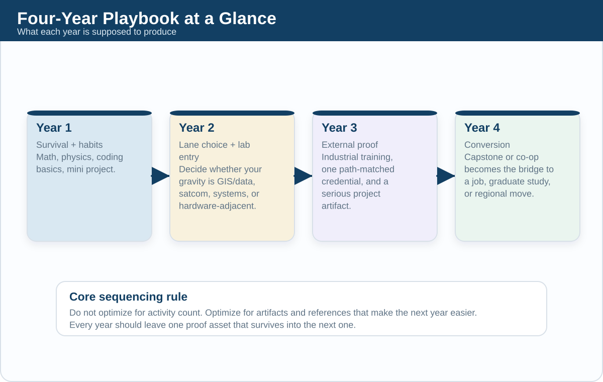
7. Deep Analysis: What Is Actually Worth the Student's Time?
The reason students need a playbook is that time is the real scarce resource, not ambition. The degree is demanding enough that every extra activity has an opportunity cost. So the final question is not what sounds useful. It is what produces the highest return per hour.
Strongest argument for internships and co-op
Real work environments create the fastest maturity jump. An internship or co-op can teach constraints, documentation, communication, tools, and pace in ways that classes cannot. It also gives the student references and realistic resume lines. For this degree especially, internships are powerful because they help decode the niche degree title for future employers. Once a student can say they worked with GISTDA, NARIT, a consulting team, or a network or cloud unit, the degree becomes easier to understand.
Strongest argument against internship obsession
Not all internships are equally useful. A weak placement with vague tasks and no output can consume time while producing very little proof. Students should therefore optimize for substance, not only logos. If no strong external placement exists, a serious lab-based or faculty-linked project can be better than a hollow internship.
Strongest argument for competitions
Competitions are useful when they force delivery under pressure. NSC, NASA Space Apps, Kibo-RPC, and domain hackathons can help students practice building, presenting, and collaborating. They are also good for portfolio material if the project survives after the event.
Strongest argument against competition overuse
Too many competitions create shallow work. A student can become very experienced at registration forms, slide decks, and demo-day excitement while never building durable technical depth. One or two aligned competitions are productive. Five scattered ones are usually noise.
Strongest argument for certifications
Certifications can reduce employer uncertainty if they sit on top of real work. A cloud or networking certificate can help a non-computer-science candidate signal seriousness. An ArcGIS workflow course can help a GIS student show enterprise-tool literacy. In a market that often filters quickly, a credible certificate can help the resume survive first contact.
Strongest argument against certification overinvestment
Certification is the easiest form of false productivity. Students can spend money and feel professional without becoming more employable. This is especially dangerous in a degree that already has a heavy course load. The student should assume every certificate is low-value unless it directly strengthens an existing project or application target.
Reasoned judgment
The highest-return sequence is this: build fundamentals first, enter one lane early, create small proof before big proof, then use Year 3 for real external validation. For most students, the best spending hierarchy is: portfolio first, internship quality second, one aligned competition third, and certifications fourth. That order is not glamorous, but it is what produces durable employability.
If the student has to choose only three career-building investments over four years, the smartest set is usually one strong internship or co-op, one serious capstone or portfolio centerpiece, and one lane-matched credential or competition. Everything else is secondary.
8. Chapter Takeaway
The winning playbook for this degree is simple to say and hard to execute: survive Year 1, specialize in Year 2, validate externally in Year 3, and package aggressively in Year 4. Internships matter most when they create real output. Competitions matter most when they reinforce a chosen lane. Certifications matter only after hands-on work exists. By graduation, the student should not just have studied space and geospatial engineering. They should have assembled a coherent body of proof that makes employers believe it.
Sources
Competition schedules and internship pages can change year to year. Links below were checked on April 12, 2026 and are used as current or latest-visible signals.
- KMITL Department of Telecommunications Engineering: Space and Geospatial Engineering
- KMITL Department of Telecommunications Engineering: Advanced Labs
- KMITL Department of Telecommunications Engineering: Labs with Industry
- KMITL Department of Telecommunications Engineering: Fundamental Labs
- NARIT internship application page
- GISTDA: student internship application guidance
- GISTDA: internship and co-op round details with requirements and benefits
- GISTDA Training Center
- SAPACE / GISTDA activities page showing Regenerative Future Year 3
- NSTDA: National Software Contest 2025 announcement
- NASA International Space Apps Challenge
- NASA Space Apps Bangkok 2025 local event page
- JAXA: Call for Team Participation in the 6th Kibo Robot Programming Challenge
- JAXA: Application Results for the 6th Kibo Robot Programming Challenge
- Esri Young Scholars program example
- Esri Thailand: ArcGIS Pro - Essential Workflow
- Learn ArcGIS project example
- AWS Certified Cloud Practitioner
- AWS Certified Solutions Architect - Associate
- Google Cloud: Cloud Digital Leader
- Microsoft Learn: Azure Fundamentals
- Cisco CCST Networking
Chapter 15: Final Verdict
The student does not need one more neutral summary. They need a decision. This final chapter pulls together the market reality, the academic risk, the living situation in Lat Krabang, the mental-health load, and the actual upside of the degree, then turns all of that into a blunt go or no-go framework.
Executive Summary
The final verdict on KMITL's Bachelor of Engineering in Space and Geospatial Engineering is neither a clean endorsement nor a rejection. It is a conditional yes. The degree is worth choosing for a specific kind of student: someone who can handle an engineering curriculum, accepts that the labor-market payoff will come more from GIS, data, systems, and telecom-adjacent work than from glamorous spacecraft fantasy, and is willing to build a portfolio aggressively. For that student, the degree has enough technical depth and enough pivot routes to become a strong platform. For the wrong student, it can become an exhausting, ambiguous major with a niche title and weak conversion.
The living environment reinforces that conditional judgment. KMITL is in Lat Krabang, roughly 30 kilometers east of central Bangkok, and the area feels more airport-edge, commuter, and practical than classic city-campus romantic. This can actually be an advantage if the student wants a more cost-manageable base: current official dormitory fees range from very low non-air-conditioned rooms to substantially higher modern air-conditioned blocks, while recent off-campus listings near KMITL show budget apartments around 4,500-7,500 THB per month and condos commonly around 7,500-15,000 THB. The tradeoff is obvious. Lat Krabang is workable and often cheaper than central-city student life, but it is not the right fit for students whose ideal university experience depends on dense urban social energy.
The hardest part of the decision is psychological, not only academic. The coursework is demanding, the degree identity requires translation, and the student must be proactive. KMITL does have support systems: the Office of Student Development and Alumni currently advertises one-on-one counseling, both onsite and online, with 45-minute appointments and a Mind Room in the Rector's Building. That is a real positive. But support availability does not erase the structural burden of a challenging engineering program. The final conclusion is therefore blunt: go if the student is technically motivated, self-directed, and realistic about outcomes; no-go if the main driver is prestige, vague love of space, or hope that the degree will explain itself to the job market.
1. The Final Decision Standard
A university choice should survive five tests at once. The program should be academically survivable, economically defensible, psychologically tolerable, geographically workable, and strategically flexible. KMITL SGE passes those tests only with conditions.
Academic survivability
The degree is real engineering. That means calculus, physics, circuits, signals, electromagnetics, programming, and later systems or geospatial layers. Students who are weak in math or who dislike sustained technical work are not buying a romantic science-communication degree. They are buying pressure.
Economic defensibility
The degree is economically viable because it can map into multiple markets: GIS, remote sensing, data, telecom, satcom support, cloud, and systems. It is not economically viable because Thailand suddenly has a giant pure-space hiring base. That distinction is the entire story.
Psychological tolerability
The degree is psychologically tolerable only for students who accept ambiguity and delayed payoff. A mainstream program with obvious employer mapping may be emotionally easier. This program asks the student to do some of that translation work themselves.
Geographic workability
Lat Krabang is workable if the student accepts the campus-life tradeoff. It is not central Bangkok. That affects commute, lifestyle, and how often the student can or wants to participate in city-based opportunities.
Strategic flexibility
This is where the program is stronger than it first appears. If the student is serious, the degree can branch into enough adjacent tracks that it is safer than a pure title-reading would suggest.
| Decision dimension | Verdict | Why |
|---|---|---|
| Academic difficulty | High | Telecom-engineering core plus upper-year geospatial and systems work |
| Thai employability | Moderate to strong if student pivots well | Best routes are GIS, data, telecom, systems, and implementation roles |
| Prestige power | Moderate, not dominant | KMITL is credible, but the program is new and not the obvious prestige default |
| International access | Selective | Real routes exist, but U.S. defense-heavy aerospace is high-friction and Europe is citizenship-filtered in some tracks |
| Student-life convenience | Moderate | Lat Krabang can be practical and cheaper, but less naturally urban and central |
| Mental-load risk | Meaningful | Engineering pressure plus self-direction plus outcome ambiguity |
2. Lat Krabang Reality: The Place You Are Actually Choosing
Students often choose majors while imagining a vague campus life that does not match the physical place they will actually inhabit. That is a mistake. Choosing KMITL means choosing Lat Krabang.
Location and atmosphere
KMITL's own campus material places the institute at 1 Chalong Krung 1 Alley, Lat Krabang, Bangkok, and the international engineering campus guide describes the campus as approximately 30 kilometers east of the city center. That detail matters more than marketing language. The area is not a central-Bangkok academic bubble. It is shaped by the airport corridor, logistics movement, industrial activity, and commuter patterns. The campus can still be active, but the surrounding reality feels more practical than cinematic.
This leads to an important inference from the location and transport structure. A student who wants to live in the middle of city culture and casually move around downtown every day may find KMITL less convenient than they hoped. A student who is happy to operate from a more self-contained base may find the environment calmer and more financially manageable.
Housing economics are one of the campus's real advantages
Current official KMITL dormitory rates are more helpful than rumor here. The 2022 dormitory-fee announcement, still posted on the official SDG site and crawled recently, shows a wide housing spectrum. Buildings 1-2 cost 6,000 THB per room per semester for regular-semester non-air-conditioned rooms, while Buildings 9-12 cost 24,000-28,000 THB per room per semester for newer air-conditioned rooms. If shared by two or three students, the monthly per-person room cost can remain quite low even before considering utilities. That is a serious affordability advantage for students who can live simply.
Off-campus current listings around KMITL tell a similar story. Recent RentHub and PropertyHub listings near the campus show simpler apartments around 4,500-7,500 THB per month and condo-style options commonly around 7,500-15,000 THB per month. These are not universal market averages, but they are strong real-world anchors. The implication is straightforward: living near KMITL can be reasonably affordable, especially compared with central-city expectations, but lifestyle standards vary sharply depending on whether the student chooses shared dorm, modest apartment, or private condo living.
3. Student Life and Mental Health: Support Exists, but So Does Pressure
The correct mental-health question is not whether KMITL has support at all. It does. The correct question is whether the support and the student's habits are strong enough to handle the kind of pressure this degree can create.
What support is visibly available
KMITL's Office of Student Development and Alumni publicly lists student counseling as an active service. The page shows that students can book one-on-one counseling for approximately 45 minutes either onsite or online, and it names the Mind Room on the fourth floor of the Rector's Office Building as part of the support environment. This matters because it proves the institution is not pretending students simply never struggle. There is a real service point.
That said, counseling services are a safety system, not a substitute for structural fit. A student who fundamentally dislikes engineering pressure, technical ambiguity, or self-directed portfolio building will not be rescued by the mere existence of support services.
What student life is likely to feel like
The student life experience here will depend heavily on personality. For a self-contained, technically focused student, Lat Krabang can be a good environment. Housing can be manageable, campus-based life can reduce distraction, and the student can stay close to labs, classmates, and project work. For a student who needs heavy social stimulation, central-city convenience, or constant novelty to stay energized, the same environment can feel isolating or monotonous.
That said, the campus is not empty or dysfunctional. KMITL's international engineering campus pages list co-working spaces and a free campus shuttle system, and the transport guidance explicitly addresses routes toward Bangkok downtown. So the fair conclusion is not that Lat Krabang is disconnected. It is that it is practical rather than naturally glamorous.
The engineering culture also matters. In a demanding curriculum, student life often gets organized around survival systems: who shares notes, who forms lab groups, who debugs assignments together, who knows which upper-year student can explain a difficult topic. This is not glamorous, but it is one of the real engines of success. Students who build dependable peer networks usually cope better than students who try to be heroic alone.
The biggest mental-health risks are cumulative, not dramatic
The common failure mode is not one catastrophic event. It is accumulation. A student falls behind in one technical subject, loses confidence, becomes less willing to ask for help, then starts to fear competitions, internships, and job applications because the internal story has already turned negative. That spiral can happen in any engineering program, but it is especially relevant here because the degree also requires self-definition. If the student feels academically shaky and strategically confused at the same time, stress compounds fast.
The best prevention is boring and practical: keep a stable routine, do not isolate, ask older students how they survived specific courses, keep one simple portfolio thread alive so the future does not feel abstract, and use counseling early if the stress starts becoming identity-level rather than assignment-level.
4. The Full Risk-Reward Balance
By this point in the dossier, the degree's economics are clear. The question now is whether the total package is attractive enough to justify the stress and the ambiguity.
The strongest argument for choosing KMITL SGE
The degree offers a combination that is genuinely hard to replicate in one place: telecom-style engineering fundamentals, geospatial and remote-sensing identity, upper-year systems and GNSS work, and realistic pivot routes into GIS, data, telecom, systems, and cloud-adjacent roles. For a Thai student who wants technical breadth without abandoning the space and geospatial theme entirely, that is a real strength. The program is also more economically resilient than its niche title first suggests, because the safer employability engine sits in the adjacent market, not only the pure space market.
KMITL's local environment also helps in practical ways. The cost of living can be manageable, the campus has real dormitory infrastructure, the department has advanced labs and industry-supported labs, and the student can build a strong four-year technical story without needing a fully central-Bangkok lifestyle. For a disciplined student, these are advantages, not compromises.
The strongest argument against choosing it
The degree asks for too much from the wrong personality type. It asks the student to survive engineering rigor, translate a niche degree title into market language, build external proof actively, and accept that the most glamorous aerospace outcomes are not the most likely ones. That is a large burden to place on an eighteen-year-old who is unsure, prestige-driven, or weak in core technical subjects.
There is also an institutional risk. Because the program is specialized and newer, it does not have the same automatic employer recognition as older or more generic majors. That means the student has less room to be passive. A passive student in a very obvious major can sometimes drift into acceptable outcomes. A passive student here is more exposed.
The hidden upside
The hidden upside is that the degree can produce unusually interesting and flexible profiles when used well. A graduate who can talk about GNSS, spatial data, telecom systems, Python, imagery, and implementation is not easy to replace. This can become a very strong profile in Thailand's mixed market of geospatial, infrastructure, data, and solution work.
The hidden downside
The hidden downside is expectation mismatch. If the family and the student think "space" means guaranteed elite status, premium salary, or easy foreign access, disappointment will arrive quickly. The degree works best when treated as a technical platform, not as a symbolic identity choice.
5. Who Should Choose It, and Who Should Avoid It
This section is intentionally blunt because it is the most decision-useful part of the entire report.
Strong fit: the student who should seriously choose KMITL SGE
Choose this degree if the student likes quantitative work enough to survive engineering classes without constant resentment. Choose it if they are comfortable with coding, systems, or GIS tools becoming central to their career identity. Choose it if they are excited by applied problems such as mapping, sensing, positioning, communication systems, data interpretation, or satellite-enabled services, not just by rockets as an image. Choose it if they are willing to live in Lat Krabang without needing a central-city lifestyle to stay motivated. Most importantly, choose it if they can build proof proactively rather than waiting to be told what to do every semester.
Weak fit: the student who should probably avoid it
Avoid this degree if the student mainly wants a prestigious-sounding title. Avoid it if they dislike math, physics, or sustained debugging. Avoid it if they want a major that leads to an obvious Thai job label with minimal explanation. Avoid it if they are determined to work only in glamorous space hardware and would feel cheated by GIS, data, telecom, or systems work. Avoid it if they need a very socially rich, central, lifestyle-heavy university environment to feel emotionally okay. And avoid it if the family's financial or emotional margin is so thin that the student must have the most direct, low-ambiguity path possible.
The borderline student
The hardest case is the student who genuinely likes the idea of space and maps, is moderately good at math, but is not yet clearly self-directed. For that student, the decision depends on whether they are willing to grow into discipline quickly. If yes, the degree can still work. If not, a broader and more legible major may be safer.
| Signal | Go | No-Go |
|---|---|---|
| Motivation | Likes systems, data, GIS, sensing, and technical problem solving | Likes only the word "space" or the prestige signal |
| Academic profile | Can realistically handle engineering math and programming | Already struggles badly with math and avoids technical work |
| Career expectations | Accepts GIS, telecom, data, and systems as real outcomes | Will only feel satisfied by immediate aerospace glamour |
| Work style | Can self-direct projects and build portfolio evidence | Needs highly structured, low-ambiguity guidance at all times |
| Lifestyle fit | Can live in Lat Krabang and make practical choices about housing and commute | Needs central-city student life to feel university is worthwhile |
6. Final Go or No-Go Checklist
The checklist below is not a marketing device. It is meant to force an honest answer.
Go if most of these are true
- The student is strong enough in math and science to survive engineering without constant panic.
- The student can accept telecom, GIS, data, systems, or cloud-adjacent work as successful outcomes, not consolation prizes.
- The student is willing to build a portfolio from Year 1 or Year 2 onward.
- The family understands that the degree's value depends on execution, not only the title.
- Lat Krabang as a living environment feels acceptable or even appealing.
- The student can tolerate ambiguity and delayed payoff without losing motivation.
No-Go if several of these are true
- The student wants a major with automatic prestige or automatic employer understanding.
- The student dislikes programming, technical troubleshooting, and quantitative work.
- The student will feel emotionally betrayed if the job outcome is geospatial, telecom, or data rather than pure space hardware.
- The family needs a simpler, lower-risk, more legible ROI path.
- The student needs a highly social, central-city campus experience to stay mentally healthy.
- The student expects the university alone to create employability without self-driven projects.
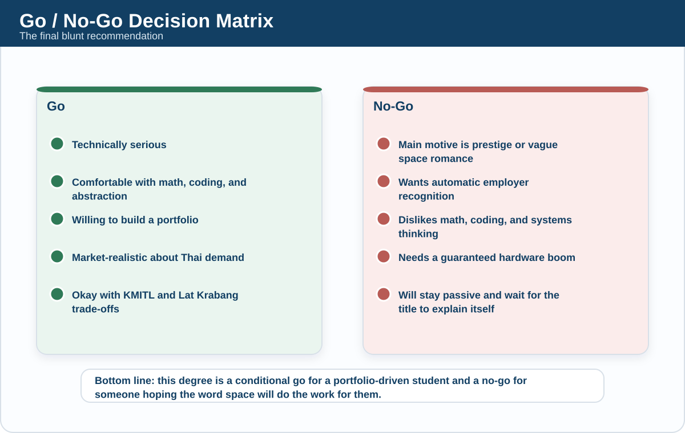
7. Final Verdict
The honest final verdict is this: KMITL's Space and Geospatial Engineering degree is a good choice for the right Thai student, but not a forgiving one. It is worth it if the student is technically inclined, market-realistic, and willing to build a serious portfolio around GIS, data, systems, telecom, or satellite-enabled applications. In that scenario, the degree is more strategic than it first appears. It provides technical breadth, credible specialization, and a safer set of fallback routes than a naive reading of the title would suggest.
It is not worth it for a student who mainly wants the emotional story of space without the actual disciplines that make the story employable. The degree does not forgive passivity well. It does not automatically convert into elite aerospace outcomes. It does not erase the need for initiative. And it will not feel easy if the student is choosing it for image rather than fit.
If forced into a one-line verdict, it is this: Go, but only as a technically serious, portfolio-driven, Thai-market-aware choice. No-go as a prestige-driven choice.
8. Chapter Takeaway
KMITL SGE is not a bad bet. It is a conditional bet. For a serious student, it can be a strong and unusually versatile engineering platform with real Thai employability and meaningful geospatial identity. For a passive or image-driven student, it is too ambiguous and too demanding. The correct decision is not based on whether the degree sounds exciting. It is based on whether the student can turn that excitement into durable technical proof.
Sources
Local housing listings and service pages are time-sensitive. Links below were checked on April 12, 2026 and used as current signals rather than permanent guarantees.
- KMITL Department of Telecommunications Engineering: Space and Geospatial Engineering
- KMITL student dormitory fees
- KMITL dormitory application announcement example
- KMITL OSDA student services and counseling
- KMITL campus map and location context
- KMITL campus facilities and co-working spaces
- KMITL transportation guide
- KMITL campus shuttle information
- PropertyHub current condo listings near KMITL
- RentHub current apartment listings in Lat Krabang
- KMITL Department of Telecommunications Engineering: Advanced Labs
- KMITL Department of Telecommunications Engineering: Labs with Industry
- NARIT internship program
- GISTDA Training Center
- NASA International Space Apps Challenge
- JAXA: Kibo Robot Programming Challenge application results
Appendix A
Visual Asset Summary
All dossier visuals are now built as native SVG assets and integrated directly into the reading flow. The full entry-by-entry register lives in visual-asset-register.html.
Total Visuals
27 dossier visuals are now present in the master volume.
Built and Integrated
27 of 27 visuals have been built and placed into the dossier and chapter files.
User-Supplied Sources Required
0. The current visual set ships without requiring logos, photos, or external proprietary assets.
Note: the Bangkok-style map has been implemented as a schematic city-layer illustration so the book can ship cleanly without external basemap sourcing. A factual map variant can still be produced later if desired.